Neural Networks and Deep Learning
The original online book can be found at http://neuralnetworksanddeeplearning.com
The original online book can be found at http://neuralnetworksanddeeplearning.com
Neural networks are one of the most beautiful programming paradigms ever invented. In the conventional approach to programming, we tell the computer what to do, breaking big problems up into many small, precisely defined tasks that the computer can easily perform. By contrast, in a neural network we don’t tell the computer how to solve our problem. Instead, it learns from observational data, figuring out its own solution to the problem at hand.
Automatically learning from data sounds promising. However, until 2006 we didn’t know how to train neural networks to surpass more traditional approaches, except for a few specialized problems. What changed in 2006 was the discovery of techniques for learning in so-called deep neural networks. These techniques are now known as deep learning. They’ve been developed further, and today deep neural networks and deep learning achieve outstanding performance on many important problems in computer vision, speech recognition, and natural language processing. They’re being deployed on a large scale by companies such as Google, Microsoft, and Facebook.
The purpose of this book is to help you master the core concepts of neural networks, including modern techniques for deep learning. After working through the book you will have written code that uses neural networks and deep learning to solve complex pattern recognition problems. And you will have a foundation to use neural networks and deep learning to attack problems of your own devising.
One conviction underlying the book is that it’s better to obtain a solid understanding of the core principles of neural networks and deep learning, rather than a hazy understanding of a long laundry list of ideas. If you’ve understood the core ideas well, you can rapidly understand other new material. In programming language terms, think of it as mastering the core syntax, libraries and data structures of a new language. You may still only “know” a tiny fraction of the total language – many languages have enormous standard libraries – but new libraries and data structures can be understood quickly and easily.
This means the book is emphatically not a tutorial in how to use some particular neural network library. If you mostly want to learn your way around a library, don’t read this book! Find the library you wish to learn, and work through the tutorials and documentation. But be warned. While this has an immediate problem-solving payoff, if you want to understand what’s really going on in neural networks, if you want insights that will still be relevant years from now, then it’s not enough just to learn some hot library. You need to understand the durable, lasting insights underlying how neural networks work. Technologies come and technologies go, but insight is forever.
We’ll learn the core principles behind neural networks and deep learning by attacking a concrete problem: the problem of teaching a computer to recognize handwritten digits. This problem is extremely difficult to solve using the conventional approach to programming. And yet, as we’ll see, it can be solved pretty well using a simple neural network, with just a few tens of lines of code, and no special libraries. What’s more, we’ll improve the program through many iterations, gradually incorporating more and more of the core ideas about neural networks and deep learning.
This hands-on approach means that you’ll need some programming experience to read the book. But you don’t need to be a professional programmer. I’ve written the code in Python (version 2.7), which, even if you don’t program in Python, should be easy to understand with just a little effort. Through the course of the book we will develop a little neural network library, which you can use to experiment and to build understanding. All the code is available for download here. Once you’ve finished the book, or as you read it, you can easily pick up one of the more feature-complete neural network libraries intended for use in production.
On a related note, the mathematical requirements to read the book are modest. There is some mathematics in most chapters, but it’s usually just elementary algebra and plots of functions, which I expect most readers will be okay with. I occasionally use more advanced mathematics, but have structured the material so you can follow even if some mathematical details elude you. The one chapter which uses heavier mathematics extensively is Chapter 2, which requires a little multivariable calculus and linear algebra. If those aren’t familiar, I begin Chapter 2 with a discussion of how to navigate the mathematics. If you’re finding it really heavy going, you can simply skip to the summary of the chapter’s main results. In any case, there’s no need to worry about this at the outset.
It’s rare for a book to aim to be both principle-oriented and hands-on. But I believe you’ll learn best if we build out the fundamental ideas of neural networks. We’ll develop living code, not just abstract theory, code which you can explore and extend. This way you’ll understand the fundamentals, both in theory and practice, and be well set to add further to your knowledge.
It’s not uncommon for technical books to include an admonition from the author that readers must do the exercises and problems. I always feel a little peculiar when I read such warnings. Will something bad happen to me if I don’t do the exercises and problems? Of course not. I’ll gain some time, but at the expense of depth of understanding. Sometimes that’s worth it. Sometimes it’s not.
So what’s worth doing in this book? My advice is that you really should attempt most of the exercises, and you should aim not to do most of the problems.
You should do most of the exercises because they’re basic checks that you’ve understood the material. If you can’t solve an exercise relatively easily, you’ve probably missed something fundamental. Of course, if you do get stuck on an occasional exercise, just move on – chances are it’s just a small misunderstanding on your part, or maybe I’ve worded something poorly. But if most exercises are a struggle, then you probably need to reread some earlier material.
The problems are another matter. They’re more difficult than the exercises, and you’ll likely struggle to solve some problems. That’s annoying, but, of course, patience in the face of such frustration is the only way to truly understand and internalize a subject.
With that said, I don’t recommend working through all the problems. What’s even better is to find your own project. Maybe you want to use neural nets to classify your music collection. Or to predict stock prices. Or whatever. But find a project you care about. Then you can ignore the problems in the book, or use them simply as inspiration for work on your own project. Struggling with a project you care about will teach you far more than working through any number of set problems. Emotional commitment is a key to achieving mastery.
Of course, you may not have such a project in mind, at least up front. That’s fine. Work through those problems you feel motivated to work on. And use the material in the book to help you search for ideas for creative personal projects.
The human visual system is one of the wonders of the world. Consider the following sequence of handwritten digits:

Most people effortlessly recognize those digits as 504192. That ease is deceptive. In each hemisphere of our brain, humans have a primary visual cortex, also known as V\(_1\), containing 140 million neurons, with tens of billions of connections between them. And yet human vision involves not just V\(_1\), but an entire series of visual cortices – V\(_2\), V\(_3\), V\(_4\), and V\(_5\) – doing progressively more complex image processing. We carry in our heads a supercomputer, tuned by evolution over hundreds of millions of years, and superbly adapted to understand the visual world. Recognizing handwritten digits isn’t easy. Rather, we humans are stupendously, astoundingly good at making sense of what our eyes show us. But nearly all that work is done unconsciously. And so we don’t usually appreciate how tough a problem our visual systems solve.
The difficulty of visual pattern recognition becomes apparent if you attempt to write a computer program to recognize digits like those above. What seems easy when we do it ourselves suddenly becomes extremely difficult. Simple intuitions about how we recognize shapes – “a 9 has a loop at the top, and a vertical stroke in the bottom right” – turn out to be not so simple to express algorithmically. When you try to make such rules precise, you quickly get lost in a morass of exceptions and caveats and special cases. It seems hopeless.
Neural networks approach the problem in a different way. The idea is to take a large number of handwritten digits, known as training examples,

and then develop a system which can learn from those training examples. In other words, the neural network uses the examples to automatically infer rules for recognizing handwritten digits. Furthermore, by increasing the number of training examples, the network can learn more about handwriting, and so improve its accuracy. So while I’ve shown just 100 training digits above, perhaps we could build a better handwriting recognizer by using thousands or even millions or billions of training examples.
In this chapter we’ll write a computer program implementing a neural network that learns to recognize handwritten digits. The program is just 74 lines long, and uses no special neural network libraries. But this short program can recognize digits with an accuracy over 96 percent, without human intervention. Furthermore, in later chapters we’ll develop ideas which can improve accuracy to over 99 percent. In fact, the best commercial neural networks are now so good that they are used by banks to process cheques, and by post offices to recognize addresses.
We’re focusing on handwriting recognition because it’s an excellent prototype problem for learning about neural networks in general. As a prototype it hits a sweet spot: it’s challenging – it’s no small feat to recognize handwritten digits – but it’s not so difficult as to require an extremely complicated solution, or tremendous computational power. Furthermore, it’s a great way to develop more advanced techniques, such as deep learning. And so throughout the book we’ll return repeatedly to the problem of handwriting recognition. Later in the book, we’ll discuss how these ideas may be applied to other problems in computer vision, and also in speech, natural language processing, and other domains.
Of course, if the point of the chapter was only to write a computer program to recognize handwritten digits, then the chapter would be much shorter! But along the way we’ll develop many key ideas about neural networks, including two important types of artificial neuron (the perceptron and the sigmoid neuron), and the standard learning algorithm for neural networks, known as stochastic gradient descent. Throughout, I focus on explaining why things are done the way they are, and on building your neural networks intuition. That requires a lengthier discussion than if I just presented the basic mechanics of what’s going on, but it’s worth it for the deeper understanding you’ll attain. Amongst the payoffs, by the end of the chapter we’ll be in position to understand what deep learning is, and why it matters.
What is a neural network? To get started, I’ll explain a type of artificial neuron called a perceptron. Perceptrons were developed in the 1950s and 1960s by the scientist Frank Rosenblatt, inspired by earlier work by Warren McCulloch and Walter Pitts. Today, it’s more common to use other models of artificial neurons – in this book, and in much modern work on neural networks, the main neuron model used is one called the sigmoid neuron. We’ll get to sigmoid neurons shortly. But to understand why sigmoid neurons are defined the way they are, it’s worth taking the time to first understand perceptrons.
So how do perceptrons work? A perceptron takes several binary inputs, \(x_1, x_2, \ldots\), and produces a single binary output:
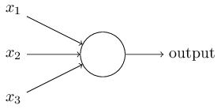
In the example shown the perceptron has three inputs, \(x_1\), \(x_2\), \(x_3\). In general it could have more or fewer inputs. Rosenblatt proposed a simple rule to compute the output. He introduced weights, \(w_1\),\(w_2\), \(\ldots\), real numbers expressing the importance of the respective inputs to the output. The neuron’s output, 0 or 1, is determined by whether the weighted sum \(\sum_j w_jx_j\) is less than or greater than some threshold value. Just like the weights, the threshold is a real number which is a parameter of the neuron. To put it in more precise algebraic terms: \[\textrm{output} = \begin{cases} 0 \quad \textrm{if}\quad \sum_j w_jx_j \le \mathrm{threshold} \\ 1 \quad \textrm{if}\quad \sum_j w_jx_j > \mathrm{threshold}\tag{1} \end{cases}\] That’s all there is to how a perceptron works!
That’s the basic mathematical model. A way you can think about the perceptron is that it’s a device that makes decisions by weighing up evidence. Let me give an example. It’s not a very realistic example, but it’s easy to understand, and we’ll soon get to more realistic examples. Suppose the weekend is coming up, and you’ve heard that there’s going to be a cheese festival in your city. You like cheese, and are trying to decide whether or not to go to the festival. You might make your decision by weighing up three factors:
Is the weather good?
Does your boyfriend or girlfriend want to accompany you?
Is the festival near public transit? (You don’t own a car).
We can represent these three factors by corresponding binary variables \(x_1\), \(x_2\) and \(x_3\). For instance, we’d have \(x_1=1\) if the weather is good, and \(x_1=0\) if the weather is bad. Similarly, \(x_2=1\) if your boyfriend or girlfriend wants to go, and \(x_2=0\) if not. And similarly again for \(x_3\) and public transit.
Now, suppose you absolutely adore cheese, so much so that you’re happy to go to the festival even if your boyfriend or girlfriend is uninterested and the festival is hard to get to. But perhaps you really loathe bad weather, and there’s no way you’d go to the festival if the weather is bad. You can use perceptrons to model this kind of decision-making. One way to do this is to choose a weight \(w_1=6\) for the weather, and \(w_2=2\) and \(w_3=2\) for the other conditions. The larger value of \(w_1\) indicates that the weather matters a lot to you, much more than whether your boyfriend or girlfriend joins you, or the nearness of public transit. Finally, suppose you choose a threshold of 5 for the perceptron. With these choices, the perceptron implements the desired decision-making model, outputting 1 whenever the weather is good, and 0 whenever the weather is bad. It makes no difference to the output whether your boyfriend or girlfriend wants to go, or whether public transit is nearby.
By varying the weights and the threshold, we can get different models of decision-making. For example, suppose we instead chose a threshold of 3. Then the perceptron would decide that you should go to the festival whenever the weather was good or when both the festival was near public transit and your boyfriend or girlfriend was willing to join you. In other words, it’d be a different model of decision-making. Dropping the threshold means you’re more willing to go to the festival.
Obviously, the perceptron isn’t a complete model of human decision-making! But what the example illustrates is how a perceptron can weigh up different kinds of evidence in order to make decisions. And it should seem plausible that a complex network of perceptrons could make quite subtle decisions:
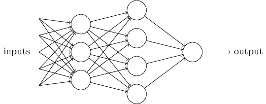
In this network, the first column of perceptrons – what we’ll call the first layer of perceptrons – is making three very simple decisions, by weighing the input evidence. What about the perceptrons in the second layer? Each of those perceptrons is making a decision by weighing up the results from the first layer of decision-making. In this way a perceptron in the second layer can make a decision at a more complex and more abstract level than perceptrons in the first layer. And even more complex decisions can be made by the perceptron in the third layer. In this way, a many-layer network of perceptrons can engage in sophisticated decision making.
Incidentally, when I defined perceptrons I said that a perceptron has just a single output. In the network above the perceptrons look like they have multiple outputs. In fact, they’re still single output. The multiple output arrows are merely a useful way of indicating that the output from a perceptron is being used as the input to several other perceptrons. It’s less unwieldy than drawing a single output line which then splits.
Let’s simplify the way we describe perceptrons. The condition \(\sum_j w_jx_j>\)threshold is cumbersome, and we can make two notational changes to simplify it. The first change is to write \(\sum_j w_jx_j\) as a dot product, \(w\cdot x = \sum_j w_jx_j\), where \(w\) and \(x\) are vectors whose components are the weights and inputs, respectively. The second change is to move the threshold to the other side of the inequality, and to replace it by what’s known as the perceptron’s bias, b\(\equiv-\)threshold. Using the bias instead of the threshold, the perceptron rule can be rewritten: \[\textrm{output} = \begin{cases} 0 \quad \textrm{if}\quad w\cdot x + b \le 0 \\ 1 \quad \textrm{if}\quad w\cdot x + b > 0 \tag{2} \end{cases}\] You can think of the bias as a measure of how easy it is to get the perceptron to output a 1. Or to put it in more biological terms, the bias is a measure of how easy it is to get the perceptron to fire. For a perceptron with a really big bias, it’s extremely easy for the perceptron to output a 1. But if the bias is very negative, then it’s difficult for the perceptron to output a 1. Obviously, introducing the bias is only a small change in how we describe perceptrons, but we’ll see later that it leads to further notational simplifications. Because of this, in the remainder of the book we won’t use the threshold, we’ll always use the bias.
I’ve described perceptrons as a method for weighing evidence to make decisions. Another way perceptrons can be used is to compute the elementary logical functions we usually think of as underlying computation, functions such as AND, OR, and NAND. For example, suppose we have a perceptron with two inputs, each with weight –2, and an overall bias of 3. Here’s our perceptron:

Then we see that input 00 produces output 1, since \((-2)\ast0+(-2)\ast0+3=3\) is positive. Here, I’ve introduced the \(\ast\) symbol to make the multiplications explicit. Similar calculations show that the inputs 01 and 10 produce output 1. But the input 11 produces output 0, since \((-2)\ast1+(-2)\ast1+3=-1\) is negative. And so our perceptron implements a NAND gate!
The NAND example shows that we can use perceptrons to compute simple logical functions. In fact, we can use networks of perceptrons to compute any logical function at all. The reason is that the NAND gate is universal for computation, that is, we can build any computation up out of NAND gates. For example, we can use NAND gates to build a circuit which adds two bits, \(x_1\) and \(x_2\). This requires computing the bitwise sum, \(x_1\bigoplus x_2\), as well as a carry bit which is set to 1 when both \(x_1\) and \(x_2\) are 1, i.e., the carry bit is just the bitwise product \(x_1x_2\):
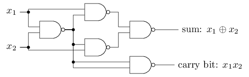
To get an equivalent network of perceptrons we replace all the NAND gates by perceptrons with two inputs, each with weight –2, and an overall bias of 3. Here’s the resulting network. Note that I’ve moved the perceptron corresponding to the bottom right NAND gate a little, just to make it easier to draw the arrows on the diagram:
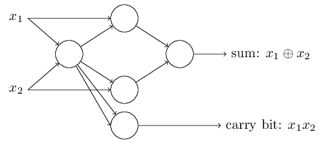
One notable aspect of this network of perceptrons is that the output from the leftmost perceptron is used twice as input to the bottommost perceptron. When I defined the perceptron model I didn’t say whether this kind of double-output-to-the-same-place was allowed. Actually, it doesn’t much matter. If we don’t want to allow this kind of thing, then it’s possible to simply merge the two lines, into a single connection with a weight of –4 instead of two connections with –2 weights. (If you don’t find this obvious, you should stop and prove to yourself that this is equivalent.) With that change, the network looks as follows, with all unmarked weights equal to –2, all biases equal to 3, and a single weight of –4, as marked:
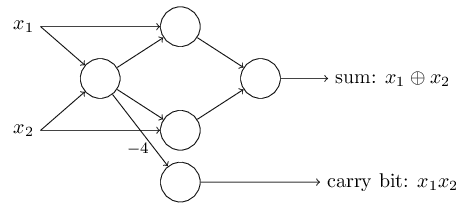
Up to now I’ve been drawing inputs like \(x_1\) and \(x_2\) as variables floating to the left of the network of perceptrons. In fact, it’s conventional to draw an extra layer of perceptrons – the input layer – to encode the inputs:
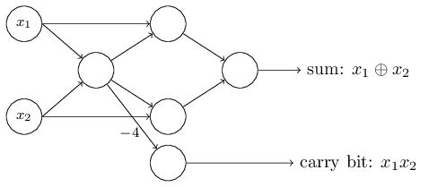
This notation for input perceptrons, in which we have an output, but no inputs,
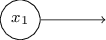
is a shorthand. It doesn’t actually mean a perceptron with no inputs. To see this, suppose we did have a perceptron with no inputs. Then the weighted sum \(\sum_jw_jx_j\) would always be zero, and so the perceptron would output 1 if \(b>0\), and 0 if \(b\le0\). That is, the perceptron would simply output a fixed value, not the desired value (\(x_1\), in the example above). It’s better to think of the input perceptrons as not really being perceptrons at all, but rather special units which are simply defined to output the desired values, \(x_1,x_2,\ldots\) .
The adder example demonstrates how a network of perceptrons can be used to simulate a circuit containing many NAND gates. And because NAND gates are universal for computation, it follows that perceptrons are also universal for computation.
The computational universality of perceptrons is simultaneously reassuring and disappointing. It’s reassuring because it tells us that networks of perceptrons can be as powerful as any other computing device. But it’s also disappointing, because it makes it seem as though perceptrons are merely a new type of NAND gate. That’s hardly big news!
However, the situation is better than this view suggests. It turns out that we can devise learning algorithms which can automatically tune the weights and biases of a network of artificial neurons. This tuning happens in response to external stimuli, without direct intervention by a programmer. These learning algorithms enable us to use artificial neurons in a way which is radically different to conventional logic gates. Instead of explicitly laying out a circuit of NAND and other gates, our neural networks can simply learn to solve problems, sometimes problems where it would be extremely difficult to directly design a conventional circuit.
Learning algorithms sound terrific. But how can we devise such algorithms for a neural network? Suppose we have a network of perceptrons that we’d like to use to learn to solve some problem. For example, the inputs to the network might be the raw pixel data from a scanned, handwritten image of a digit. And we’d like the network to learn weights and biases so that the output from the network correctly classifies the digit. To see how learning might work, suppose we make a small change in some weight (or bias) in the network. What we’d like is for this small change in weight to cause only a small corresponding change in the output from the network. As we’ll see in a moment, this property will make learning possible. Schematically, here’s what we want (obviously this network is too simple to do handwriting recognition!):
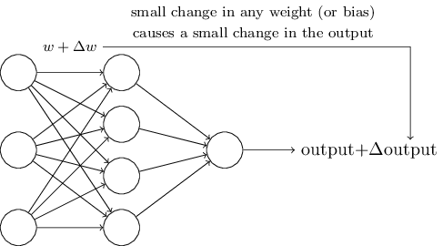
If it were true that a small change in a weight (or bias) causes only a small change in output, then we could use this fact to modify the weights and biases to get our network to behave more in the manner we want. For example, suppose the network was mistakenly classifying an image as an “8” when it should be a “9”. We could figure out how to make a small change in the weights and biases so the network gets a little closer to classifying the image as a “9”. And then we’d repeat this, changing the weights and biases over and over to produce better and better output. The network would be learning.
The problem is that this isn’t what happens when our network contains perceptrons. In fact, a small change in the weights or bias of any single perceptron in the network can sometimes cause the output of that perceptron to completely flip, say from 0 to 1. That flip may then cause the behaviour of the rest of the network to completely change in some very complicated way. So while your “9” might now be classified correctly, the behaviour of the network on all the other images is likely to have completely changed in some hard-to-control way. That makes it difficult to see how to gradually modify the weights and biases so that the network gets closer to the desired behaviour. Perhaps there’s some clever way of getting around this problem. But it’s not immediately obvious how we can get a network of perceptrons to learn.
We can overcome this problem by introducing a new type of artificial neuron called a sigmoid neuron. Sigmoid neurons are similar to perceptrons, but modified so that small changes in their weights and bias cause only a small change in their output. That’s the crucial fact which will allow a network of sigmoid neurons to learn.
Okay, let me describe the sigmoid neuron. We’ll depict sigmoid neurons in the same way we depicted perceptrons:
Just like a perceptron, the sigmoid neuron has inputs, \(x_1, x_2, \ldots\). But instead of being just 0 or 1, these inputs can also take on any values between 0 and 1. So, for instance, \(0.638\ldots\) is a valid input for a sigmoid neuron. Also just like a perceptron, the sigmoid neuron has weights for each input, \(w_1,w_2,\ldots\), and an overall bias, \(b\). But the output is not 0 or 1. Instead, it’s \(\sigma(w⋅x+b)\), where \(\sigma\) is called the sigmoid function1, and is defined by:
\[\sigma(z) \equiv \frac1{1+e^{-z}}.\tag{3}\label{eq:sigma}\] To put it all a little more explicitly, the output of a sigmoid neuron with inputs \(x_1\),\(x_2\),\(\ldots\), weights \(w_1,w_2,\ldots\), and bias \(b\) is \[\frac1{1+\exp\left(-\sum_jw_jx_j-b\right)}.\tag{4}\label{eq:4}\] At first sight, sigmoid neurons appear very different to perceptrons. The algebraic form of the sigmoid function may seem opaque and forbidding if you’re not already familiar with it. In fact, there are many similarities between perceptrons and sigmoid neurons, and the algebraic form of the sigmoid function turns out to be more of a technical detail than a true barrier to understanding.
To understand the similarity to the perceptron model, suppose \(z\equiv w\cdot x+b\) is a large positive number. Then \(e^{-z}\approx0\) and so \(\sigma(z)\approx 1\). In other words, when \(z=w\cdot x+b\) is large and positive, the output from the sigmoid neuron is approximately 1, just as it would have been for a perceptron. Suppose on the other hand that \(z=w\cdot x+b\) is very negative. Then \(e^{-z}\to\infty\), and \(\sigma(z)\approx0\). So when \(z=w\cdot x+b\) is very negative, the behaviour of a sigmoid neuron also closely approximates a perceptron. It’s only when \(w\cdot x+b\) is of modest size that there’s much deviation from the perceptron model.
What about the algebraic form of \(\sigma\)? How can we understand that? In fact, the exact form of \(\sigma\) isn’t so important – what really matters is the shape of the function when plotted. Here’s the shape:
This shape is a smoothed out version of a step function:
If \(\sigma\) had in fact been a step function, then the sigmoid neuron would be a perceptron, since the output would be 1 or 0 depending on whether \(w\cdot x + b\) was positive or negative2. By using the actual \(\sigma\) function we get, as already implied above, a smoothed out perceptron. Indeed, it’s the smoothness of the \(\sigma\) function that is the crucial fact, not its detailed form. The smoothness of \(\sigma\) means that small changes \(\Delta{}w_j\) in the weights and \(\Delta{}b\) in the bias will produce a small change \(\Delta\textrm{output}\) in the output from the neuron. In fact, calculus tells us that \(\Delta\textrm{output}\) is well approximated by \[\Delta\textrm{output}\approx \sum_j\frac{\partial\textrm{output}}{\partial w_j}\Delta w_j + \frac{\partial\textrm{output}}{\partial b}\Delta b \tag{5}\label{eq:doutput}\] where the sum is over all the weights, \(w_j\), and \(\partial\textrm{output}/\partial w_j\) and \(\partial\textrm{output}/\partial b\) denote partial derivatives of the output with respect to \(w_j\) and \(b\), respectively. Don’t panic if you’re not comfortable with partial derivatives! While the expression above looks complicated, with all the partial derivatives, it’s actually saying something very simple (and which is very good news): \(\Delta\textrm{output}\) is a linear function of the changes \(\Delta w_j\) and \(\Delta b\) in the weights and bias. This linearity makes it easy to choose small changes in the weights and biases to achieve any desired small change in the output. So while sigmoid neurons have much of the same qualitative behavior as perceptrons, they make it much easier to figure out how changing the weights and biases will change the output.
If it’s the shape of \(\sigma\) which really matters, and not its exact form, then why use the particular form used for \(\sigma\) in Equation ([eq:sigma])? In fact, later in the book we will occasionally consider neurons where the output is \(f(w\cdot x + b)\) for some other activation function \(f(\cdot)\). The main thing that changes when we use a different activation function is that the particular values for the partial derivatives in Equation ([eq:doutput]) change. It turns out that when we compute those partial derivatives later, using \(\sigma\) will simplify the algebra, simply because exponentials have lovely properties when differentiated. In any case, \(\sigma\) is commonly-used in work on neural nets, and is the activation function we’ll use most often in this book.
How should we interpret the output from a sigmoid neuron? Obviously, one big difference between perceptrons and sigmoid neurons is that sigmoid neurons don’t just output 0 or 1. They can have as output any real number between 0 and 1, so values such as 0.173\(\ldots\) and 0.689\(\ldots\) are legitimate outputs. This can be useful, for example, if we want to use the output value to represent the average intensity of the pixels in an image input to a neural network. But sometimes it can be a nuisance. Suppose we want the output from the network to indicate either “the input image is a 9” or “the input image is not a 9”. Obviously, it’d be easiest to do this if the output was a 0 or a 1, as in a perceptron. But in practice we can set up a convention to deal with this, for example, by deciding to interpret any output of at least 0.5 as indicating a “9”, and any output less than 0.5 as indicating “not a 9”. I’ll always explicitly state when we’re using such a convention, so it shouldn’t cause any confusion.
Sigmoid neurons simulating perceptrons, part I Suppose we take all the weights and biases in a network of perceptrons, and multiply them by a positive constant, c>0. Show that the behavior of the network doesn’t change.
Sigmoid neurons simulating perceptrons, part II Suppose we have the same setup as the last problem – a network of perceptrons. Suppose also that the overall input to the network of perceptrons has been chosen. We won’t need the actual input value, we just need the input to have been fixed. Suppose the weights and biases are such that \(w\cdot x + b \ne 0\) for the input x to any particular perceptron in the network. Now replace all the perceptrons in the network by sigmoid neurons, and multiply the weights and biases by a positive constant \(c>0\). Show that in the limit as \(c\to\infty\) the behaviour of this network of sigmoid neurons is exactly the same as the network of perceptrons. How can this fail when \(w\cdot x+b=0\) for one of the perceptrons?
In the next section I’ll introduce a neural network that can do a pretty good job classifying handwritten digits. In preparation for that, it helps to explain some terminology that lets us name different parts of a network. Suppose we have the network:
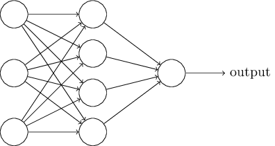
As mentioned earlier, the leftmost layer in this network is called the input layer, and the neurons within the layer are called input neurons. The rightmost or output layer contains the output neurons, or, as in this case, a single output neuron. The middle layer is called a hidden layer, since the neurons in this layer are neither inputs nor outputs. The term “hidden” perhaps sounds a little mysterious – the first time I heard the term I thought it must have some deep philosophical or mathematical significance – but it really means nothing more than “not an input or an output”. The network above has just a single hidden layer, but some networks have multiple hidden layers. For example, the following four-layer network has two hidden layers:
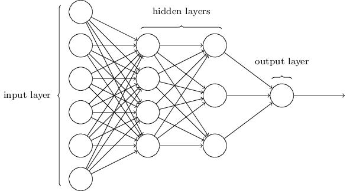
Somewhat confusingly, and for historical reasons, such multiple layer networks are sometimes called multilayer perceptrons or MLPs, despite being made up of sigmoid neurons, not perceptrons. I’m not going to use the MLP terminology in this book, since I think it’s confusing, but wanted to warn you of its existence.
The design of the input and output layers in a network is often straightforward. For example, suppose we’re trying to determine whether a handwritten image depicts a “9” or not. A natural way to design the network is to encode the intensities of the image pixels into the input neurons. If the image is a 64 by 64 greyscale image, then we’d have \(4,096=64\times64\) input neurons, with the intensities scaled appropriately between 0 and 1. The output layer will contain just a single neuron, with output values of less than 0.5 indicating “input image is not a 9”, and values greater than 0.5 indicating “input image is a 9”.
While the design of the input and output layers of a neural network is often straightforward, there can be quite an art to the design of the hidden layers. In particular, it’s not possible to sum up the design process for the hidden layers with a few simple rules of thumb. Instead, neural networks researchers have developed many design heuristics for the hidden layers, which help people get the behaviour they want out of their nets. For example, such heuristics can be used to help determine how to trade off the number of hidden layers against the time required to train the network. We’ll meet several such design heuristics later in this book.
Up to now, we’ve been discussing neural networks where the output from one layer is used as input to the next layer. Such networks are called feedforward neural networks. This means there are no loops in the network – information is always fed forward, never fed back. If we did have loops, we’d end up with situations where the input to the \(\sigma\) function depended on the output. That’d be hard to make sense of, and so we don’t allow such loops.
However, there are other models of artificial neural networks in which feedback loops are possible. These models are called recurrent neural networks. The idea in these models is to have neurons which fire for some limited duration of time, before becoming quiescent. That firing can stimulate other neurons, which may fire a little while later, also for a limited duration. That causes still more neurons to fire, and so over time we get a cascade of neurons firing. Loops don’t cause problems in such a model, since a neuron’s output only affects its input at some later time, not instantaneously.
Recurrent neural nets have been less influential than feedforward networks, in part because the learning algorithms for recurrent nets are (at least to date) less powerful. But recurrent networks are still extremely interesting. They’re much closer in spirit to how our brains work than feedforward networks. And it’s possible that recurrent networks can solve important problems which can only be solved with great difficulty by feedforward networks. However, to limit our scope, in this book we’re going to concentrate on the more widely-used feedforward networks.
Having defined neural networks, let’s return to handwriting recognition. We can split the problem of recognizing handwritten digits into two sub-problems. First, we’d like a way of breaking an image containing many digits into a sequence of separate images, each containing a single digit. For example, we’d like to break the image
into six separate images,

We humans solve this segmentation problem with ease, but it’s challenging for a computer program to correctly break up the image. Once the image has been segmented, the program then needs to classify each individual digit. So, for instance, we’d like our program to recognize that the first digit above,

is a 5.
We’ll focus on writing a program to solve the second problem, that is, classifying individual digits. We do this because it turns out that the segmentation problem is not so difficult to solve, once you have a good way of classifying individual digits. There are many approaches to solving the segmentation problem. One approach is to trial many different ways of segmenting the image, using the individual digit classifier to score each trial segmentation. A trial segmentation gets a high score if the individual digit classifier is confident of its classification in all segments, and a low score if the classifier is having a lot of trouble in one or more segments. The idea is that if the classifier is having trouble somewhere, then it’s probably having trouble because the segmentation has been chosen incorrectly. This idea and other variations can be used to solve the segmentation problem quite well. So instead of worrying about segmentation we’ll concentrate on developing a neural network which can solve the more interesting and difficult problem, namely, recognizing individual handwritten digits.
To recognize individual digits we will use a three-layer neural network:
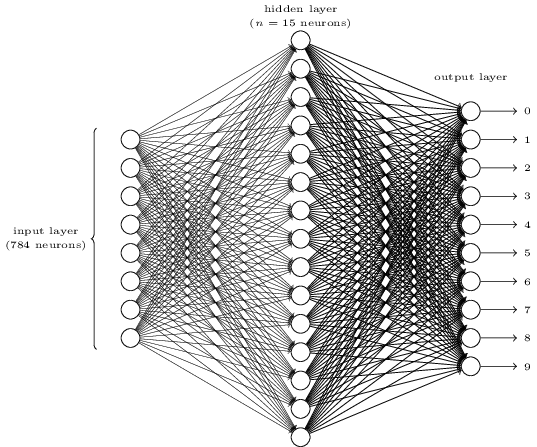
The input layer of the network contains neurons encoding the values of the input pixels. As discussed in the next section, our training data for the network will consist of many 28 by 28 pixel images of scanned handwritten digits, and so the input layer contains \(784=28\times28\) neurons. For simplicity I’ve omitted most of the 784 input neurons in the diagram above. The input pixels are greyscale, with a value of 0.0 representing white, a value of 1.0 representing black, and in between values representing gradually darkening shades of grey.
The second layer of the network is a hidden layer. We denote the number of neurons in this hidden layer by \(n\), and we’ll experiment with different values for \(n\). The example shown illustrates a small hidden layer, containing just \(n=15\) neurons.
The output layer of the network contains 10 neurons. If the first neuron fires, i.e., has an output \(\approx 1\), then that will indicate that the network thinks the digit is a 0. If the second neuron fires then that will indicate that the network thinks the digit is a 1. And so on. A little more precisely, we number the output neurons from 0 through 9, and figure out which neuron has the highest activation value. If that neuron is, say, neuron number 6, then our network will guess that the input digit was a 6. And so on for the other output neurons.
You might wonder why we use 10 output neurons. After all, the goal of the network is to tell us which digit (0, 1, 2,\(\ldots\), 9) corresponds to the input image. A seemingly natural way of doing that is to use just 4 output neurons, treating each neuron as taking on a binary value, depending on whether the neuron’s output is closer to 0 or to 1. Four neurons are enough to encode the answer, since \(2^4=16\) is more than the 10 possible values for the input digit. Why should our network use 10 neurons instead? Isn’t that inefficient? The ultimate justification is empirical: we can try out both network designs, and it turns out that, for this particular problem, the network with 10 output neurons learns to recognize digits better than the network with 4 output neurons. But that leaves us wondering why using 10 output neurons works better. Is there some heuristic that would tell us in advance that we should use the 10-output encoding instead of the 4-output encoding?
To understand why we do this, it helps to think about what the neural network is doing from first principles. Consider first the case where we use 10 output neurons. Let’s concentrate on the first output neuron, the one that’s trying to decide whether or not the digit is a 0. It does this by weighing up evidence from the hidden layer of neurons. What are those hidden neurons doing? Well, just suppose for the sake of argument that the first neuron in the hidden layer detects whether or not an image like the following is present:

It can do this by heavily weighting input pixels which overlap with the image, and only lightly weighting the other inputs. In a similar way, let’s suppose for the sake of argument that the second, third, and fourth neurons in the hidden layer detect whether or not the following images are present:

As you may have guessed, these four images together make up the 0 image that we saw in the line of digits shown earlier:

So if all four of these hidden neurons are firing then we can conclude that the digit is a 0. Of course, that’s not the only sort of evidence we can use to conclude that the image was a 0 – we could legitimately get a 0 in many other ways (say, through translations of the above images, or slight distortions). But it seems safe to say that at least in this case we’d conclude that the input was a 0.
Supposing the neural network functions in this way, we can give a plausible explanation for why it’s better to have 10 outputs from the network, rather than 4. If we had 4 outputs, then the first output neuron would be trying to decide what the most significant bit of the digit was. And there’s no easy way to relate that most significant bit to simple shapes like those shown above. It’s hard to imagine that there’s any good historical reason the component shapes of the digit will be closely related to (say) the most significant bit in the output.
Now, with all that said, this is all just a heuristic. Nothing says that the three-layer neural network has to operate in the way I described, with the hidden neurons detecting simple component shapes. Maybe a clever learning algorithm will find some assignment of weights that lets us use only 4 output neurons. But as a heuristic the way of thinking I’ve described works pretty well, and can save you a lot of time in designing good neural network architectures.
There is a way of determining the bitwise representation of a digit by adding an extra layer to the three-layer network above. The extra layer converts the output from the previous layer into a binary representation, as illustrated in the figure below. Find a set of weights and biases for the new output layer. Assume that the first 3 layers of neurons are such that the correct output in the third layer (i.e., the old output layer) has activation at least 0.99, and incorrect outputs have activation less than 0.01.
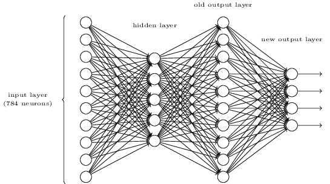
Now that we have a design for our neural network, how can it learn to recognize digits? The first thing we’ll need is a data set to learn from – a so-called training data set. We’ll use the MNIST data set, which contains tens of thousands of scanned images of handwritten digits, together with their correct classifications. MNIST’s name comes from the fact that it is a modified subset of two data sets collected by NIST, the United States’ National Institute of Standards and Technology. Here’s a few images from MNIST:
As you can see, these digits are, in fact, the same as those shown at the beginning of this chapter as a challenge to recognize. Of course, when testing our network we’ll ask it to recognize images which aren’t in the training set!
The MNIST data comes in two parts. The first part contains 60,000 images to be used as training data. These images are scanned handwriting samples from 250 people, half of whom were US Census Bureau employees, and half of whom were high school students. The images are greyscale and 28 by 28 pixels in size. The second part of the MNIST data set is 10,000 images to be used as test data. Again, these are 28 by 28 greyscale images. We’ll use the test data to evaluate how well our neural network has learned to recognize digits. To make this a good test of performance, the test data was taken from a different set of 250 people than the original training data (albeit still a group split between Census Bureau employees and high school students). This helps give us confidence that our system can recognize digits from people whose writing it didn’t see during training.
We’ll use the notation \(x\) to denote a training input. It’ll be convenient to regard each training input \(x\) as a \(28\times28=784\)-dimensional vector. Each entry in the vector represents the grey value for a single pixel in the image. We’ll denote the corresponding desired output by \(y=y(x)\), where \(y\) is a 10-dimensional vector. For example, if a particular training image, \(x\), depicts a 6, then \(y(x)=(0,0,0,0,0,0,1,0,0,0)^T\) is the desired output from the network. Note that \(T\) here is the transpose operation, turning a row vector into an ordinary (column) vector.
What we’d like is an algorithm which lets us find weights and biases so that the output from the network approximates \(y(x)\) for all training inputs \(x\). To quantify how well we’re achieving this goal we define a cost function3: \[C(w,b) \equiv\frac1{2n}\sum_x\|y(x)-a\|^2 \tag{6}\label{eq:6}\] Here, \(w\) denotes the collection of all weights in the network, \(b\) all the biases, \(n\) is the total number of training inputs, \(a\) is the vector of outputs from the network when \(x\) is input, and the sum is over all training inputs, \(x\). Of course, the output \(a\) depends on \(x\), \(w\) and \(b\), but to keep the notation simple I haven’t explicitly indicated this dependence. The notation \(\|v\|\) just denotes the usual length function for a vector \(v\). We’ll call \(C\) the quadratic cost function; it’s also sometimes known as the mean squared error or just MSE. Inspecting the form of the quadratic cost function, we see that \(C(w,b)\) is non-negative, since every term in the sum is non-negative. Furthermore, the cost \(C(w,b)\) becomes small, i.e., \(C(w,b)\approx0\), precisely when \(y(x)\) is approximately equal to the output, \(a\), for all training inputs, \(x\). So our training algorithm has done a good job if it can find weights and biases so that \(C(w,b)\approx0\). By contrast, it’s not doing so well when \(C(w,b)\) is large – that would mean that \(y(x)\) is not close to the output a for a large number of inputs. So the aim of our training algorithm will be to minimize the cost \(C(w,b)\) as a function of the weights and biases. In other words, we want to find a set of weights and biases which make the cost as small as possible. We’ll do that using an algorithm known as gradient descent.
Why introduce the quadratic cost? After all, aren’t we primarily interested in the number of images correctly classified by the network? Why not try to maximize that number directly, rather than minimizing a proxy measure like the quadratic cost? The problem with that is that the number of images correctly classified is not a smooth function of the weights and biases in the network. For the most part, making small changes to the weights and biases won’t cause any change at all in the number of training images classified correctly. That makes it difficult to figure out how to change the weights and biases to get improved performance. If we instead use a smooth cost function like the quadratic cost it turns out to be easy to figure out how to make small changes in the weights and biases so as to get an improvement in the cost. That’s why we focus first on minimizing the quadratic cost, and only after that will we examine the classification accuracy.
Even given that we want to use a smooth cost function, you may still wonder why we choose the quadratic function used in Equation ([eq:6]). Isn’t this a rather ad hoc choice? Perhaps if we chose a different cost function we’d get a totally different set of minimizing weights and biases? This is a valid concern, and later we’ll revisit the cost function, and make some modifications. However, the quadratic cost function of Equation ([eq:6]) works perfectly well for understanding the basics of learning in neural networks, so we’ll stick with it for now.
Recapping, our goal in training a neural network is to find weights and biases which minimize the quadratic cost function \(C(w,b)\). This is a well-posed problem, but it’s got a lot of distracting structure as currently posed – the interpretation of \(w\) and \(b\) as weights and biases, the \(\sigma\) function lurking in the background, the choice of network architecture, MNIST, and so on. It turns out that we can understand a tremendous amount by ignoring most of that structure, and just concentrating on the minimization aspect. So for now we’re going to forget all about the specific form of the cost function, the connection to neural networks, and so on. Instead, we’re going to imagine that we’ve simply been given a function of many variables and we want to minimize that function. We’re going to develop a technique called gradient descent which can be used to solve such minimization problems. Then we’ll come back to the specific function we want to minimize for neural networks.
Okay, let’s suppose we’re trying to minimize some function, \(C(v)\). This could be any real-valued function of many variables, \(v=v_1,v_2,\ldots\). Note that I’ve replaced the \(w\) and \(b\) notation by \(v\) to emphasize that this could be any function – we’re not specifically thinking in the neural networks context any more. To minimize \(C(v)\) it helps to imagine \(C\) as a function of just two variables, which we’ll call \(v_1\) and \(v_2\):

What we’d like is to find where \(C\) achieves its global minimum. Now, of course, for the function plotted above, we can eyeball the graph and find the minimum. In that sense, I’ve perhaps shown slightly too simple a function! A general function, \(C\), may be a complicated function of many variables, and it won’t usually be possible to just eyeball the graph to find the minimum.
One way of attacking the problem is to use calculus to try to find the minimum analytically. We could compute derivatives and then try using them to find places where \(C\) is an extremum. With some luck that might work when \(C\) is a function of just one or a few variables. But it’ll turn into a nightmare when we have many more variables. And for neural networks we’ll often want far more variables – the biggest neural networks have cost functions which depend on billions of weights and biases in an extremely complicated way. Using calculus to minimize that just won’t work!
(After asserting that we’ll gain insight by imagining \(C\) as a function of just two variables, I’ve turned around twice in two paragraphs and said, “hey, but what if it’s a function of many more than two variables?” Sorry about that. Please believe me when I say that it really does help to imagine \(C\) as a function of two variables. It just happens that sometimes that picture breaks down, and the last two paragraphs were dealing with such breakdowns. Good thinking about mathematics often involves juggling multiple intuitive pictures, learning when it’s appropriate to use each picture, and when it’s not.)
[gradient_descent] Okay, so calculus doesn’t work. Fortunately, there is a beautiful analogy which suggests an algorithm which works pretty well. We start by thinking of our function as a kind of a valley. If you squint just a little at the plot above, that shouldn’t be too hard. And we imagine a ball rolling down the slope of the valley. Our everyday experience tells us that the ball will eventually roll to the bottom of the valley. Perhaps we can use this idea as a way to find a minimum for the function? We’d randomly choose a starting point for an (imaginary) ball, and then simulate the motion of the ball as it rolled down to the bottom of the valley. We could do this simulation simply by computing derivatives (and perhaps some second derivatives) of \(C\) – those derivatives would tell us everything we need to know about the local “shape” of the valley, and therefore how our ball should roll.
Based on what I’ve just written, you might suppose that we’ll be trying to write down Newton’s equations of motion for the ball, considering the effects of friction and gravity, and so on. Actually, we’re not going to take the ball-rolling analogy quite that seriously – we’re devising an algorithm to minimize \(C\), not developing an accurate simulation of the laws of physics! The ball’s-eye view is meant to stimulate our imagination, not constrain our thinking. So rather than get into all the messy details of physics, let’s simply ask ourselves: if we were declared God for a day, and could make up our own laws of physics, dictating to the ball how it should roll, what law or laws of motion could we pick that would make it so the ball always rolled to the bottom of the valley?
To make this question more precise, let’s think about what happens when we move the ball a small amount \(\Delta v_1\) in the \(v_1\) direction, and a small amount \(\Delta v_2\) in the \(v_2\) direction. Calculus tells us that \(C\) changes as follows: \[\Delta C \approx \frac{\partial C}{\partial v_1} \Delta v_1 + \frac{\partial C}{\partial v_2} \Delta v_2. \tag{7}\label{eq:7}\] We’re going to find a way of choosing \(\Delta v_1\) and \(\Delta v_2\) so as to make \(\Delta C\) negative; i.e., we’ll choose them so the ball is rolling down into the valley. To figure out how to make such a choice it helps to define \(\Delta v\) to be the vector of changes in \(v\), \(\Delta v \equiv (\Delta v_1, \Delta v_2)^T\), where \(T\) is again the transpose operation, turning row vectors into column vectors. We’ll also define the gradient of \(C\) to be the vector of partial derivatives, \(\left(\frac{\partial C}{\partial v_1}, \frac{\partial C}{\partial v_2}\right)^T\). We denote the gradient vector by \(\nabla C\), i.e.: \[\nabla C \equiv \left( \frac{\partial C}{\partial v_1}, \frac{\partial C}{\partial v_2} \right)^T. \tag{8}\label{eq:8}\] In a moment we’ll rewrite the change \(\Delta C\) in terms of \(\Delta{}v\) and the gradient, \(\nabla C\). Before getting to that, though, I want to clarify something that sometimes gets people hung up on the gradient. When meeting the \(\nabla C\) notation for the first time, people sometimes wonder how they should think about the \(\nabla\) symbol. What, exactly, does \(\nabla C\) mean? In fact, it’s perfectly fine to think of \(\nabla C\) as a single mathematical object – the vector defined above – which happens to be written using two symbols. In this point of view, \(\nabla C\) is just a piece of notational flag-waving, telling you “hey, \(\nabla C\) is a gradient vector”. There are more advanced points of view where \(\nabla C\) can be viewed as an independent mathematical entity in its own right (for example, as a differential operator), but we won’t need such points of view.
With these definitions, the expression ([eq:7]) for \(\Delta C\) can be rewritten as \[\Delta C \approx \nabla C \cdot \Delta v \tag{9}\label{eq:9}\] This equation helps explain why \(\nabla C\) is called the gradient vector: \(\nabla C\) relates changes in \(v\) to changes in \(C\), just as we’d expect something called a gradient to do. But what’s really exciting about the equation is that it lets us see how to choose \(\Delta v\) so as to make \(\Delta C\) negative. In particular, suppose we choose \[\Delta v = -\eta \nabla C, \tag{10}\label{eq:10}\] where \(\eta\) is a small, positive parameter (known as the learning rate). Then Equation ([eq:9]) tells us that \(\Delta C \approx -\eta \nabla C \cdot \nabla C = -\eta \|\nabla C\|^2\). Because \(\| \nabla C\|^2 \geq 0\), this guarantees that \(\Delta C \leq 0\), i.e., \(C\) will always decrease, never increase, if we change \(v\) according to the prescription in ([eq:10]). (Within, of course, the limits of the approximation in Equation ([eq:9])). This is exactly the property we wanted! And so we’ll take Equation ([eq:10]) to define the “law of motion” for the ball in our gradient descent algorithm. That is, we’ll use Equation ([eq:10]) to compute a value for \(\Delta v\), then move the ball’s position \(v\) by that amount: \[v \to v' = v -\eta \nabla C. \tag{11}\label{eq:11}\] Then we’ll use this update rule again, to make another move. If we keep doing this, over and over, we’ll keep decreasing \(C\) until – we hope – we reach a global minimum.
Summing up, the way the gradient descent algorithm works is to repeatedly compute the gradient \(\nabla C\), and then to move in the opposite direction, “falling down” the slope of the valley. We can visualize it like this:

Notice that with this rule gradient descent doesn’t reproduce real physical motion. In real life a ball has momentum, and that momentum may allow it to roll across the slope, or even (momentarily) roll uphill. It’s only after the effects of friction set in that the ball is guaranteed to roll down into the valley. By contrast, our rule for choosing \(\Delta v\) just says “go down, right now”. That’s still a pretty good rule for finding the minimum!
To make gradient descent work correctly, we need to choose the learning rate \(\eta\) to be small enough that Equation ([eq:9]) is a good approximation. If we don’t, we might end up with \(\Delta C > 0\), which obviously would not be good! At the same time, we don’t want \(\eta\) to be too small, since that will make the changes \(\Delta v\) tiny, and thus the gradient descent algorithm will work very slowly. In practical implementations, \(\eta\) is often varied so that Equation ([eq:9]) remains a good approximation, but the algorithm isn’t too slow. We’ll see later how this works.
I’ve explained gradient descent when \(C\) is a function of just two variables. But, in fact, everything works just as well even when \(C\) is a function of many more variables. Suppose in particular that \(C\) is a function of \(m\) variables, \(v_1, \ldots,v_m\). Then the change \(\Delta C\) in \(C\) produced by a small change \(\Delta v = (\Delta v_1, \ldots, \Delta v_m)^T\) is \[\Delta C \approx \nabla C \cdot \Delta v, \tag{12}\label{eq:12}\] where the gradient \(\nabla C\) is the vector \[\nabla C \equiv \left(\frac{\partial C}{\partial v_1}, \ldots, \frac{\partial C}{\partial v_m}\right)^T. \tag{13}\label{eq:13}\] Just as for the two variable case, we can choose \[\Delta v = -\eta \nabla C, \tag{14}\label{eq:14}\] and we’re guaranteed that our (approximate) expression ([eq:12]) for \(\Delta C\) will be negative. This gives us a way of following the gradient to a minimum, even when \(C\) is a function of many variables, by repeatedly applying the update rule \[v \rightarrow v' = v-\eta \nabla C. \tag{15}\label{eq:15}\] You can think of this update rule as defining the gradient descent algorithm. It gives us a way of repeatedly changing the position v in order to find a minimum of the function \(C\). The rule doesn’t always work – several things can go wrong and prevent gradient descent from finding the global minimum of \(C\), a point we’ll return to explore in later chapters. But, in practice gradient descent often works extremely well, and in neural networks we’ll find that it’s a powerful way of minimizing the cost function, and so helping the net learn.
Indeed, there’s even a sense in which gradient descent is the optimal strategy for searching for a minimum. Let’s suppose that we’re trying to make a move \(\Delta v\) in position so as to decrease \(C\) as much as possible. This is equivalent to minimizing \(\Delta C \approx \nabla C \cdot \Delta v\). We’ll constrain the size of the move so that \(\|\Delta v\| = \epsilon\) for some small fixed \(\epsilon > 0\). In other words, we want a move that is a small step of a fixed size, and we’re trying to find the movement direction which decreases \(C\) as much as possible. It can be proved that the choice of \(\Delta v\) which minimizes \(\nabla C \cdot \Delta v\) is \(\Delta v = - \eta \nabla C\), where \(\eta = \epsilon / \|\nabla C\|\) is determined by the size constraint \(\|\Delta v\| = \epsilon\). So gradient descent can be viewed as a way of taking small steps in the direction which does the most to immediately decrease \(C\).
Prove the assertion of the last paragraph. Hint: If you’re not already familiar with the Cauchy-Schwarz inequality, you may find it helpful to familiarize yourself with it.
I explained gradient descent when \(C\) is a function of two variables, and when it’s a function of more than two variables. What happens when \(C\) is a function of just one variable? Can you provide a geometric interpretation of what gradient descent is doing in the one-dimensional case?
People have investigated many variations of gradient descent, including variations that more closely mimic a real physical ball. These ball-mimicking variations have some advantages, but also have a major disadvantage: it turns out to be necessary to compute second partial derivatives of \(C\), and this can be quite costly. To see why it’s costly, suppose we want to compute all the second partial derivatives \(\partial^2 C/ \partial v_j \partial v_k\). If there are a million such \(v_j\) variables then we’d need to compute something like a trillion (i.e., a million squared) second partial derivatives4! That’s going to be computationally costly. With that said, there are tricks for avoiding this kind of problem, and finding alternatives to gradient descent is an active area of investigation. But in this book we’ll use gradient descent (and variations) as our main approach to learning in neural networks.
How can we apply gradient descent to learn in a neural network? The idea is to use gradient descent to find the weights \(w_k\) and biases \(b_l\) which minimize the cost in Equation ([eq:6]). To see how this works, let’s restate the gradient descent update rule, with the weights and biases replacing the variables \(v_j\). In other words, our “position” now has components \(w_k\) and \(b_l\), and the gradient vector \(\nabla C\) has corresponding components \(\partial C/\partial w_k\) and \(\partial C / \partial b_l\). Writing out the gradient descent update rule in terms of components, we have \[\begin{aligned} w_k & \to w_k' = w_k-\eta \frac{\partial C}{\partial w_k} \tag{16}\label{eq:16}\\ b_l & \to b_l' = b_l-\eta \frac{\partial C}{\partial b_l}.\tag{17}\label{eq:17}\end{aligned}\] By repeatedly applying this update rule we can “roll down the hill”, and hopefully find a minimum of the cost function. In other words, this is a rule which can be used to learn in a neural network.
There are a number of challenges in applying the gradient descent rule. We’ll look into those in depth in later chapters. But for now I just want to mention one problem. To understand what the problem is, let’s look back at the quadratic cost in Equation ([eq:6]). Notice that this cost function has the form \(C = \frac{1}{n} \sum_x C_x\), that is, it’s an average over costs \(C_x \equiv \frac{\|y(x)-a\|^2}{2}\) for individual training examples. In practice, to compute the gradient \(\nabla C\) we need to compute the gradients \(\nabla C_x\) separately for each training input, \(x\), and then average them, \(\nabla C = \frac{1}{n}\sum_x \nabla C_x\). Unfortunately, when the number of training inputs is very large this can take a long time, and learning thus occurs slowly.
An idea called stochastic gradient descent can be used to speed up learning. The idea is to estimate the gradient \(\nabla C\) by computing \(\nabla C_x\) for a small sample of randomly chosen training inputs. By averaging over this small sample it turns out that we can quickly get a good estimate of the true gradient \(\nabla C\), and this helps speed up gradient descent, and thus learning.
To make these ideas more precise, stochastic gradient descent works by randomly picking out a small number \(m\) of randomly chosen training inputs. We’ll label those random training inputs \(X_1,X_2,\ldots,X_m\), and refer to them as a mini-batch. Provided the sample size \(m\) is large enough we expect that the average value of the \(\nabla C_{X_j}\) will be roughly equal to the average over all \(\nabla C_x\), that is, \[\frac{\sum_{j=1}^m \nabla C_{X_{j}}}{m} \approx \frac{\sum_x \nabla C_x}{n} = \nabla C, \tag{18}\label{eq:18}\] where the second sum is over the entire set of training data. Swapping sides we get \[\nabla C \approx \frac{1}{m} \sum_{j=1}^m \nabla C_{X_{j}}, \tag{19}\label{eq:19}\] confirming that we can estimate the overall gradient by computing gradients just for the randomly chosen mini-batch.
To connect this explicitly to learning in neural networks, suppose \(w_k\) and \(b_l\) denote the weights and biases in our neural network. Then stochastic gradient descent works by picking out a randomly chosen mini-batch of training inputs, and training with those, \[\begin{aligned} w_k & \rightarrow w_k' = w_k-\frac{\eta}{m} \sum_j \frac{\partial C_{X_j}}{\partial w_k}\tag{20}\label{eq:20}\\ b_l & \rightarrow b_l' = b_l-\frac{\eta}{m} \sum_j \frac{\partial C_{X_j}}{\partial b_l}\tag{21}\label{eq:21},\end{aligned}\] where the sums are over all the training examples \(X_j\) in the current mini-batch. Then we pick out another randomly chosen mini-batch and train with those. And so on, until we’ve exhausted the training inputs, which is said to complete an epoch of training. At that point we start over with a new training epoch.
Incidentally, it’s worth noting that conventions vary about scaling of the cost function and of mini-batch updates to the weights and biases. In Equation ([eq:6]) we scaled the overall cost function by a factor \(\frac1n\). People sometimes omit the \(\frac1n\), summing over the costs of individual training examples instead of averaging. This is particularly useful when the total number of training examples isn’t known in advance. This can occur if more training data is being generated in real time, for instance. And, in a similar way, the mini-batch update rules ([eq:20]) and ([eq:21]) sometimes omit the \(\frac1m\) term out the front of the sums. Conceptually this makes little difference, since it’s equivalent to rescaling the learning rate \(\eta\). But when doing detailed comparisons of different work it’s worth watching out for.
We can think of stochastic gradient descent as being like political polling: it’s much easier to sample a small mini-batch than it is to apply gradient descent to the full batch, just as carrying out a poll is easier than running a full election. For example, if we have a training set of size \(n\)=60,000, as in MNIST, and choose a mini-batch size of (say) \(m=10\), this means we’ll get a factor of 6,000 speedup in estimating the gradient! Of course, the estimate won’t be perfect – there will be statistical fluctuations – but it doesn’t need to be perfect: all we really care about is moving in a general direction that will help decrease C, and that means we don’t need an exact computation of the gradient. In practice, stochastic gradient descent is a commonly used and powerful technique for learning in neural networks, and it’s the basis for most of the learning techniques we’ll develop in this book.
An extreme version of gradient descent is to use a mini-batch size of just 1. That is, given a training input, \(x\), we update our weights and biases according to the rules \(w_k \to w_k' = w_k - \eta \partial C_x / \partial w_k\) and \(b_l \to b_l' = b_l - \eta \partial C_x / \partial b_l\). Then we choose another training input, and update the weights and biases again. And so on, repeatedly. This procedure is known as online, on-line, or incremental learning. In online learning, a neural network learns from just one training input at a time (just as human beings do). Name one advantage and one disadvantage of online learning, compared to stochastic gradient descent with a mini-batch size of, say, 20.
Let me conclude this section by discussing a point that sometimes bugs people new to gradient descent. In neural networks the cost \(C\) is, of course, a function of many variables – all the weights and biases – and so in some sense defines a surface in a very high-dimensional space. Some people get hung up thinking: “Hey, I have to be able to visualize all these extra dimensions”. And they may start to worry: “I can’t think in four dimensions, let alone five (or five million)”. Is there some special ability they’re missing, some ability that “real” supermathematicians have? Of course, the answer is no. Even most professional mathematicians can’t visualize four dimensions especially well, if at all. The trick they use, instead, is to develop other ways of representing what’s going on. That’s exactly what we did above: we used an algebraic (rather than visual) representation of \(\Delta C\) to figure out how to move so as to decrease \(C\). People who are good at thinking in high dimensions have a mental library containing many different techniques along these lines; our algebraic trick is just one example. Those techniques may not have the simplicity we’re accustomed to when visualizing three dimensions, but once you build up a library of such techniques, you can get pretty good at thinking in high dimensions. I won’t go into more detail here, but if you’re interested then you may enjoy reading this discussion of some of the techniques professional mathematicians use to think in high dimensions. While some of the techniques discussed are quite complex, much of the best content is intuitive and accessible, and could be mastered by anyone.
Alright, let’s write a program that learns how to recognize handwritten digits, using stochastic gradient descent and the MNIST training data. We’ll do this with a short Python (2.7) program, just 74 lines of code! The first thing we need is to get the MNIST data. If you’re a git user then you can obtain the data by cloning the code repository for this book,
git clone https://github.com/mnielsen/neural-networks-and-deep-learning.gitIf you don’t use git then you can download the data and code here.
Incidentally, when I described the MNIST data earlier, I said it was split into 60,000 training images, and 10,000 test images. That’s the official MNIST description. Actually, we’re going to split the data a little differently. We’ll leave the test images as is, but split the 60,000-image MNIST training set into two parts: a set of 50,000 images, which we’ll use to train our neural network, and a separate 10,000 image validation set. We won’t use the validation data in this chapter, but later in the book we’ll find it useful in figuring out how to set certain hyper-parameters of the neural network – things like the learning rate, and so on, which aren’t directly selected by our learning algorithm. Although the validation data isn’t part of the original MNIST specification, many people use MNIST in this fashion, and the use of validation data is common in neural networks. When I refer to the “MNIST training data” from now on, I’ll be referring to our 50,000 image data set, not the original 60,000 image data set5.
Apart from the MNIST data we also need a Python library called Numpy, for doing fast linear algebra. If you don’t already have Numpy installed, you can get it here.
Let me explain the core features of the neural networks code, before giving a full listing, below. The centerpiece is a Network class, which we use to represent a neural network. Here’s the code we use to initialize a Network object:
class Network(object):
def __init__(self, sizes):
self.num_layers = len(sizes)
self.sizes = sizes
self.biases = [np.random.randn(y, 1) for y in sizes[1:]]
self.weights = [np.random.randn(y, x) for x, y in zip(sizes[:-1], sizes[1:])]In this code, the list sizes contains the number of neurons in the respective layers. So, for example, if we want to create a Network object with 2 neurons in the first layer, 3 neurons in the second layer, and 1 neuron in the final layer, we’d do this with the code:
net = Network([2, 3, 1])The biases and weights in the Network object are all initialized randomly, using the Numpy np.random.randn function to generate Gaussian distributions with mean 0 and standard deviation 1. This random initialization gives our stochastic gradient descent algorithm a place to start from. In later chapters we’ll find better ways of initializing the weights and biases, but this will do for now. Note that the Network initialization code assumes that the first layer of neurons is an input layer, and omits to set any biases for those neurons, since biases are only ever used in computing the outputs from later layers.
Note also that the biases and weights are stored as lists of Numpy matrices. So, for example net.weights[1] is a Numpy matrix storing the weights connecting the second and third layers of neurons. (It’s not the first and second layers, since Python’s list indexing starts at 0.) Since net.weights[1] is rather verbose, let’s just denote that matrix \(w\). It’s a matrix such that \(w_{jk}\) is the weight for the connection between the \(k\)-th neuron in the second layer, and the \(j\)-th neuron in the third layer. This ordering of the \(j\) and \(k\) indices may seem strange – surely it’d make more sense to swap the \(j\) and \(k\) indices around? The big advantage of using this ordering is that it means that the vector of activations of the third layer of neurons is: \[a' = \sigma(w a + b).
\tag{22}\label{eq:22}\] There’s quite a bit going on in this equation, so let’s unpack it piece by piece. \(a\) is the vector of activations of the second layer of neurons. To obtain \(a'\) we multiply \(a\) by the weight matrix \(w\), and add the vector \(b\) of biases. We then apply the function \(\sigma\) elementwise to every entry in the vector \(wa+b\)6. It’s easy to verify that Equation ([eq:22]) gives the same result as our earlier rule, Equation ([eq:4]), for computing the output of a sigmoid neuron.
Write out Equation ([eq:22]) in component form, and verify that it gives the same result as the rule ([eq:4]) for computing the output of a sigmoid neuron.
With all this in mind, it’s easy to write code computing the output from a Network instance. We begin by defining the sigmoid function:
def sigmoid(z):
return 1.0/(1.0+np.exp(-z))Note that when the input z is a vector or Numpy array, Numpy automatically applies the function sigmoid elementwise, that is, in vectorized form.
We then add a feedforward method to the Network class, which, given an input a for the network, returns the corresponding output7. All the method does is applies Equation ([eq:22]) for each layer:
def feedforward(self, a):
"""Return the output of the network if "a" is input."""
for b, w in zip(self.biases, self.weights):
a = sigmoid(np.dot(w, a)+b)
return aOf course, the main thing we want our Network objects to do is to learn. To that end we’ll give them an SGD method which implements stochastic gradient descent. Here’s the code. It’s a little mysterious in a few places, but I’ll break it down below, after the listing.
def SGD(self, training_data, epochs, mini_batch_size, eta, test_data=None):
"""Train the neural network using mini-batch stochastic gradient descent. The "training_data" is a list of tuples "(x, y)" representing the training inputs and the desired outputs. The other non-optional parameters are self-explanatory. If "test_data" is provided then the network will be evaluated against the test data after each epoch, and partial progress printed out. This is useful for tracking progress, but slows things down substantially."""
if test_data:
n_test = len(test_data)
n = len(training_data)
for j in xrange(epochs):
random.shuffle(training_data)
mini_batches = [training_data[k:k+mini_batch_size] for k in xrange(0, n, mini_batch_size)]
for mini_batch in mini_batches:
self.update_mini_batch(mini_batch, eta)
if test_data:
print "Epoch {0}: {1} / {2}".format(j, self.evaluate(test_data), n_test)
else:
print "Epoch {0} complete".format(j)The training_data is a list of tuples (x, y) representing the training inputs and corresponding desired outputs. The variables epochs and mini_batch_size are what you’d expect – the number of epochs to train for, and the size of the mini-batches to use when sampling. eta is the learning rate, \(\eta\). If the optional argument test_data is supplied, then the program will evaluate the network after each epoch of training, and print out partial progress. This is useful for tracking progress, but slows things down substantially.
The code works as follows. In each epoch, it starts by randomly shuffling the training data, and then partitions it into mini-batches of the appropriate size. This is an easy way of sampling randomly from the training data. Then for each mini_batch we apply a single step of gradient descent. This is done by the code self.update_mini_batch(mini_batch, eta), which updates the network weights and biases according to a single iteration of gradient descent, using just the training data in mini_batch. Here’s the code for the update_mini_batch method:
def update_mini_batch(self, mini_batch, eta):
"""Update the network's weights and biases by applying gradient descent using backpropagation to a single mini batch. The "mini_batch" is a list of tuples "(x, y)", and "eta" is the learning rate."""
nabla_b = [np.zeros(b.shape) for b in self.biases]
nabla_w = [np.zeros(w.shape) for w in self.weights]
for x, y in mini_batch:
delta_nabla_b, delta_nabla_w = self.backprop(x, y)
nabla_b = [nb+dnb for nb, dnb in zip(nabla_b, delta_nabla_b)]
nabla_w = [nw+dnw for nw, dnw in zip(nabla_w, delta_nabla_w)]
self.weights = [w-(eta/len(mini_batch))*nw for w, nw in zip(self.weights, nabla_w)]
self.biases = [b-(eta/len(mini_batch))*nb for b, nb in zip(self.biases, nabla_b)]Most of the work is done by the line
delta_nabla_b, delta_nabla_w = self.backprop(x, y)This invokes something called the backpropagation algorithm, which is a fast way of computing the gradient of the cost function. So update_mini_batch works simply by computing these gradients for every training example in the mini_batch, and then updating self.weights and self.biases appropriately.
I’m not going to show the code for self.backprop right now. We’ll study how backpropagation works in the next chapter, including the code for self.backprop. For now, just assume that it behaves as claimed, returning the appropriate gradient for the cost associated to the training example x.
Let’s look at the full program, including the documentation strings, which I omitted above. Apart from self.backprop the program is self-explanatory – all the heavy lifting is done in self.SGD and self.update_mini_batch, which we’ve already discussed. The self.backprop method makes use of a few extra functions to help in computing the gradient, namely sigmoid_prime, which computes the derivative of the \(\sigma\) function, and self.cost_derivative , which I won’t describe here. You can get the gist of these (and perhaps the details) just by looking at the code and documentation strings. We’ll look at them in detail in the next chapter. Note that while the program appears lengthy, much of the code is documentation strings intended to make the code easy to understand. In fact, the program contains just 74 lines of non-whitespace, non-comment code. All the code may be found on GitHub here.
"""
network.py
~~~~~~~~~~
A module to implement the stochastic gradient descent learning
algorithm for a feedforward neural network. Gradients are calculated
using backpropagation. Note that I have focused on making the code
simple, easily readable, and easily modifiable. It is not optimized,
and omits many desirable features.
"""
#### Libraries
# Standard library
import random
# Third-party libraries
import numpy as np
class Network(object):
def __init__(self, sizes):
"""The list ``sizes`` contains the number of neurons in the
respective layers of the network. For example, if the list
was [2, 3, 1] then it would be a three-layer network, with the
first layer containing 2 neurons, the second layer 3 neurons,
and the third layer 1 neuron. The biases and weights for the
network are initialized randomly, using a Gaussian
distribution with mean 0, and variance 1. Note that the first
layer is assumed to be an input layer, and by convention we
won't set any biases for those neurons, since biases are only
ever used in computing the outputs from later layers."""
self.num_layers = len(sizes)
self.sizes = sizes
self.biases = [np.random.randn(y, 1) for y in sizes[1:]]
self.weights = [np.random.randn(y, x) for x, y in zip(sizes[:-1], sizes[1:])]
def feedforward(self, a):
"""Return the output of the network if ``a`` is input."""
for b, w in zip(self.biases, self.weights):
a = sigmoid(np.dot(w, a)+b)
return a
def SGD(self, training_data, epochs, mini_batch_size, eta, test_data=None):
"""Train the neural network using mini-batch stochastic
gradient descent. The ``training_data`` is a list of tuples
``(x, y)`` representing the training inputs and the desired
outputs. The other non-optional parameters are
self-explanatory. If ``test_data`` is provided then the
network will be evaluated against the test data after each
epoch, and partial progress printed out. This is useful for
tracking progress, but slows things down substantially."""
if test_data:
n_test = len(test_data)
n = len(training_data)
for j in xrange(epochs):
random.shuffle(training_data)
mini_batches = [
training_data[k:k+mini_batch_size]
for k in xrange(0, n, mini_batch_size)]
for mini_batch in mini_batches:
self.update_mini_batch(mini_batch, eta)
if test_data:
print "Epoch {0}: {1} / {2}".format(
j, self.evaluate(test_data), n_test)
else:
print "Epoch {0} complete".format(j)
def update_mini_batch(self, mini_batch, eta):
"""Update the network's weights and biases by applying
gradient descent using backpropagation to a single mini batch.
The ``mini_batch`` is a list of tuples ``(x, y)``, and ``eta``
is the learning rate."""
nabla_b = [np.zeros(b.shape) for b in self.biases]
nabla_w = [np.zeros(w.shape) for w in self.weights]
for x, y in mini_batch:
delta_nabla_b, delta_nabla_w = self.backprop(x, y)
nabla_b = [nb+dnb for nb, dnb in zip(nabla_b, delta_nabla_b)]
nabla_w = [nw+dnw for nw, dnw in zip(nabla_w, delta_nabla_w)]
self.weights = [w-(eta/len(mini_batch))*nw
for w, nw in zip(self.weights, nabla_w)]
self.biases = [b-(eta/len(mini_batch))*nb
for b, nb in zip(self.biases, nabla_b)]
def backprop(self, x, y):
"""Return a tuple ``(nabla_b, nabla_w)`` representing the
gradient for the cost function C_x. ``nabla_b`` and
``nabla_w`` are layer-by-layer lists of numpy arrays, similar
to ``self.biases`` and ``self.weights``."""
nabla_b = [np.zeros(b.shape) for b in self.biases]
nabla_w = [np.zeros(w.shape) for w in self.weights]
# feedforward
activation = x
activations = [x] # list to store all the activations, layer by layer
zs = [] # list to store all the z vectors, layer by layer
for b, w in zip(self.biases, self.weights):
z = np.dot(w, activation)+b
zs.append(z)
activation = sigmoid(z)
activations.append(activation)
# backward pass
delta = self.cost_derivative(activations[-1], y) * sigmoid_prime(zs[-1])
nabla_b[-1] = delta
nabla_w[-1] = np.dot(delta, activations[-2].transpose())
# Note that the variable l in the loop below is used a little
# differently to the notation in Chapter 2 of the book. Here,
# l = 1 means the last layer of neurons, l = 2 is the
# second-last layer, and so on. It's a renumbering of the
# scheme in the book, used here to take advantage of the fact
# that Python can use negative indices in lists.
for l in xrange(2, self.num_layers):
z = zs[-l]
sp = sigmoid_prime(z)
delta = np.dot(self.weights[-l+1].transpose(), delta) * sp
nabla_b[-l] = delta
nabla_w[-l] = np.dot(delta, activations[-l-1].transpose())
return (nabla_b, nabla_w)
def evaluate(self, test_data):
"""Return the number of test inputs for which the neural
network outputs the correct result. Note that the neural
network's output is assumed to be the index of whichever
neuron in the final layer has the highest activation."""
test_results = [(np.argmax(self.feedforward(x)), y)
for (x, y) in test_data]
return sum(int(x == y) for (x, y) in test_results)
def cost_derivative(self, output_activations, y):
"""Return the vector of partial derivatives \partial C_x /
\partial a for the output activations."""
return (output_activations-y)
#### Miscellaneous functions
def sigmoid(z):
"""The sigmoid function."""
return 1.0/(1.0+np.exp(-z))
def sigmoid_prime(z):
"""Derivative of the sigmoid function."""
return sigmoid(z)*(1-sigmoid(z))How well does the program recognize handwritten digits? Well, let’s start by loading in the MNIST data. I’ll do this using a little helper program, mnist_loader.py, to be described below. We execute the following commands in a Python shell,
>>> import mnist_loader
>>> training_data, validation_data, test_data = mnist_loader.load_data_wrapper()Of course, this could also be done in a separate Python program, but if you’re following along it’s probably easiest to do in a Python shell.
After loading the MNIST data, we’ll set up a Network with 30 hidden neurons. We do this after importing the Python program listed above, which is named network,
>>> import network
>>> net = network.Network([784, 30, 10])Finally, we’ll use stochastic gradient descent to learn from the MNIST training_data over 30 epochs, with a mini-batch size of 10, and a learning rate of \(\eta=3.0\),
>>> net.SGD(training_data, 30, 10, 3.0, test_data=test_data)Note that if you’re running the code as you read along, it will take some time to execute – for a typical machine (as of 2015) it will likely take a few minutes to run. I suggest you set things running, continue to read, and periodically check the output from the code. If you’re in a rush you can speed things up by decreasing the number of epochs, by decreasing the number of hidden neurons, or by using only part of the training data. Note that production code would be much, much faster: these Python scripts are intended to help you understand how neural nets work, not to be high-performance code! And, of course, once we’ve trained a network it can be run very quickly indeed, on almost any computing platform. For example, once we’ve learned a good set of weights and biases for a network, it can easily be ported to run in Javascript in a web browser, or as a native app on a mobile device. In any case, here is a partial transcript of the output of one training run of the neural network. The transcript shows the number of test images correctly recognized by the neural network after each epoch of training. As you can see, after just a single epoch this has reached 9,129 out of 10,000, and the number continues to grow,
Epoch 0: 9129 / 10000
Epoch 1: 9295 / 10000
Epoch 2: 9348 / 10000
...
Epoch 27: 9528 / 10000
Epoch 28: 9542 / 10000
Epoch 29: 9534 / 10000That is, the trained network gives us a classification rate of about 95 percent – 95.42 percent at its peak (“Epoch 28”)! That’s quite encouraging as a first attempt. I should warn you, however, that if you run the code then your results are not necessarily going to be quite the same as mine, since we’ll be initializing our network using (different) random weights and biases. To generate results in this chapter I’ve taken best-of-three runs.
Let’s rerun the above experiment, changing the number of hidden neurons to 100. As was the case earlier, if you’re running the code as you read along, you should be warned that it takes quite a while to execute (on my machine this experiment takes tens of seconds for each training epoch), so it’s wise to continue reading in parallel while the code executes.
>>> net = network.Network([784, 100, 10])
>>> net.SGD(training_data, 30, 10, 3.0, test_data=test_data)Sure enough, this improves the results to 96.59 percent. At least in this case, using more hidden neurons helps us get better results8.
Of course, to obtain these accuracies I had to make specific choices for the number of epochs of training, the mini-batch size, and the learning rate, \(\eta\). As I mentioned above, these are known as hyper-parameters for our neural network, in order to distinguish them from the parameters (weights and biases) learnt by our learning algorithm. If we choose our hyper-parameters poorly, we can get bad results. Suppose, for example, that we’d chosen the learning rate to be \(\eta=0.001\),
>>> net = network.Network([784, 100, 10])
>>> net.SGD(training_data, 30, 10, 0.001, test_data=test_data)The results are much less encouraging,
Epoch 0: 1139 / 10000
Epoch 1: 1136 / 10000
Epoch 2: 1135 / 10000
...
Epoch 27: 2101 / 10000
Epoch 28: 2123 / 10000
Epoch 29: 2142 / 10000However, you can see that the performance of the network is getting slowly better over time. That suggests increasing the learning rate, say to \(\eta =0.01\). If we do that, we get better results, which suggests increasing the learning rate again. (If making a change improves things, try doing more!) If we do that several times over, we’ll end up with a learning rate of something like \(\eta=1.0\) (and perhaps fine tune to 3.0), which is close to our earlier experiments. So even though we initially made a poor choice of hyper-parameters, we at least got enough information to help us improve our choice of hyper-parameters. In general, debugging a neural network can be challenging. This is especially true when the initial choice of hyper-parameters produces results no better than random noise. Suppose we try the successful 30 hidden neuron network architecture from earlier, but with the learning rate changed to \(\eta=100.0\):
>>> net = network.Network([784, 30, 10])
>>> net.SGD(training_data, 30, 10, 100.0, test_data=test_data)At this point we’ve actually gone too far, and the learning rate is too high:
Epoch 0: 1009 / 10000
Epoch 1: 1009 / 10000
Epoch 2: 1009 / 10000
Epoch 3: 1009 / 10000
...
Epoch 27: 982 / 10000
Epoch 28: 982 / 10000
Epoch 29: 982 / 10000Now imagine that we were coming to this problem for the first time. Of course, we know from our earlier experiments that the right thing to do is to decrease the learning rate. But if we were coming to this problem for the first time then there wouldn’t be much in the output to guide us on what to do. We might worry not only about the learning rate, but about every other aspect of our neural network. We might wonder if we’ve initialized the weights and biases in a way that makes it hard for the network to learn? Or maybe we don’t have enough training data to get meaningful learning? Perhaps we haven’t run for enough epochs? Or maybe it’s impossible for a neural network with this architecture to learn to recognize handwritten digits? Maybe the learning rate is too low? Or, maybe, the learning rate is too high? When you’re coming to a problem for the first time, you’re not always sure.
The lesson to take away from this is that debugging a neural network is not trivial, and, just as for ordinary programming, there is an art to it. You need to learn that art of debugging in order to get good results from neural networks. More generally, we need to develop heuristics for choosing good hyper-parameters and a good architecture. We’ll discuss all these at length through the book, including how I chose the hyper-parameters above.
Try creating a network with just two layers – an input and an output layer, no hidden layer – with 784 and 10 neurons, respectively. Train the network using stochastic gradient descent. What classification accuracy can you achieve?
Earlier, I skipped over the details of how the MNIST data is loaded. It’s pretty straightforward. For completeness, here’s the code. The data structures used to store the MNIST data are described in the documentation strings – it’s straightforward stuff, tuples and lists of Numpy ndarray objects (think of them as vectors if you’re not familiar with ndarrays):
"""
mnist_loader
~~~~~~~~~~~~
A library to load the MNIST image data. For details of the data
structures that are returned, see the doc strings for ``load_data``
and ``load_data_wrapper``. In practice, ``load_data_wrapper`` is the
function usually called by our neural network code.
"""
#### Libraries
# Standard library
import cPickle
import gzip
# Third-party libraries
import numpy as np
def load_data():
"""Return the MNIST data as a tuple containing the training data, the validation data, and the test data.
The ``training_data`` is returned as a tuple with two entries. The first entry contains the actual training images. This is a
numpy ndarray with 50,000 entries. Each entry is, in turn, a numpy ndarray with 784 values, representing the 28 * 28 = 784
pixels in a single MNIST image.
The second entry in the ``training_data`` tuple is a numpy ndarray containing 50,000 entries. Those entries are just the digit
values (0...9) for the corresponding images contained in the first entry of the tuple.
The ``validation_data`` and ``test_data`` are similar, except each contains only 10,000 images.
This is a nice data format, but for use in neural networks it's helpful to modify the format of the ``training_data`` a little.
That's done in the wrapper function ``load_data_wrapper()``, see below.
"""
f = gzip.open('../data/mnist.pkl.gz', 'rb')
training_data, validation_data, test_data = cPickle.load(f)
f.close()
return (training_data, validation_data, test_data)
def load_data_wrapper():
"""Return a tuple containing ``(training_data, validation_data,
test_data)``. Based on ``load_data``, but the format is more
convenient for use in our implementation of neural networks.
In particular, ``training_data`` is a list containing 50,000
2-tuples ``(x, y)``. ``x`` is a 784-dimensional numpy.ndarray
containing the input image. ``y`` is a 10-dimensional
numpy.ndarray representing the unit vector corresponding to the
correct digit for ``x``.
``validation_data`` and ``test_data`` are lists containing 10,000
2-tuples ``(x, y)``. In each case, ``x`` is a 784-dimensional
numpy.ndarry containing the input image, and ``y`` is the
corresponding classification, i.e., the digit values (integers)
corresponding to ``x``.
Obviously, this means we're using slightly different formats for
the training data and the validation / test data. These formats
turn out to be the most convenient for use in our neural network
code."""
tr_d, va_d, te_d = load_data()
training_inputs = [np.reshape(x, (784, 1)) for x in tr_d[0]]
training_results = [vectorized_result(y) for y in tr_d[1]]
training_data = zip(training_inputs, training_results)
validation_inputs = [np.reshape(x, (784, 1)) for x in va_d[0]]
validation_data = zip(validation_inputs, va_d[1])
test_inputs = [np.reshape(x, (784, 1)) for x in te_d[0]]
test_data = zip(test_inputs, te_d[1])
return (training_data, validation_data, test_data)
def vectorized_result(j):
"""Return a 10-dimensional unit vector with a 1.0 in the jth
position and zeroes elsewhere. This is used to convert a digit
(0...9) into a corresponding desired output from the neural
network."""
e = np.zeros((10, 1))
e[j] = 1.0
return eI said above that our program gets pretty good results. What does that mean? Good compared to what? It’s informative to have some simple (non-neural-network) baseline tests to compare against, to understand what it means to perform well. The simplest baseline of all, of course, is to randomly guess the digit. That’ll be right about ten percent of the time. We’re doing much better than that!
What about a less trivial baseline? Let’s try an extremely simple idea: we’ll look at how dark an image is. For instance, an image of a 2 will typically be quite a bit darker than an image of a 1, just because more pixels are blackened out, as the following examples illustrate:

This suggests using the training data to compute average darknesses for each digit, 0, 1, 2,\(\ldots\), 9. When presented with a new image, we compute how dark the image is, and then guess that it’s whichever digit has the closest average darkness. This is a simple procedure, and is easy to code up, so I won’t explicitly write out the code – if you’re interested it’s in the GitHub repository. But it’s a big improvement over random guessing, getting 2,225 of the 10,000 test images correct, i.e., 22.25 percent accuracy.
It’s not difficult to find other ideas which achieve accuracies in the 20 to 50 percent range. If you work a bit harder you can get up over 50 percent. But to get much higher accuracies it helps to use established machine learning algorithms. Let’s try using one of the best known algorithms, the support vector machine or SVM. If you’re not familiar with SVMs, not to worry, we’re not going to need to understand the details of how SVMs work. Instead, we’ll use a Python library called scikit-learn, which provides a simple Python interface to a fast C-based library for SVMs known as LIBSVM.
If we run scikit-learn’s SVM classifier using the default settings, then it gets 9,435 of 10,000 test images correct. (The code is available here.) That’s a big improvement over our naive approach of classifying an image based on how dark it is. Indeed, it means that the SVM is performing roughly as well as our neural networks, just a little worse. In later chapters we’ll introduce new techniques that enable us to improve our neural networks so that they perform much better than the SVM.
That’s not the end of the story, however. The 9,435 of 10,000 result is for scikit-learn’s default settings for SVMs. SVMs have a number of tunable parameters, and it’s possible to search for parameters which improve this out-of-the-box performance. I won’t explicitly do this search, but instead refer you to this blog post by Andreas Müller if you’d like to know more. Mueller shows that with some work optimizing the SVM’s parameters it’s possible to get the performance up above 98.5 percent accuracy. In other words, a well-tuned SVM only makes an error on about one digit in 70. That’s pretty good! Can neural networks do better?
In fact, they can. At present, well-designed neural networks outperform every other technique for solving MNIST, including SVMs. The current (2013) record is classifying 9,979 of 10,000 images correctly. This was done by Li Wan, Matthew Zeiler, Sixin Zhang, Yann LeCun, and Rob Fergus. We’ll see most of the techniques they used later in the book. At that level the performance is close to human-equivalent, and is arguably better, since quite a few of the MNIST images are difficult even for humans to recognize with confidence, for example:

I trust you’ll agree that those are tough to classify! With images like these in the MNIST data set it’s remarkable that neural networks can accurately classify all but 21 of the 10,000 test images. Usually, when programming we believe that solving a complicated problem like recognizing the MNIST digits requires a sophisticated algorithm. But even the neural networks in the Wan et al paper just mentioned involve quite simple algorithms, variations on the algorithm we’ve seen in this chapter. All the complexity is learned, automatically, from the training data. In some sense, the moral of both our results and those in more sophisticated papers, is that for some problems:
sophisticated algorithm \(\le\) simple learning algorithm + good training data.
While our neural network gives impressive performance, that performance is somewhat mysterious. The weights and biases in the network were discovered automatically. And that means we don’t immediately have an explanation of how the network does what it does. Can we find some way to understand the principles by which our network is classifying handwritten digits? And, given such principles, can we do better?
To put these questions more starkly, suppose that a few decades hence neural networks lead to artificial intelligence (AI). Will we understand how such intelligent networks work? Perhaps the networks will be opaque to us, with weights and biases we don’t understand, because they’ve been learned automatically. In the early days of AI research people hoped that the effort to build an AI would also help us understand the principles behind intelligence and, maybe, the functioning of the human brain. But perhaps the outcome will be that we end up understanding neither the brain nor how artificial intelligence works!
To address these questions, let’s think back to the interpretation of artificial neurons that I gave at the start of the chapter, as a means of weighing evidence. Suppose we want to determine whether an image shows a human face or not:
We could attack this problem the same way we attacked handwriting recognition – by using the pixels in the image as input to a neural network, with the output from the network a single neuron indicating either “Yes, it’s a face” or “No, it’s not a face”.
Let’s suppose we do this, but that we’re not using a learning algorithm. Instead, we’re going to try to design a network by hand, choosing appropriate weights and biases. How might we go about it? Forgetting neural networks entirely for the moment, a heuristic we could use is to decompose the problem into sub-problems: does the image have an eye in the top left? Does it have an eye in the top right? Does it have a nose in the middle? Does it have a mouth in the bottom middle? Is there hair on top? And so on.
If the answers to several of these questions are “yes”, or even just “probably yes”, then we’d conclude that the image is likely to be a face. Conversely, if the answers to most of the questions are “no”, then the image probably isn’t a face.
Of course, this is just a rough heuristic, and it suffers from many deficiencies. Maybe the person is bald, so they have no hair. Maybe we can only see part of the face, or the face is at an angle, so some of the facial features are obscured. Still, the heuristic suggests that if we can solve the sub-problems using neural networks, then perhaps we can build a neural network for face-detection, by combining the networks for the sub-problems. Here’s a possible architecture, with rectangles denoting the sub-networks. Note that this isn’t intended as a realistic approach to solving the face-detection problem; rather, it’s to help us build intuition about how networks function. Here’s the architecture:
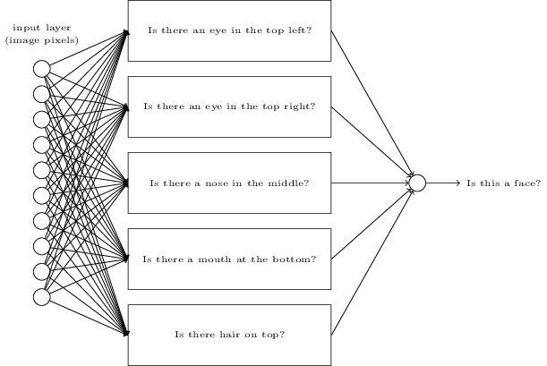
It’s also plausible that the sub-networks can be decomposed. Suppose we’re considering the question: “Is there an eye in the top left?” This can be decomposed into questions such as: “Is there an eyebrow?”; “Are there eyelashes?”; “Is there an iris?”; and so on. Of course, these questions should really include positional information, as well – “Is the eyebrow in the top left, and above the iris?”, that kind of thing – but let’s keep it simple. The network to answer the question “Is there an eye in the top left?” can now be decomposed:
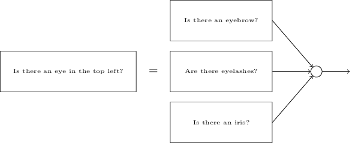
Those questions too can be broken down, further and further through multiple layers. Ultimately, we’ll be working with sub-networks that answer questions so simple they can easily be answered at the level of single pixels. Those questions might, for example, be about the presence or absence of very simple shapes at particular points in the image. Such questions can be answered by single neurons connected to the raw pixels in the image.
The end result is a network which breaks down a very complicated question – does this image show a face or not – into very simple questions answerable at the level of single pixels. It does this through a series of many layers, with early layers answering very simple and specific questions about the input image, and later layers building up a hierarchy of ever more complex and abstract concepts. Networks with this kind of many-layer structure – two or more hidden layers – are called deep neural networks.
Of course, I haven’t said how to do this recursive decomposition into sub-networks. It certainly isn’t practical to hand-design the weights and biases in the network. Instead, we’d like to use learning algorithms so that the network can automatically learn the weights and biases – and thus, the hierarchy of concepts – from training data. Researchers in the 1980s and 1990s tried using stochastic gradient descent and backpropagation to train deep networks. Unfortunately, except for a few special architectures, they didn’t have much luck. The networks would learn, but very slowly, and in practice often too slowly to be useful.
Since 2006, a set of techniques has been developed that enable learning in deep neural nets. These deep learning techniques are based on stochastic gradient descent and backpropagation, but also introduce new ideas. These techniques have enabled much deeper (and larger) networks to be trained – people now routinely train networks with 5 to 10 hidden layers. And, it turns out that these perform far better on many problems than shallow neural networks, i.e., networks with just a single hidden layer. The reason, of course, is the ability of deep nets to build up a complex hierarchy of concepts. It’s a bit like the way conventional programming languages use modular design and ideas about abstraction to enable the creation of complex computer programs. Comparing a deep network to a shallow network is a bit like comparing a programming language with the ability to make function calls to a stripped down language with no ability to make such calls. Abstraction takes a different form in neural networks than it does in conventional programming, but it’s just as important.
In the last chapter we saw how neural networks can learn their weights and biases using the gradient descent algorithm. There was, however, a gap in our explanation: we didn’t discuss how to compute the gradient of the cost function. That’s quite a gap! In this chapter I’ll explain a fast algorithm for computing such gradients, an algorithm known as backpropagation.
The backpropagation algorithm was originally introduced in the 1970s, but its importance wasn’t fully appreciated until a famous 1986 paper by David Rumelhart, Geoffrey Hinton, and Ronald Williams. That paper describes several neural networks where backpropagation works far faster than earlier approaches to learning, making it possible to use neural nets to solve problems which had previously been insoluble. Today, the backpropagation algorithm is the workhorse of learning in neural networks.
This chapter is more mathematically involved than the rest of the book. If you’re not crazy about mathematics you may be tempted to skip the chapter, and to treat backpropagation as a black box whose details you’re willing to ignore. Why take the time to study those details?
The reason, of course, is understanding. At the heart of backpropagation is an expression for the partial derivative \(\partial{}C/\partial{}w\) of the cost function \(C\) with respect to any weight \(w\) (or bias \(b\)) in the network. The expression tells us how quickly the cost changes when we change the weights and biases. And while the expression is somewhat complex, it also has a beauty to it, with each element having a natural, intuitive interpretation. And so backpropagation isn’t just a fast algorithm for learning. It actually gives us detailed insights into how changing the weights and biases changes the overall behaviour of the network. That’s well worth studying in detail.
With that said, if you want to skim the chapter, or jump straight to the next chapter, that’s fine. I’ve written the rest of the book to be accessible even if you treat backpropagation as a black box. There are, of course, points later in the book where I refer back to results from this chapter. But at those points you should still be able to understand the main conclusions, even if you don’t follow all the reasoning.
Before discussing backpropagation, let’s warm up with a fast matrix-based algorithm to compute the output from a neural network. We actually already briefly saw this algorithm near the end of the last chapter (section 1.6), but I described it quickly, so it’s worth revisiting in detail. In particular, this is a good way of getting comfortable with the notation used in backpropagation, in a familiar context.
Let’s begin with a notation which lets us refer to weights in the network in an unambiguous way. We’ll use \(w^l_{jk}\) to denote the weight for the connection from the \(k\)-th neuron in the \((l-1)\)-th layer to the \(j\)-th neuron in the \(l\)-th layer. So, for example, the diagram below shows the weight on a connection from the fourth neuron in the second layer to the second neuron in the third layer of a network:
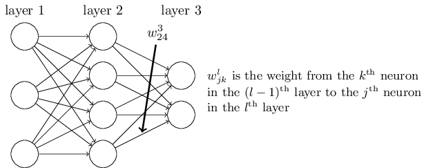
This notation is cumbersome at first, and it does take some work to master. But with a little effort you’ll find the notation becomes easy and natural. One quirk of the notation is the ordering of the j and k indices. You might think that it makes more sense to use j to refer to the input neuron, and k to the output neuron, not vice versa, as is actually done. I’ll explain the reason for this quirk below. We use a similar notation for the network’s biases and activations. Explicitly, we use \(b^l_j\) for the bias of the \(j\)-th neuron in the \(l\)-th layer. And we use \(a^l_j\) for the activation of the \(j\)-th neuron in the \(l\)-th layer. The following diagram shows examples of these notations in use:
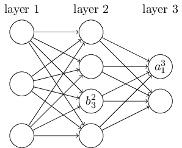
With these notations, the activation \(a^l_j\) of the \(j\)-th neuron in the \(l\)-th layer is related to the activations in the \((l-1)\)-th layer by the equation (compare Equation ([eq:4]) and surrounding discussion in the last chapter)
\[a^{l}_j = \sigma\left( \sum_k w^{l}_{jk} a^{l-1}_k + b^l_j \right),\tag{23}\label{eq:23}\] where the sum is over all neurons \(k\) in the \((l-1)\)-th layer. To rewrite this expression in a matrix form we define a weight matrix \(w^l\) for each layer, \(l\). The entries of the weight matrix \(w^l\) are just the weights connecting to the \(l\)-th layer of neurons, that is, the entry in the \(j\)-th row and \(k\)-th column is \(w^l_{jk}\). Similarly, for each layer \(l\) we define a bias vector, \(b^l\). You can probably guess how this works – the components of the bias vector are just the values \(b^l_j\), one component for each neuron in the \(l\)-th layer. And finally, we define an activation vector al whose components are the activations \(a^l_j\). The last ingredient we need to rewrite ([eq:23]) in a matrix form is the idea of vectorizing a function such as \(\sigma\). We met vectorization briefly in the last chapter, but to recap, the idea is that we want to apply a function such as \(\sigma\) to every element in a vector \(v\). We use the obvious notation \(\sigma(v)\) to denote this kind of elementwise application of a function. That is, the components of \(\sigma(v)\) are just \(\sigma(v)_j = \sigma(v_j)\). As an example, if we have the function \(f(x)=x^2\) then the vectorized form of \(f\) has the effect \[f\left(\left[ \begin{array}{c} 2 \\ 3 \end{array} \right] \right) = \left[ \begin{array}{c} f(2) \\ f(3) \end{array} \right] = \left[ \begin{array}{c} 4 \\ 9 \end{array} \right], \tag{24}\label{eq:24}\] that is, the vectorized \(f\) just squares every element of the vector.
With these notations in mind, Equation ([eq:23]) can be rewritten in the beautiful and compact vectorized form \[a^{l} = \sigma(w^l a^{l-1}+b^l). \tag{25}\label{eq:25}\] This expression gives us a much more global way of thinking about how the activations in one layer relate to activations in the previous layer: we just apply the weight matrix to the activations, then add the bias vector, and finally apply the \(\sigma\) function9. That global view is often easier and more succinct (and involves fewer indices!) than the neuron-by-neuron view we’ve taken to now. Think of it as a way of escaping index hell, while remaining precise about what’s going on. The expression is also useful in practice, because most matrix libraries provide fast ways of implementing matrix multiplication, vector addition, and vectorization. Indeed, the code (see 1.6) in the last chapter made implicit use of this expression to compute the behaviour of the network.
When using Equation ([eq:25]) to compute \(a^l\), we compute the intermediate quantity \(z^l \equiv w^l a^{l-1}+b^l\) along the way. This quantity turns out to be useful enough to be worth naming: we call \(z^l\) the weighted input to the neurons in layer \(l\). We’ll make considerable use of the weighted input \(z^l\) later in the chapter. Equation ([eq:25]) is sometimes written in terms of the weighted input, as \(a^l=\sigma(z^l)\). It’s also worth noting that \(z^l\) has components \(z^l_j= \sum_k w^l_{jk} a^{l-1}_k+b^l_j\), that is, \(z^l_j\) is just the weighted input to the activation function for neuron \(j\) in layer \(l\).
The goal of backpropagation is to compute the partial derivatives \(\partial{}C/\partial{}w\) and \(\partial{}C/\partial{}b\) of the cost function C with respect to any weight w or bias b in the network. For backpropagation to work we need to make two main assumptions about the form of the cost function. Before stating those assumptions, though, it’s useful to have an example cost function in mind. We’ll use the quadratic cost function from last chapter (c.f. Equation ([eq:6])). In the notation of the last section, the quadratic cost has the form \[C = \frac{1}{2n} \sum_x \left\|y(x)-a^L(x)\right\|^2, \tag{26}\label{eq:26}\] where: \(n\) is the total number of training examples; the sum is over individual training examples, \(x\); \(y=y(x)\) is the corresponding desired output; \(L\) denotes the number of layers in the network; and \(a^L=a^L(x)\) is the vector of activations output from the network when \(x\) is input.
Okay, so what assumptions do we need to make about our cost function, \(C\), in order that backpropagation can be applied? The first assumption we need is that the cost function can be written as an average \(C=\frac1n\sum_xC_x\) over cost functions \(C_x\) for individual training examples, \(x\). This is the case for the quadratic cost function, where the cost for a single training example is \(C_x=\frac12\|y-a^L\|^2\). This assumption will also hold true for all the other cost functions we’ll meet in this book.
The reason we need this assumption is because what backpropagation actually lets us do is compute the partial derivatives \(\partial{}C_x/\partial{}w\) and \(\partial{}C_x/\partial{}b\) for a single training example. We then recover \(\partial{}C/\partial{}w\) and \(\partial{}C/\partial{}b\) by averaging over training examples. In fact, with this assumption in mind, we’ll suppose the training example \(x\) has been fixed, and drop the \(x\) subscript, writing the cost \(C_x\) as \(C\). We’ll eventually put the \(x\) back in, but for now it’s a notational nuisance that is better left implicit.
The second assumption we make about the cost is that it can be written as a function of the outputs from the neural network:
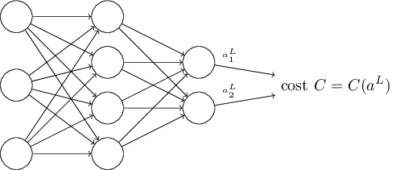
For example, the quadratic cost function satisfies this requirement, since the quadratic cost for a single training example \(x\) may be written as \[C = \frac{1}{2} \left\|y-a^L\right\|^2 = \frac{1}{2} \sum_j \left(y_j-a^L_j\right)^2, \tag{27}\label{eq:27}\] and thus is a function of the output activations. Of course, this cost function also depends on the desired output \(y\), and you may wonder why we’re not regarding the cost also as a function of \(y\). Remember, though, that the input training example \(x\) is fixed, and so the output \(y\) is also a fixed parameter. In particular, it’s not something we can modify by changing the weights and biases in any way, i.e., it’s not something which the neural network learns. And so it makes sense to regard \(C\) as a function of the output activations \(a^L\) alone, with \(y\) merely a parameter that helps define that function.
The backpropagation algorithm is based on common linear algebraic operations – things like vector addition, multiplying a vector by a matrix, and so on. But one of the operations is a little less commonly used. In particular, suppose \(s\) and \(t\) are two vectors of the same dimension. Then we use \(s\odot{}t\) to denote the elementwise product of the two vectors. Thus the components of \(s\odot{}t\) are just \((s \odot t)_j = s_j t_j\). As an example, \[\left[\begin{array}{c} 1 \\ 2 \end{array}\right] \odot \left[\begin{array}{c} 3 \\ 4\end{array} \right] = \left[ \begin{array}{c} 1 * 3 \\ 2 * 4 \end{array} \right] = \left[ \begin{array}{c} 3 \\ 8 \end{array} \right]. \tag{28}\label{eq:28}\] This kind of elementwise multiplication is sometimes called the Hadamard product or Schur product. We’ll refer to it as the Hadamard product. Good matrix libraries usually provide fast implementations of the Hadamard product, and that comes in handy when implementing backpropagation.
Backpropagation is about understanding how changing the weights and biases in a network changes the cost function. Ultimately, this means computing the partial derivatives \(\partial{}C/\partial{}w^l_{jk}\) and \(\partial{}C/\partial{}b^l_j\). But to compute those, we first introduce an intermediate quantity, \(\delta^l_j\), which we call the error in the \(j\)-th neuron in the \(l\)-th layer. Backpropagation will give us a procedure to compute the error \(\delta^l_j\), and then will relate \(\delta^l_j\) to \(\partial{}C/\partial{}w^l_{jk}\) and \(\partial{}C/\partial{}b^l_j\).
To understand how the error is defined, imagine there is a demon in our neural network:
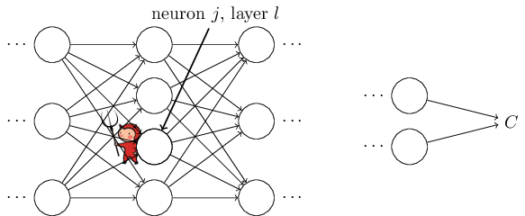
The demon sits at the \(j\)-th neuron in layer \(l\). As the input to the neuron comes in, the demon messes with the neuron’s operation. It adds a little change \(\Delta{}z^l_j\) to the neuron’s weighted input, so that instead of outputting \(\sigma(z^l_j)\), the neuron instead outputs \(\sigma(z^l_j+\Delta{}z^l_j)\). This change propagates through later layers in the network, finally causing the overall cost to change by an amount \(\frac{\partial{}C}{\partial{}z^l_j}\Delta{}z^l_j\).
Now, this demon is a good demon, and is trying to help you improve the cost, i.e., they’re trying to find a \(\Delta{}z^l_j\) which makes the cost smaller. Suppose \(\partial{}C/\partial{}z^l_j\) has a large value (either positive or negative). Then the demon can lower the cost quite a bit by choosing \(\Delta{}z^l_j\) to have the opposite sign to \(\partial{}C/\partial{}z^l_j\). By contrast, if \(\partial{}C/\partial{}z^l_j\) is close to zero, then the demon can’t improve the cost much at all by perturbing the weighted input \(z^l_j\). So far as the demon can tell, the neuron is already pretty near optimal10. And so there’s a heuristic sense in which \(\partial{}C/\partial{}z^l_j\) is a measure of the error in the neuron.
Motivated by this story, we define the error \(\delta^l_j\) of neuron \(j\) in layer \(l\) by \[\delta^l_j\equiv\frac{\partial{}C}{\partial{}z^l_j}.\tag{29}\label{eq:29}\] As per our usual conventions, we use \(\delta{}^l\) to denote the vector of errors associated with layer \(l\). Backpropagation will give us a way of computing \(\delta{}^l\) for every layer, and then relating those errors to the quantities of real interest, \(\partial{}C/\partial{}w^l_{jk}\) and \(\partial{}C/\partial{}b^l_j\).
You might wonder why the demon is changing the weighted input \(z^l_j\). Surely it’d be more natural to imagine the demon changing the output activation \(a^l_j\), with the result that we’d be using \(\frac{\partial{}C}{\partial{}a^l_j}\) as our measure of error. In fact, if you do this things work out quite similarly to the discussion below. But it turns out to make the presentation of backpropagation a little more algebraically complicated. So we’ll stick with \(\delta^l_j=\frac{\partial{}C}{\partial{}z^l_j}\) as our measure of error11.
Plan of attack: Backpropagation is based around four fundamental equations. Together, those equations give us a way of computing both the error \(\delta{}^l\) and the gradient of the cost function. I state the four equations below. Be warned, though: you shouldn’t expect to instantaneously assimilate the equations. Such an expectation will lead to disappointment. In fact, the backpropagation equations are so rich that understanding them well requires considerable time and patience as you gradually delve deeper into the equations. The good news is that such patience is repaid many times over. And so the discussion in this section is merely a beginning, helping you on the way to a thorough understanding of the equations.
Here’s a preview of the ways we’ll delve more deeply into the equations later in the chapter: I’ll give a , which helps explain why they are true; we’ll restate the equations in algorithmic form as , and see how the pseudocode can be implemented as real, ; and, in the final section of the chapter, we’ll develop an intuitive picture of what the backpropagation equations mean, and how someone . Along the way we’ll return repeatedly to the four fundamental equations, and as you deepen your understanding those equations will come to seem comfortable and, perhaps, even beautiful and natural.
An equation for the error in the output layer, \(\delta^L\): The components of \(\delta^L\) are given by \[\delta^L_j = \frac{\partial C}{\partial a^L_j} \sigma'(z^L_j). \tag{BP1}\label{eq:BP1}\] This is a very natural expression. The first term on the right, \(\partial{}C/\partial{}a^L_j\), just measures how fast the cost is changing as a function of the \(j\)-th output activation. If, for example, \(C\) doesn’t depend much on a particular output neuron, \(j\), then \(\delta^L_j\) will be small, which is what we’d expect. The second term on the right, \(\sigma'(z^L_j)\), measures how fast the activation function \(\sigma\) is changing at \(z^L_j\).
Notice that everything in Eq. ([eq:BP1]) is easily computed. In particular, we compute \(z^L_j\) while computing the behaviour of the network, and it’s only a small additional overhead to compute \(\sigma'(z^L_j)\). The exact form of \(\partial{}C/\partial{}a^L_j\) will, of course, depend on the form of the cost function. However, provided the cost function is known there should be little trouble computing \(\partial{}C/\partial{}a^L_j\). For example, if we’re using the quadratic cost function then \(C=\frac12\sum_j(y_j-a^L_j)^2\), and so \(\partial{}C/\partial{}a^L_j=(a^L_j-y_j)\), which obviously is easily computable.
Equation ([eq:BP1]) is a componentwise expression for \(\delta^L\). It’s a perfectly good expression, but not the matrix-based form we want for backpropagation. However, it’s easy to rewrite the equation in a matrix-based form, as \[\delta^L = \nabla_a C \odot \sigma'(z^L). \tag{BP1a}\label{eq:BP1a}\] Here, \(\nabla_a C\) is defined to be a vector whose components are the partial derivatives \(\partial{}C/\partial{}a^L_j\). You can think of \(\nabla_a C\) as expressing the rate of change of \(C\) with respect to the output activations. It’s easy to see that Equations ([eq:BP1a]) and ([eq:BP1]) are equivalent, and for that reason from now on we’ll use ([eq:BP1]) interchangeably to refer to both equations. As an example, in the case of the quadratic cost we have \(\nabla_a C =(a^L-y)\), and so the fully matrix-based form of ([eq:BP1]) becomes \[\delta^L = (a^L-y) \odot \sigma'(z^L). \tag{30}\label{eq:30}\] As you can see, everything in this expression has a nice vector form, and is easily computed using a library such as Numpy.
An equation for the error \(\delta^l\) in terms of the error in the next layer, \(\delta^{l+1}\): In particular \[\delta^l = \left((w^{l+1})^T \delta^{l+1}\right) \odot \sigma'(z^l), \tag{BP2}\label{eq:BP2}\] where \((w^{l+1})^T\) is the transpose of the weight matrix \(w^{l+1}\) for the (\(l\)+1)-th layer. This equation appears complicated, but each element has a nice interpretation. Suppose we know the error \(\delta^{l+1}\) at the (\(l\)+1)-th layer. When we apply the transpose weight matrix, \((w^{l+1})^T\), we can think intuitively of this as moving the error backward through the network, giving us some sort of measure of the error at the output of the \(l\)-th layer. We then take the Hadamard product \(\odot \sigma'(z^l)\). This moves the error backward through the activation function in layer \(l\), giving us the error \(\delta^l\) in the weighted input to layer \(l\).
By combining ([eq:BP2]) with ([eq:BP1]) we can compute the error \(\delta^l\) for any layer in the network. We start by using ([eq:BP1]) to compute \(\delta^L\), then apply Equation ([eq:BP2]) to compute \(\delta^{L-1}\), then Equation ([eq:BP2]) again to compute \(\delta^{L-2}\), and so on, all the way back through the network.
An equation for the rate of change of the cost with respect to any bias in the network: In particular: \[\frac{\partial C}{\partial b^l_j} = \delta^l_j. \tag{BP3}\label{eq:BP3}\] That is, the error \(\delta^l_j\) is exactly equal to the rate of change \(\partial{}C/\partial{}b^l_j\). This is great news, since ([eq:BP1]) and ([eq:BP2]) have already told us how to compute \(\delta^l_j\). We can rewrite ([eq:BP3]) in shorthand as \[\frac{\partial C}{\partial b} = \delta,\tag{31}\label{eq:31}\] where it is understood that \(\delta\) is being evaluated at the same neuron as the bias \(b\).
An equation for the rate of change of the cost with respect to any weight in the network: In particular: \[\frac{\partial C}{\partial w^l_{jk}} = a^{l-1}_k \delta^l_j. \tag{BP4}\label{eq:BP4}\] This tells us how to compute the partial derivatives \(\partial{}C/\partial{}w^l_{jk}\) in terms of the quantities \(\delta^l\) and \(a^{l-1}\), which we already know how to compute. The equation can be rewritten in a less index-heavy notation as \[\frac{\partial C}{\partial w} = a_{\rm in} \delta_{\rm out}, \tag{32}\label{eq:32}\] where it’s understood that \(a_\mathrm{in}\) is the activation of the neuron input to the weight \(w\), and \(\delta_\mathrm{out}\) is the error of the neuron output from the weight \(w\). Zooming in to look at just the weight \(w\), and the two neurons connected by that weight, we can depict this as:
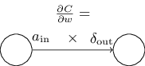
A nice consequence of Equation ([eq:32]) is that when the activation \(a_\mathrm{in}\) is small, \(a_\mathrm{in}\approx0\), the gradient term \(\partial{}C/\partial{}w\) will also tend to be small. In this case, we’ll say the weight learns slowly, meaning that it’s not changing much during gradient descent. In other words, one consequence of ([eq:BP4]) is that weights output from low-activation neurons learn slowly.
There are other insights along these lines which can be obtained from ([eq:BP1])–([eq:BP4]). Let’s start by looking at the output layer. Consider the term \(\sigma'(z^L_j)\) in ([eq:BP1]). Recall from the graph of the sigmoid function in the last chapter that the \(\sigma\) function becomes very flat when \(\sigma(z^L_j)\) is approximately 0 or 1. When this occurs we will have \(\sigma'(z^L_j)\approx0\). And so the lesson is that a weight in the final layer will learn slowly if the output neuron is either low activation (\(\approx0\)) or high activation (\(\approx1\)). In this case it’s common to say the output neuron has saturated and, as a result, the weight has stopped learning (or is learning slowly). Similar remarks hold also for the biases of output neuron.
We can obtain similar insights for earlier layers. In particular, note the \(\sigma'(z^l)\) term in ([eq:BP2]). This means that \(\delta^l_j\) is likely to get small if the neuron is near saturation. And this, in turn, means that any weights input to a saturated neuron will learn slowly12.
Summing up, we’ve learnt that a weight will learn slowly if either the input neuron is low-activation, or if the output neuron has saturated, i.e., is either high- or low-activation.
None of these observations is too greatly surprising. Still, they help improve our mental model of what’s going on as a neural network learns. Furthermore, we can turn this type of reasoning around. The four fundamental equations turn out to hold for any activation function, not just the standard sigmoid function (that’s because, as we’ll see in a moment, the proofs don’t use any special properties of \(\sigma\)). And so we can use these equations to design activation functions which have particular desired learning properties. As an example to give you the idea, suppose we were to choose a (non-sigmoid) activation function \(\sigma\) so that \(\sigma'\) is always positive, and never gets close to zero. That would prevent the slow-down of learning that occurs when ordinary sigmoid neurons saturate. Later in the book we’ll see examples where this kind of modification is made to the activation function. Keeping the four equations ([eq:BP1])–([eq:BP4]) in mind can help explain why such modifications are tried, and what impact they can have.
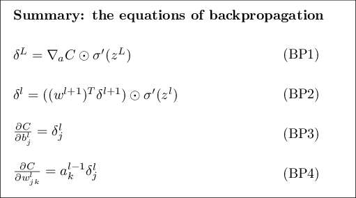
Alternate presentation of the equations of backpropagation: I’ve stated the equations of backpropagation (notably ([eq:BP1]) and ([eq:BP2])) using the Hadamard product. This presentation may be disconcerting if you’re unused to the Hadamard product. There’s an alternative approach, based on conventional matrix multiplication, which some readers may find enlightening.
Show that ([eq:BP1]) may be rewritten as \[\delta^L = \Sigma'(z^L) \nabla_a C, \tag{33}\label{eq:33}\] where \(\Sigma'(z^L)\) is a square matrix whose diagonal entries are the values \(\sigma'(z^L_j)\), and whose off-diagonal entries are zero. Note that this matrix acts on \(\nabla_a C\) by conventional matrix multiplication.
Show that ([eq:BP2]) may be rewritten as \[\delta^l = \Sigma'(z^l) (w^{l+1})^T \delta^{l+1}. \tag{34}\label{eq:34}\]
By combining observations (1) and (2) show that \[\delta^l = \Sigma'(z^l) (w^{l+1})^T \ldots \Sigma'(z^{L-1}) (w^L)^T \Sigma'(z^L) \nabla_a C \tag{35}\label{eq:35}\] For readers comfortable with matrix multiplication this equation may be easier to understand than ([eq:BP1]) and ([eq:BP2]). The reason I’ve focused on ([eq:BP1]) and ([eq:BP2]) is because that approach turns out to be faster to implement numerically.
We’ll now prove the four fundamental equations ([eq:BP1])–([eq:BP4]). All four are consequences of the chain rule from multivariable calculus. If you’re comfortable with the chain rule, then I strongly encourage you to attempt the derivation yourself before reading on.
Let’s begin with Equation ([eq:BP1]), which gives an expression for the output error, \(\delta^l\). To prove this equation, recall that by definition \[\delta^L_j = \frac{\partial C}{\partial z^L_j}. \tag{36}\label{eq:36}\] Applying the chain rule, we can re-express the partial derivative above in terms of partial derivatives with respect to the output activations, \[\delta^L_j = \sum_k \frac{\partial C}{\partial a^L_k} \frac{\partial a^L_k}{\partial z^L_j}, \tag{37}\label{eq:37}\] where the sum is over all neurons \(k\) in the output layer. Of course, the output activation \(a^L_k\) of the \(k\)-th neuron depends only on the weighted input \(z^L_j\) for the \(j\)-th neuron when \(k=j\). And so \(\partial{}a^L_k/\partial{}z^L_j\) vanishes when \(k\ne{}j\). As a result we can simplify the previous equation to \[\delta^L_j = \frac{\partial C}{\partial a^L_j} \frac{\partial a^L_j}{\partial z^L_j}. \tag{38}\label{eq:38}\] Recalling that \(a^L_j=\sigma(z^L_j)\) the second term on the right can be written as \(\sigma'(z^L_j)\), and the equation becomes \[\delta^L_j = \frac{\partial C}{\partial a^L_j} \sigma'(z^L_j), \tag{39}\label{eq:39}\] which is just ([eq:BP1]), in component form. Next, we’ll prove ([eq:BP2]), which gives an equation for the error \(\delta^l\) in terms of the error in the next layer, \(\delta^{l+1}\). To do this, we want to rewrite \(\delta^l_j=\partial{}C/\partial{}z^l_j\) in terms of \(\delta^{l+1}_k=\partial{}C/\partial{}z^{l+1}_k\). We can do this using the chain rule, \[\delta^l_j = \frac{\partial C}{\partial z^l_j} = \sum_k \frac{\partial C}{\partial z^{l+1}_k} \frac{\partial z^{l+1}_k}{\partial z^l_j} = \sum_k \frac{\partial z^{l+1}_k}{\partial z^l_j} \delta^{l+1}_k, \tag{42}\label{eq:42}\] where in the last line we have interchanged the two terms on the right-hand side, and substituted the definition of \(\delta^{l+1}_k\). To evaluate the first term on the last line, note that \[z^{l+1}_k = \sum_j w^{l+1}_{kj} a^l_j +b^{l+1}_k = \sum_j w^{l+1}_{kj} \sigma(z^l_j) +b^{l+1}_k. \tag{43}\label{eq:43}\] Differentiating, we obtain \[\frac{\partial z^{l+1}_k}{\partial z^l_j} = w^{l+1}_{kj} \sigma'(z^l_j). \tag{44}\label{eq:44}\] Substituting back into ([eq:42]) we obtain \[\delta^l_j = \sum_k w^{l+1}_{kj} \delta^{l+1}_k \sigma'(z^l_j). \tag{45}\label{eq:45}\] This is just ([eq:BP2]) written in component form.
The final two equations we want to prove are ([eq:BP3]) and ([eq:BP4]). These also follow from the chain rule, in a manner similar to the proofs of the two equations above. I leave them to you as an exercise.
That completes the proof of the four fundamental equations of backpropagation. The proof may seem complicated. But it’s really just the outcome of carefully applying the chain rule. A little less succinctly, we can think of backpropagation as a way of computing the gradient of the cost function by systematically applying the chain rule from multi-variable calculus. That’s all there really is to backpropagation – the rest is details.
The backpropagation equations provide us with a way of computing the gradient of the cost function. Let’s explicitly write this out in the form of an algorithm:
Input \(x\): Set the corresponding activation \(a^1\) for the input layer.
Feedforward: For each \(l=2,3,\ldots{},L\) compute \(z^l=w^la^{l-1}+b^l\) and \(a^l=\sigma(z_l)\).
Output error \(\delta^L\): Compute the vector \(\delta^{L} = \nabla_a C \odot \sigma'(z^L)\).
Backpropagate the error: For each \(l = L-1, L-2,\ldots, 2\) compute \(\delta^{l} = ((w^{l+1})^T \delta^{l+1}) \odot \sigma'(z^{l})\).
Output: The gradient of the cost function is given by \(\frac{\partial{}C}{\partial{}w^l_{jk}}=a^{l-1}_k\delta^l_j\) and \(\frac{\partial{}C}{\partial{}b^l_j}=\delta^l_j\).
Examining the algorithm you can see why it’s called backpropagation. We compute the error vectors \(\delta^l\) backward, starting from the final layer. It may seem peculiar that we’re going through the network backward. But if you think about the proof of backpropagation, the backward movement is a consequence of the fact that the cost is a function of outputs from the network. To understand how the cost varies with earlier weights and biases we need to repeatedly apply the chain rule, working backward through the layers to obtain usable expressions.
Backpropagation with a single modified neuron Suppose we modify a single neuron in a feedforward network so that the output from the neuron is given by \(f(\sum_j w_j x_j + b)\), where \(f\) is some function other than the sigmoid. How should we modify the backpropagation algorithm in this case?
Backpropagation with linear neurons Suppose we replace the usual non-linear \(\sigma\) function with \(\sigma(z)=z\) throughout the network. Rewrite the backpropagation algorithm for this case.
As I’ve described it above, the backpropagation algorithm computes the gradient of the cost function for a single training example, \(C=C_x\). In practice, it’s common to combine backpropagation with a learning algorithm such as stochastic gradient descent, in which we compute the gradient for many training examples. In particular, given a mini-batch of \(m\) training examples, the following algorithm applies a gradient descent learning step based on that mini-batch:
Input a set of training examples
For each training example \(x\): Set the corresponding input activation \(a^{x,1}\), and perform the following steps:
Feedforward: For each l\(=2,3,\ldots,L\) compute \(z^{x,l}=w^la^{x,l-1}+b^l\) and \(a^{x,l}=\sigma(z^{x,l})\).
Output error \(\delta^{x,L}\): Compute the vector \(\delta^{x,L} = \nabla_a C_x \odot \sigma'(z^{x,L})\).
Backpropagate the error: For each \(l=L-1,L-2,\ldots,2\) compute \(\delta^{x,l} = ((w^{l+1})^T \delta^{x,l+1}) \odot \sigma'(z^{x,l})\).
Gradient descent: For each \(l=L,L-1,\ldots,2\) update the weights according to the rule \(w^l \to w^l-\frac{\eta}{m} \sum_x \delta^{x,l} (a^{x,l-1})^T\), and the biases according to the rule \(b^l \to b^l-\frac{\eta}{m}\sum_x \delta^{x,l}\).
Of course, to implement stochastic gradient descent in practice you also need an outer loop generating mini-batches of training examples, and an outer loop stepping through multiple epochs of training. I’ve omitted those for simplicity.
Having understood backpropagation in the abstract, we can now understand the code used in the last chapter to implement backpropagation. Recall from that chapter that the code was contained in the update_mini_batch and backprop methods of the Network class. The code for these methods is a direct translation of the algorithm described above. In particular, the update_mini_batch method updates the Network’s weights and biases by computing the gradient for the current mini_batch of training examples:
class Network(object):
...
def update_mini_batch(self, mini_batch, eta):
"""Update the network's weights and biases by applying
gradient descent using backpropagation to a single mini batch.
The "mini_batch" is a list of tuples "(x, y)", and "eta"
is the learning rate."""
nabla_b = [np.zeros(b.shape) for b in self.biases]
nabla_w = [np.zeros(w.shape) for w in self.weights]
for x, y in mini_batch:
delta_nabla_b, delta_nabla_w = self.backprop(x, y)
nabla_b = [nb+dnb for nb, dnb in zip(nabla_b, delta_nabla_b)]
nabla_w = [nw+dnw for nw, dnw in zip(nabla_w, delta_nabla_w)]
self.weights = [w-(eta/len(mini_batch))*nw
for w, nw in zip(self.weights, nabla_w)]
self.biases = [b-(eta/len(mini_batch))*nb
for b, nb in zip(self.biases, nabla_b)]
Most of the work is done by the line delta_nabla_b, delta_nabla_w = self.backprop(x, y) which uses the backprop method to figure out the partial derivatives \(\partial{}C_x/\partial{}b^l_j\) and \(\partial{}C_x/\partial{}w^l_{jk}\). The backprop method follows the algorithm in the last section closely. There is one small change – we use a slightly different approach to indexing the layers. This change is made to take advantage of a feature of Python, namely the use of negative list indices to count backward from the end of a list, so, e.g., l[-3] is the third last entry in a list l. The code for backprop is below, together with a few helper functions, which are used to compute the \(\sigma\) function, the derivative \(\sigma'\), and the derivative of the cost function. With these inclusions you should be able to understand the code in a self-contained way. If something’s tripping you up, you may find it helpful to consult the original description (and complete listing) of the code.
class Network(object):
...
def backprop(self, x, y):
"""Return a tuple "(nabla_b, nabla_w)" representing the
gradient for the cost function C_x. "nabla_b" and
"nabla_w" are layer-by-layer lists of numpy arrays, similar
to "self.biases" and "self.weights"."""
nabla_b = [np.zeros(b.shape) for b in self.biases]
nabla_w = [np.zeros(w.shape) for w in self.weights]
# feedforward
activation = x
activations = [x] # list to store all the activations, layer by layer
zs = [] # list to store all the z vectors, layer by layer
for b, w in zip(self.biases, self.weights):
z = np.dot(w, activation)+b
zs.append(z)
activation = sigmoid(z)
activations.append(activation)
# backward pass
delta = self.cost_derivative(activations[-1], y) * sigmoid_prime(zs[-1])
nabla_b[-1] = delta
nabla_w[-1] = np.dot(delta, activations[-2].transpose())
# Note that the variable l in the loop below is used a little
# differently to the notation in Chapter 2 of the book. Here,
# l = 1 means the last layer of neurons, l = 2 is the
# second-last layer, and so on. It's a renumbering of the
# scheme in the book, used here to take advantage of the fact
# that Python can use negative indices in lists.
for l in xrange(2, self.num_layers):
z = zs[-l]
sp = sigmoid_prime(z)
delta = np.dot(self.weights[-l+1].transpose(), delta) * sp
nabla_b[-l] = delta
nabla_w[-l] = np.dot(delta, activations[-l-1].transpose())
return (nabla_b, nabla_w)
...
def cost_derivative(self, output_activations, y):
"""Return the vector of partial derivatives \partial{} C_x /
\partial{} a for the output activations."""
return (output_activations-y)
def sigmoid(z):
"""The sigmoid function."""
return 1.0/(1.0+np.exp(-z))
def sigmoid_prime(z):
"""Derivative of the sigmoid function."""
return sigmoid(z)*(1-sigmoid(z))Fully matrix-based approach to backpropagation over a mini-batch Our implementation of stochastic gradient descent loops over training examples in a mini-batch. It’s possible to modify the backpropagation algorithm so that it computes the gradients for all training examples in a mini-batch simultaneously. The idea is that instead of beginning with a single input vector, \(x\), we can begin with a matrix \(X=[x_1x_2\ldots{}x_m]\) whose columns are the vectors in the mini-batch. We forward-propagate by multiplying by the weight matrices, adding a suitable matrix for the bias terms, and applying the sigmoid function everywhere. We backpropagate along similar lines. Explicitly write out pseudocode for this approach to the backpropagation algorithm. Modify network.py so that it uses this fully matrix-based approach. The advantage of this approach is that it takes full advantage of modern libraries for linear algebra. As a result it can be quite a bit faster than looping over the mini-batch. (On my laptop, for example, the speedup is about a factor of two when run on MNIST classification problems like those we considered in the last chapter.) In practice, all serious libraries for backpropagation use this fully matrix-based approach or some variant.
In what sense is backpropagation a fast algorithm? To answer this question, let’s consider another approach to computing the gradient. Imagine it’s the early days of neural networks research. Maybe it’s the 1950s or 1960s, and you’re the first person in the world to think of using gradient descent to learn! But to make the idea work you need a way of computing the gradient of the cost function. You think back to your knowledge of calculus, and decide to see if you can use the chain rule to compute the gradient. But after playing around a bit, the algebra looks complicated, and you get discouraged. So you try to find another approach. You decide to regard the cost as a function of the weights \(C=C(w)\) alone (we’ll get back to the biases in a moment). You number the weights \(w_1,w_2,\ldots\), and want to compute \(\partial{}C/\partial{}w_j\) for some particular weight \(w_j\). An obvious way of doing that is to use the approximation \[\frac{\partial C}{\partial w_{j}} \approx \frac{C(w+\epsilon e_j)-C(w)}{\epsilon}, \tag{46}\label{eq:46}\] where \(\epsilon>0\) is a small positive number, and \(e_j\) is the unit vector in the \(j\)-th direction. In other words, we can estimate \(\partial{}C/\partial{}w_j\) by computing the cost \(C\) for two slightly different values of \(w_j\), and then applying Equation ([eq:46]). The same idea will let us compute the partial derivatives \(\partial{}C/\partial{}b\) with respect to the biases.
This approach looks very promising. It’s simple conceptually, and extremely easy to implement, using just a few lines of code. Certainly, it looks much more promising than the idea of using the chain rule to compute the gradient!
Unfortunately, while this approach appears promising, when you implement the code it turns out to be extremely slow. To understand why, imagine we have a million weights in our network. Then for each distinct weight \(w_j\) we need to compute \(C(w+\epsilon{}e_j)\) in order to compute \(\partial{}C/\partial{}w_j\). That means that to compute the gradient we need to compute the cost function a million different times, requiring a million forward passes through the network (per training example). We need to compute \(C(w)\) as well, so that’s a total of a million and one passes through the network.
What’s clever about backpropagation is that it enables us to simultaneously compute all the partial derivatives \(\partial{}C/\partial{}w_j\) using just one forward pass through the network, followed by one backward pass through the network. Roughly speaking, the computational cost of the backward pass is about the same as the forward pass13. And so the total cost of backpropagation is roughly the same as making just two forward passes through the network. Compare that to the million and one forward passes we needed for the approach based on ([eq:46])! And so even though backpropagation appears superficially more complex than the approach based on ([eq:46]), it’s actually much, much faster.
This speedup was first fully appreciated in 1986, and it greatly expanded the range of problems that neural networks could solve. That, in turn, caused a rush of people using neural networks. Of course, backpropagation is not a panacea. Even in the late 1980s people ran up against limits, especially when attempting to use backpropagation to train deep neural networks, i.e., networks with many hidden layers. Later in the book we’ll see how modern computers and some clever new ideas now make it possible to use backpropagation to train such deep neural networks.
As I’ve explained it, backpropagation presents two mysteries. First, what’s the algorithm really doing? We’ve developed a picture of the error being backpropagated from the output. But can we go any deeper, and build up more intuition about what is going on when we do all these matrix and vector multiplications? The second mystery is how someone could ever have discovered backpropagation in the first place? It’s one thing to follow the steps in an algorithm, or even to follow the proof that the algorithm works. But that doesn’t mean you understand the problem so well that you could have discovered the algorithm in the first place. Is there a plausible line of reasoning that could have led you to discover the backpropagation algorithm? In this section I’ll address both these mysteries.
To improve our intuition about what the algorithm is doing, let’s imagine that we’ve made a small change \(\Delta{}w^l_{jk}\) to some weight in the network, \(w^l_{jk}\):
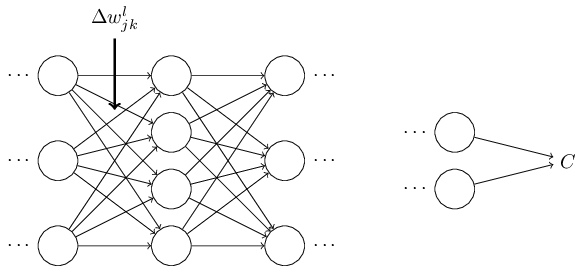
That change in weight will cause a change in the output activation from the corresponding neuron:
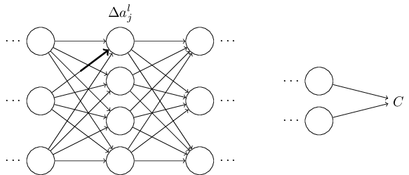
That, in turn, will cause a change in all the activations in the next layer:
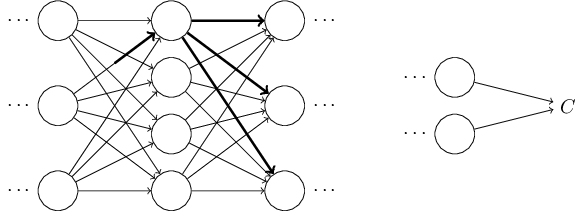
Those changes will in turn cause changes in the next layer, and then the next, and so on all the way through to causing a change in the final layer, and then in the cost function:
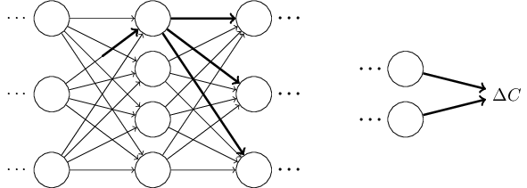
The change \(\Delta{}C\) in the cost is related to the change \(\Delta{}w^l_{jk}\) in the weight by the equation \[\Delta C \approx \frac{\partial C}{\partial w^l_{jk}} \Delta w^l_{jk}. \tag{47}\label{eq:47}\] This suggests that a possible approach to computing \(\partial{}C/\partial{}w^l_{jk}\) is to carefully track how a small change in \(w^l_{jk}\) propagates to cause a small change in \(C\). If we can do that, being careful to express everything along the way in terms of easily computable quantities, then we should be able to compute \(\partial{}C/\partial{}w^l_{jk}\).
Let’s try to carry this out. The change \(\Delta{}w^l_{jk}\) causes a small change \(\Delta{}a^l_j\) in the activation of the \(j\)-th neuron in the \(l\)-th layer. This change is given by \[\Delta a^l_j \approx \frac{\partial a^l_j}{\partial w^l_{jk}} \Delta w^l_{jk}. \tag{48}\label{eq:48}\] The change in activation \(\Delta{}a^l_j\) will cause changes in all the activations in the next layer, i.e., the (\(l\)+1)-th layer. We’ll concentrate on the way just a single one of those activations is affected, say \(a^{l+1}_q\),
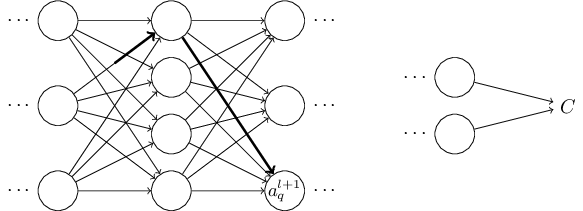
In fact, it’ll cause the following change: \[\Delta a^{l+1}_q \approx \frac{\partial a^{l+1}_q}{\partial a^l_j} \Delta a^l_j. \tag{49}\label{eq:49}\] Substituting in the expression from Equation ([eq:48]), we get: \[\Delta a^{l+1}_q \approx \frac{\partial a^{l+1}_q}{\partial a^l_j} \frac{\partial a^l_j}{\partial w^l_{jk}} \Delta w^l_{jk}. \tag{50}\label{eq:50}\] Of course, the change \(\Delta{}a^{l+1}_q\) will, in turn, cause changes in the activations in the next layer. In fact, we can imagine a path all the way through the network from \(w^l_{jk}\) to \(C\), with each change in activation causing a change in the next activation, and, finally, a change in the cost at the output. If the path goes through activations \(a^l_j,a^{l+1}_q,\cdots,a^{L-1}_n,a^L_m\) then the resulting expression is \[\Delta C \approx \frac{\partial C}{\partial a^L_m} \frac{\partial a^L_m}{\partial a^{L-1}_n} \frac{\partial a^{L-1}_n}{\partial a^{L-2}_p} \ldots \frac{\partial a^{l+1}_q}{\partial a^l_j} \frac{\partial a^l_j}{\partial w^l_{jk}} \Delta w^l_{jk}, \tag{51}\label{eq:51}\] that is, we’ve picked up a \(\partial{}a/\partial{}a\) type term for each additional neuron we’ve passed through, as well as the \(\partial{}C/\partial{}a^L_m\) term at the end. This represents the change in \(C\) due to changes in the activations along this particular path through the network. Of course, there’s many paths by which a change in \(w^l_{jk}\) can propagate to affect the cost, and we’ve been considering just a single path. To compute the total change in \(C\) it is plausible that we should sum over all the possible paths between the weight and the final cost, i.e., \[\Delta C \approx \sum_{mnp\ldots q} \frac{\partial C}{\partial a^L_m} \frac{\partial a^L_m}{\partial a^{L-1}_n} \frac{\partial a^{L-1}_n}{\partial a^{L-2}_p} \ldots \frac{\partial a^{l+1}_q}{\partial a^l_j} \frac{\partial a^l_j}{\partial w^l_{jk}} \Delta w^l_{jk}, \tag{52}\label{eq:52}\] where we’ve summed over all possible choices for the intermediate neurons along the path. Comparing with ([eq:47]) we see that \[\frac{\partial C}{\partial w^l_{jk}} = \sum_{mnp\ldots q} \frac{\partial C}{\partial a^L_m} \frac{\partial a^L_m}{\partial a^{L-1}_n} \frac{\partial a^{L-1}_n}{\partial a^{L-2}_p} \ldots \frac{\partial a^{l+1}_q}{\partial a^l_j} \frac{\partial a^l_j}{\partial w^l_{jk}}. \tag{53}\label{eq:53}\] Now, Equation ([eq:53]) looks complicated. However, it has a nice intuitive interpretation. We’re computing the rate of change of \(C\) with respect to a weight in the network. What the equation tells us is that every edge between two neurons in the network is associated with a rate factor which is just the partial derivative of one neuron’s activation with respect to the other neuron’s activation. The edge from the first weight to the first neuron has a rate factor \(\partial{}a^l_j/\partial{}w^l_{jk}\). The rate factor for a path is just the product of the rate factors along the path. And the total rate of change \(\partial{}C/\partial{}w^l_{jk}\) is just the sum of the rate factors of all paths from the initial weight to the final cost. This procedure is illustrated here, for a single path:
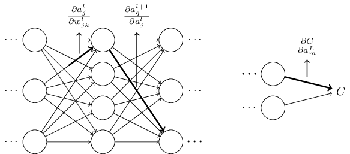
What I’ve been providing up to now is a heuristic argument, a way of thinking about what’s going on when you perturb a weight in a network. Let me sketch out a line of thinking you could use to further develop this argument. First, you could derive explicit expressions for all the individual partial derivatives in Equation ([eq:53]). That’s easy to do with a bit of calculus. Having done that, you could then try to figure out how to write all the sums over indices as matrix multiplications. This turns out to be tedious, and requires some persistence, but not extraordinary insight. After doing all this, and then simplifying as much as possible, what you discover is that you end up with exactly the backpropagation algorithm! And so you can think of the backpropagation algorithm as providing a way of computing the sum over the rate factor for all these paths. Or, to put it slightly differently, the backpropagation algorithm is a clever way of keeping track of small perturbations to the weights (and biases) as they propagate through the network, reach the output, and then affect the cost.
Now, I’m not going to work through all this here. It’s messy and requires considerable care to work through all the details. If you’re up for a challenge, you may enjoy attempting it. And even if not, I hope this line of thinking gives you some insight into what backpropagation is accomplishing.
What about the other mystery – how backpropagation could have been discovered in the first place? In fact, if you follow the approach I just sketched you will discover a proof of backpropagation. Unfortunately, the proof is quite a bit longer and more complicated than the one I described earlier in this chapter. So how was that short (but more mysterious) proof discovered? What you find when you write out all the details of the long proof is that, after the fact, there are several obvious simplifications staring you in the face. You make those simplifications, get a shorter proof, and write that out. And then several more obvious simplifications jump out at you. So you repeat again. The result after a few iterations is the proof we saw earlier14 – short, but somewhat obscure, because all the signposts to its construction have been removed! I am, of course, asking you to trust me on this, but there really is no great mystery to the origin of the earlier proof. It’s just a lot of hard work simplifying the proof I’ve sketched in this section.
When a golf player is first learning to play golf, they usually spend most of their time developing a basic swing. Only gradually do they develop other shots, learning to chip, draw and fade the ball, building on and modifying their basic swing. In a similar way, up to now we’ve focused on understanding the backpropagation algorithm. It’s our “basic swing”, the foundation for learning in most work on neural networks. In this chapter I explain a suite of techniques which can be used to improve on our vanilla implementation of backpropagation, and so improve the way our networks learn.
The techniques we’ll develop in this chapter include: a better choice of cost function, known as the ; four so-called (L1 and L2 regularization, dropout, and artificial expansion of the training data), which make our networks better at generalizing beyond the training data; a better method for in the network; and a set of heuristics to help choose good . I’ll also overview several in less depth. The discussions are largely independent of one another, and so you may jump ahead if you wish. We’ll also implement many of the techniques in , and use them to improve the results obtained on the handwriting classification problem studied in Chapter 1.
Of course, we’re only covering a few of the many, many techniques which have been developed for use in neural nets. The philosophy is that the best entree to the plethora of available techniques is in-depth study of a few of the most important. Mastering those important techniques is not just useful in its own right, but will also deepen your understanding of what problems can arise when you use neural networks. That will leave you well prepared to quickly pick up other techniques, as you need them.
Most of us find it unpleasant to be wrong. Soon after beginning to learn the piano I gave my first performance before an audience. I was nervous, and began playing the piece an octave too low. I got confused, and couldn’t continue until someone pointed out my error. I was very embarrassed. Yet while unpleasant, we also learn quickly when we’re decisively wrong. You can bet that the next time I played before an audience I played in the correct octave! By contrast, we learn more slowly when our errors are less well-defined.
Ideally, we hope and expect that our neural networks will learn fast from their errors. Is this what happens in practice? To answer this question, let’s look at a toy example. The example involves a neuron with just one input:
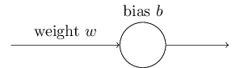
We’ll train this neuron to do something ridiculously easy: take the input 1 to the output 0. Of course, this is such a trivial task that we could easily figure out an appropriate weight and bias by hand, without using a learning algorithm. However, it turns out to be illuminating to use gradient descent to attempt to learn a weight and bias. So let’s take a look at how the neuron learns.
To make things definite, I’ll pick the initial weight to be 0.6 and the initial bias to be 0.9. These are generic choices used as a place to begin learning, I wasn’t picking them to be special in any way. The initial output from the neuron is 0.82, so quite a bit of learning will be needed before our neuron gets near the desired output, 0.0. The learning rate is \(\eta=0.15\), which turns out to be slow enough that we can follow what’s happening, but fast enough that we can get substantial learning in just a few seconds. The cost is the quadratic cost function, \(C\), introduced back in Chapter 1. I’ll remind you of the exact form of the cost function shortly, so there’s no need to go and dig up the definition.

As you can see, the neuron rapidly learns a weight and bias that drives down the cost, and gives an output from the neuron of about 0.09. That’s not quite the desired output, 0.0, but it is pretty good. Suppose, however, that we instead choose both the starting weight and the starting bias to be 2.0. In this case the initial output is 0.98, which is very badly wrong. Let’s look at how the neuron learns to output 0 in this case.

Although this example uses the same learning rate (\(\eta=0.15\)), we can see that learning starts out much more slowly. Indeed, for the first 150 or so learning epochs, the weights and biases don’t change much at all. Then the learning kicks in and, much as in our first example, the neuron’s output rapidly moves closer to 0.0.
This behavior is strange when contrasted to human learning. As I said at the beginning of this section, we often learn fastest when we’re badly wrong about something. But we’ve just seen that our artificial neuron has a lot of difficulty learning when it’s badly wrong – far more difficulty than when it’s just a little wrong. What’s more, it turns out that this behavior occurs not just in this toy model, but in more general networks. Why is learning so slow? And can we find a way of avoiding this slowdown?
To understand the origin of the problem, consider that our neuron learns by changing the weight and bias at a rate determined by the partial derivatives of the cost function, \(\partial{}C/\partial{}w\) and \(\partial{}C/\partial{}b\). So saying “learning is slow” is really the same as saying that those partial derivatives are small. The challenge is to understand why they are small. To understand that, let’s compute the partial derivatives. Recall that we’re using the quadratic cost function, which, from Equation ([eq:6]), is given by \[C = \frac{(y-a)^2}2,\tag{54}\label{eq:54}\] where \(a\) is the neuron’s output when the training input \(x=1\) is used, and \(y=0\) is the corresponding desired output. To write this more explicitly in terms of the weight and bias, recall that \(a=\sigma{}(z)\), where \(z=wx+b\). Using the chain rule to differentiate with respect to the weight and bias we get \[\begin{aligned} \frac{\partial C}{\partial w} & = (a-y)\sigma'(z) x = a \sigma'(z) \tag{55}\label{eq:55}\\ \frac{\partial C}{\partial b} & = (a-y)\sigma'(z) = a \sigma'(z), \tag{56}\label{eq:56}\end{aligned}\] where I have substituted \(x=1\) and \(y=0\). To understand the behavior of these expressions, let’s look more closely at the \(\sigma{}'(z)\) term on the right-hand side. Recall the shape of the \(\sigma{}\) function:
We can see from this graph that when the neuron’s output is close to 1, the curve gets very flat, and so \(\sigma{}'(z)\) gets very small. Equations ([eq:55]) and ([eq:56]) then tell us that \(\partial{}C/\partial{}w\) and \(\partial{}C/\partial{}b\) get very small. This is the origin of the learning slowdown. What’s more, as we shall see a little later, the learning slowdown occurs for essentially the same reason in more general neural networks, not just the toy example we’ve been playing with.
How can we address the learning slowdown? It turns out that we can solve the problem by replacing the quadratic cost with a different cost function, known as the cross-entropy. To understand the cross-entropy, let’s move a little away from our super-simple toy model. We’ll suppose instead that we’re trying to train a neuron with several input variables, \(x_1,x_2,\ldots\), corresponding weights \(w_1,w_2,\ldots\), and a bias, \(b\):
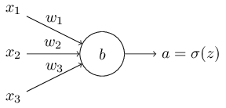
The output from the neuron is, of course, \(a=\sigma(z)\), where \(z=\sum_jw_jb_j+b\) is the weighted sum of the inputs. We define the cross-entropy cost function for this neuron by \[C = -\frac{1}{n} \sum_x \left[y \ln a + (1-y ) \ln (1-a) \right], \tag{57}\label{eq:57}\] where \(n\) is the total number of items of training data, the sum is over all training inputs, \(x\), and \(y\) is the corresponding desired output.
It’s not obvious that the expression ([eq:57]) fixes the learning slowdown problem. In fact, frankly, it’s not even obvious that it makes sense to call this a cost function! Before addressing the learning slowdown, let’s see in what sense the cross-entropy can be interpreted as a cost function.
Two properties in particular make it reasonable to interpret the cross-entropy as a cost function. First, it’s non-negative, that is, \(C>0\). To see this, notice that: (a) all the individual terms in the sum in ([eq:57]) are negative, since both logarithms are of numbers in the range 0 to 1; and (b) there is a minus sign out the front of the sum.
Second, if the neuron’s actual output is close to the desired output for all training inputs, \(x\), then the cross-entropy will be close to zero15. To see this, suppose for example that \(y=0\) and \(a\approx0\) for some input \(x\). This is a case when the neuron is doing a good job on that input. We see that the first term in the expression ([eq:57]) for the cost vanishes, since \(y=0\), while the second term is just \(-\ln(1-a)\approx0\). A similar analysis holds when \(y=1\) and \(a\approx1\). And so the contribution to the cost will be low provided the actual output is close to the desired output.
Summing up, the cross-entropy is positive, and tends toward zero as the neuron gets better at computing the desired output, \(y\), for all training inputs, \(x\). These are both properties we’d intuitively expect for a cost function. Indeed, both properties are also satisfied by the quadratic cost. So that’s good news for the cross-entropy. But the cross-entropy cost function has the benefit that, unlike the quadratic cost, it avoids the problem of learning slowing down. To see this, let’s compute the partial derivative of the cross-entropy cost with respect to the weights. We substitute \(a=\sigma(z)\) into ([eq:57]), and apply the chain rule twice, obtaining: \[\frac{\partial C}{\partial w_j} = -\frac{1}{n} \sum_x \left( \frac{y }{\sigma(z)} -\frac{1-y}{1-\sigma(z)} \right) \frac{\partial \sigma}{\partial w_j} = -\frac{1}{n} \sum_x \left( \frac{y}{\sigma(z)} -\frac{1-y}{1-\sigma(z)} \right)\sigma'(z) x_j. \tag{59}\label{eq:59}\]Putting everything over a common denominator and simplifying this becomes: \[\frac{\partial C}{\partial w_j} = \frac{1}{n} \sum_x \frac{\sigma'(z) x_j}{\sigma(z) (1-\sigma(z))} (\sigma(z)-y). \tag{60}\label{eq:60}\] Using the definition of the sigmoid function, \(\sigma(z)=1/(1+e^{-z})\), and a little algebra we can show that \(\sigma'(z)=\sigma(z)(1-\sigma(z))\). I’ll ask you to verify this in an exercise below, but for now let’s accept it as given. We see that the \(\sigma'(z)\) and \(\sigma(z)(1-\sigma(z))\) terms cancel in the equation just above, and it simplifies to become: \[\frac{\partial C}{\partial w_j} = \frac{1}{n} \sum_x x_j(\sigma(z)-y). \tag{61}\label{eq:61}\] This is a beautiful expression. It tells us that the rate at which the weight learns is controlled by \(\sigma(z)-y\), i.e., by the error in the output. The larger the error, the faster the neuron will learn. This is just what we’d intuitively expect. In particular, it avoids the learning slowdown caused by the \(\sigma'(z)\) term in the analogous equation for the quadratic cost, Equation ([eq:55]). When we use the cross-entropy, the \(\sigma'(z)\) term gets cancelled out, and we no longer need worry about it being small. This cancellation is the special miracle ensured by the cross-entropy cost function. Actually, it’s not really a miracle. As we’ll see later, the cross-entropy was specially chosen to have just this property.
In a similar way, we can compute the partial derivative for the bias. I won’t go through all the details again, but you can easily verify that \[\frac{\partial C}{\partial b} = \frac{1}{n} \sum_x (\sigma(z)-y). \tag{62}\label{eq:62}\] Again, this avoids the learning slowdown caused by the \(\sigma'(z)\) term in the analogous equation for the quadratic cost, Equation ([eq:56]).
Verify that \(\sigma'(z) = \sigma(z)(1-\sigma(z))\)
Let’s return to the toy example we played with earlier, and explore what happens when we use the cross-entropy instead of the quadratic cost. To re-orient ourselves, we’ll begin with the case where the quadratic cost did just fine, with starting weight 0.6 and starting bias 0.9:
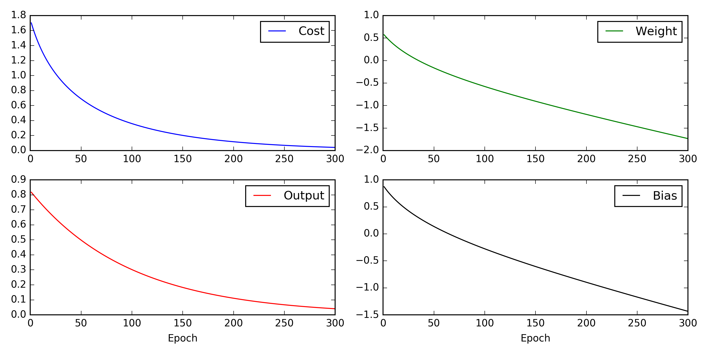
Unsurprisingly, the neuron learns perfectly well in this instance, just as it did earlier. And now let’s look at the case where our neuron got stuck before, with the weight and bias both starting at 2.0:

Success! This time the neuron learned quickly, just as we hoped. If you observe closely you can see that the slope of the cost curve was much steeper initially than the initial flat region on the corresponding curve for the quadratic cost. It’s that steepness which the cross-entropy buys us, preventing us from getting stuck just when we’d expect our neuron to learn fastest, i.e., when the neuron starts out badly wrong.
I didn’t say what learning rate was used in the examples just illustrated. Earlier, with the quadratic cost, we used \(\eta=0.15\). Should we have used the same learning rate in the new examples? In fact, with the change in cost function it’s not possible to say precisely what it means to use the “same” learning rate; it’s an apples and oranges comparison. For both cost functions I simply experimented to find a learning rate that made it possible to see what is going on. If you’re still curious, despite my disavowal, here’s the lowdown: I used \(\eta=0.005\) in the examples just given.
You might object that the change in learning rate makes the graphs above meaningless. Who cares how fast the neuron learns, when our choice of learning rate was arbitrary to begin with?! That objection misses the point. The point of the graphs isn’t about the absolute speed of learning. It’s about how the speed of learning changes. In particular, when we use the quadratic cost learning is slower when the neuron is unambiguously wrong than it is later on, as the neuron gets closer to the correct output; while with the cross-entropy learning is faster when the neuron is unambiguously wrong. Those statements don’t depend on how the learning rate is set.
We’ve been studying the cross-entropy for a single neuron. However, it’s easy to generalize the cross-entropy to many-neuron multi-layer networks. In particular, suppose \(y=y_1,y_2,\ldots\) are the desired values at the output neurons, i.e., the neurons in the final layer, while \(a^L_1,a^L_2,\ldots\) are the actual output values. Then we define the cross-entropy by \[\sum_j \left[y_j \ln a^L_j + (1-y_j) \ln (1-a^L_j) \right]. \tag{63}\label{eq:63}\] This is the same as our earlier expression, Equation ([eq:57]), except now we’ve got the \(\sum_j\) summing over all the output neurons. I won’t explicitly work through a derivation, but it should be plausible that using the expression ([eq:63]) avoids a learning slowdown in many-neuron networks. If you’re interested, you can work through the derivation in the problem below.
Incidentally, I’m using the term “cross-entropy” in a way that has confused some early readers, since it superficially appears to conflict with other sources. In particular, it’s common to define the cross-entropy for two probability distributions, \(p_j\) and \(q_j\), as \(\sum_jp_j\ln{}q_j\). This definition may be connected to ([eq:57]), if we treat a single sigmoid neuron as outputting a probability distribution consisting of the neuron’s activation \(a\) and its complement \(1-a\).
However, when we have many sigmoid neurons in the final layer, the vector \(a^L_j\) of activations don’t usually form a probability distribution. As a result, a definition like \(\sum_j p_j \ln q_j\) doesn’t even make sense, since we’re not working with probability distributions. Instead, you can think of ([eq:63]) as a summed set of per-neuron cross-entropies, with the activation of each neuron being interpreted as part of a two-element probability distribution16. In this sense, ([eq:63]) is a generalization of the cross-entropy for probability distributions.
When should we use the cross-entropy instead of the quadratic cost? In fact, the cross-entropy is nearly always the better choice, provided the output neurons are sigmoid neurons. To see why, consider that when we’re setting up the network we usually initialize the weights and biases using some sort of randomization. It may happen that those initial choices result in the network being decisively wrong for some training input – that is, an output neuron will have saturated near 1, when it should be 0, or vice versa. If we’re using the quadratic cost that will slow down learning. It won’t stop learning completely, since the weights will continue learning from other training inputs, but it’s obviously undesirable.
One gotcha with the cross-entropy is that it can be difficult at first to remember the respective roles of the ys and the as. It’s easy to get confused about whether the right form is \[-[y \ln a + (1-y) \ln (1-a)].\] What happens to the second of these expressions when \(y=0\) or 1? Does this problem afflict the first expression? Why or why not?
In the single-neuron discussion at the start of this section, I argued that the cross-entropy is small if \(\sigma(z)\approx y\) for all training inputs. The argument relied on \(y\) being equal to either 0 or 1. This is usually true in classification problems, but for other problems (e.g., regression problems) \(y\) can sometimes take values intermediate between 0 and 1. Show that the cross-entropy is still minimized when \(\sigma(z)=y\) for all training inputs. When this is the case the cross-entropy has the value: \[C = -\frac{1}{n} \sum_x [y \ln y+(1-y) \ln(1-y)]. \tag{64}\label{eq:64}\] The quantity \(-\left[y \ln y+(1-y) \ln(1-y)\right]\) is sometimes known as the binary entropy.
Many-layer multi-neuron networks In the notation introduced in the last chapter, show that for the quadratic cost the partial derivative with respect to weights in the output layer is \[\frac{\partial C}{\partial w^L_{jk}} = \frac{1}{n} \sum_x a^{L-1}_k (a^L_j-y_j) \sigma'(z^L_j). \tag{65}\label{eq:65}\] The term \(\sigma'(z^L_j)\) causes a learning slowdown whenever an output neuron saturates on the wrong value. Show that for the cross-entropy cost the output error \(\delta^L\) for a single training example \(x\) is given by \[\delta^L = a^L - y.\tag{66}\label{eq:66}\] Use this expression to show that the partial derivative with respect to the weights in the output layer is given by \[\frac{\partial C}{\partial w^L_{jk}} = \frac{1}{n} \sum_x a^{L-1}_k (a^L_j-y_j). \tag{67}\label{eq:67}\] The \(\sigma'(z^L_j)\) term has vanished, and so the cross-entropy avoids the problem of learning slowdown, not just when used with a single neuron, as we saw earlier, but also in many-layer multi-neuron networks. A simple variation on this analysis holds also for the biases. If this is not obvious to you, then you should work through that analysis as well.
Using the quadratic cost when we have linear neurons in the output layer Suppose that we have a many-layer multi-neuron network. Suppose all the neurons in the final layer are linear neurons, meaning that the sigmoid activation function is not applied, and the outputs are simply \(a^L_j=z^L_j\). Show that if we use the quadratic cost function then the output error \(\delta^L\) for a single training example \(x\) is given by \[\delta^L = a^L-y. \tag{68}\label{eq:68}\] Similarly to the previous problem, use this expression to show that the partial derivatives with respect to the weights and biases in the output layer are given by \[\begin{aligned} \frac{\partial C}{\partial w^L_{jk}} &= \frac{1}{n} \sum_x a^{L-1}_k (a^L_j-y_j)\tag{69}\label{eq:69}\\ \frac{\partial C}{\partial b^L_{j}} &= \frac{1}{n} \sum_x (a^L_j-y_j). \tag{70}\label{eq:70} \end{aligned}\] This shows that if the output neurons are linear neurons then the quadratic cost will not give rise to any problems with a learning slowdown. In this case the quadratic cost is, in fact, an appropriate cost function to use.
The cross-entropy is easy to implement as part of a program which learns using gradient descent and backpropagation. We’ll do that later in the chapter, developing an improved version of our earlier program for classifying the MNIST handwritten digits, network.py. The new program is called network2.py, and incorporates not just the cross-entropy, but also several other techniques developed in this chapter17. For now, let’s look at how well our new program classifies MNIST digits. As was the case in Chapter 1, we’ll use a network with 30 hidden neurons, and we’ll use a mini-batch size of 10. We set the learning rate to \(\eta=0.5\)18 and we train for 30 epochs. The interface to network2.py is slightly different than network.py, but it should still be clear what is going on. You can, by the way, get documentation about network2.py’s interface by using commands such as help(network2.Network.SGD) in a Python shell.
>>> import mnist_loader
>>> training_data, validation_data, test_data = mnist_loader.load_data_wrapper()
>>> import network2
>>> net = network2.Network([784, 30, 10], cost=network2.CrossEntropyCost)
>>> net.large_weight_initializer()
>>> net.SGD(training_data, 30, 10, 0.5, evaluation_data=test_data, monitor_evaluation_accuracy=True)Note, by the way, that the net.large_weight_initializer() command is used to initialize the weights and biases in the same way as described in Chapter 1. We need to run this command because later in this chapter we’ll change the default weight initialization in our networks. The result from running the above sequence of commands is a network with 95.49 percent accuracy. This is pretty close to the result we obtained in Chapter 1, 95.42 percent, using the quadratic cost.
Let’s look also at the case where we use 100 hidden neurons, the cross-entropy, and otherwise keep the parameters the same. In this case we obtain an accuracy of 96.82 percent. That’s a substantial improvement over the results from Chapter 1, where we obtained a classification accuracy of 96.59 percent, using the quadratic cost. That may look like a small change, but consider that the error rate has dropped from 3.41 percent to 3.18 percent. That is, we’ve eliminated about one in fourteen of the original errors. That’s quite a handy improvement.
It’s encouraging that the cross-entropy cost gives us similar or better results than the quadratic cost. However, these results don’t conclusively prove that the cross-entropy is a better choice. The reason is that I’ve put only a little effort into choosing hyper-parameters such as learning rate, mini-batch size, and so on. For the improvement to be really convincing we’d need to do a thorough job optimizing such hyper-parameters. Still, the results are encouraging, and reinforce our earlier theoretical argument that the cross-entropy is a better choice than the quadratic cost.
This, by the way, is part of a general pattern that we’ll see through this chapter and, indeed, through much of the rest of the book. We’ll develop a new technique, we’ll try it out, and we’ll get “improved” results. It is, of course, nice that we see such improvements. But the interpretation of such improvements is always problematic. They’re only truly convincing if we see an improvement after putting tremendous effort into optimizing all the other hyper-parameters. That’s a great deal of work, requiring lots of computing power, and we’re not usually going to do such an exhaustive investigation. Instead, we’ll proceed on the basis of informal tests like those done above. Still, you should keep in mind that such tests fall short of definitive proof, and remain alert to signs that the arguments are breaking down.
By now, we’ve discussed the cross-entropy at great length. Why go to so much effort when it gives only a small improvement to our MNIST results? Later in the chapter we’ll see other techniques – notably, regularization – which give much bigger improvements. So why so much focus on cross-entropy? Part of the reason is that the cross-entropy is a widely-used cost function, and so is worth understanding well. But the more important reason is that neuron saturation is an important problem in neural nets, a problem we’ll return to repeatedly throughout the book. And so I’ve discussed the cross-entropy at length because it’s a good laboratory to begin understanding neuron saturation and how it may be addressed.
Our discussion of the cross-entropy has focused on algebraic analysis and practical implementation. That’s useful, but it leaves unanswered broader conceptual questions, like: what does the cross-entropy mean? Is there some intuitive way of thinking about the cross-entropy? And how could we have dreamed up the cross-entropy in the first place?
Let’s begin with the last of these questions: what could have motivated us to think up the cross-entropy in the first place? Suppose we’d discovered the learning slowdown described earlier, and understood that the origin was the \(\sigma'(z)\) terms in Equations ([eq:55]) and ([eq:56]). After staring at those equations for a bit, we might wonder if it’s possible to choose a cost function so that the \(\sigma'(z)\) term disappeared. In that case, the cost \(C=C_x\) for a single training example \(x\) would satisfy \[\begin{aligned} \frac{\partial C}{\partial w_j} & = x_j(a-y) \tag{71}\label{eq:71}\\ \frac{\partial C}{\partial b } & = (a-y). \tag{72}\label{eq:72}\end{aligned}\] If we could choose the cost function to make these equations true, then they would capture in a simple way the intuition that the greater the initial error, the faster the neuron learns. They’d also eliminate the problem of a learning slowdown. In fact, starting from these equations we’ll now show that it’s possible to derive the form of the cross-entropy, simply by following our mathematical noses. To see this, note that from the chain rule we have \[\frac{\partial C}{\partial b} = \frac{\partial C}{\partial a} \sigma'(z). \tag{73}\label{eq:73}\] Using \(\sigma'(z)=\sigma(z)(1-\sigma(z))=a(1-a)\) the last equation becomes \[\begin{aligned} \frac{\partial C}{\partial b} = \frac{\partial C}{\partial a} a(1-a). \tag{74}\label{eq:74}\end{aligned}\] Comparing to Equation ([eq:72]) we obtain \[\begin{aligned} \frac{\partial C}{\partial a} = \frac{a-y}{a(1-a)}. \tag{75}\label{eq:75}\end{aligned}\] Integrating this expression with respect to \(a\) gives \[\begin{aligned} C = -[y \ln a + (1-y) \ln (1-a)]+ {\rm constant}, \tag{76}\label{eq:76}\end{aligned}\] for some constant of integration. This is the contribution to the cost from a single training example, \(x\). To get the full cost function we must average over training examples, obtaining \[\begin{aligned} C = -\frac{1}{n} \sum_x [y \ln a +(1-y) \ln(1-a)] + {\rm constant}, \tag{77}\label{eq:77}\end{aligned}\] where the constant here is the average of the individual constants for each training example. And so we see that Equations ([eq:71]) and ([eq:72]) uniquely determine the form of the cross-entropy, up to an overall constant term. The cross-entropy isn’t something that was miraculously pulled out of thin air. Rather, it’s something that we could have discovered in a simple and natural way.
What about the intuitive meaning of the cross-entropy? How should we think about it? Explaining this in depth would take us further afield than I want to go. However, it is worth mentioning that there is a standard way of interpreting the cross-entropy that comes from the field of information theory. Roughly speaking, the idea is that the cross-entropy is a measure of surprise. In particular, our neuron is trying to compute the function \(x\to y=y(x)\). But instead it computes the function \(x \to a=a(x)\). Suppose we think of a as our neuron’s estimated probability that \(y\) is 1, and \(1-a\) is the estimated probability that the right value for \(y\) is 0. Then the cross-entropy measures how “surprised” we are, on average, when we learn the true value for \(y\). We get low surprise if the output is what we expect, and high surprise if the output is unexpected. Of course, I haven’t said exactly what “surprise” means, and so this perhaps seems like empty verbiage. But in fact there is a precise information-theoretic way of saying what is meant by surprise. Unfortunately, I don’t know of a good, short, self-contained discussion of this subject that’s available online. But if you want to dig deeper, then Wikipedia contains a brief summary that will get you started down the right track. And the details can be filled in by working through the materials about the Kraft inequality in chapter 5 of the book about information theory by Cover and Thomas.
We’ve discussed at length the learning slowdown that can occur when output neurons saturate, in networks using the quadratic cost to train. Another factor that may inhibit learning is the presence of the \(x_j\) term in Equation ([eq:61]). Because of this term, when an input \(x_j\) is near to zero, the corresponding weight \(w_j\) will learn slowly. Explain why it is not possible to eliminate the \(x_j\) term through a clever choice of cost function.
In this chapter we’ll mostly use the cross-entropy cost to address the problem of learning slowdown. However, I want to briefly describe another approach to the problem, based on what are called softmax layers of neurons. We’re not actually going to use softmax layers in the remainder of the chapter, so if you’re in a great hurry, you can skip to the next section. However, softmax is still worth understanding, in part because it’s intrinsically interesting, and in part because we’ll use softmax layers in Chapter 6, in our discussion of deep neural networks.
The idea of softmax is to define a new type of output layer for our neural networks. It begins in the same way as with a sigmoid layer, by forming the weighted inputs19 \(z^L_j=\sum_kw^L_{jk}a^{L-1}_k+b^L_j\). However, we don’t apply the sigmoid function to get the output. Instead, in a softmax layer we apply the so-called softmax function to the \(z^L_j\). According to this function, the activation \(a^L_j\) of the \(j\)-th output neuron is \[a^L_j = \frac{e^{x^L_j}}{\sum_ke^{z^L_k}} \tag{78}\label{eq:78}\] where in the denominator we sum over all the output neurons.
If you’re not familiar with the softmax function, Equation ([eq:78]) may look pretty opaque. It’s certainly not obvious why we’d want to use this function. And it’s also not obvious that this will help us address the learning slowdown problem. To better understand Equation ([eq:78]), suppose we have a network with four output neurons, and four corresponding weighted inputs, which we’ll denote \(z^L_1,z^L_2,z^L_3,\) and \(z^L_4\). Figure [fig:softmax] shows a graph of the corresponding output activations for different inputs20.
As you increase \(z^L_4\), you’ll see an increase in the corresponding output activation, \(a^L_4\), and a decrease in the other output activations. Similarly, if you decrease \(z^L_4\) then \(a^L_4\) will decrease, and all the other output activations will increase. In fact, if you look closely, you’ll see that in both cases the total change in the other activations exactly compensates for the change in \(a^L_4\). The reason is that the output activations are guaranteed to always sum up to 1, as we can prove using Equation ([eq:78]) and a little algebra: \[\begin{aligned} \sum_j a^L_j & = \frac{\sum_j e^{z^L_j}}{\sum_k e^{z^L_k}} = 1. \tag{79}\label{eq:79}\end{aligned}\] As a result, if \(a^L_4\) increases, then the other output activations must decrease by the same total amount, to ensure the sum over all activations remains 1. And, of course, similar statements hold for all the other activations.
Equation ([eq:78]) also implies that the output activations are all positive, since the exponential function is positive. Combining this with the observation in the last paragraph, we see that the output from the softmax layer is a set of positive numbers which sum up to 1. In other words, the output from the softmax layer can be thought of as a probability distribution.
The fact that a softmax layer outputs a probability distribution is rather pleasing. In many problems it’s convenient to be able to interpret the output activation \(a^L_j\) as the network’s estimate of the probability that the correct output is \(j\). So, for instance, in the MNIST classification problem, we can interpret \(a^L_j\) as the network’s estimated probability that the correct digit classification is \(j\).
By contrast, if the output layer was a sigmoid layer, then we certainly couldn’t assume that the activations formed a probability distribution. I won’t explicitly prove it, but it should be plausible that the activations from a sigmoid layer won’t in general form a probability distribution. And so with a sigmoid output layer we don’t have such a simple interpretation of the output activations.
Construct an example showing explicitly that in a network with a sigmoid output layer, the output activations \(a^L_j\) won’t always sum to 1.
We’re starting to build up some feel for the softmax function and the way softmax layers behave. Just to review where we’re at: the exponentials in Equation ([eq:78]) ensure that all the output activations are positive. And the sum in the denominator of Equation ([eq:78]) ensures that the softmax outputs sum to 1. So that particular form no longer appears so mysterious: rather, it is a natural way to ensure that the output activations form a probability distribution. You can think of softmax as a way of rescaling the \(z^L_j\), and then squishing them together to form a probability distribution.
Monotonicity of softmax Show that \(\partial a^L_j / \partial z^L_k\) is positive if \(j=k\) and negative if \(j\ne k\). As a consequence, increasing \(z^L_j\) is guaranteed to increase the corresponding output activation, \(a^L_j\), and will decrease all the other output activations. We already saw this empirically with the sliders, but this is a rigorous proof.
Non-locality of softmax A nice thing about sigmoid layers is that the output \(a^L_j\) is a function of the corresponding weighted input, \(a^L_j=\sigma(z^L_j)\). Explain why this is not the case for a softmax layer: any particular output activation \(a^L_j\) depends on all the weighted inputs.
Inverting the softmax layer Suppose we have a neural network with a softmax output layer, and the activations \(a^L_j\) are known. Show that the corresponding weighted inputs have the form \(z^L_j=\ln a^L_j+C\), for some constant \(C\) that is independent of \(j\).
The learning slowdown problem: We’ve now built up considerable familiarity with softmax layers of neurons. But we haven’t yet seen how a softmax layer lets us address the learning slowdown problem. To understand that, let’s define the log-likelihood cost function. We’ll use \(x\) to denote a training input to the network, and \(y\) to denote the corresponding desired output. Then the log-likelihood cost associated to this training input is \[C \equiv -\ln a^L_j \tag{80}\label{eq:80}\] So, for instance, if we’re training with MNIST images, and input an image of a 7, then the log-likelihood cost is \(-\ln a^L_7\). To see that this makes intuitive sense, consider the case when the network is doing a good job, that is, it is confident the input is a 7. In that case it will estimate a value for the corresponding probability \(a^L_7\) which is close to 1, and so the cost \(-\ln a^L_7\) will be small. By contrast, when the network isn’t doing such a good job, the probability \(a^L_7\) will be smaller, and the cost \(-\ln a^L_7\) will be larger. So the log-likelihood cost behaves as we’d expect a cost function to behave.
What about the learning slowdown problem? To analyze that, recall that the key to the learning slowdown is the behaviour of the quantities \(\partial C/\partial w^L_{jk}\) and \(\partial C/\partial b^L_j\). I won’t go through the derivation explicitly – I’ll ask you to do in the problems, below – but with a little algebra you can show that21 \[\begin{aligned} \frac{\partial C}{\partial b^L_j} & = a^L_j-y_j \tag{81}\label{eq:81}\\ \frac{\partial C}{\partial w^L_{jk}} & = a^{L-1}_k (a^L_j-y_j)\tag{82}\label{eq:82}\end{aligned}\] These equations are the same as the analogous expressions obtained in our earlier analysis of the cross-entropy. Compare, for example, Equation ([eq:82]) to Equation ([eq:67]). It’s the same equation, albeit in the latter I’ve averaged over training instances. And, just as in the earlier analysis, these expressions ensure that we will not encounter a learning slowdown. In fact, it’s useful to think of a softmax output layer with log-likelihood cost as being quite similar to a sigmoid output layer with cross-entropy cost.
Given this similarity, should you use a sigmoid output layer and cross-entropy, or a softmax output layer and log-likelihood? In fact, in many situations both approaches work well. Through the remainder of this chapter we’ll use a sigmoid output layer, with the cross-entropy cost. Later, in Chapter 6, we’ll sometimes use a softmax output layer, with log-likelihood cost. The reason for the switch is to make some of our later networks more similar to networks found in certain influential academic papers. As a more general point of principle, softmax plus log-likelihood is worth using whenever you want to interpret the output activations as probabilities. That’s not always a concern, but can be useful with classification problems (like MNIST) involving disjoint classes.
Where does the “softmax” name come from? Suppose we change the softmax function so the output activations are given by \[a^L_j = \frac{e^{c z^L_j}}{\sum_k e^{c z^L_k}},\tag{83}\label{eq:83}\] where \(c\) is a positive constant. Note that \(c=1\) corresponds to the standard softmax function. But if we use a different value of \(c\) we get a different function, which is nonetheless qualitatively rather similar to the softmax. In particular, show that the output activations form a probability distribution, just as for the usual softmax. Suppose we allow \(c\) to become large, i.e., \(c\to \infty\). What is the limiting value for the output activations \(a^L_j\)? After solving this problem it should be clear to you why we think of the \(c=1\) function as a “softened” version of the maximum function. This is the origin of the term “softmax”.
Backpropagation with softmax and the log-likelihood cost In the last chapter we derived the backpropagation algorithm for a network containing sigmoid layers. To apply the algorithm to a network with a softmax layer we need to figure out an expression for the error \(\delta^L_j \equiv \partial C / \partial z^L_j\) in the final layer. Show that a suitable expression is: \[\delta^L_j = a^L_j -y_j. \tag{84}\label{eq:84}\] Using this expression we can apply the backpropagation algorithm to a network using a softmax output layer and the log-likelihood cost.
The Nobel prize winning physicist Enrico Fermi was once asked his opinion of a mathematical model some colleagues had proposed as the solution to an important unsolved physics problem. The model gave excellent agreement with experiment, but Fermi was skeptical. He asked how many free parameters could be set in the model. “Four” was the answer. Fermi replied22 : “I remember my friend Johnny von Neumann used to say, with four parameters I can fit an elephant, and with five I can make him wiggle his trunk.”.
The point, of course, is that models with a large number of free parameters can describe an amazingly wide range of phenomena. Even if such a model agrees well with the available data, that doesn’t make it a good model. It may just mean there’s enough freedom in the model that it can describe almost any data set of the given size, without capturing any genuine insights into the underlying phenomenon. When that happens the model will work well for the existing data, but will fail to generalize to new situations. The true test of a model is its ability to make predictions in situations it hasn’t been exposed to before.
Fermi and von Neumann were suspicious of models with four parameters. Our 30 hidden neuron network for classifying MNIST digits has nearly 24,000 parameters! That’s a lot of parameters. Our 100 hidden neuron network has nearly 80,000 parameters, and state-of-the-art deep neural nets sometimes contain millions or even billions of parameters. Should we trust the results?
Let’s sharpen this problem up by constructing a situation where our network does a bad job generalizing to new situations. We’ll use our 30 hidden neuron network, with its 23,860 parameters. But we won’t train the network using all 50,000 MNIST training images. Instead, we’ll use just the first 1,000 training images. Using that restricted set will make the problem with generalization much more evident. We’ll train in a similar way to before, using the cross-entropy cost function, with a learning rate of \(\eta=0.5\) and a mini-batch size of 10. However, we’ll train for 400 epochs, a somewhat larger number than before, because we’re not using as many training examples. Let’s use network2 to look at the way the cost function changes:
>>> import mnist_loader
>>> training_data, validation_data, test_data = mnist_loader.load_data_wrapper()
>>> import network2
>>> net = network2.Network([784, 30, 10], cost=network2.CrossEntropyCost)
>>> net.large_weight_initializer()
>>> net.SGD(training_data[:1000], 400, 10, 0.5, evaluation_data=test_data, monitor_evaluation_accuracy=True, monitor_training_cost=True)Using the results we can plot the way the cost changes as the network learns23 :

This looks encouraging, showing a smooth decrease in the cost, just as we expect. Note that I’ve only shown training epochs 200 through 399. This gives us a nice up-close view of the later stages of learning, which, as we’ll see, turns out to be where the interesting action is.
Let’s now look at how the classification accuracy on the test data changes over time:

Again, I’ve zoomed in quite a bit. In the first 200 epochs (not shown) the accuracy rises to just under 82 percent. The learning then gradually slows down. Finally, at around epoch 280 the classification accuracy pretty much stops improving. Later epochs merely see small stochastic fluctuations near the value of the accuracy at epoch 280. Contrast this with the earlier graph, where the cost associated to the training data continues to smoothly drop. If we just look at that cost, it appears that our model is still getting “better”. But the test accuracy results show the improvement is an illusion. Just like the model that Fermi disliked, what our network learns after epoch 280 no longer generalizes to the test data. And so it’s not useful learning. We say the network is overfitting or overtraining beyond epoch 280.
You might wonder if the problem here is that I’m looking at the cost on the training data, as opposed to the classification accuracy on the test data. In other words, maybe the problem is that we’re making an apples and oranges comparison. What would happen if we compared the cost on the training data with the cost on the test data, so we’re comparing similar measures? Or perhaps we could compare the classification accuracy on both the training data and the test data? In fact, essentially the same phenomenon shows up no matter how we do the comparison. The details do change, however. For instance, let’s look at the cost on the test data:

We can see that the cost on the test data improves until around epoch 15, but after that it actually starts to get worse, even though the cost on the training data is continuing to get better. This is another sign that our model is overfitting. It poses a puzzle, though, which is whether we should regard epoch 15 or epoch 280 as the point at which overfitting is coming to dominate learning? From a practical point of view, what we really care about is improving classification accuracy on the test data, while the cost on the test data is no more than a proxy for classification accuracy. And so it makes most sense to regard epoch 280 as the point beyond which overfitting is dominating learning in our neural network.
Another sign of overfitting may be seen in the classification accuracy on the training data:

The accuracy rises all the way up to 100 percent. That is, our network correctly classifies all 1,000 training images! Meanwhile, our test accuracy tops out at just 82.27 percent. So our network really is learning about peculiarities of the training set, not just recognizing digits in general. It’s almost as though our network is merely memorizing the training set, without understanding digits well enough to generalize to the test set.
Overfitting is a major problem in neural networks. This is especially true in modern networks, which often have very large numbers of weights and biases. To train effectively, we need a way of detecting when overfitting is going on, so we don’t overtrain. And we’d like to have techniques for reducing the effects of overfitting.
The obvious way to detect overfitting is to use the approach above, keeping track of accuracy on the test data as our network trains. If we see that the accuracy on the test data is no longer improving, then we should stop training. Of course, strictly speaking, this is not necessarily a sign of overfitting. It might be that accuracy on the test data and the training data both stop improving at the same time. Still, adopting this strategy will prevent overfitting.
In fact, we’ll use a variation on this strategy. Recall that when we load in the MNIST data we load in three data sets:
>>> import mnist_loader
>>> training_data, validation_data, test_data = mnist_loader.load_data_wrapper()Up to now we’ve been using the training_data and test_data, and ignoring the validation_data. The validation_data contains 10,000 images of digits, images which are different from the 50,000 images in the MNIST training set, and the 10,000 images in the MNIST test set. Instead of using the test_data to prevent overfitting, we will use the validation_data. To do this, we’ll use much the same strategy as was described above for the test_data. That is, we’ll compute the classification accuracy on the validation_data at the end of each epoch. Once the classification accuracy on the validation_data has saturated, we stop training. This strategy is called early stopping. Of course, in practice we won’t immediately know when the accuracy has saturated. Instead, we continue training until we’re confident that the accuracy has saturated24.
Why use the validation_data to prevent overfitting, rather than the test_data? In fact, this is part of a more general strategy, which is to use the validation_data to evaluate different trial choices of hyper-parameters such as the number of epochs to train for, the learning rate, the best network architecture, and so on. We use such evaluations to find and set good values for the hyper-parameters. Indeed, although I haven’t mentioned it until now, that is, in part, how I arrived at the hyper-parameter choices made earlier in this book. (More on this later.)
Of course, that doesn’t in any way answer the question of why we’re using the validation_data to prevent overfitting, rather than the test_data. Instead, it replaces it with a more general question, which is why we’re using the validation_data rather than the test_data to set good hyper-parameters? To understand why, consider that when setting hyper-parameters we’re likely to try many different choices for the hyper-parameters. If we set the hyper-parameters based on evaluations of the test_data it’s possible we’ll end up overfitting our hyper-parameters to the test_data. That is, we may end up finding hyper-parameters which fit particular peculiarities of the test_data, but where the performance of the network won’t generalize to other data sets. We guard against that by figuring out the hyper-parameters using the validation_data. Then, once we’ve got the hyper-parameters we want, we do a final evaluation of accuracy using the test_data. That gives us confidence that our results on the test_data are a true measure of how well our neural network generalizes. To put it another way, you can think of the validation data as a type of training data that helps us learn good hyper-parameters. This approach to finding good hyper-parameters is sometimes known as the hold out method, since the validation_data is kept apart or “held out” from the training_data.
Now, in practice, even after evaluating performance on the test_data we may change our minds and want to try another approach – perhaps a different network architecture – which will involve finding a new set of hyper-parameters. If we do this, isn’t there a danger we’ll end up overfitting to the test_data as well? Do we need a potentially infinite regress of data sets, so we can be confident our results will generalize? Addressing this concern fully is a deep and difficult problem. But for our practical purposes, we’re not going to worry too much about this question. Instead, we’ll plunge ahead, using the basic hold out method, based on the training_data, validation_data, and test_data, as described above.
We’ve been looking so far at overfitting when we’re just using 1,000 training images. What happens when we use the full training set of 50,000 images? We’ll keep all the other parameters the same (30 hidden neurons, learning rate 0.5, mini-batch size of 10), but train using all 50,000 images for 30 epochs. Here’s a graph showing the results for the classification accuracy on both the training data and the test data. Note that I’ve used the test data here, rather than the validation data, in order to make the results more directly comparable with the earlier graphs.

As you can see, the accuracy on the test and training data remain much closer together than when we were using 1,000 training examples. In particular, the best classification accuracy of 97.86 percent on the training data is only 2.53 percent higher than the 95.33 percent on the test data. That’s compared to the 17.73 percent gap we had earlier! Overfitting is still going on, but it’s been greatly reduced. Our network is generalizing much better from the training data to the test data. In general, one of the best ways of reducing overfitting is to increase the size of the training data. With enough training data it is difficult for even a very large network to overfit. Unfortunately, training data can be expensive or difficult to acquire, so this is not always a practical option.
Increasing the amount of training data is one way of reducing overfitting. Are there other ways we can reduce the extent to which overfitting occurs? One possible approach is to reduce the size of our network. However, large networks have the potential to be more powerful than small networks, and so this is an option we’d only adopt reluctantly.
Fortunately, there are other techniques which can reduce overfitting, even when we have a fixed network and fixed training data. These are known as regularization techniques. In this section I describe one of the most commonly used regularization techniques, a technique sometimes known as weight decay or L2 regularization. The idea of L2 regularization is to add an extra term to the cost function, a term called the regularization term. Here’s the regularized cross-entropy: \[\begin{aligned} C = -\frac{1}{n} \sum_{xj} \left[ y_j \ln a^L_j+(1-y_j) \ln (1-a^L_j)\right] + \frac{\lambda}{2n} \sum_w w^2. \tag{85}\label{eq:85}\end{aligned}\] The first term is just the usual expression for the cross-entropy. But we’ve added a second term, namely the sum of the squares of all the weights in the network. This is scaled by a factor \(\lambda/2n\), where \(\lambda>0\) is known as the regularization parameter, and \(n\) is, as usual, the size of our training set. I’ll discuss later how \(\lambda\) is chosen. It’s also worth noting that the regularization term doesn’t include the biases. I’ll also come back to that below.
Of course, it’s possible to regularize other cost functions, such as the quadratic cost. This can be done in a similar way: \[\begin{aligned} C = \frac{1}{2n} \sum_x \left\|y-a^L\right\|^2 + \frac{\lambda}{2n} \sum_w w^2. \tag{86}\label{eq:86}\end{aligned}\] In both cases we can write the regularized cost function as \[\begin{aligned} C = C_0 + \frac{\lambda}{2n}\sum_w w^2, \tag{87}\label{eq:87}\end{aligned}\] where \(C_0\) is the original, unregularized cost function.
Intuitively, the effect of regularization is to make it so the network prefers to learn small weights, all other things being equal. Large weights will only be allowed if they considerably improve the first part of the cost function. Put another way, regularization can be viewed as a way of compromising between finding small weights and minimizing the original cost function. The relative importance of the two elements of the compromise depends on the value of \(\lambda\): when \(\lambda\) is small we prefer to minimize the original cost function, but when \(\lambda\) is large we prefer small weights.
Now, it’s really not at all obvious why making this kind of compromise should help reduce overfitting! But it turns out that it does. We’ll address the question of why it helps in the next section. But first, let’s work through an example showing that regularization really does reduce overfitting.
To construct such an example, we first need to figure out how to apply our stochastic gradient descent learning algorithm in a regularized neural network. In particular, we need to know how to compute the partial derivatives \(\partial{}C/\partial{}w\) and \(\partial{}C/\partial{}b\) for all the weights and biases in the network. Taking the partial derivatives of Equation ([eq:87]) gives \[\begin{aligned} \frac{\partial C}{\partial w} &= \frac{\partial C_0}{\partial w} + \frac{\lambda}{n} w \tag{88}\label{eq:88}\\ \frac{\partial C}{\partial b} &= \frac{\partial C_0}{\partial b}. \tag{89}\label{eq:89}\end{aligned}\] The \(\partial{}C_0/\partial{}w\) and \(\partial{}C_0/\partial{}b\) terms can be computed using backpropagation, as described in the last chapter. And so we see that it’s easy to compute the gradient of the regularized cost function: just use backpropagation, as usual, and then add \(\frac{\lambda}{n}w\) to the partial derivative of all the weight terms. The partial derivatives with respect to the biases are unchanged, and so the gradient descent learning rule for the biases doesn’t change from the usual rule: \[b\to b-\eta\frac{\partial{}C_0}{\partial{}b}. \tag{90}\label{eq:90}\] The learning rule for the weights becomes: \[\begin{aligned} w &\rightarrow w-\eta \frac{\partial C_0}{\partial w}-\frac{\eta \lambda}{n} w = \left(1-\frac{\eta \lambda}{n}\right) w -\eta \frac{\partial C_0}{\partial w}. \tag{92}\label{eq:92}\end{aligned}\] This is exactly the same as the usual gradient descent learning rule, except we first rescale the weight \(w\) by a factor \(1-\eta\frac{\lambda}{n}\). This rescaling is sometimes referred to as weight decay, since it makes the weights smaller. At first glance it looks as though this means the weights are being driven unstoppably toward zero. But that’s not right, since the other term may lead the weights to increase, if so doing causes a decrease in the unregularized cost function.
Okay, that’s how gradient descent works. What about stochastic gradient descent? Well, just as in unregularized stochastic gradient descent, we can estimate \(\partial{}C_0/\partial{}w\) by averaging over a mini-batch of \(m\) training examples. Thus the regularized learning rule for stochastic gradient descent becomes (c.f. Equation ([eq:20])) \[\begin{aligned} w \rightarrow \left(1-\frac{\eta \lambda}{n}\right) w -\frac{\eta}{m} \sum_x \frac{\partial C_x}{\partial w}, \tag{93}\label{eq:93}\end{aligned}\] where the sum is over training examples \(x\) in the mini-batch, and \(C_x\) is the (unregularized) cost for each training example. This is exactly the same as the usual rule for stochastic gradient descent, except for the \(1-\eta\lambda/n\) weight decay factor. Finally, and for completeness, let me state the regularized learning rule for the biases. This is, of course, exactly the same as in the unregularized case (c.f. Equation ([eq:21])), \[\begin{aligned} b \to b - \frac{\eta}{m} \sum_x \frac{\partial C_x}{\partial b}, \tag{94}\label{eq:94}\end{aligned}\] where the sum is over training examples \(x\) in the mini-batch.
Let’s see how regularization changes the performance of our neural network. We’ll use a network with 30 hidden neurons, a mini-batch size of 10, a learning rate of 0.5, and the cross-entropy cost function. However, this time we’ll use a regularization parameter of \(\lambda =0.1\). Note that in the code, we use the variable name lmbda, because lambda is a reserved word in Python, with an unrelated meaning. I’ve also used the test_data again, not the validation_data. Strictly speaking, we should use the validation_data, for all the reasons we discussed earlier. But I decided to use the test_data because it makes the results more directly comparable with our earlier, unregularized results. You can easily change the code to use the validation_data instead, and you’ll find that it gives similar results.
>>> import mnist_loader
>>> training_data, validation_data, test_data = mnist_loader.load_data_wrapper()
>>> import network2
>>> net = network2.Network([784, 30, 10], cost=network2.CrossEntropyCost)
>>> net.large_weight_initializer()
>>> net.SGD(training_data[:1000], 400, 10, 0.5, evaluation_data=test_data, lmbda = 0.1, monitor_evaluation_cost=True, monitor_evaluation_accuracy=True, monitor_training_cost=True, monitor_training_accuracy=True)The cost on the training data decreases over the whole time, much as it did in the earlier, unregularized case25:

But this time the accuracy on the test_data continues to increase for the entire 400 epochs:

Clearly, the use of regularization has suppressed overfitting. What’s more, the accuracy is considerably higher, with a peak classification accuracy of 87.1 percent, compared to the peak of 82.27 percent obtained in the unregularized case. Indeed, we could almost certainly get considerably better results by continuing to train past 400 epochs. It seems that, empirically, regularization is causing our network to generalize better, and considerably reducing the effects of overfitting.
What happens if we move out of the artificial environment of just having 1,000 training images, and return to the full 50,000 image training set? Of course, we’ve seen already that overfitting is much less of a problem with the full 50,000 images. Does regularization help any further? Let’s keep the hyper-parameters the same as before – 30 epochs, learning rate 0.5, mini-batch size of 10. However, we need to modify the regularization parameter. The reason is because the size \(n\) of the training set has changed from \(n\)=1,000 to \(n\)=50,000, and this changes the weight decay factor \(1-\eta\lambda/n\). If we continued to use \(\lambda =0.1\) that would mean much less weight decay, and thus much less of a regularization effect. We compensate by changing to \(\lambda =5.0\).
Okay, let’s train our network, stopping first to re-initialize the weights:
>>> net.large_weight_initializer()
>>> net.SGD(training_data, 30, 10, 0.5, evaluation_data=test_data, lmbda = 5.0,
... monitor_evaluation_accuracy=True, monitor_training_accuracy=True)We obtain the results:

There’s lots of good news here. First, our classification accuracy on the test data is up, from 95.49 percent when running unregularized, to 96.49 percent. That’s a big improvement. Second, we can see that the gap between results on the training and test data is much narrower than before, running at under a percent. That’s still a significant gap, but we’ve obviously made substantial progress reducing overfitting.
Finally, let’s see what test classification accuracy we get when we use 100 hidden neurons and a regularization parameter of \(\lambda =5.0\). I won’t go through a detailed analysis of overfitting here, this is purely for fun, just to see how high an accuracy we can get when we use our new tricks: the cross-entropy cost function and L2 regularization.
>>> net = network2.Network([784, 100, 10], cost=network2.CrossEntropyCost)
>>> net.large_weight_initializer()
>>> net.SGD(training_data, 30, 10, 0.5, lmbda=5.0, evaluation_data=validation_data,
... monitor_evaluation_accuracy=True)
The final result is a classification accuracy of 97.92 percent on the validation data. That’s a big jump from the 30 hidden neuron case. In fact, tuning just a little more, to run for 60 epochs at \(\eta=0.1\) and \(\lambda =5.0\) we break the 98 percent barrier, achieving 98.04 percent classification accuracy on the validation data. Not bad for what turns out to be 152 lines of code!
I’ve described regularization as a way to reduce overfitting and to increase classification accuracies. In fact, that’s not the only benefit. Empirically, when doing multiple runs of our MNIST networks, but with different (random) weight initializations, I’ve found that the unregularized runs will occasionally get “stuck”, apparently caught in local minima of the cost function. The result is that different runs sometimes provide quite different results. By contrast, the regularized runs have provided much more easily replicable results.
Why is this going on? Heuristically, if the cost function is unregularized, then the length of the weight vector is likely to grow, all other things being equal. Over time this can lead to the weight vector being very large indeed. This can cause the weight vector to get stuck pointing in more or less the same direction, since changes due to gradient descent only make tiny changes to the direction, when the length is long. I believe this phenomenon is making it hard for our learning algorithm to properly explore the weight space, and consequently harder to find good minima of the cost function.
We’ve seen empirically that regularization helps reduce overfitting. That’s encouraging but, unfortunately, it’s not obvious why regularization helps! A standard story people tell to explain what’s going on is along the following lines: smaller weights are, in some sense, lower complexity, and so provide a simpler and more powerful explanation for the data, and should thus be preferred. That’s a pretty terse story, though, and contains several elements that perhaps seem dubious or mystifying. Let’s unpack the story and examine it critically. To do that, let’s suppose we have a simple data set for which we wish to build a model:
Implicitly, we’re studying some real-world phenomenon here, with \(x\) and \(y\) representing real-world data. Our goal is to build a model which lets us predict \(y\) as a function of \(x\). We could try using neural networks to build such a model, but I’m going to do something even simpler: I’ll try to model \(y\) as a polynomial in \(x\). I’m doing this instead of using neural nets because using polynomials will make things particularly transparent. Once we’ve understood the polynomial case, we’ll translate to neural networks. Now, there are ten points in the graph above, which means we can find a unique 9-th-order polynomial \(y=a_0x^9+a_1x^8+\ldots+a_9\) which fits the data exactly. Here’s the graph of that polynomial26 :
That provides an exact fit. But we can also get a good fit using the linear model \(y=2x\):
Which of these is the better model? Which is more likely to be true? And which model is more likely to generalize well to other examples of the same underlying real-world phenomenon?
These are difficult questions. In fact, we can’t determine with certainty the answer to any of the above questions, without much more information about the underlying real-world phenomenon. But let’s consider two possibilities: (1) the 9th order polynomial is, in fact, the model which truly describes the real-world phenomenon, and the model will therefore generalize perfectly; (2) the correct model is \(y=2x\), but there’s a little additional noise due to, say, measurement error, and that’s why the model isn’t an exact fit.
It’s not a priori possible to say which of these two possibilities is correct. (Or, indeed, if some third possibility holds). Logically, either could be true. And it’s not a trivial difference. It’s true that on the data provided there’s only a small difference between the two models. But suppose we want to predict the value of \(y\) corresponding to some large value of \(x\), much larger than any shown on the graph above. If we try to do that there will be a dramatic difference between the predictions of the two models, as the 9th order polynomial model comes to be dominated by the \(x^9\) term, while the linear model remains, well, linear.
One point of view is to say that in science we should go with the simpler explanation, unless compelled not to. When we find a simple model that seems to explain many data points we are tempted to shout “Eureka!” After all, it seems unlikely that a simple explanation should occur merely by coincidence. Rather, we suspect that the model must be expressing some underlying truth about the phenomenon. In the case at hand, the model \(y=2x+{\rm noise}\) seems much simpler than \(y=a_0x^9+a_1x^8+\ldots\). It would be surprising if that simplicity had occurred by chance, and so we suspect that \(y=2x+{\rm noise}\) expresses some underlying truth. In this point of view, the 9th order model is really just learning the effects of local noise. And so while the 9th order model works perfectly for these particular data points, the model will fail to generalize to other data points, and the noisy linear model will have greater predictive power.
Let’s see what this point of view means for neural networks. Suppose our network mostly has small weights, as will tend to happen in a regularized network. The smallness of the weights means that the behaviour of the network won’t change too much if we change a few random inputs here and there. That makes it difficult for a regularized network to learn the effects of local noise in the data. Think of it as a way of making it so single pieces of evidence don’t matter too much to the output of the network. Instead, a regularized network learns to respond to types of evidence which are seen often across the training set. By contrast, a network with large weights may change its behaviour quite a bit in response to small changes in the input. And so an unregularized network can use large weights to learn a complex model that carries a lot of information about the noise in the training data. In a nutshell, regularized networks are constrained to build relatively simple models based on patterns seen often in the training data, and are resistant to learning peculiarities of the noise in the training data. The hope is that this will force our networks to do real learning about the phenomenon at hand, and to generalize better from what they learn.
With that said, this idea of preferring simpler explanation should make you nervous. People sometimes refer to this idea as “Occam’s Razor”, and will zealously apply it as though it has the status of some general scientific principle. But, of course, it’s not a general scientific principle. There is no a priori logical reason to prefer simple explanations over more complex explanations. Indeed, sometimes the more complex explanation turns out to be correct.
Let me describe two examples where more complex explanations have turned out to be correct. In the 1940s the physicist Marcel Schein announced the discovery of a new particle of nature. The company he worked for, General Electric, was ecstatic, and publicized the discovery widely. But the physicist Hans Bethe was skeptical. Bethe visited Schein, and looked at the plates showing the tracks of Schein’s new particle. Schein showed Bethe plate after plate, but on each plate Bethe identified some problem that suggested the data should be discarded. Finally, Schein showed Bethe a plate that looked good. Bethe said it might just be a statistical fluke. Schein: “Yes, but the chance that this would be statistics, even according to your own formula, is one in five.” Bethe: “But we have already looked at five plates.” Finally, Schein said: “But on my plates, each one of the good plates, each one of the good pictures, you explain by a different theory, whereas I have one hypothesis that explains all the plates, that they are [the new particle].” Bethe replied: “The sole difference between your and my explanations is that yours is wrong and all of mine are right. Your single explanation is wrong, and all of my multiple explanations are right.” Subsequent work confirmed that Nature agreed with Bethe, and Schein’s particle is no more27.
As a second example, in 1859 the astronomer Urbain Le Verrier observed that the orbit of the planet Mercury doesn’t have quite the shape that Newton’s theory of gravitation says it should have. It was a tiny, tiny deviation from Newton’s theory, and several of the explanations proferred at the time boiled down to saying that Newton’s theory was more or less right, but needed a tiny alteration. In 1916, Einstein showed that the deviation could be explained very well using his general theory of relativity, a theory radically different to Newtonian gravitation, and based on much more complex mathematics. Despite that additional complexity, today it’s accepted that Einstein’s explanation is correct, and Newtonian gravity, even in its modified forms, is wrong. This is in part because we now know that Einstein’s theory explains many other phenomena which Newton’s theory has difficulty with. Furthermore, and even more impressively, Einstein’s theory accurately predicts several phenomena which aren’t predicted by Newtonian gravity at all. But these impressive qualities weren’t entirely obvious in the early days. If one had judged merely on the grounds of simplicity, then some modified form of Newton’s theory would arguably have been more attractive.
There are three morals to draw from these stories. First, it can be quite a subtle business deciding which of two explanations is truly “simpler”. Second, even if we can make such a judgment, simplicity is a guide that must be used with great caution! Third, the true test of a model is not simplicity, but rather how well it does in predicting new phenomena, in new regimes of behaviour.
With that said, and keeping the need for caution in mind, it’s an empirical fact that regularized neural networks usually generalize better than unregularized networks. And so through the remainder of the book we will make frequent use of regularization. I’ve included the stories above merely to help convey why no-one has yet developed an entirely convincing theoretical explanation for why regularization helps networks generalize. Indeed, researchers continue to write papers where they try different approaches to regularization, compare them to see which works better, and attempt to understand why different approaches work better or worse. And so you can view regularization as something of a kludge. While it often helps, we don’t have an entirely satisfactory systematic understanding of what’s going on, merely incomplete heuristics and rules of thumb.
There’s a deeper set of issues here, issues which go to the heart of science. It’s the question of how we generalize. Regularization may give us a computational magic wand that helps our networks generalize better, but it doesn’t give us a principled understanding of how generalization works, nor of what the best approach is28.
This is particularly galling because in everyday life, we humans generalize phenomenally well. Shown just a few images of an elephant a child will quickly learn to recognize other elephants. Of course, they may occasionally make mistakes, perhaps confusing a rhinoceros for an elephant, but in general this process works remarkably accurately. So we have a system – the human brain – with a huge number of free parameters. And after being shown just one or a few training images that system learns to generalize to other images. Our brains are, in some sense, regularizing amazingly well! How do we do it? At this point we don’t know. I expect that in years to come we will develop more powerful techniques for regularization in artificial neural networks, techniques that will ultimately enable neural nets to generalize well even from small data sets.
In fact, our networks already generalize better than one might a priori expect. A network with 100 hidden neurons has nearly 80,000 parameters. We have only 50,000 images in our training data. It’s like trying to fit an 80,000th degree polynomial to 50,000 data points. By all rights, our network should overfit terribly. And yet, as we saw earlier, such a network actually does a pretty good job generalizing. Why is that the case? It’s not well understood. It has been conjectured29 that “the dynamics of gradient descent learning in multilayer nets has a ‘self-regularization’ effect”. This is exceptionally fortunate, but it’s also somewhat disquieting that we don’t understand why it’s the case. In the meantime, we will adopt the pragmatic approach and use regularization whenever we can. Our neural networks will be the better for it.
Let me conclude this section by returning to a detail which I left unexplained earlier: the fact that L2 regularization doesn’t constrain the biases. Of course, it would be easy to modify the regularization procedure to regularize the biases. Empirically, doing this often doesn’t change the results very much, so to some extent it’s merely a convention whether to regularize the biases or not. However, it’s worth noting that having a large bias doesn’t make a neuron sensitive to its inputs in the same way as having large weights. And so we don’t need to worry about large biases enabling our network to learn the noise in our training data. At the same time, allowing large biases gives our networks more flexibility in behaviour – in particular, large biases make it easier for neurons to saturate, which is sometimes desirable. For these reasons we don’t usually include bias terms when regularizing.
There are many regularization techniques other than L2 regularization. In fact, so many techniques have been developed that I can’t possibly summarize them all. In this section I briefly describe three other approaches to reducing overfitting: L1 regularization, dropout, and artificially increasing the training set size. We won’t go into nearly as much depth studying these techniques as we did earlier. Instead, the purpose is to get familiar with the main ideas, and to appreciate something of the diversity of regularization techniques available.
L1 regularization: In this approach we modify the unregularized cost function by adding the sum of the absolute values of the weights: \[\begin{aligned} C = C_0 + \frac{\lambda}{n} \sum_w |w|.\tag{95}\label{eq:95}\end{aligned}\] Intuitively, this is similar to L2 regularization, penalizing large weights, and tending to make the network prefer small weights. Of course, the L1 regularization term isn’t the same as the L2 regularization term, and so we shouldn’t expect to get exactly the same behaviour. Let’s try to understand how the behaviour of a network trained using L1 regularization differs from a network trained using L2 regularization.
To do that, we’ll look at the partial derivatives of the cost function. Differentiating (95) we obtain: \[\begin{aligned} \frac{\partial C}{\partial w} = \frac{\partial C_0}{\partial w} + \frac{\lambda}{n} \, {\rm sgn}(w),\tag{96}\label{eq:96}\end{aligned}\] where \({\rm sgn}(w)\) is the sign of \(w\), that is, \(+1\) if \(w\) is positive, and \(-1\) if \(w\) is negative. Using this expression, we can easily modify backpropagation to do stochastic gradient descent using L1 regularization. The resulting update rule for an L1 regularized network is \[\begin{aligned} w \to w' = w-\frac{\eta \lambda}{n} \mbox{sgn}(w) - \eta \frac{\partial C_0}{\partial w}, \tag{97}\label{eq:97}\end{aligned}\] where, as per usual, we can estimate \(\partial{}C_0/\partial{}w\) using a mini-batch average, if we wish. Compare that to the update rule for L2 regularization (c.f. Equation ([eq:93])), \[\begin{aligned} w \to w' = w\left(1 - \frac{\eta \lambda}{n} \right) - \eta \frac{\partial C_0}{\partial w}. \tag{98}\label{eq:98}\end{aligned}\] In both expressions the effect of regularization is to shrink the weights. This accords with our intuition that both kinds of regularization penalize large weights. But the way the weights shrink is different. In L1 regularization, the weights shrink by a constant amount toward 0. In L2 regularization, the weights shrink by an amount which is proportional to \(w\). And so when a particular weight has a large magnitude, \(|w|\), L1 regularization shrinks the weight much less than L2 regularization does. By contrast, when \(|w|\) is small, L1 regularization shrinks the weight much more than L2 regularization. The net result is that L1 regularization tends to concentrate the weight of the network in a relatively small number of high-importance connections, while the other weights are driven toward zero.
I’ve glossed over an issue in the above discussion, which is that the partial derivative \(\partial{}C/\partial{}w\) isn’t defined when \(w=0\). The reason is that the function \(|w|\) has a sharp “corner” at \(w=0\), and so isn’t differentiable at that point. That’s okay, though. What we’ll do is just apply the usual (unregularized) rule for stochastic gradient descent when \(w=0\). That should be okay – intuitively, the effect of regularization is to shrink weights, and obviously it can’t shrink a weight which is already 0. To put it more precisely, we’ll use Equations ([eq:96]) and ([eq:97]) with the convention that \({\rm sgn}(0)=0\). That gives a nice, compact rule for doing stochastic gradient descent with L1 regularization.
Dropout:[dropout] Dropout is a radically different technique for regularization. Unlike L1 and L2 regularization, dropout doesn’t rely on modifying the cost function. Instead, in dropout we modify the network itself. Let me describe the basic mechanics of how dropout works, before getting into why it works, and what the results are.
Suppose we’re trying to train a network:
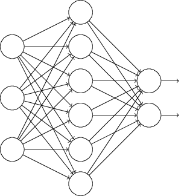
In particular, suppose we have a training input \(x\) and corresponding desired output \(y\). Ordinarily, we’d train by forward-propagating \(x\) through the network, and then backpropagating to determine the contribution to the gradient. With dropout, this process is modified. We start by randomly (and temporarily) deleting half the hidden neurons in the network, while leaving the input and output neurons untouched. After doing this, we’ll end up with a network along the following lines. Note that the dropout neurons, i.e., the neurons which have been temporarily deleted, are still ghosted in:
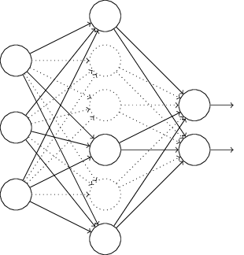
We forward-propagate the input \(x\) through the modified network, and then backpropagate the result, also through the modified network. After doing this over a mini-batch of examples, we update the appropriate weights and biases. We then repeat the process, first restoring the dropout neurons, then choosing a new random subset of hidden neurons to delete, estimating the gradient for a different mini-batch, and updating the weights and biases in the network.
By repeating this process over and over, our network will learn a set of weights and biases. Of course, those weights and biases will have been learnt under conditions in which half the hidden neurons were dropped out. When we actually run the full network that means that twice as many hidden neurons will be active. To compensate for that, we halve the weights outgoing from the hidden neurons.
This dropout procedure may seem strange and ad hoc. Why would we expect it to help with regularization? To explain what’s going on, I’d like you to briefly stop thinking about dropout, and instead imagine training neural networks in the standard way (no dropout). In particular, imagine we train several different neural networks, all using the same training data. Of course, the networks may not start out identical, and as a result after training they may sometimes give different results. When that happens we could use some kind of averaging or voting scheme to decide which output to accept. For instance, if we have trained five networks, and three of them are classifying a digit as a “3”, then it probably really is a “3”. The other two networks are probably just making a mistake. This kind of averaging scheme is often found to be a powerful (though expensive) way of reducing overfitting. The reason is that the different networks may overfit in different ways, and averaging may help eliminate that kind of overfitting.
What’s this got to do with dropout? Heuristically, when we dropout different sets of neurons, it’s rather like we’re training different neural networks. And so the dropout procedure is like averaging the effects of a very large number of different networks. The different networks will overfit in different ways, and so, hopefully, the net effect of dropout will be to reduce overfitting.
A related heuristic explanation for dropout is given in one of the earliest papers to use the technique30: “This technique reduces complex co-adaptations of neurons, since a neuron cannot rely on the presence of particular other neurons. It is, therefore, forced to learn more robust features that are useful in conjunction with many different random subsets of the other neurons.” In other words, if we think of our network as a model which is making predictions, then we can think of dropout as a way of making sure that the model is robust to the loss of any individual piece of evidence. In this, it’s somewhat similar to L1 and L2 regularization, which tend to reduce weights, and thus make the network more robust to losing any individual connection in the network.
Of course, the true measure of dropout is that it has been very successful in improving the performance of neural networks. The original paper31 introducing the technique applied it to many different tasks. For us, it’s of particular interest that they applied dropout to MNIST digit classification, using a vanilla feedforward neural network along lines similar to those we’ve been considering. The paper noted that the best result anyone had achieved up to that point using such an architecture was 98.4 percent classification accuracy on the test set. They improved that to 98.7 percent accuracy using a combination of dropout and a modified form of L2 regularization. Similarly impressive results have been obtained for many other tasks, including problems in image and speech recognition, and natural language processing. Dropout has been especially useful in training large, deep networks, where the problem of overfitting is often acute.
Artificially expanding the training data: We saw earlier that our MNIST classification accuracy dropped down to percentages in the mid-80s when we used only 1,000 training images. It’s not surprising that this is the case, since less training data means our network will be exposed to fewer variations in the way human beings write digits. Let’s try training our 30 hidden neuron network with a variety of different training data set sizes, to see how performance varies. We train using a mini-batch size of 10, a learning rate \(\eta=0.5\), a regularization parameter \(\lambda=5.0\), and the cross-entropy cost function. We will train for 30 epochs when the full training data set is used, and scale up the number of epochs proportionally when smaller training sets are used. To ensure the weight decay factor remains the same across training sets, we will use a regularization parameter of \(\lambda=5.0\) when the full training data set is used, and scale down \(\lambda\) proportionally when smaller training sets are used32.

As you can see, the classification accuracies improve considerably as we use more training data. Presumably this improvement would continue still further if more data was available. Of course, looking at the graph above it does appear that we’re getting near saturation. Suppose, however, that we redo the graph with the training set size plotted logarithmically:

It seems clear that the graph is still going up toward the end. This suggests that if we used vastly more training data – say, millions or even billions of handwriting samples, instead of just 50,000 – then we’d likely get considerably better performance, even from this very small network.
Obtaining more training data is a great idea. Unfortunately, it can be expensive, and so is not always possible in practice. However, there’s another idea which can work nearly as well, and that’s to artificially expand the training data. Suppose, for example, that we take an MNIST training image of a five,

and rotate it by a small amount, let’s say 15 degrees:

It’s still recognizably the same digit. And yet at the pixel level it’s quite different to any image currently in the MNIST training data. It’s conceivable that adding this image to the training data might help our network learn more about how to classify digits. What’s more, obviously we’re not limited to adding just this one image. We can expand our training data by making many small rotations of all the MNIST training images, and then using the expanded training data to improve our network’s performance.
This idea is very powerful and has been widely used. Let’s look at some of the results from a paper33 which applied several variations of the idea to MNIST. One of the neural network architectures they considered was along similar lines to what we’ve been using, a feedforward network with 800 hidden neurons and using the cross-entropy cost function. Running the network with the standard MNIST training data they achieved a classification accuracy of 98.4 percent on their test set. But then they expanded the training data, using not just rotations, as I described above, but also translating and skewing the images. By training on the expanded data set they increased their network’s accuracy to 98.9 percent. They also experimented with what they called “elastic distortions”, a special type of image distortion intended to emulate the random oscillations found in hand muscles. By using the elastic distortions to expand the data they achieved an even higher accuracy, 99.3 percent. Effectively, they were broadening the experience of their network by exposing it to the sort of variations that are found in real handwriting.
Variations on this idea can be used to improve performance on many learning tasks, not just handwriting recognition. The general principle is to expand the training data by applying operations that reflect real-world variation. It’s not difficult to think of ways of doing this. Suppose, for example, that you’re building a neural network to do speech recognition. We humans can recognize speech even in the presence of distortions such as background noise. And so you can expand your data by adding background noise. We can also recognize speech if it’s sped up or slowed down. So that’s another way we can expand the training data. These techniques are not always used – for instance, instead of expanding the training data by adding noise, it may well be more efficient to clean up the input to the network by first applying a noise reduction filter. Still, it’s worth keeping the idea of expanding the training data in mind, and looking for opportunities to apply it.
As discussed above, one way of expanding the MNIST training data is to use small rotations of training images. What’s a problem that might occur if we allow arbitrarily large rotations of training images?
An aside on big data and what it means to compare classification accuracies: Let’s look again at how our neural network’s accuracy varies with training set size:
Suppose that instead of using a neural network we use some other machine learning technique to classify digits. For instance, let’s try using the support vector machines (SVM) which we met briefly back in Chapter 1. As was the case in Chapter 1, don’t worry if you’re not familiar with SVMs, we don’t need to understand their details. Instead, we’ll use the SVM supplied by the scikit-learn library. Here’s how SVM performance varies as a function of training set size. I’ve plotted the neural net results as well, to make comparison easy34:

Probably the first thing that strikes you about this graph is that our neural network outperforms the SVM for every training set size. That’s nice, although you shouldn’t read too much into it, since I just used the out-of-the-box settings from scikit-learn’s SVM, while we’ve done a fair bit of work improving our neural network. A more subtle but more interesting fact about the graph is that if we train our SVM using 50,000 images then it actually has better performance (94.48 percent accuracy) than our neural network does when trained using 5,000 images (93.24 percent accuracy). In other words, more training data can sometimes compensate for differences in the machine learning algorithm used.
Something even more interesting can occur. Suppose we’re trying to solve a problem using two machine learning algorithms, algorithm A and algorithm B. It sometimes happens that algorithm A will outperform algorithm B with one set of training data, while algorithm B will outperform algorithm A with a different set of training data. We don’t see that above – it would require the two graphs to cross – but it does happen35. The correct response to the question “Is algorithm A better than algorithm B?” is really: “What training data set are you using?”
All this is a caution to keep in mind, both when doing development, and when reading research papers. Many papers focus on finding new tricks to wring out improved performance on standard benchmark data sets. “Our whiz-bang technique gave us an improvement of X percent on standard benchmark Y” is a canonical form of research claim. Such claims are often genuinely interesting, but they must be understood as applying only in the context of the specific training data set used. Imagine an alternate history in which the people who originally created the benchmark data set had a larger research grant. They might have used the extra money to collect more training data. It’s entirely possible that the “improvement” due to the whiz-bang technique would disappear on a larger data set. In other words, the purported improvement might be just an accident of history. The message to take away, especially in practical applications, is that what we want is both better algorithms and better training data. It’s fine to look for better algorithms, but make sure you’re not focusing on better algorithms to the exclusion of easy wins getting more or better training data.
(Research problem) How do our machine learning algorithms perform in the limit of very large data sets? For any given algorithm it’s natural to attempt to define a notion of asymptotic performance in the limit of truly big data. A quick-and-dirty approach to this problem is to simply try fitting curves to graphs like those shown above, and then to extrapolate the fitted curves out to infinity. An objection to this approach is that different approaches to curve fitting will give different notions of asymptotic performance. Can you find a principled justification for fitting to some particular class of curves? If so, compare the asymptotic performance of several different machine learning algorithms.
Summing up: We’ve now completed our dive into overfitting and regularization. Of course, we’ll return again to the issue. As I’ve mentioned several times, overfitting is a major problem in neural networks, especially as computers get more powerful, and we have the ability to train larger networks. As a result there’s a pressing need to develop powerful regularization techniques to reduce overfitting, and this is an extremely active area of current work.
When we create our neural networks, we have to make choices for the initial weights and biases. Up to now, we’ve been choosing them according to a prescription which I discussed only briefly back in Chapter 1. Just to remind you, that prescription was to choose both the weights and biases using independent Gaussian random variables, normalized to have mean 0 and standard deviation 1. While this approach has worked well, it was quite ad hoc, and it’s worth revisiting to see if we can find a better way of setting our initial weights and biases, and perhaps help our neural networks learn faster.
It turns out that we can do quite a bit better than initializing with normalized Gaussians. To see why, suppose we’re working with a network with a large number – say 1,000 – of input neurons. And let’s suppose we’ve used normalized Gaussians to initialize the weights connecting to the first hidden layer. For now I’m going to concentrate specifically on the weights connecting the input neurons to the first neuron in the hidden layer, and ignore the rest of the network:
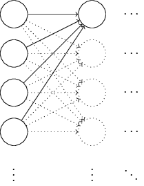
We’ll suppose for simplicity that we’re trying to train using a training input \(x\) in which half the input neurons are on, i.e., set to 1, and half the input neurons are off, i.e., set to 0. The argument which follows applies more generally, but you’ll get the gist from this special case. Let’s consider the weighted sum \(z=\sum_jw_jx_j+b\) of inputs to our hidden neuron. 500 terms in this sum vanish, because the corresponding input \(x_j\) is zero. And so \(z\) is a sum over a total of 501 normalized Gaussian random variables, accounting for the 500 weight terms and the 1 extra bias term. Thus \(z\) is itself distributed as a Gaussian with mean zero and standard deviation \(\sqrt{501}\approx 22.4\). That is, \(z\) has a very broad Gaussian distribution, not sharply peaked at all:
In particular, we can see from this graph that it’s quite likely that \(|z|\) will be pretty large, i.e., either \(z\gg1\) or \(z\ll-1\). If that’s the case then the output \(\sigma(z)\) from the hidden neuron will be very close to either 1 or 0. That means our hidden neuron will have saturated. And when that happens, as we know, making small changes in the weights will make only absolutely miniscule changes in the activation of our hidden neuron. That miniscule change in the activation of the hidden neuron will, in turn, barely affect the rest of the neurons in the network at all, and we’ll see a correspondingly miniscule change in the cost function. As a result, those weights will only learn very slowly when we use the gradient descent algorithm36. It’s similar to the problem we discussed earlier in this chapter, in which output neurons which saturated on the wrong value caused learning to slow down. We addressed that earlier problem with a clever choice of cost function. Unfortunately, while that helped with saturated output neurons, it does nothing at all for the problem with saturated hidden neurons.
I’ve been talking about the weights input to the first hidden layer. Of course, similar arguments apply also to later hidden layers: if the weights in later hidden layers are initialized using normalized Gaussians, then activations will often be very close to 0 or 1, and learning will proceed very slowly.
Is there some way we can choose better initializations for the weights and biases, so that we don’t get this kind of saturation, and so avoid a learning slowdown? Suppose we have a neuron with \(n_\mathrm{in}\) input weights. Then we shall initialize those weights as Gaussian random variables with mean 0 and standard deviation \(1/\sqrt{n_\mathrm{in}}\). That is, we’ll squash the Gaussians down, making it less likely that our neuron will saturate. We’ll continue to choose the bias as a Gaussian with mean 0 and standard deviation 1, for reasons I’ll return to in a moment. With these choices, the weighted sum \(z=\sum_jw_jx_j+b\) will again be a Gaussian random variable with mean 0, but it’ll be much more sharply peaked than it was before. Suppose, as we did earlier, that 500 of the inputs are zero and 500 are 1. Then it’s easy to show (see the exercise below) that \(z\) has a Gaussian distribution with mean 0 and standard deviation \(\sqrt{3/2}=1.22\ldots\). This is much more sharply peaked than before, so much so that even the graph below understates the situation, since I’ve had to rescale the vertical axis, when compared to the earlier graph:
Such a neuron is much less likely to saturate, and correspondingly much less likely to have problems with a learning slowdown.
Verify that the standard deviation of \(z=\sum_jw_jx_j+b\) in the paragraph above is \(\sqrt{3/2}\). It may help to know that: (a) the variance of a sum of independent random variables is the sum of the variances of the individual random variables; and (b) the variance is the square of the standard deviation.
I stated above that we’ll continue to initialize the biases as before, as Gaussian random variables with a mean of 0 and a standard deviation of 1. This is okay, because it doesn’t make it too much more likely that our neurons will saturate. In fact, it doesn’t much matter how we initialize the biases, provided we avoid the problem with saturation. Some people go so far as to initialize all the biases to 0, and rely on gradient descent to learn appropriate biases. But since it’s unlikely to make much difference, we’ll continue with the same initialization procedure as before.
Let’s compare the results for both our old and new approaches to weight initialization, using the MNIST digit classification task. As before, we’ll use 30 hidden neurons, a mini-batch size of 10, a regularization parameter \(\lambda=5.0\), and the cross-entropy cost function. We will decrease the learning rate slightly from \(\eta=0.5\) to 0.1, since that makes the results a little more easily visible in the graphs. We can train using the old method of weight initialization:
>>> import mnist_loader
>>> training_data, validation_data, test_data = mnist_loader.load_data_wrapper()
>>> import network2
>>> net = network2.Network([784, 30, 10], cost=network2.CrossEntropyCost)
>>> net.large_weight_initializer()
>>> net.SGD(training_data, 30, 10, 0.1, lmbda = 5.0, evaluation_data=validation_data,
... monitor_evaluation_accuracy=True)We can also train using the new approach to weight initialization. This is actually even easier, since network2’s default way of initializing the weights is using this new approach. That means we can omit the net.large_weight_initializer() call above:
>>> net = network2.Network([784, 30, 10], cost=network2.CrossEntropyCost)
>>> net.SGD(training_data, 30, 10, 0.1, lmbda = 5.0, evaluation_data=validation_data,
... monitor_evaluation_accuracy=True)Plotting the results37, we obtain:

In both cases, we end up with a classification accuracy somewhat over 96 percent. The final classification accuracy is almost exactly the same in the two cases. But the new initialization technique brings us there much, much faster. At the end of the first epoch of training the old approach to weight initialization has a classification accuracy under 87 percent, while the new approach is already almost 93 percent. What appears to be going on is that our new approach to weight initialization starts us off in a much better regime, which lets us get good results much more quickly. The same phenomenon is also seen if we plot results with 100 hidden neurons:

In this case, the two curves don’t quite meet. However, my experiments suggest that with just a few more epochs of training (not shown) the accuracies become almost exactly the same. So on the basis of these experiments it looks as though the improved weight initialization only speeds up learning, it doesn’t change the final performance of our networks. However, in Chapter 4 we’ll see examples of neural networks where the long-run behaviour is significantly better with the \(1/\sqrt{n_{\rm in}}\) weight initialization. Thus it’s not only the speed of learning which is improved, it’s sometimes also the final performance.
The \(1/\sqrt{n_{\rm in}}\) approach to weight initialization helps improve the way our neural nets learn. Other techniques for weight initialization have also been proposed, many building on this basic idea. I won’t review the other approaches here, since \(1/\sqrt{n_{\rm in}}\) works well enough for our purposes. If you’re interested in looking further, I recommend looking at the discussion on pages 14 and 15 of a 2012 paper by Yoshua Bengio38, as well as the references therein.
Connecting regularization and the improved method of weight initialization L2 regularization sometimes automatically gives us something similar to the new approach to weight initialization. Suppose we are using the old approach to weight initialization. Sketch a heuristic argument that: (1) supposing \(\lambda\) is not too small, the first epochs of training will be dominated almost entirely by weight decay; (2) provided \(\eta\lambda\ll n\) the weights will decay by a factor of \(\exp(-\eta\lambda/m)\) per epoch; and (3) supposing \(\lambda\) is not too large, the weight decay will tail off when the weights are down to a size around \(1/\sqrt{n_{\rm in}}\), where \(n\) is the total number of weights in the network. Argue that these conditions are all satisfied in the examples graphed in this section.
Let’s implement the ideas we’ve discussed in this chapter. We’ll develop a new program, network2.py, which is an improved version of the program network.py we developed in Chapter 1. If you haven’t looked at network.py in a while then you may find it helpful to spend a few minutes quickly reading over the earlier discussion. It’s only 74 lines of code, and is easily understood.
As was the case in network.py, the star of network2.py is the Network class, which we use to represent our neural networks. We initialize an instance of Network with a list of sizes for the respective layers in the network, and a choice for the cost to use, defaulting to the cross-entropy:
class Network(object):
def __init__(self, sizes, cost=CrossEntropyCost):
self.num_layers = len(sizes)
self.sizes = sizes
self.default_weight_initializer()
self.cost=costThe first couple of lines of the __init__ method are the same as in network.py, and are pretty self-explanatory. But the next two lines are new, and we need to understand what they’re doing in detail.
Let’s start by examining the default_weight_initializer method. This makes use of our new and improved approach to weight initialization. As we’ve seen, in that approach the weights input to a neuron are initialized as Gaussian random variables with mean 0 and standard deviation 1 divided by the square root of the number of connections input to the neuron. Also in this method we’ll initialize the biases, using Gaussian random variables with mean 0 and standard deviation 1. Here’s the code:
def default_weight_initializer(self):
self.biases = [np.random.randn(y, 1) for y in self.sizes[1:]]
self.weights = [np.random.randn(y, x)/np.sqrt(x) for x, y in zip(self.sizes[:-1], self.sizes[1:])]To understand the code, it may help to recall that np is the Numpy library for doing linear algebra. We’ll import Numpy at the beginning of our program. Also, notice that we don’t initialize any biases for the first layer of neurons. We avoid doing this because the first layer is an input layer, and so any biases would not be used. We did exactly the same thing in network.py. Complementing the default_weight_initializer we’ll also include a large_weight_initializer method. This method initializes the weights and biases using the old approach from Chapter 1, with both weights and biases initialized as Gaussian random variables with mean 0 and standard deviation 1. The code is, of course, only a tiny bit different from the default_weight_initializer:
def large_weight_initializer(self):
self.biases = [np.random.randn(y, 1) for y in self.sizes[1:]]
self.weights = [np.random.randn(y, x) for x, y in zip(self.sizes[:-1], self.sizes[1:])]I’ve included the large_weight_initializer method mostly as a convenience to make it easier to compare the results in this chapter to those in Chapter 1. I can’t think of many practical situations where I would recommend using it!
The second new thing in Network’s __init__ method is that we now initialize a cost attribute. To understand how that works, let’s look at the class we use to represent the cross-entropy cost39:
class CrossEntropyCost(object):
@staticmethod
def fn(a, y):
return np.sum(np.nan_to_num(-y*np.log(a)-(1-y)*np.log(1-a)))
@staticmethod
def delta(z, a, y):
return (a-y)Let’s break this down. The first thing to observe is that even though the cross-entropy is, mathematically speaking, a function, we’ve implemented it as a Python class, not a Python function. Why have I made that choice? The reason is that the cost plays two different roles in our network. The obvious role is that it’s a measure of how well an output activation, a, matches the desired output, y. This role is captured by the CrossEntropyCost.fn method. (Note, by the way, that the np.nan_to_num call inside CrossEntropyCost.fn ensures that Numpy deals correctly with the log of numbers very close to zero.) But there’s also a second way the cost function enters our network. Recall from Chapter 2 that when running the backpropagation algorithm we need to compute the network’s output error, \(\delta^L\). The form of the output error depends on the choice of cost function: different cost function, different form for the output error. For the cross-entropy the output error is, as we saw in Equation ([eq:66]), \[\delta^L=a^L-y.\tag{99}\label{eq:99}\] For this reason we define a second method, CrossEntropyCost.delta, whose purpose is to tell our network how to compute the output error. And then we bundle these two methods up into a single class containing everything our networks need to know about the cost function.
In a similar way, network2.py also contains a class to represent the quadratic cost function. This is included for comparison with the results of Chapter 1, since going forward we’ll mostly use the cross entropy. The code is just below. The QuadraticCost.fn method is a straightforward computation of the quadratic cost associated to the actual output, a, and the desired output, y. The value returned by QuadraticCost.delta is based on the expression ([eq:30]) for the output error for the quadratic cost, which we derived back in Chapter 2.
class QuadraticCost(object):
@staticmethod
def fn(a, y):
return 0.5*np.linalg.norm(a-y)**2
@staticmethod
def delta(z, a, y):
return (a-y) * sigmoid_prime(z)We’ve now understood the main differences between network2.py and network.py. It’s all pretty simple stuff. There are a number of smaller changes, which I’ll discuss below, including the implementation of L2 regularization. Before getting to that, let’s look at the complete code for network2.py. You don’t need to read all the code in detail, but it is worth understanding the broad structure, and in particular reading the documentation strings, so you understand what each piece of the program is doing. Of course, you’re also welcome to delve as deeply as you wish! If you get lost, you may wish to continue reading the prose below, and return to the code later. Anyway, here’s the code:
"""network2.py
~~~~~~~~~~~~~~
An improved version of network.py, implementing the stochastic
gradient descent learning algorithm for a feedforward neural network.
Improvements include the addition of the cross-entropy cost function,
regularization, and better initialization of network weights. Note
that I have focused on making the code simple, easily readable, and
easily modifiable. It is not optimized, and omits many desirable
features.
"""
#### Libraries
# Standard library
import json
import random
import sys
# Third-party libraries
import numpy as np
#### Define the quadratic and cross-entropy cost functions
class QuadraticCost(object):
@staticmethod
def fn(a, y):
"""Return the cost associated with an output ``a`` and desired output ``y``.
"""
return 0.5*np.linalg.norm(a-y)**2
@staticmethod
def delta(z, a, y):
"""Return the error delta from the output layer."""
return (a-y) * sigmoid_prime(z)
class CrossEntropyCost(object):
@staticmethod
def fn(a, y):
"""Return the cost associated with an output ``a`` and desired output
``y``. Note that np.nan_to_num is used to ensure numerical
stability. In particular, if both ``a`` and ``y`` have a 1.0
in the same slot, then the expression (1-y)*np.log(1-a)
returns nan. The np.nan_to_num ensures that that is converted
to the correct value (0.0).
"""
return np.sum(np.nan_to_num(-y*np.log(a)-(1-y)*np.log(1-a)))
@staticmethod
def delta(z, a, y):
"""Return the error delta from the output layer. Note that the
parameter ``z`` is not used by the method. It is included in
the method's parameters in order to make the interface
consistent with the delta method for other cost classes.
"""
return (a-y)
#### Main Network class
class Network(object):
def __init__(self, sizes, cost=CrossEntropyCost):
"""The list ``sizes`` contains the number of neurons in the respective
layers of the network. For example, if the list was [2, 3, 1]
then it would be a three-layer network, with the first layer
containing 2 neurons, the second layer 3 neurons, and the
third layer 1 neuron. The biases and weights for the network
are initialized randomly, using
``self.default_weight_initializer`` (see docstring for that
method).
"""
self.num_layers = len(sizes)
self.sizes = sizes
self.default_weight_initializer()
self.cost=cost
def default_weight_initializer(self):
"""Initialize each weight using a Gaussian distribution with mean 0
and standard deviation 1 over the square root of the number of
weights connecting to the same neuron. Initialize the biases
using a Gaussian distribution with mean 0 and standard
deviation 1.
Note that the first layer is assumed to be an input layer, and
by convention we won't set any biases for those neurons, since
biases are only ever used in computing the outputs from later
layers.
"""
self.biases = [np.random.randn(y, 1) for y in self.sizes[1:]]
self.weights = [np.random.randn(y, x)/np.sqrt(x) for x, y in zip(self.sizes[:-1], self.sizes[1:])]
def large_weight_initializer(self):
"""Initialize the weights using a Gaussian distribution with mean 0
and standard deviation 1. Initialize the biases using a
Gaussian distribution with mean 0 and standard deviation 1.
Note that the first layer is assumed to be an input layer, and
by convention we won't set any biases for those neurons, since
biases are only ever used in computing the outputs from later
layers.
This weight and bias initializer uses the same approach as in
Chapter 1, and is included for purposes of comparison. It
will usually be better to use the default weight initializer
instead.
"""
self.biases = [np.random.randn(y, 1) for y in self.sizes[1:]]
self.weights = [np.random.randn(y, x)
for x, y in zip(self.sizes[:-1], self.sizes[1:])]
def feedforward(self, a):
"""Return the output of the network if ``a`` is input."""
for b, w in zip(self.biases, self.weights):
a = sigmoid(np.dot(w, a)+b)
return a
def SGD(self, training_data, epochs, mini_batch_size, eta, lmbda = 0.0, evaluation_data=None, monitor_evaluation_cost=False, monitor_evaluation_accuracy=False, monitor_training_cost=False, monitor_training_accuracy=False):
"""Train the neural network using mini-batch stochastic gradient
descent. The ``training_data`` is a list of tuples ``(x, y)``
representing the training inputs and the desired outputs. The
other non-optional parameters are self-explanatory, as is the
regularization parameter ``lmbda``. The method also accepts
``evaluation_data``, usually either the validation or test
data. We can monitor the cost and accuracy on either the
evaluation data or the training data, by setting the
appropriate flags. The method returns a tuple containing four
lists: the (per-epoch) costs on the evaluation data, the
accuracies on the evaluation data, the costs on the training
data, and the accuracies on the training data. All values are
evaluated at the end of each training epoch. So, for example,
if we train for 30 epochs, then the first element of the tuple
will be a 30-element list containing the cost on the
evaluation data at the end of each epoch. Note that the lists
are empty if the corresponding flag is not set.
"""
if evaluation_data:
n_data = len(evaluation_data)
n = len(training_data)
evaluation_cost, evaluation_accuracy = [], []
training_cost, training_accuracy = [], []
for j in xrange(epochs):
random.shuffle(training_data)
mini_batches = [
training_data[k:k+mini_batch_size]
for k in xrange(0, n, mini_batch_size)]
for mini_batch in mini_batches:
self.update_mini_batch(
mini_batch, eta, lmbda, len(training_data))
print "Epoch %s training complete" % j
if monitor_training_cost:
cost = self.total_cost(training_data, lmbda)
training_cost.append(cost)
print "Cost on training data: {}".format(cost)
if monitor_training_accuracy:
accuracy = self.accuracy(training_data, convert=True)
training_accuracy.append(accuracy)
print "Accuracy on training data: {} / {}".format(accuracy, n)
if monitor_evaluation_cost:
cost = self.total_cost(evaluation_data, lmbda, convert=True)
evaluation_cost.append(cost)
print "Cost on evaluation data: {}".format(cost)
if monitor_evaluation_accuracy:
accuracy = self.accuracy(evaluation_data)
evaluation_accuracy.append(accuracy)
print "Accuracy on evaluation data: {} / {}".format(self.accuracy(evaluation_data), n_data)
print
return evaluation_cost, evaluation_accuracy, training_cost, training_accuracy
def update_mini_batch(self, mini_batch, eta, lmbda, n):
"""Update the network's weights and biases by applying gradient
descent using backpropagation to a single mini batch. The
``mini_batch`` is a list of tuples ``(x, y)``, ``eta`` is the
learning rate, ``lmbda`` is the regularization parameter, and
``n`` is the total size of the training data set.
"""
nabla_b = [np.zeros(b.shape) for b in self.biases]
nabla_w = [np.zeros(w.shape) for w in self.weights]
for x, y in mini_batch:
delta_nabla_b, delta_nabla_w = self.backprop(x, y)
nabla_b = [nb+dnb for nb, dnb in zip(nabla_b, delta_nabla_b)]
nabla_w = [nw+dnw for nw, dnw in zip(nabla_w, delta_nabla_w)]
self.weights = [(1-eta*(lmbda/n))*w-(eta/len(mini_batch))*nw
for w, nw in zip(self.weights, nabla_w)]
self.biases = [b-(eta/len(mini_batch))*nb
for b, nb in zip(self.biases, nabla_b)]
def backprop(self, x, y):
"""Return a tuple ``(nabla_b, nabla_w)`` representing the
gradient for the cost function C_x. ``nabla_b`` and
``nabla_w`` are layer-by-layer lists of numpy arrays, similar
to ``self.biases`` and ``self.weights``."""
nabla_b = [np.zeros(b.shape) for b in self.biases]
nabla_w = [np.zeros(w.shape) for w in self.weights]
# feedforward
activation = x
activations = [x] # list to store all the activations, layer by layer
zs = [] # list to store all the z vectors, layer by layer
for b, w in zip(self.biases, self.weights):
z = np.dot(w, activation)+b
zs.append(z)
activation = sigmoid(z)
activations.append(activation)
# backward pass
delta = (self.cost).delta(zs[-1], activations[-1], y)
nabla_b[-1] = delta
nabla_w[-1] = np.dot(delta, activations[-2].transpose())
# Note that the variable l in the loop below is used a little
# differently to the notation in Chapter 2 of the book. Here,
# l = 1 means the last layer of neurons, l = 2 is the
# second-last layer, and so on. It's a renumbering of the
# scheme in the book, used here to take advantage of the fact
# that Python can use negative indices in lists.
for l in xrange(2, self.num_layers):
z = zs[-l]
sp = sigmoid_prime(z)
delta = np.dot(self.weights[-l+1].transpose(), delta) * sp
nabla_b[-l] = delta
nabla_w[-l] = np.dot(delta, activations[-l-1].transpose())
return (nabla_b, nabla_w)
def accuracy(self, data, convert=False):
"""Return the number of inputs in ``data`` for which the neural
network outputs the correct result. The neural network's
output is assumed to be the index of whichever neuron in the
final layer has the highest activation.
The flag ``convert`` should be set to False if the data set is
validation or test data (the usual case), and to True if the
data set is the training data. The need for this flag arises
due to differences in the way the results ``y`` are
represented in the different data sets. In particular, it
flags whether we need to convert between the different
representations. It may seem strange to use different
representations for the different data sets. Why not use the
same representation for all three data sets? It's done for
efficiency reasons -- the program usually evaluates the cost
on the training data and the accuracy on other data sets.
These are different types of computations, and using different
representations speeds things up. More details on the
representations can be found in
mnist_loader.load_data_wrapper.
"""
if convert:
results = [(np.argmax(self.feedforward(x)), np.argmax(y)) for (x, y) in data]
else:
results = [(np.argmax(self.feedforward(x)), y) for (x, y) in data]
return sum(int(x == y) for (x, y) in results)
def total_cost(self, data, lmbda, convert=False):
"""Return the total cost for the data set ``data``. The flag
``convert`` should be set to False if the data set is the
training data (the usual case), and to True if the data set is
the validation or test data. See comments on the similar (but
reversed) convention for the ``accuracy`` method, above.
"""
cost = 0.0
for x, y in data:
a = self.feedforward(x)
if convert:
y = vectorized_result(y)
cost += self.cost.fn(a, y)/len(data)
cost += 0.5*(lmbda/len(data))*sum(np.linalg.norm(w)**2 for w in self.weights)
return cost
def save(self, filename):
"""Save the neural network to the file ``filename``."""
data = {"sizes": self.sizes,
"weights": [w.tolist() for w in self.weights],
"biases": [b.tolist() for b in self.biases],
"cost": str(self.cost.__name__)}
f = open(filename, "w")
json.dump(data, f)
f.close()
#### Loading a Network
def load(filename):
"""Load a neural network from the file ``filename``. Returns an
instance of Network.
"""
f = open(filename, "r")
data = json.load(f)
f.close()
cost = getattr(sys.modules[__name__], data["cost"])
net = Network(data["sizes"], cost=cost)
net.weights = [np.array(w) for w in data["weights"]]
net.biases = [np.array(b) for b in data["biases"]]
return net
#### Miscellaneous functions
def vectorized_result(j):
"""Return a 10-dimensional unit vector with a 1.0 in the j'th position
and zeroes elsewhere. This is used to convert a digit (0...9)
into a corresponding desired output from the neural network.
"""
e = np.zeros((10, 1))
e[j] = 1.0
return e
def sigmoid(z):
"""The sigmoid function."""
return 1.0/(1.0+np.exp(-z))
def sigmoid_prime(z):
"""Derivative of the sigmoid function."""
return sigmoid(z)*(1-sigmoid(z))One of the more interesting changes in the code is to include L2 regularization. Although this is a major conceptual change, it’s so trivial to implement that it’s easy to miss in the code. For the most part it just involves passing the parameter lmbda to various methods, notably the Network.SGD method. The real work is done in a single line of the program, the fourth-last line of the Network.update_mini_batch method. That’s where we modify the gradient descent update rule to include weight decay. But although the modification is tiny, it has a big impact on results!
This is, by the way, common when implementing new techniques in neural networks. We’ve spent thousands of words discussing regularization. It’s conceptually quite subtle and difficult to understand. And yet it was trivial to add to our program! It occurs surprisingly often that sophisticated techniques can be implemented with small changes to code.
Another small but important change to our code is the addition of several optional flags to the stochastic gradient descent method, Network.SGD. These flags make it possible to monitor the cost and accuracy either on the training_data or on a set of evaluation_data which can be passed to Network.SGD. We’ve used these flags often earlier in the chapter, but let me give an example of how it works, just to remind you:
>>> import mnist_loader
>>> training_data, validation_data, test_data = mnist_loader.load_data_wrapper()
>>> import network2
>>> net = network2.Network([784, 30, 10], cost=network2.CrossEntropyCost)
>>> net.SGD(training_data, 30, 10, 0.5, lmbda = 5.0, evaluation_data=validation_data,
... monitor_evaluation_accuracy=True, monitor_evaluation_cost=True, monitor_training_accuracy=True,
... monitor_training_cost=True)Here, we’re setting the evaluation_data to be the validation_data. But we could also have monitored performance on the test_data or any other data set. We also have four flags telling us to monitor the cost and accuracy on both the evaluation_data and the training_data. Those flags are False by default, but they’ve been turned on here in order to monitor our Network’s performance. Furthermore, network2.py’s Network.SGD method returns a four-element tuple representing the results of the monitoring. We can use this as follows:
>>> evaluation_cost, evaluation_accuracy, training_cost, training_accuracy = net.SGD(training_data, 30, 10, 0.5, lmbda = 5.0, evaluation_data=validation_data, monitor_evaluation_accuracy=True, monitor_evaluation_cost=True, monitor_training_accuracy=True, monitor_training_cost=True)So, for example, evaluation_cost will be a 30-element list containing the cost on the evaluation data at the end of each epoch. This sort of information is extremely useful in understanding a network’s behaviour. It can, for example, be used to draw graphs showing how the network learns over time. Indeed, that’s exactly how I constructed all the graphs earlier in the chapter. Note, however, that if any of the monitoring flags are not set, then the corresponding element in the tuple will be the empty list.
Other additions to the code include a Network.save method, to save Network objects to disk, and a function to load them back in again later. Note that the saving and loading is done using JSON, not Python’s pickle or cPickle modules, which are the usual way we save and load objects to and from disk in Python. Using JSON requires more code than pickle or cPickle would. To understand why I’ve used JSON, imagine that at some time in the future we decided to change our Network class to allow neurons other than sigmoid neurons. To implement that change we’d most likely change the attributes defined in the Network.__init__ method. If we’ve simply pickled the objects that would cause our load function to fail. Using JSON to do the serialization explicitly makes it easy to ensure that old Networks will still load.
There are many other minor changes in the code for network2.py, but they’re all simple variations on network.py. The net result is to expand our 74-line program to a far more capable 152 lines.
Modify the code above to implement L1 regularization, and use L1 regularization to classify MNIST digits using a 30 hidden neuron network. Can you find a regularization parameter that enables you to do better than running unregularized?
Take a look at the Network.cost_derivative method in network.py. That method was written for the quadratic cost. How would you rewrite the method for the cross-entropy cost? Can you think of a problem that might arise in the cross-entropy version? In network2.py we’ve eliminated the Network.cost_derivative method entirely, instead incorporating its functionality into the CrossEntropyCost.delta method. How does this solve the problem you’ve just identified?
Up until now I haven’t explained how I’ve been choosing values for hyper-parameters such as the learning rate, \(\eta\), the regularization parameter, \(\lambda\), and so on. I’ve just been supplying values which work pretty well. In practice, when you’re using neural nets to attack a problem, it can be difficult to find good hyper-parameters. Imagine, for example, that we’ve just been introduced to the MNIST problem, and have begun working on it, knowing nothing at all about what hyper-parameters to use. Let’s suppose that by good fortune in our first experiments we choose many of the hyper-parameters in the same way as was done earlier this chapter: 30 hidden neurons, a mini-batch size of 10, training for 30 epochs using the cross-entropy. But we choose a learning rate \(\eta=10.0\) and regularization parameter \(\lambda=1000.0\). Here’s what I saw on one such run:
>>> import mnist_loader
>>> training_data, validation_data, test_data = \
... mnist_loader.load_data_wrapper()
>>> import network2
>>> net = network2.Network([784, 30, 10])
>>> net.SGD(training_data, 30, 10, 10.0, lmbda = 1000.0,
... evaluation_data=validation_data, monitor_evaluation_accuracy=True)
Epoch 0 training complete
Accuracy on evaluation data: 1030 / 10000
Epoch 1 training complete
Accuracy on evaluation data: 990 / 10000
Epoch 2 training complete
Accuracy on evaluation data: 1009 / 10000
...
Epoch 27 training complete
Accuracy on evaluation data: 1009 / 10000
Epoch 28 training complete
Accuracy on evaluation data: 983 / 10000
Epoch 29 training complete
Accuracy on evaluation data: 967 / 10000Our classification accuracies are no better than chance! Our network is acting as a random noise generator!
“Well, that’s easy to fix,” you might say, “just decrease the learning rate and regularization hyper-parameters”. Unfortunately, you don’t a priori know those are the hyper-parameters you need to adjust. Maybe the real problem is that our 30 hidden neuron network will never work well, no matter how the other hyper-parameters are chosen? Maybe we really need at least 100 hidden neurons? Or 300 hidden neurons? Or multiple hidden layers? Or a different approach to encoding the output? Maybe our network is learning, but we need to train for more epochs? Maybe the mini-batches are too small? Maybe we’d do better switching back to the quadratic cost function? Maybe we need to try a different approach to weight initialization? And so on, on and on and on. It’s easy to feel lost in hyper-parameter space. This can be particularly frustrating if your network is very large, or uses a lot of training data, since you may train for hours or days or weeks, only to get no result. If the situation persists, it damages your confidence. Maybe neural networks are the wrong approach to your problem? Maybe you should quit your job and take up beekeeping?
In this section I explain some heuristics which can be used to set the hyper-parameters in a neural network. The goal is to help you develop a workflow that enables you to do a pretty good job setting hyper-parameters. Of course, I won’t cover everything about hyper-parameter optimization. That’s a huge subject, and it’s not, in any case, a problem that is ever completely solved, nor is there universal agreement amongst practitioners on the right strategies to use. There’s always one more trick you can try to eke out a bit more performance from your network. But the heuristics in this section should get you started.
Broad strategy: When using neural networks to attack a new problem the first challenge is to get any non-trivial learning, i.e., for the network to achieve results better than chance. This can be surprisingly difficult, especially when confronting a new class of problem. Let’s look at some strategies you can use if you’re having this kind of trouble.
Suppose, for example, that you’re attacking MNIST for the first time. You start out enthusiastic, but are a little discouraged when your first network fails completely, as in the example above. The way to go is to strip the problem down. Get rid of all the training and validation images except images which are 0s or 1s. Then try to train a network to distinguish 0s from 1s. Not only is that an inherently easier problem than distinguishing all ten digits, it also reduces the amount of training data by 80 percent, speeding up training by a factor of 5. That enables much more rapid experimentation, and so gives you more rapid insight into how to build a good network.
You can further speed up experimentation by stripping your network down to the simplest network likely to do meaningful learning. If you believe a [784, 10] network can likely do better-than-chance classification of MNIST digits, then begin your experimentation with such a network. It’ll be much faster than training a [784, 30, 10] network, and you can build back up to the latter.
You can get another speed up in experimentation by increasing the frequency of monitoring. In network2.py we monitor performance at the end of each training epoch. With 50,000 images per epoch, that means waiting a little while – about ten seconds per epoch, on my laptop, when training a [784, 30, 10] network – before getting feedback on how well the network is learning. Of course, ten seconds isn’t very long, but if you want to trial dozens of hyper-parameter choices it’s annoying, and if you want to trial hundreds or thousands of choices it starts to get debilitating. We can get feedback more quickly by monitoring the validation accuracy more often, say, after every 1,000 training images. Furthermore, instead of using the full 10,000 image validation set to monitor performance, we can get a much faster estimate using just 100 validation images. All that matters is that the network sees enough images to do real learning, and to get a pretty good rough estimate of performance. Of course, our program network2.py doesn’t currently do this kind of monitoring. But as a kludge to achieve a similar effect for the purposes of illustration, we’ll strip down our training data to just the first 1,000 MNIST training images. Let’s try it and see what happens. (To keep the code below simple I haven’t implemented the idea of using only 0 and 1 images. Of course, that can be done with just a little more work.)
>>> net = network2.Network([784, 10])
>>> net.SGD(training_data[:1000], 30, 10, 10.0, lmbda = 1000.0, \
... evaluation_data=validation_data[:100], \
... monitor_evaluation_accuracy=True)
Epoch 0 training complete
Accuracy on evaluation data: 10 / 100
Epoch 1 training complete
Accuracy on evaluation data: 10 / 100
Epoch 2 training complete
Accuracy on evaluation data: 10 / 100
...We’re still getting pure noise! But there’s a big win: we’re now getting feedback in a fraction of a second, rather than once every ten seconds or so. That means you can more quickly experiment with other choices of hyper-parameter, or even conduct experiments trialling many different choices of hyper-parameter nearly simultaneously.
In the above example I left \(\lambda\) as \(\lambda=1000.0\), as we used earlier. But since we changed the number of training examples we should really change \(\lambda\) to keep the weight decay the same. That means changing \(\lambda\) to 20.0. If we do that then this is what happens:
>>> net = network2.Network([784, 10])
>>> net.SGD(training_data[:1000], 30, 10, 10.0, lmbda = 20.0, \
... evaluation_data=validation_data[:100], \
... monitor_evaluation_accuracy=True)
Epoch 0 training complete
Accuracy on evaluation data: 12 / 100
Epoch 1 training complete
Accuracy on evaluation data: 14 / 100
Epoch 2 training complete
Accuracy on evaluation data: 25 / 100
Epoch 3 training complete
Accuracy on evaluation data: 18 / 100
...Ahah! We have a signal. Not a terribly good signal, but a signal nonetheless. That’s something we can build on, modifying the hyper-parameters to try to get further improvement. Maybe we guess that our learning rate needs to be higher. (As you perhaps realize, that’s a silly guess, for reasons we’ll discuss shortly, but please bear with me.) So to test our guess we try dialing \(\eta\) up to 100.0:
>>> net = network2.Network([784, 10])
>>> net.SGD(training_data[:1000], 30, 10, 100.0, lmbda = 20.0, \
... evaluation_data=validation_data[:100], \
... monitor_evaluation_accuracy=True)
Epoch 0 training complete
Accuracy on evaluation data: 10 / 100
Epoch 1 training complete
Accuracy on evaluation data: 10 / 100
Epoch 2 training complete
Accuracy on evaluation data: 10 / 100
Epoch 3 training complete
Accuracy on evaluation data: 10 / 100
...That’s no good! It suggests that our guess was wrong, and the problem wasn’t that the learning rate was too low. So instead we try dialing \(\eta\) down to \(\eta=1.0\):
>>> net = network2.Network([784, 10])
>>> net.SGD(training_data[:1000], 30, 10, 1.0, lmbda = 20.0, \
... evaluation_data=validation_data[:100], \
... monitor_evaluation_accuracy=True)
Epoch 0 training complete
Accuracy on evaluation data: 62 / 100
Epoch 1 training complete
Accuracy on evaluation data: 42 / 100
Epoch 2 training complete
Accuracy on evaluation data: 43 / 100
Epoch 3 training complete
Accuracy on evaluation data: 61 / 100
...
That’s better! And so we can continue, individually adjusting each hyper-parameter, gradually improving performance. Once we’ve explored to find an improved value for \(\eta\), then we move on to find a good value for \(\lambda\). Then experiment with a more complex architecture, say a network with 10 hidden neurons. Then adjust the values for \(\eta\) and \(\lambda\) again. Then increase to 20 hidden neurons. And then adjust other hyper-parameters some more. And so on, at each stage evaluating performance using our held-out validation data, and using those evaluations to find better and better hyper-parameters. As we do so, it typically takes longer to witness the impact due to modifications of the hyper-parameters, and so we can gradually decrease the frequency of monitoring.
This all looks very promising as a broad strategy. However, I want to return to that initial stage of finding hyper-parameters that enable a network to learn anything at all. In fact, even the above discussion conveys too positive an outlook. It can be immensely frustrating to work with a network that’s learning nothing. You can tweak hyper-parameters for days, and still get no meaningful response. And so I’d like to re-emphasize that during the early stages you should make sure you can get quick feedback from experiments. Intuitively, it may seem as though simplifying the problem and the architecture will merely slow you down. In fact, it speeds things up, since you much more quickly find a network with a meaningful signal. Once you’ve got such a signal, you can often get rapid improvements by tweaking the hyper-parameters. As with many things in life, getting started can be the hardest thing to do.
Okay, that’s the broad strategy. Let’s now look at some specific recommendations for setting hyper-parameters. I will focus on the learning rate, \(\eta\), the L2 regularization parameter, \(\lambda\), and the mini-batch size. However, many of the remarks apply also to other hyper-parameters, including those associated to network architecture, other forms of regularization, and some hyper-parameters we’ll meet later in the book, such as the momentum co-efficient.
Learning rate: Suppose we run three MNIST networks with three different learning rates, \(\eta=0.025\), \(\eta=0.25\) and \(\eta=2.5\), respectively. We’ll set the other hyper-parameters as for the experiments in earlier sections, running over 30 epochs, with a mini-batch size of 10, and with \(\lambda=5.0\). We’ll also return to using the full 50,000 training images. Here’s a graph showing the behaviour of the training cost as we train40:

With \(\eta=0.025\) the cost decreases smoothly until the final epoch. With \(\eta=0.25\) the cost initially decreases, but after about 20 epochs it is near saturation, and thereafter most of the changes are merely small and apparently random oscillations. Finally, with \(\eta=2.5\) the cost makes large oscillations right from the start. To understand the reason for the oscillations, recall that stochastic gradient descent is supposed to step us gradually down into a valley of the cost function,
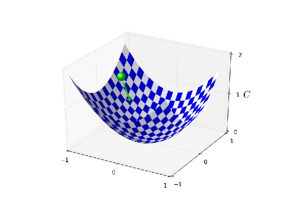
However, if \(\eta\) is too large then the steps will be so large that they may actually overshoot the minimum, causing the algorithm to climb up out of the valley instead. That’s likely41 what’s causing the cost to oscillate when \(\eta=2.5\). When we choose \(\eta=0.25\) the initial steps do take us toward a minimum of the cost function, and it’s only once we get near that minimum that we start to suffer from the overshooting problem. And when we choose \(\eta=0.025\) we don’t suffer from this problem at all during the first 30 epochs. Of course, choosing \(\eta\) so small creates another problem, namely, that it slows down stochastic gradient descent. An even better approach would be to start with \(\eta=0.25\), train for 20 epochs, and then switch to \(\eta=0.025\). We’ll discuss such variable learning rate schedules later. For now, though, let’s stick to figuring out how to find a single good value for the learning rate, \(\eta\).
With this picture in mind, we can set \(\eta\) as follows. First, we estimate the threshold value for \(\eta\) at which the cost on the training data immediately begins decreasing, instead of oscillating or increasing. This estimate doesn’t need to be too accurate. You can estimate the order of magnitude by starting with \(\eta=0.01\). If the cost decreases during the first few epochs, then you should successively try \(\eta=0.1,1.0,\ldots\) until you find a value for \(\eta\) where the cost oscillates or increases during the first few epochs. Alternately, if the cost oscillates or increases during the first few epochs when \(\eta=0.01\), then try \(\eta=0.001,0.0001,\ldots\) until you find a value for \(\eta\) where the cost decreases during the first few epochs. Following this procedure will give us an order of magnitude estimate for the threshold value of \(\eta\). You may optionally refine your estimate, to pick out the largest value of \(\eta\) at which the cost decreases during the first few epochs, say \(\eta=0.5\) or \(\eta=0.2\) (there’s no need for this to be super-accurate). This gives us an estimate for the threshold value of \(\eta\).
Obviously, the actual value of \(\eta\) that you use should be no larger than the threshold value. In fact, if the value of \(\eta\) is to remain usable over many epochs then you likely want to use a value for \(\eta\) that is smaller, say, a factor of two below the threshold. Such a choice will typically allow you to train for many epochs, without causing too much of a slowdown in learning.
In the case of the MNIST data, following this strategy leads to an estimate of 0.1 for the order of magnitude of the threshold value of \(\eta\). After some more refinement, we obtain a threshold value \(\eta=0.5\). Following the prescription above, this suggests using \(\eta=0.25\) as our value for the learning rate. In fact, I found that using \(\eta=0.5\) worked well enough over 30 epochs that for the most part I didn’t worry about using a lower value of \(\eta\).
This all seems quite straightforward. However, using the training cost to pick \(\eta\) appears to contradict what I said earlier in this section, namely, that we’d pick hyper-parameters by evaluating performance using our held-out validation data. In fact, we’ll use validation accuracy to pick the regularization hyper-parameter, the mini-batch size, and network parameters such as the number of layers and hidden neurons, and so on. Why do things differently for the learning rate? Frankly, this choice is my personal aesthetic preference, and is perhaps somewhat idiosyncratic. The reasoning is that the other hyper-parameters are intended to improve the final classification accuracy on the test set, and so it makes sense to select them on the basis of validation accuracy. However, the learning rate is only incidentally meant to impact the final classification accuracy. Its primary purpose is really to control the step size in gradient descent, and monitoring the training cost is the best way to detect if the step size is too big. With that said, this is a personal aesthetic preference. Early on during learning the training cost usually only decreases if the validation accuracy improves, and so in practice it’s unlikely to make much difference which criterion you use.
Use early stopping to determine the number of training epochs: As we discussed earlier in the chapter, early stopping means that at the end of each epoch we should compute the classification accuracy on the validation data. When that stops improving, terminate. This makes setting the number of epochs very simple. In particular, it means that we don’t need to worry about explicitly figuring out how the number of epochs depends on the other hyper-parameters. Instead, that’s taken care of automatically. Furthermore, early stopping also automatically prevents us from overfitting. This is, of course, a good thing, although in the early stages of experimentation it can be helpful to turn off early stopping, so you can see any signs of overfitting, and use it to inform your approach to regularization.
To implement early stopping we need to say more precisely what it means that the classification accuracy has stopped improving. As we’ve seen, the accuracy can jump around quite a bit, even when the overall trend is to improve. If we stop the first time the accuracy decreases then we’ll almost certainly stop when there are more improvements to be had. A better rule is to terminate if the best classification accuracy doesn’t improve for quite some time. Suppose, for example, that we’re doing MNIST. Then we might elect to terminate if the classification accuracy hasn’t improved during the last ten epochs. This ensures that we don’t stop too soon, in response to bad luck in training, but also that we’re not waiting around forever for an improvement that never comes.
This no-improvement-in-ten rule is good for initial exploration of MNIST. However, networks can sometimes plateau near a particular classification accuracy for quite some time, only to then begin improving again. If you’re trying to get really good performance, the no-improvement-in-ten rule may be too aggressive about stopping. In that case, I suggest using the no-improvement-in-ten rule for initial experimentation, and gradually adopting more lenient rules, as you better understand the way your network trains: no-improvement-in-twenty, no-improvement-in-fifty, and so on. Of course, this introduces a new hyper-parameter to optimize! In practice, however, it’s usually easy to set this hyper-parameter to get pretty good results. Similarly, for problems other than MNIST, the no-improvement-in-ten rule may be much too aggressive or not nearly aggressive enough, depending on the details of the problem. However, with a little experimentation it’s usually easy to find a pretty good strategy for early stopping.
We haven’t used early stopping in our MNIST experiments to date. The reason is that we’ve been doing a lot of comparisons between different approaches to learning. For such comparisons it’s helpful to use the same number of epochs in each case. However, it’s well worth modifying network2.py to implement early stopping:
Modify network2.py so that it implements early stopping using a no-improvement-in-\(n\) epochs strategy, where \(n\) is a parameter that can be set.
Can you think of a rule for early stopping other than no-improvement-in-\(n\)? Ideally, the rule should compromise between getting high validation accuracies and not training too long. Add your rule to network2.py, and run three experiments comparing the validation accuracies and number of epochs of training to no-improvement-in-10.
Learning rate schedule: We’ve been holding the learning rate \(\eta\) constant. However, it’s often advantageous to vary the learning rate. Early on during the learning process it’s likely that the weights are badly wrong. And so it’s best to use a large learning rate that causes the weights to change quickly. Later, we can reduce the learning rate as we make more fine-tuned adjustments to our weights.
How should we set our learning rate schedule? Many approaches are possible. One natural approach is to use the same basic idea as early stopping. The idea is to hold the learning rate constant until the validation accuracy starts to get worse. Then decrease the learning rate by some amount, say a factor of two or ten. We repeat this many times, until, say, the learning rate is a factor of 1,024 (or 1,000) times lower than the initial value. Then we terminate.
A variable learning schedule can improve performance, but it also opens up a world of possible choices for the learning schedule. Those choices can be a headache – you can spend forever trying to optimize your learning schedule. For first experiments my suggestion is to use a single, constant value for the learning rate. That’ll get you a good first approximation. Later, if you want to obtain the best performance from your network, it’s worth experimenting with a learning schedule, along the lines I’ve described42.
Modify network2.py so that it implements a learning schedule that: halves the learning rate each time the validation accuracy satisfies the no-improvement-in-10 rule; and terminates when the learning rate has dropped to 1/128 of its original value.
The regularization parameter, \(\lambda\): I suggest starting initially with no regularization (\(\lambda=0.0\)), and determining a value for \(\eta\), as above. Using that choice of \(\eta\), we can then use the validation data to select a good value for \(\lambda\). Start by trialling \(\lambda=1.0\)43, and then increase or decrease by factors of 10, as needed to improve performance on the validation data. Once you’ve found a good order of magnitude, you can fine tune your value of \(\lambda\). That done, you should return and re-optimize \(\eta\) again.
It’s tempting to use gradient descent to try to learn good values for hyper-parameters such as \(\lambda\) and \(\eta\). Can you think of an obstacle to using gradient descent to determine \(\lambda\)? Can you think of an obstacle to using gradient descent to determine \(\eta\)?
How I selected hyper-parameters earlier in this book: If you use the recommendations in this section you’ll find that you get values for \(\eta\) and \(\lambda\) which don’t always exactly match the values I’ve used earlier in the book. The reason is that the book has narrative constraints that have sometimes made it impractical to optimize the hyper-parameters. Think of all the comparisons we’ve made of different approaches to learning, e.g., comparing the quadratic and cross-entropy cost functions, comparing the old and new methods of weight initialization, running with and without regularization, and so on. To make such comparisons meaningful, I’ve usually tried to keep hyper-parameters constant across the approaches being compared (or to scale them in an appropriate way). Of course, there’s no reason for the same hyper-parameters to be optimal for all the different approaches to learning, so the hyper-parameters I’ve used are something of a compromise.
As an alternative to this compromise, I could have tried to optimize the heck out of the hyper-parameters for every single approach to learning. In principle that’d be a better, fairer approach, since then we’d see the best from every approach to learning. However, we’ve made dozens of comparisons along these lines, and in practice I found it too computationally expensive. That’s why I’ve adopted the compromise of using pretty good (but not necessarily optimal) choices for the hyper-parameters.
Mini-batch size: How should we set the mini-batch size? To answer this question, let’s first suppose that we’re doing online learning, i.e., that we’re using a mini-batch size of 1.
The obvious worry about online learning is that using mini-batches which contain just a single training example will cause significant errors in our estimate of the gradient. In fact, though, the errors turn out to not be such a problem. The reason is that the individual gradient estimates don’t need to be super-accurate. All we need is an estimate accurate enough that our cost function tends to keep decreasing. It’s as though you are trying to get to the North Magnetic Pole, but have a wonky compass that’s 10–20 degrees off each time you look at it. Provided you stop to check the compass frequently, and the compass gets the direction right on average, you’ll end up at the North Magnetic Pole just fine.
Based on this argument, it sounds as though we should use online learning. In fact, the situation turns out to be more complicated than that. In a problem in the I pointed out that it’s possible to use matrix techniques to compute the gradient update for all examples in a mini-batch simultaneously, rather than looping over them. Depending on the details of your hardware and linear algebra library this can make it quite a bit faster to compute the gradient estimate for a mini-batch of (for example) size 100, rather than computing the mini-batch gradient estimate by looping over the 100 training examples separately. It might take (say) only 50 times as long, rather than 100 times as long.
Now, at first it seems as though this doesn’t help us that much. With our mini-batch of size 100 the learning rule for the weights looks like: \[\begin{aligned} w \to w' = w-\eta \frac{1}{100} \sum_x \nabla C_x, \tag{100}\label{eq:100}\end{aligned}\] where the sum is over training examples in the mini-batch. This is versus \[\begin{aligned} w \to w' = w-\eta \nabla C_x \tag{101}\label{eq:101}\end{aligned}\] for online learning. Even if it only takes 50 times as long to do the mini-batch update, it still seems likely to be better to do online learning, because we’d be updating so much more frequently. Suppose, however, that in the mini-batch case we increase the learning rate by a factor 100, so the update rule becomes \[\begin{aligned} w \rightarrow w' = w-\eta \sum_x \nabla C_x. \tag{102}\label{eq:102}\end{aligned}\] That’s a lot like doing 100 separate instances of online learning with a learning rate of \(\eta\). But it only takes 50 times as long as doing a single instance of online learning. Of course, it’s not truly the same as 100 instances of online learning, since in the mini-batch the \(\nabla C_x\)’s are all evaluated for the same set of weights, as opposed to the cumulative learning that occurs in the online case. Still, it seems distinctly possible that using the larger mini-batch would speed things up.
With these factors in mind, choosing the best mini-batch size is a compromise. Too small, and you don’t get to take full advantage of the benefits of good matrix libraries optimized for fast hardware. Too large and you’re simply not updating your weights often enough. What you need is to choose a compromise value which maximizes the speed of learning. Fortunately, the choice of mini-batch size at which the speed is maximized is relatively independent of the other hyper-parameters (apart from the overall architecture), so you don’t need to have optimized those hyper-parameters in order to find a good mini-batch size. The way to go is therefore to use some acceptable (but not necessarily optimal) values for the other hyper-parameters, and then trial a number of different mini-batch sizes, scaling \(\eta\) as above. Plot the validation accuracy versus time (as in, real elapsed time, not epoch!), and choose whichever mini-batch size gives you the most rapid improvement in performance. With the mini-batch size chosen you can then proceed to optimize the other hyper-parameters.
Of course, as you’ve no doubt realized, I haven’t done this optimization in our work. Indeed, our implementation doesn’t use the faster approach to mini-batch updates at all. I’ve simply used a mini-batch size of 10 without comment or explanation in nearly all examples. Because of this, we could have sped up learning by reducing the mini-batch size. I haven’t done this, in part because I wanted to illustrate the use of mini-batches beyond size 1, and in part because my preliminary experiments suggested the speedup would be rather modest. In practical implementations, however, we would most certainly implement the faster approach to mini-batch updates, and then make an effort to optimize the mini-batch size, in order to maximize our overall speed.
Automated techniques: I’ve been describing these heuristics as though you’re optimizing your hyper-parameters by hand. Hand-optimization is a good way to build up a feel for how neural networks behave. However, and unsurprisingly, a great deal of work has been done on automating the process. A common technique is grid search, which systematically searches through a grid in hyper-parameter space. A review of both the achievements and the limitations of grid search (with suggestions for easily-implemented alternatives) may be found in a 2012 paper44 by James Bergstra and Yoshua Bengio. Many more sophisticated approaches have also been proposed. I won’t review all that work here, but do want to mention a particularly promising 2012 paper which used a Bayesian approach to automatically optimize hyper-parameters45. The code from the paper is publicly available, and has been used with some success by other researchers.
Summing up: Following the rules-of-thumb I’ve described won’t give you the absolute best possible results from your neural network. But it will likely give you a good start and a basis for further improvements. In particular, I’ve discussed the hyper-parameters largely independently. In practice, there are relationships between the hyper-parameters. You may experiment with \(\eta\), feel that you’ve got it just right, then start to optimize for \(\lambda\), only to find that it’s messing up your optimization for \(\eta\). In practice, it helps to bounce backward and forward, gradually closing in good values. Above all, keep in mind that the heuristics I’ve described are rules of thumb, not rules cast in stone. You should be on the lookout for signs that things aren’t working, and be willing to experiment. In particular, this means carefully monitoring your network’s behaviour, especially the validation accuracy.
The difficulty of choosing hyper-parameters is exacerbated by the fact that the lore about how to choose hyper-parameters is widely spread, across many research papers and software programs, and often is only available inside the heads of individual practitioners. There are many, many papers setting out (sometimes contradictory) recommendations for how to proceed. However, there are a few particularly useful papers that synthesize and distill out much of this lore. Yoshua Bengio has a 2012 paper46 that gives some practical recommendations for using backpropagation and gradient descent to train neural networks, including deep neural nets. Bengio discusses many issues in much more detail than I have, including how to do more systematic hyper-parameter searches. Another good paper is a 1998 paper47 by Yann LeCun, Léon Bottou, Genevieve Orr and Klaus-Robert Müller. Both these papers appear in an extremely useful 2012 book that collects many tricks commonly used in neural nets48. The book is expensive, but many of the articles have been placed online by their respective authors with, one presumes, the blessing of the publisher, and may be located using a search engine.
One thing that becomes clear as you read these articles and, especially, as you engage in your own experiments, is that hyper-parameter optimization is not a problem that is ever completely solved. There’s always another trick you can try to improve performance. There is a saying common among writers that books are never finished, only abandoned. The same is also true of neural network optimization: the space of hyper-parameters is so large that one never really finishes optimizing, one only abandons the network to posterity. So your goal should be to develop a workflow that enables you to quickly do a pretty good job on the optimization, while leaving you the flexibility to try more detailed optimizations, if that’s important.
The challenge of setting hyper-parameters has led some people to complain that neural networks require a lot of work when compared with other machine learning techniques. I’ve heard many variations on the following complaint: “Yes, a well-tuned neural network may get the best performance on the problem. On the other hand, I can try a random forest [or SVM or ... insert your own favorite technique] and it just works. I don’t have time to figure out just the right neural network.” Of course, from a practical point of view it’s good to have easy-to-apply techniques. This is particularly true when you’re just getting started on a problem, and it may not be obvious whether machine learning can help solve the problem at all. On the other hand, if getting optimal performance is important, then you may need to try approaches that require more specialist knowledge. While it would be nice if machine learning were always easy, there is no a priori reason it should be trivially simple.
Each technique developed in this chapter is valuable to know in its own right, but that’s not the only reason I’ve explained them. The larger point is to familiarize you with some of the problems which can occur in neural networks, and with a style of analysis which can help overcome those problems. In a sense, we’ve been learning how to think about neural nets. Over the remainder of this chapter I briefly sketch a handful of other techniques. These sketches are less in-depth than the earlier discussions, but should convey some feeling for the diversity of techniques available for use in neural networks.
Stochastic gradient descent by backpropagation has served us well in attacking the MNIST digit classification problem. However, there are many other approaches to optimizing the cost function, and sometimes those other approaches offer performance superior to mini-batch stochastic gradient descent. In this section I sketch two such approaches, the Hessian and momentum techniques.
Hessian technique: To begin our discussion it helps to put neural networks aside for a bit. Instead, we’re just going to consider the abstract problem of minimizing a cost function \(C\) which is a function of many variables, \(w=w_1,w_2,\ldots\), so \(C=C(w)\). By Taylor’s theorem, the cost function can be approximated near a point \(w\) by \[\begin{aligned} C(w+\Delta w) = C(w) + \sum_j \frac{\partial C}{\partial w_j} \Delta w_j + \frac{1}{2} \sum_{jk} \Delta w_j \frac{\partial^2 C}{\partial w_j \partial w_k} \Delta w_k + \ldots \tag{103}\label{eq:103}\end{aligned}\] We can rewrite this more compactly as \[\begin{aligned} C(w+\Delta w) = C(w) + \nabla C \cdot \Delta w + \frac{1}{2} \Delta w^T H \Delta w + \ldots, \tag{104}\label{eq:104}\end{aligned}\] where \(\nabla C\) is the usual gradient vector, and \(H\) is a matrix known as the Hessian matrix, whose \(jk\)-th entry is \(\partial^2C / \partial w_j \partial w_k\). Suppose we approximate \(C\) by discarding the higher-order terms represented by \(\ldots\) above, \[\begin{aligned} C(w+\Delta w) \approx C(w) + \nabla C \cdot \Delta w + \frac{1}{2} \Delta w^T H \Delta w. \tag{105}\label{eq:105}\end{aligned}\] Using calculus we can show that the expression on the right-hand side can be minimized49 by choosing \[\begin{aligned} \Delta w = -H^{-1} \nabla C. \tag{106}\label{eq:106}\end{aligned}\] Provided ([eq:105]) is a good approximate expression for the cost function, then we’d expect that moving from the point \(w\) to \(w+\Delta w = w-H^{-1} \nabla C\) should significantly decrease the cost function. That suggests a possible algorithm for minimizing the cost:
Choose a starting point, \(w\).
Update \(w\) to a new point \(w' = w-H^{-1} \nabla C\), where the Hessian \(H\) and \(\nabla C\) are computed at \(w\).
Update \(w'\) to a new point \(w''=w'-H'^{-1}\nabla'C\), where the Hessian \(H'\) and \(\nabla'C\) are computed at \(w'\).
\(\ldots\)
In practice, ([eq:105]) is only an approximation, and it’s better to take smaller steps. We do this by repeatedly changing \(w\) by an amount \(\Delta w = -\eta H^{-1}\nabla C\), where \(\eta\) is known as the learning rate.
This approach to minimizing a cost function is known as the Hessian technique or Hessian optimization. There are theoretical and empirical results showing that Hessian methods converge on a minimum in fewer steps than standard gradient descent. In particular, by incorporating information about second-order changes in the cost function it’s possible for the Hessian approach to avoid many pathologies that can occur in gradient descent. Furthermore, there are versions of the backpropagation algorithm which can be used to compute the Hessian.
If Hessian optimization is so great, why aren’t we using it in our neural networks? Unfortunately, while it has many desirable properties, it has one very undesirable property: it’s very difficult to apply in practice. Part of the problem is the sheer size of the Hessian matrix. Suppose you have a neural network with \(10^7\) weights and biases. Then the corresponding Hessian matrix will contain \(10^7\times10^7=10^{14}\) entries. That’s a lot of entries! And that makes computing \(H^{-1} \nabla C\) extremely difficult in practice. However, that doesn’t mean that it’s not useful to understand. In fact, there are many variations on gradient descent which are inspired by Hessian optimization, but which avoid the problem with overly-large matrices. Let’s take a look at one such technique, momentum-based gradient descent.
Momentum-based gradient descent: Intuitively, the advantage Hessian optimization has is that it incorporates not just information about the gradient, but also information about how the gradient is changing. Momentum-based gradient descent is based on a similar intuition, but avoids large matrices of second derivatives. To understand the momentum technique, think back to our original picture of gradient descent [gradient_descent], in which we considered a ball rolling down into a valley. At the time, we observed that gradient descent is, despite its name, only loosely similar to a ball falling to the bottom of a valley. The momentum technique modifies gradient descent in two ways that make it more similar to the physical picture. First, it introduces a notion of “velocity” for the parameters we’re trying to optimize. The gradient acts to change the velocity, not (directly) the “position”, in much the same way as physical forces change the velocity, and only indirectly affect position. Second, the momentum method introduces a kind of friction term, which tends to gradually reduce the velocity.
Let’s give a more precise mathematical description. We introduce velocity variables \(v=v_1,v_2,\ldots\), one for each corresponding \(w_j\) variable50. Then we replace the gradient descent update rule \(w \to w'= w-\eta \nabla C\) by \[\begin{aligned} v \to v' &= \mu v - \eta \nabla C \tag{107}\label{eq:107}\\ w \to w' &= w + v'.\tag{108}\label{eq:108}\end{aligned}\] In these equations, \(\mu\) is a hyper-parameter which controls the amount of damping or friction in the system. To understand the meaning of the equations it’s helpful to first consider the case where \(\mu=1\), which corresponds to no friction. When that’s the case, inspection of the equations shows that the “force” \(\nabla C\) is now modifying the velocity, \(v\), and the velocity is controlling the rate of change of \(w\). Intuitively, we build up the velocity by repeatedly adding gradient terms to it. That means that if the gradient is in (roughly) the same direction through several rounds of learning, we can build up quite a bit of steam moving in that direction. Think, for example, of what happens if we’re moving straight down a slope:
With each step the velocity gets larger down the slope, so we move more and more quickly to the bottom of the valley. This can enable the momentum technique to work much faster than standard gradient descent. Of course, a problem is that once we reach the bottom of the valley we will overshoot. Or, if the gradient should change rapidly, then we could find ourselves moving in the wrong direction. That’s the reason for the \(\mu\) hyper-parameter in ([eq:107]). I said earlier that \(\mu\) controls the amount of friction in the system; to be a little more precise, you should think of \(1-\mu\) as the amount of friction in the system. When \(\mu=1\), as we’ve seen, there is no friction, and the velocity is completely driven by the gradient \(\nabla C\). By contrast, when \(\mu=0\) there’s a lot of friction, the velocity can’t build up, and Equations ([eq:107]) and ([eq:108]) reduce to the usual equation for gradient descent, \(w \to w'=w-\eta \nabla C\). In practice, using a value of \(\mu\) intermediate between 0 and 1 can give us much of the benefit of being able to build up speed, but without causing overshooting. We can choose such a value for \(\mu\) using the held-out validation data, in much the same way as we select \(\eta\) and \(\lambda\).
I’ve avoided naming the hyper-parameter \(\mu\) up to now. The reason is that the standard name for \(\mu\) is badly chosen: it’s called the momentum co-efficient. This is potentially confusing, since \(\mu\) is not at all the same as the notion of momentum from physics. Rather, it is much more closely related to friction. However, the term momentum co-efficient is widely used, so we will continue to use it.
A nice thing about the momentum technique is that it takes almost no work to modify an implementation of gradient descent to incorporate momentum. We can still use backpropagation to compute the gradients, just as before, and use ideas such as sampling stochastically chosen mini-batches. In this way, we can get some of the advantages of the Hessian technique, using information about how the gradient is changing. But it’s done without the disadvantages, and with only minor modifications to our code. In practice, the momentum technique is commonly used, and often speeds up learning.
What would go wrong if we used \(\mu>1\) in the momentum technique?
What would go wrong if we used \(\mu<0\) in the momentum technique?
Add momentum-based stochastic gradient descent to network2.py.
Other approaches to minimizing the cost function: Many other approaches to minimizing the cost function have been developed, and there isn’t universal agreement on which is the best approach. As you go deeper into neural networks it’s worth digging into the other techniques, understanding how they work, their strengths and weaknesses, and how to apply them in practice. A paper I mentioned earlier51 introduces and compares several of these techniques, including conjugate gradient descent and the BFGS method (see also the closely related limited-memory BFGS method, known as L-BFGS). Another technique which has recently shown promising results52 is Nesterov’s accelerated gradient technique, which improves on the momentum technique. However, for many problems, plain stochastic gradient descent works well, especially if momentum is used, and so we’ll stick to stochastic gradient descent through the remainder of this book.
Up to now we’ve built our neural networks using sigmoid neurons. In principle, a network built from sigmoid neurons can compute any function. In practice, however, networks built using other model neurons sometimes outperform sigmoid networks. Depending on the application, networks based on such alternate models may learn faster, generalize better to test data, or perhaps do both. Let me mention a couple of alternate model neurons, to give you the flavor of some variations in common use.
Perhaps the simplest variation is the tanh (pronounced “tanch”) neuron, which replaces the sigmoid function by the hyperbolic tangent function. The output of a tanh neuron with input \(x\), weight vector \(w\), and bias \(b\) is given by \[\begin{aligned} \tanh(w \cdot x+b), \tag{109}\label{eq:109}\end{aligned}\] where \(\tanh\) is, of course, the hyperbolic tangent function. It turns out that this is very closely related to the sigmoid neuron. To see this, recall that the tanh function is defined by \[\begin{aligned} \tanh(z) \equiv \frac{e^z-e^{-z}}{e^z+e^{-z}}. \tag{110}\label{eq:110}\end{aligned}\] With a little algebra it can easily be verified that \[\begin{aligned} \sigma(z) = \frac{1+\tanh(z/2)}{2},\tag{111}\label{eq:111}\end{aligned}\] that is, tanh is just a rescaled version of the sigmoid function. We can also see graphically that the tanh function has the same shape as the sigmoid function,
One difference between tanh neurons and sigmoid neurons is that the output from tanh neurons ranges from \(-1\) to 1, not 0 to 1. This means that if you’re going to build a network based on tanh neurons you may need to normalize your outputs (and, depending on the details of the application, possibly your inputs) a little differently than in sigmoid networks.
Similar to sigmoid neurons, a network of tanh neurons can, in principle, compute any function53 mapping inputs to the range \(-1\) to 1. Furthermore, ideas such as backpropagation and stochastic gradient descent are as easily applied to a network of tanh neurons as to a network of sigmoid neurons.
Prove the identity in Equation ([eq:111]).
Which type of neuron should you use in your networks, the tanh or sigmoid? A priori the answer is not obvious, to put it mildly! However, there are theoretical arguments and some empirical evidence to suggest that the tanh sometimes performs better54. Let me briefly give you the flavor of one of the theoretical arguments for tanh neurons. Suppose we’re using sigmoid neurons, so all activations in our network are positive. Let’s consider the weights \(w^{l+1}_{jk}\) input to the \(j\)-th neuron in the \((l+1)\)-th layer. The rules for backpropagation tell us that the associated gradient will be \(a^l_k\delta^{l+1}_{j}\). Because the activations are positive the sign of this gradient will be the same as the sign of \(\delta^{l+1}_{j}\). What this means is that if \(\delta^{l+1}_{j}\) is positive then all the weights \(w^{l+1}_{jk}\) will decrease during gradient descent, while if \(\delta^{l+1}_{j}\) is negative then all the weights \(w^{l+1}_{jk}\) will increase during gradient descent. In other words, all weights to the same neuron must either increase together or decrease together. That’s a problem, since some of the weights may need to increase while others need to decrease. That can only happen if some of the input activations have different signs. That suggests replacing the sigmoid by an activation function, such as tanh, which allows both positive and negative activations. Indeed, because tanh is symmetric about zero, \(\tanh(-z)=-\tanh(z)\), we might even expect that, roughly speaking, the activations in hidden layers would be equally balanced between positive and negative. That would help ensure that there is no systematic bias for the weight updates to be one way or the other.
How seriously should we take this argument? While the argument is suggestive, it’s a heuristic, not a rigorous proof that tanh neurons outperform sigmoid neurons. Perhaps there are other properties of the sigmoid neuron which compensate for this problem? Indeed, for many tasks the tanh is found empirically to provide only a small or no improvement in performance over sigmoid neurons. Unfortunately, we don’t yet have hard-and-fast rules to know which neuron types will learn fastest, or give the best generalization performance, for any particular application.
Another variation on the sigmoid neuron is the rectified linear neuron or rectified linear unit. The output of a rectified linear unit with input \(x\), weight vector \(w\), and bias \(b\) is given by \[\begin{aligned} \max(0, w \cdot x+b). \tag{112}\label{eq:112}\end{aligned}\] Graphically, the rectifying function \(\max(0,z)\) looks like this:
Obviously such neurons are quite different from both sigmoid and tanh neurons. However, like the sigmoid and tanh neurons, rectified linear units can be used to compute any function, and they can be trained using ideas such as backpropagation and stochastic gradient descent.
When should you use rectified linear units instead of sigmoid or tanh neurons? Some recent work on image recognition55 has found considerable benefit in using rectified linear units through much of the network. However, as with tanh neurons, we do not yet have a really deep understanding of when, exactly, rectified linear units are preferable, nor why. To give you the flavor of some of the issues, recall that sigmoid neurons stop learning when they saturate, i.e., when their output is near either 0 or 1. As we’ve seen repeatedly in this chapter, the problem is that \(\sigma'\) terms reduce the gradient, and that slows down learning. Tanh neurons suffer from a similar problem when they saturate. By contrast, increasing the weighted input to a rectified linear unit will never cause it to saturate, and so there is no corresponding learning slowdown. On the other hand, when the weighted input to a rectified linear unit is negative, the gradient vanishes, and so the neuron stops learning entirely. These are just two of the many issues that make it non-trivial to understand when and why rectified linear units perform better than sigmoid or tanh neurons.
I’ve painted a picture of uncertainty here, stressing that we do not yet have a solid theory of how activation functions should be chosen. Indeed, the problem is harder even than I have described, for there are infinitely many possible activation functions. Which is the best for any given problem? Which will result in a network which learns fastest? Which will give the highest test accuracies? I am surprised how little really deep and systematic investigation has been done of these questions. Ideally, we’d have a theory which tells us, in detail, how to choose (and perhaps modify-on-the-fly) our activation functions. On the other hand, we shouldn’t let the lack of a full theory stop us! We have powerful tools already at hand, and can make a lot of progress with those tools. Through the remainder of this book I’ll continue to use sigmoid neurons as our go-to neuron, since they’re powerful and provide concrete illustrations of the core ideas about neural nets. But keep in the back of your mind that these same ideas can be applied to other types of neuron, and that there are sometimes advantages in doing so.
1.5cm1cm Question: How do you approach utilizing and researching machine learning techniques that are supported almost entirely empirically, as opposed to mathematically? Also in what situations have you noticed some of these techniques fail?
Answer: You have to realize that our theoretical tools are very weak. Sometimes, we have good mathematical intuitions for why a particular technique should work. Sometimes our intuition ends up being wrong [...] The questions become: how well does my method work on this particular problem, and how large is the set of problems on which it works well.
— Question and answer with neural networks researcher Yann LeCun
Once, attending a conference on the foundations of quantum mechanics, I noticed what seemed to me a most curious verbal habit: when talks finished, questions from the audience often began with “I’m very sympathetic to your point of view, but [...]”. Quantum foundations was not my usual field, and I noticed this style of questioning because at other scientific conferences I’d rarely or never heard a questioner express their sympathy for the point of view of the speaker. At the time, I thought the prevalence of the question suggested that little genuine progress was being made in quantum foundations, and people were merely spinning their wheels. Later, I realized that assessment was too harsh. The speakers were wrestling with some of the hardest problems human minds have ever confronted. Of course progress was slow! But there was still value in hearing updates on how people were thinking, even if they didn’t always have unarguable new progress to report.
You may have noticed a verbal tic similar to “I’m very sympathetic [...]” in the current book. To explain what we’re seeing I’ve often fallen back on saying “Heuristically, [...]”, or “Roughly speaking, [...]”, following up with a story to explain some phenomenon or other. These stories are plausible, but the empirical evidence I’ve presented has often been pretty thin. If you look through the research literature you’ll see that stories in a similar style appear in many research papers on neural nets, often with thin supporting evidence. What should we think about such stories?
In many parts of science – especially those parts that deal with simple phenomena – it’s possible to obtain very solid, very reliable evidence for quite general hypotheses. But in neural networks there are large numbers of parameters and hyper-parameters, and extremely complex interactions between them. In such extraordinarily complex systems it’s exceedingly difficult to establish reliable general statements. Understanding neural networks in their full generality is a problem that, like quantum foundations, tests the limits of the human mind. Instead, we often make do with evidence for or against a few specific instances of a general statement. As a result those statements sometimes later need to be modified or abandoned, when new evidence comes to light.
One way of viewing this situation is that any heuristic story about neural networks carries with it an implied challenge. For example, consider the statement I quoted earlier, explaining why dropout works56: “This technique reduces complex co-adaptations of neurons, since a neuron cannot rely on the presence of particular other neurons. It is, therefore, forced to learn more robust features that are useful in conjunction with many different random subsets of the other neurons.” This is a rich, provocative statement, and one could build a fruitful research program entirely around unpacking the statement, figuring out what in it is true, what is false, what needs variation and refinement. Indeed, there is now a small industry of researchers who are investigating dropout (and many variations), trying to understand how it works, and what its limits are. And so it goes with many of the heuristics we’ve discussed. Each heuristic is not just a (potential) explanation, it’s also a challenge to investigate and understand in more detail.
Of course, there is not time for any single person to investigate all these heuristic explanations in depth. It’s going to take decades (or longer) for the community of neural networks researchers to develop a really powerful, evidence-based theory of how neural networks learn. Does this mean you should reject heuristic explanations as unrigorous, and not sufficiently evidence-based? No! In fact, we need such heuristics to inspire and guide our thinking. It’s like the great age of exploration: the early explorers sometimes explored (and made new discoveries) on the basis of beliefs which were wrong in important ways. Later, those mistakes were corrected as we filled in our knowledge of geography. When you understand something poorly – as the explorers understood geography, and as we understand neural nets today – it’s more important to explore boldly than it is to be rigorously correct in every step of your thinking. And so you should view these stories as a useful guide to how to think about neural nets, while retaining a healthy awareness of the limitations of such stories, and carefully keeping track of just how strong the evidence is for any given line of reasoning. Put another way, we need good stories to help motivate and inspire us, and rigorous in-depth investigation in order to uncover the real facts of the matter.
One of the most striking facts about neural networks is that they can compute any function at all. That is, suppose someone hands you some complicated, wiggly function, \(f(x)\):
[basic_network_precursor] No matter what the function, there is guaranteed to be a neural network so that for every possible input, \(x\), the value \(f(x)\) (or some close approximation) is output from the network, e.g.:
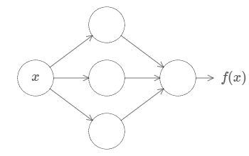
This result holds even if the function has many inputs, \(f=f(x_1,\ldots,x_m)\), and many outputs. For instance, here’s a network computing a function with \(m=3\) inputs and \(n=2\) outputs:
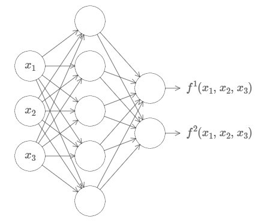
This result tells us that neural networks have a kind of universality. No matter what function we want to compute, we know that there is a neural network which can do the job.
What’s more, this universality theorem holds even if we restrict our networks to have just a single layer intermediate between the input and the output neurons – a so-called single hidden layer. So even very simple network architectures can be extremely powerful.
The universality theorem is well known by people who use neural networks. But why it’s true is not so widely understood. Most of the explanations available are quite technical. For instance, one of the original papers proving the result57 did so using the Hahn-Banach theorem, the Riesz Representation theorem, and some Fourier analysis. If you’re a mathematician the argument is not difficult to follow, but it’s not so easy for most people. That’s a pity, since the underlying reasons for universality are simple and beautiful.
In this chapter I give a simple and mostly visual explanation of the universality theorem. We’ll go step by step through the underlying ideas. You’ll understand why it’s true that neural networks can compute any function. You’ll understand some of the limitations of the result. And you’ll understand how the result relates to deep neural networks.
To follow the material in the chapter, you do not need to have read earlier chapters in this book. Instead, the chapter is structured to be enjoyable as a self-contained essay. Provided you have just a little basic familiarity with neural networks, you should be able to follow the explanation. I will, however, provide occasional links to earlier material, to help fill in any gaps in your knowledge.
Universality theorems are a commonplace in computer science, so much so that we sometimes forget how astonishing they are. But it’s worth reminding ourselves: the ability to compute an arbitrary function is truly remarkable. Almost any process you can imagine can be thought of as function computation. Consider the problem of naming a piece of music based on a short sample of the piece. That can be thought of as computing a function. Or consider the problem of translating a Chinese text into English. Again, that can be thought of as computing a function58. Or consider the problem of taking an mp4 movie file and generating a description of the plot of the movie, and a discussion of the quality of the acting. Again, that can be thought of as a kind of function computation59 Universality means that, in principle, neural networks can do all these things and many more.
Of course, just because we know a neural network exists that can (say) translate Chinese text into English, that doesn’t mean we have good techniques for constructing or even recognizing such a network. This limitation applies also to traditional universality theorems for models such as Boolean circuits. But, as we’ve seen earlier in the book, neural networks have powerful algorithms for learning functions. That combination of learning algorithms + universality is an attractive mix. Up to now, the book has focused on the learning algorithms. In this chapter, we focus on universality, and what it means.
Before explaining why the universality theorem is true, I want to mention two caveats to the informal statement “a neural network can compute any function”.
First, this doesn’t mean that a network can be used to exactly compute any function. Rather, we can get an approximation that is as good as we want. By increasing the number of hidden neurons we can improve the approximation. For instance, earlier (see [basic_network_precursor]) I illustrated a network computing some function \(f(x)\) using three hidden neurons. For most functions only a low-quality approximation will be possible using three hidden neurons. By increasing the number of hidden neurons (say, to five) we can typically get a better approximation:
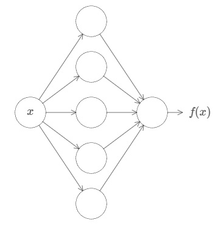
And we can do still better by further increasing the number of hidden neurons.
To make this statement more precise, suppose we’re given a function \(f(x)\) which we’d like to compute to within some desired accuracy \(\epsilon>0\). The guarantee is that by using enough hidden neurons we can always find a neural network whose output \(g(x)\) satisfies \(|g(x)-f(x)|<\epsilon\), for all inputs \(x\). In other words, the approximation will be good to within the desired accuracy for every possible input.
The second caveat is that the class of functions which can be approximated in the way described are the continuous functions. If a function is discontinuous, i.e., makes sudden, sharp jumps, then it won’t in general be possible to approximate using a neural net. This is not surprising, since our neural networks compute continuous functions of their input. However, even if the function we’d really like to compute is discontinuous, it’s often the case that a continuous approximation is good enough. If that’s so, then we can use a neural network. In practice, this is not usually an important limitation.
Summing up, a more precise statement of the universality theorem is that neural networks with a single hidden layer can be used to approximate any continuous function to any desired precision. In this chapter we’ll actually prove a slightly weaker version of this result, using two hidden layers instead of one. In the problems I’ll briefly outline how the explanation can, with a few tweaks, be adapted to give a proof which uses only a single hidden layer.
To understand why the universality theorem is true, let’s start by understanding how to construct a neural network which approximates a function with just one input and one output:
It turns out that this is the core of the problem of universality. Once we’ve understood this special case it’s actually pretty easy to extend to functions with many inputs and many outputs.
To build insight into how to construct a network to compute \(f\), let’s start with a network containing just a single hidden layer, with two hidden neurons, and an output layer containing a single output neuron:
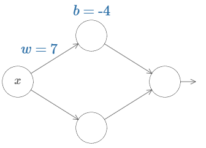
To get a feel for how components in the network work, let’s focus on the top hidden neuron. In the diagram below, click on the weight, \(w\), and drag the mouse a little ways to the right to increase \(w\). You can immediately see how the function computed by the top hidden neuron changes:
As we learnt earlier in the book, what’s being computed by the hidden neuron is \(\sigma(wx+b)\), where \(\sigma(z)\equiv1/(1+e^{-z})\) is the sigmoid function. Up to now, we’ve made frequent use of this algebraic form. But for the proof of universality we will obtain more insight by ignoring the algebra entirely, and instead manipulating and observing the shape shown in the graph. This won’t just give us a better feel for what’s going on, it will also give us a proof60 of universality that applies to activation functions other than the sigmoid function. We can simplify our analysis quite a bit by increasing the weight so much that the output really is a step function, to a very good approximation. Below I’ve plotted the output from the top hidden neuron when the weight is \(w=999\).
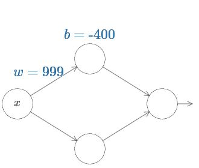
It’s actually quite a bit easier to work with step functions than general sigmoid functions. The reason is that in the output layer we add up contributions from all the hidden neurons. It’s easy to analyze the sum of a bunch of step functions, but rather more difficult to reason about what happens when you add up a bunch of sigmoid shaped curves. And so it makes things much easier to assume that our hidden neurons are outputting step functions. More concretely, we do this by fixing the weight \(w\) to be some very large value, and then setting the position of the step by modifying the bias. Of course, treating the output as a step function is an approximation, but it’s a very good approximation, and for now we’ll treat it as exact. I’ll come back later to discuss the impact of deviations from this approximation.
At what value of \(x\) does the step occur? Put another way, how does the position of the step depend upon the weight and bias?
To answer this question, try modifying the weight and bias in the diagram above (you may need to scroll back a bit). Can you figure out how the position of the step depends on \(w\) and \(b\)? With a little work you should be able to convince yourself that the position of the step is proportional to \(b\), and inversely proportional to \(w\).
In fact, the step is at position \(s=-b/w\), as you can see by modifying the weight and bias in the following diagram:
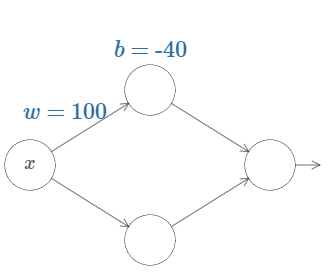
It will greatly simplify our lives to describe hidden neurons using just a single parameter, \(s\), which is the step position, \(s=-b/w\). Try modifying \(s\) in the following diagram, in order to get used to the new parameterization:
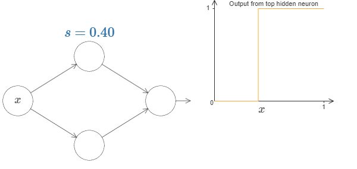
As noted above, we’ve implicitly set the weight \(w\) on the input to be some large value – big enough that the step function is a very good approximation. We can easily convert a neuron parameterized in this way back into the conventional model, by choosing the bias \(b=-ws\).
Up to now we’ve been focusing on the output from just the top hidden neuron. Let’s take a look at the behavior of the entire network. In particular, we’ll suppose the hidden neurons are computing step functions parameterized by step points \(s_1\) (top neuron) and \(s_2\) (bottom neuron). And they’ll have respective output weights \(w_1\) and \(w_2\). Here’s the network:
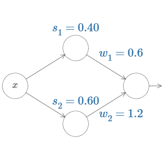
What’s being plotted on the right is the weighted output \(w_1a_1+w_2a_2\) from the hidden layer. Here, \(a_1\) and \(a_2\) are the outputs from the top and bottom hidden neurons, respectively61. These outputs are denoted with as because they’re often known as the neurons’ activations.
Try increasing and decreasing the step point \(s_1\) of the top hidden neuron. Get a feel for how this changes the weighted output from the hidden layer. It’s particularly worth understanding what happens when \(s_1\) goes past \(s_2\). You’ll see that the graph changes shape when this happens, since we have moved from a situation where the top hidden neuron is the first to be activated to a situation where the bottom hidden neuron is the first to be activated.
Similarly, try manipulating the step point \(s_2\) of the bottom hidden neuron, and get a feel for how this changes the combined output from the hidden neurons.
Try increasing and decreasing each of the output weights. Notice how this rescales the contribution from the respective hidden neurons. What happens when one of the weights is zero?
Finally, try setting \(w_1\) to be 0.8 and \(w_2\) to be -0.8. You get a “bump” function, which starts at point \(s_1\), ends at point \(s_2\), and has height 0.8. For instance, the weighted output might look like this:
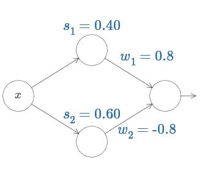
Of course, we can rescale the bump to have any height at all. Let’s use a single parameter, \(h\), to denote the height. To reduce clutter I’ll also remove the “\(s_1=\ldots\)” and “\(w_1=\ldots\)” notations.
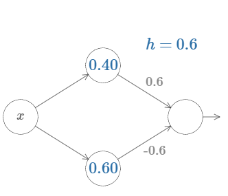
Try changing the value of \(h\) up and down, to see how the height of the bump changes. Try changing the height so it’s negative, and observe what happens. And try changing the step points to see how that changes the shape of the bump.
You’ll notice, by the way, that we’re using our neurons in a way that can be thought of not just in graphical terms, but in more conventional programming terms, as a kind of if-then-else statement, e.g.:
if input >= step point:
add 1 to the weighted output
else:
add 0 to the weighted outputFor the most part I’m going to stick with the graphical point of view. But in what follows you may sometimes find it helpful to switch points of view, and think about things in terms of if-then-else.
We can use our bump-making trick to get two bumps, by gluing two pairs of hidden neurons together into the same network:
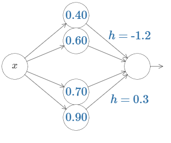
I’ve suppressed the weights here, simply writing the \(h\) values for each pair of hidden neurons. Try increasing and decreasing both \(h\) values, and observe how it changes the graph. Move the bumps around by changing the step points.
More generally, we can use this idea to get as many peaks as we want, of any height. In particular, we can divide the interval [0,1] up into a large number, \(N\), of subintervals, and use \(N\) pairs of hidden neurons to set up peaks of any desired height. Let’s see how this works for \(N=5\). That’s quite a few neurons, so I’m going to pack things in a bit. Apologies for the complexity of the diagram: I could hide the complexity by abstracting away further, but I think it’s worth putting up with a little complexity, for the sake of getting a more concrete feel for how these networks work.
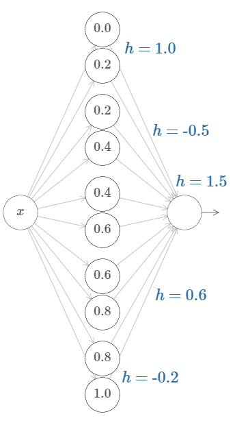
You can see that there are five pairs of hidden neurons. The step points for the respective pairs of neurons are \(0,1/5\), then \(1/5,2/5\), and so on, out to \(4/5,5/5\). These values are fixed – they make it so we get five evenly spaced bumps on the graph.
Each pair of neurons has a value of \(h\) associated to it. Remember, the connections output from the neurons have weights \(h\) and \(-h\) (not marked). Click on one of the \(h\) values, and drag the mouse to the right or left to change the value. As you do so, watch the function change. By changing the output weights we’re actually designing the function!
Contrariwise, try clicking on the graph, and dragging up or down to change the height of any of the bump functions. As you change the heights, you can see the corresponding change in \(h\) values. And, although it’s not shown, there is also a change in the corresponding output weights, which are \(+h\) and \(-h\).
In other words, we can directly manipulate the function appearing in the graph on the right, and see that reflected in the \(h\) values on the left. A fun thing to do is to hold the mouse button down and drag the mouse from one side of the graph to the other. As you do this you draw out a function, and get to watch the parameters in the neural network adapt.
Time for a challenge.
Let’s think back to the function I plotted at the beginning of the chapter:
I didn’t say it at the time, but what I plotted is actually the function \[f(x)=0.2+0.4x^2+0.3x\sin(15x)+0.05\cos(50x),\tag{113}\label{eq:113}\] plotted over \(x\) from 0 to 1, and with the \(y\) axis taking values from 0 to 1.
That’s obviously not a trivial function.
You’re going to figure out how to compute it using a neural network.
In our networks above we’ve been analyzing the weighted combination \(\sum_jw_ja_j\) output from the hidden neurons. We now know how to get a lot of control over this quantity. But, as I noted earlier, this quantity is not what’s output from the network. What’s output from the network is \(\sigma\left(\sum_jw_ja_j+b\right)\) where \(b\) is the bias on the output neuron. Is there some way we can achieve control over the actual output from the network?
The solution is to design a neural network whose hidden layer has a weighted output given by \(\sigma^{-1} \circ f(x)\), where \(\sigma^{-1}\) is just the inverse of the \(\sigma\) function. That is, we want the weighted output from the hidden layer to be:
If we can do this, then the output from the network as a whole will be a good approximation to \(f(x)\)62.
Your challenge, then, is to design a neural network to approximate the goal function shown just above. To learn as much as possible, I want you to solve the problem twice. The first time, please click on the graph, directly adjusting the heights of the different bump functions. You should find it fairly easy to get a good match to the goal function. How well you’re doing is measured by the average deviation between the goal function and the function the network is actually computing. Your challenge is to drive the average deviation as low as possible. You complete the challenge when you drive the average deviation to 0.40 or below63
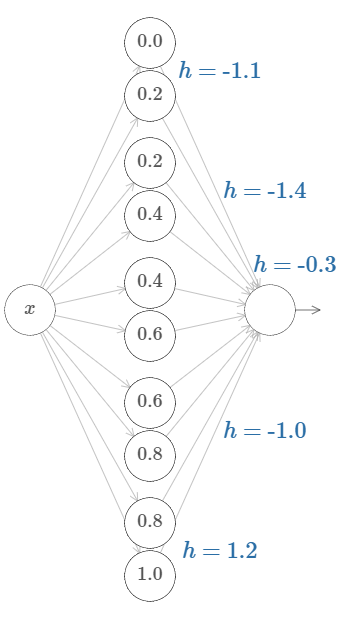
You’ve now figured out all the elements necessary for the network to approximately compute the function \(f(x)\)! It’s only a coarse approximation, but we could easily do much better, merely by increasing the number of pairs of hidden neurons, allowing more bumps.
In particular, it’s easy to convert all the data we have found back into the standard parametrization used for neural networks. Let me just recap quickly how that works.
The first layer of weights all have some large, constant value, say \(w=1000\).
The biases on the hidden neurons are just \(b=-ws\). So, for instance, for the second hidden neuron \(s=0.2\) becomes \(b=-1000\times0.2=-200\).
The final layer of weights are determined by the \(h\) values. So, for instance, the value you’ve chosen above for the first \(h\), \(h= -0.6\), means that the output weights from the top two hidden neurons are \(-0.6\) and 0.6, respectively. And so on, for the entire layer of output weights.
Finally, the bias on the output neuron is 0.
That’s everything: we now have a complete description of a neural network which does a pretty good job computing our original goal function. And we understand how to improve the quality of the approximation by improving the number of hidden neurons.
What’s more, there was nothing special about our original goal function, \(f(x)=0.2+0.4x^2+0.3\sin(15x)+0.05\cos(50x)\). We could have used this procedure for any continuous function from \([0,1]\) to \([0,1]\). In essence, we’re using our single-layer neural networks to build a lookup table for the function. And we’ll be able to build on this idea to provide a general proof of universality.
Let’s extend our results to the case of many input variables. This sounds complicated, but all the ideas we need can be understood in the case of just two inputs. So let’s address the two-input case.
We’ll start by considering what happens when we have two inputs to a neuron:
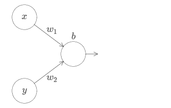
Here, we have inputs \(x\) and \(y\), with corresponding weights \(w_1\) and \(w_2\), and a bias \(b\) on the neuron. Let’s set the weight \(w_2\) to 0, and then play around with the first weight, \(w_1\), and the bias, \(b\), to see how they affect the output from the neuron:
As you can see, with \(w_2=0\) the input \(y\) makes no difference to the output from the neuron. It’s as though \(x\) is the only input.
Given this, what do you think happens when we increase the weight \(w_1\) to \(w_1=100\), with \(w_2\) remaining 0? If you don’t immediately see the answer, ponder the question for a bit, and see if you can figure out what happens. Then try it out and see if you’re right. I’ve shown what happens in the following movie:
Just as in our earlier discussion, as the input weight gets larger the output approaches a step function. The difference is that now the step function is in three dimensions. Also as before, we can move the location of the step point around by modifying the bias. The actual location of the step point is \(s_x\equiv-b/w_1\).
Let’s redo the above using the position of the step as the parameter:
Here, we assume the weight on the \(x\) input has some large value – I’ve used \(w_1=1000\) – and the weight \(w_2=0\). The number on the neuron is the step point, and the little \(x\) above the number reminds us that the step is in the \(x\) direction. Of course, it’s also possible to get a step function in the \(y\) direction, by making the weight on the \(y\) input very large (say, \(w_2=1000\)), and the weight on the \(x\) equal to 0, i.e., \(w_1=0\):
The number on the neuron is again the step point, and in this case the little \(y\) above the number reminds us that the step is in the \(y\) direction. I could have explicitly marked the weights on the \(x\) and \(y\) inputs, but decided not to, since it would make the diagram rather cluttered. But do keep in mind that the little \(y\) marker implicitly tells us that the \(y\) weight is large, and the \(x\) weight is 0.
We can use the step functions we’ve just constructed to compute a three-dimensional bump function. To do this, we use two neurons, each computing a step function in the \(x\) direction. Then we combine those step functions with weight \(h\) and \(-h\), respectively, where \(h\) is the desired height of the bump. It’s all illustrated in the following diagram:
Try changing the value of the height, h. Observe how it relates to the weights in the network. And see how it changes the height of the bump function on the right.
Also, try changing the step point 0.30 associated to the top hidden neuron. Witness how it changes the shape of the bump. What happens when you move it past the step point 0.70 associated to the bottom hidden neuron?
We’ve figured out how to make a bump function in the \(x\) direction. Of course, we can easily make a bump function in the \(y\) direction, by using two step functions in the \(y\) direction. Recall that we do this by making the weight large on the \(y\) input, and the weight 0 on the \(x\) input. Here’s the result:
This looks nearly identical to the earlier network! The only thing explicitly shown as changing is that there’s now little \(y\) markers on our hidden neurons. That reminds us that they’re producing \(y\) step functions, not \(x\) step functions, and so the weight is very large on the \(y\) input, and zero on the \(x\) input, not vice versa. As before, I decided not to show this explicitly, in order to avoid clutter. Let’s consider what happens when we add up two bump functions, one in the \(x\) direction, the other in the \(y\) direction, both of height \(h\):
To simplify the diagram I’ve dropped the connections with zero weight. For now, I’ve left in the little \(x\) and \(y\) markers on the hidden neurons, to remind you in what directions the bump functions are being computed. We’ll drop even those markers later, since they’re implied by the input variable. Try varying the parameter \(h\). As you can see, this causes the output weights to change, and also the heights of both the \(x\) and \(y\) bump functions. What we’ve built looks a little like a tower function:
If we could build such tower functions, then we could use them to approximate arbitrary functions, just by adding up many towers of different heights, and in different locations:
Of course, we haven’t yet figured out how to build a tower function. What we have constructed looks like a central tower, of height \(2h\), with a surrounding plateau, of height \(h\).
But we can make a tower function. Remember that earlier we saw neurons can be used to implement a type of ’inlineif-then-else statement:
if input >= threshold:
output 1
else:
output 0That was for a neuron with just a single input. What we want is to apply a similar idea to the combined output from the hidden neurons:
if combined output from hidden neurons >= threshold:
output 1
else:
output 0If we choose the threshold appropriately — say, a value of \(3h/2\), which is sandwiched between the height of the plateau and the height of the central tower – we could squash the plateau down to zero, and leave just the tower standing.
Can you see how to do this? Try experimenting with the following network to figure it out. Note that we’re now plotting the output from the entire network, not just the weighted output from the hidden layer. This means we add a bias term to the weighted output from the hidden layer, and apply the sigma function. Can you find values for \(h\) and \(b\) which produce a tower? This is a bit tricky, so if you think about this for a while and remain stuck, here’s two hints: (1) To get the output neuron to show the right kind of if-then-else behaviour, we need the input weights (all \(h\) or \(-h\)) to be large; and (2) the value of \(b\) determines the scale of the if-then-else threshold.
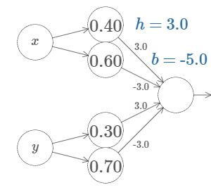
With our initial parameters, the output looks like a flattened version of the earlier diagram, with its tower and plateau. To get the desired behaviour, we increase the parameter \(h\) until it becomes large. That gives the if-then-else thresholding behaviour. Second, to get the threshold right, we’ll choose \(b\approx-3h/2\). Try it, and see how it works!
Here’s what it looks like, when we use \(h=10\):
Even for this relatively modest value of \(h\), we get a pretty good tower function. And, of course, we can make it as good as we want by increasing \(h\) still further, and keeping the bias as \(b=-3h/2\).
Let’s try gluing two such networks together, in order to compute two different tower functions. To make the respective roles of the two sub-networks clear I’ve put them in separate boxes, below: each box computes a tower function, using the technique described above. The graph on the right shows the weighted output from the second hidden layer, that is, it’s a weighted combination of tower functions.
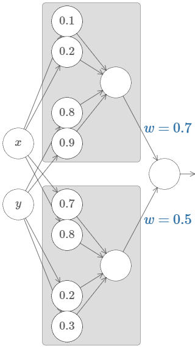
In particular, you can see that by modifying the weights in the final layer you can change the height of the output towers.
The same idea can be used to compute as many towers as we like. We can also make them as thin as we like, and whatever height we like. As a result, we can ensure that the weighted output from the second hidden layer approximates any desired function of two variables:
In particular, by making the weighted output from the second hidden layer a good approximation to \(\sigma^{-1}\circ f\), we ensure the output from our network will be a good approximation to any desired function, \(f\).
What about functions of more than two variables?
Let’s try three variables \(x_1,x_2,x_3\). The following network can be used to compute a tower function in four dimensions:
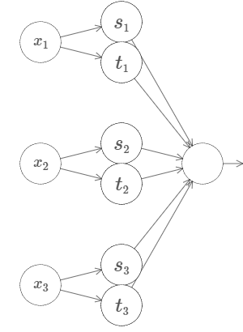
Here, the \(x_1,x_2,x_3\) denote inputs to the network. The \(s_1,t_1\) and so on are step points for neurons – that is, all the weights in the first layer are large, and the biases are set to give the step points \(s_1,t_1,s_2,\ldots\). The weights in the second layer alternate \(+h\),\(-h\), where \(h\) is some very large number. And the output bias is \(-5h/2\).
This network computes a function which is 1 provided three conditions are met: \(x_1\) is between \(s_1\) and \(t_1\); \(x_2\) is between \(s_2\) and \(t_2\); and \(x_3\) is between \(s_3\) and \(t_3\). The network is 0 everywhere else. That is, it’s a kind of tower which is 1 in a little region of input space, and 0 everywhere else.
By gluing together many such networks we can get as many towers as we want, and so approximate an arbitrary function of three variables. Exactly the same idea works in \(m\) dimensions. The only change needed is to make the output bias \((-m+1/2)h\), in order to get the right kind of sandwiching behavior to level the plateau.
Okay, so we now know how to use neural networks to approximate a real-valued function of many variables. What about vector-valued functions \(f(x_1,\ldots,x_m)\in R^n\)? Of course, such a function can be regarded as just \(n\) separate real-valued functions, \(f^1(x_1,\ldots,x_m)\),\(f^2(x_1,\ldots,x_m)\), and so on. So we create a network approximating \(f^1\), another network for \(f^2\), and so on. And then we simply glue all the networks together. So that’s also easy to cope with.
We’ve seen how to use networks with two hidden layers to approximate an arbitrary function. Can you find a proof showing that it’s possible with just a single hidden layer? As a hint, try working in the case of just two input variables, and showing that: (a) it’s possible to get step functions not just in the \(x\) or \(y\) directions, but in an arbitrary direction; (b) by adding up many of the constructions from part (a) it’s possible to approximate a tower function which is circular in shape, rather than rectangular; (c) using these circular towers, it’s possible to approximate an arbitrary function. To do part (c) it may help to use ideas from a bit later in this chapter.
We’ve proved that networks made up of sigmoid neurons can compute any function. Recall that in a sigmoid neuron the inputs \(x_1,x_2,\ldots\) result in the output \(\sigma\)(\(\sum_jw_jx_j+b\)), where \(w_j\) are the weights, \(b\) is the bias, and \(\sigma\) is the sigmoid function:
What if we consider a different type of neuron, one using some other activation function, \(s(z)\):
That is, we’ll assume that if our neurons have inputs \(x_1,x_2,\ldots\), weights \(w_1,w_2,\ldots\) and bias \(b\), then the output is \(s(\sum_jw_jx_j+b)\).
We can use this activation function to get a step function, just as we did with the sigmoid. Try ramping up the weight in the following, say to \(w=100\):
Just as with the sigmoid, this causes the activation function to contract, and ultimately it becomes a very good approximation to a step function. Try changing the bias, and you’ll see that we can set the position of the step to be wherever we choose. And so we can use all the same tricks as before to compute any desired function.
What properties does \(s(z)\) need to satisfy in order for this to work? We do need to assume that \(s(z)\) is well-defined as \(z\to\infty\) and \(z\to\infty\). These two limits are the two values taken on by our step function. We also need to assume that these limits are different from one another. If they weren’t, there’d be no step, simply a flat graph! But provided the activation function \(s(z)\) satisfies these properties, neurons based on such an activation function are universal for computation.
Earlier in the book we met another type of neuron known as a rectified linear unit. Explain why such neurons don’t satisfy the conditions just given for universality. Find a proof of universality showing that rectified linear units are universal for computation.
Suppose we consider linear neurons, i.e., neurons with the activation function \(s(z)=z\). Explain why linear neurons don’t satisfy the conditions just given for universality. Show that such neurons can’t be used to do universal computation.
Up to now, we’ve been assuming that our neurons can produce step functions exactly. That’s a pretty good approximation, but it is only an approximation. In fact, there will be a narrow window of failure, illustrated in the following graph, in which the function behaves very differently from a step function:
In these windows of failure the explanation I’ve given for universality will fail.
Now, it’s not a terrible failure. By making the weights input to the neurons big enough we can make these windows of failure as small as we like. Certainly, we can make the window much narrower than I’ve shown above – narrower, indeed, than our eye could see. So perhaps we might not worry too much about this problem.
Nonetheless, it’d be nice to have some way of addressing the problem.
In fact, the problem turns out to be easy to fix. Let’s look at the fix for neural networks computing functions with just one input and one output. The same ideas work also to address the problem when there are more inputs and outputs.
In particular, suppose we want our network to compute some function, \(f\). As before, we do this by trying to design our network so that the weighted output from our hidden layer of neurons is \(\sigma^{-1}\circ f(x)\):
If we were to do this using the technique described earlier, we’d use the hidden neurons to produce a sequence of bump functions:

Again, I’ve exaggerated the size of the windows of failure, in order to make them easier to see. It should be pretty clear that if we add all these bump functions up we’ll end up with a reasonable approximation to \(\sigma^{-1}\circ f(x)\), except within the windows of failure.
Suppose that instead of using the approximation just described, we use a set of hidden neurons to compute an approximation to half our original goal function, i.e., to \(\sigma^{-1}\circ f(x)/2\). Of course, this looks just like a scaled down version of the last graph:

And suppose we use another set of hidden neurons to compute an approximation to \(\sigma^{-1}\circ f(x)/2\), but with the bases of the bumps shifted by half the width of a bump:
Now we have two different approximations to \(\sigma^{-1}\circ f(x)/2\). If we add up the two approximations we’ll get an overall approximation to \(\sigma^{-1}\circ f(x)\). That overall approximation will still have failures in small windows. But the problem will be much less than before. The reason is that points in a failure window for one approximation won’t be in a failure window for the other. And so the approximation will be a factor roughly 2 better in those windows.
We could do even better by adding up a large number, \(M\), of overlapping approximations to the function \(\sigma^{-1}\circ f(x)/M\). Provided the windows of failure are narrow enough, a point will only ever be in one window of failure. And provided we’re using a large enough number \(M\) of overlapping approximations, the result will be an excellent overall approximation.
The explanation for universality we’ve discussed is certainly not a practical prescription for how to compute using neural networks! In this, it’s much like proofs of universality for NAND gates and the like. For this reason, I’ve focused mostly on trying to make the construction clear and easy to follow, and not on optimizing the details of the construction. However, you may find it a fun and instructive exercise to see if you can improve the construction.
Although the result isn’t directly useful in constructing networks, it’s important because it takes off the table the question of whether any particular function is computable using a neural network. The answer to that question is always “yes”. So the right question to ask is not whether any particular function is computable, but rather what’s a good way to compute the function.
The universality construction we’ve developed uses just two hidden layers to compute an arbitrary function. Furthermore, as we’ve discussed, it’s possible to get the same result with just a single hidden layer. Given this, you might wonder why we would ever be interested in deep networks, i.e., networks with many hidden layers. Can’t we simply replace those networks with shallow, single hidden layer networks?
While in principle that’s possible, there are good practical reasons to use deep networks. As argued in , deep networks have a hierarchical structure which makes them particularly well adapted to learn the hierarchies of knowledge that seem to be useful in solving real-world problems. Put more concretely, when attacking problems such as image recognition, it helps to use a system that understands not just individual pixels, but also increasingly more complex concepts: from edges to simple geometric shapes, all the way up through complex, multi-object scenes. In later chapters, we’ll see evidence suggesting that deep networks do a better job than shallow networks at learning such hierarchies of knowledge. To sum up: universality tells us that neural networks can compute any function; and empirical evidence suggests that deep networks are the networks best adapted to learn the functions useful in solving many real-world problems.
Imagine you’re an engineer who has been asked to design a computer from scratch. One day you’re working away in your office, designing logical circuits, setting out AND gates, OR gates, and so on, when your boss walks in with bad news. The customer has just added a surprising design requirement: the circuit for the entire computer must be just two layers deep:
You’re dumbfounded, and tell your boss: “The customer is crazy!”
Your boss replies: “I think they’re crazy, too. But what the customer wants, they get.”
In fact, there’s a limited sense in which the customer isn’t crazy. Suppose you’re allowed to use a special logical gate which lets you AND together as many inputs as you want. And you’re also allowed a many-input NAND gate, that is, a gate which can AND multiple inputs and then negate the output. With these special gates it turns out to be possible to compute any function at all using a circuit that’s just two layers deep.
But just because something is possible doesn’t make it a good idea. In practice, when solving circuit design problems (or most any kind of algorithmic problem), we usually start by figuring out how to solve sub-problems, and then gradually integrate the solutions. In other words, we build up to a solution through multiple layers of abstraction.
For instance, suppose we’re designing a logical circuit to multiply two numbers. Chances are we want to build it up out of sub-circuits doing operations like adding two numbers. The sub-circuits for adding two numbers will, in turn, be built up out of sub-sub-circuits for adding two bits. Very roughly speaking our circuit will look like:
That is, our final circuit contains at least three layers of circuit elements. In fact, it’ll probably contain more than three layers, as we break the sub-tasks down into smaller units than I’ve described. But you get the general idea.
So deep circuits make the process of design easier. But they’re not just helpful for design. There are, in fact, mathematical proofs showing that for some functions very shallow circuits require exponentially more circuit elements to compute than do deep circuits. For instance, a famous series of papers in the early 1980s64 showed that computing the parity of a set of bits requires exponentially many gates, if done with a shallow circuit. On the other hand, if you use deeper circuits it’s easy to compute the parity using a small circuit: you just compute the parity of pairs of bits, then use those results to compute the parity of pairs of pairs of bits, and so on, building up quickly to the overall parity. Deep circuits thus can be intrinsically much more powerful than shallow circuits.
Up to now, this book has approached neural networks like the crazy customer. Almost all the networks we’ve worked with have just a single hidden layer of neurons (plus the input and output layers):
These simple networks have been remarkably useful: in earlier chapters we used networks like this to classify handwritten digits with better than 98 percent accuracy! Nonetheless, intuitively we’d expect networks with many more hidden layers to be more powerful:
Such networks could use the intermediate layers to build up multiple layers of abstraction, just as we do in Boolean circuits. For instance, if we’re doing visual pattern recognition, then the neurons in the first layer might learn to recognize edges, the neurons in the second layer could learn to recognize more complex shapes, say triangle or rectangles, built up from edges. The third layer would then recognize still more complex shapes. And so on. These multiple layers of abstraction seem likely to give deep networks a compelling advantage in learning to solve complex pattern recognition problems. Moreover, just as in the case of circuits, there are theoretical results suggesting that deep networks are intrinsically more powerful than shallow networks65.
How can we train such deep networks? In this chapter, we’ll try training deep networks using our workhorse learning algorithm – stochastic gradient descent by backpropagation. But we’ll run into trouble, with our deep networks not performing much (if at all) better than shallow networks.
That failure seems surprising in the light of the discussion above. Rather than give up on deep networks, we’ll dig down and try to understand what’s making our deep networks hard to train. When we look closely, we’ll discover that the different layers in our deep network are learning at vastly different speeds. In particular, when later layers in the network are learning well, early layers often get stuck during training, learning almost nothing at all. This stuckness isn’t simply due to bad luck. Rather, we’ll discover there are fundamental reasons the learning slowdown occurs, connected to our use of gradient-based learning techniques.
As we delve into the problem more deeply, we’ll learn that the opposite phenomenon can also occur: the early layers may be learning well, but later layers can become stuck. In fact, we’ll find that there’s an intrinsic instability associated to learning by gradient descent in deep, many-layer neural networks. This instability tends to result in either the early or the later layers getting stuck during training.
This all sounds like bad news. But by delving into these difficulties, we can begin to gain insight into what’s required to train deep networks effectively. And so these investigations are good preparation for the next chapter, where we’ll use deep learning to attack image recognition problems.
So, what goes wrong when we try to train a deep network?
To answer that question, let’s first revisit the case of a network with just a single hidden layer. As per usual, we’ll use the MNIST digit classification problem as our playground for learning and experimentation66.
If you wish, you can follow along by training networks on your computer. It is also, of course, fine to just read along. If you do wish to follow live, then you’ll need Python 2.7, Numpy, and a copy of the code, which you can get by cloning the relevant repository from the command line:
git clone https://github.com/mnielsen/neural-networks-and-deep-learning.gitIf you don’t use git then you can download the data and code here. You’ll need to change into the src subdirectory. Then, from a Python shell we load the MNIST data:
>>> import mnist_loader
>>> training_data, validation_data, test_data = \
... mnist_loader.load_data_wrapper()We set up our network:
>>> import network2
>>> net = network2.Network([784, 30, 10])This network has 784 neurons in the input layer, corresponding to the \(28\times28=784\) pixels in the input image. We use 30 hidden neurons, as well as 10 output neurons, corresponding to the 10 possible classifications for the MNIST digits (‘0’, ‘1’, ‘2’,..., ‘9’).
Let’s try training our network for 30 complete epochs, using mini-batches of 10 training examples at a time, a learning rate \(\eta=0.1\), and regularization parameter \(\lambda=5.0\). As we train we’ll monitor the classification accuracy on the validation_data67:
>>> net.SGD(training_data, 30, 10, 0.1, lmbda=5.0,
... evaluation_data=validation_data, monitor_evaluation_accuracy=True)We get a classification accuracy of 96.48 percent (or thereabouts – it’ll vary a bit from run to run), comparable to our earlier results with a similar configuration.
Now, let’s add another hidden layer, also with 30 neurons in it, and try training with the same hyper-parameters:
>>> net = network2.Network([784, 30, 30, 10])
>>> net.SGD(training_data, 30, 10, 0.1, lmbda=5.0,
... evaluation_data=validation_data, monitor_evaluation_accuracy=True)This gives an improved classification accuracy, 96.90 percent. That’s encouraging: a little more depth is helping. Let’s add another 30-neuron hidden layer:
>>> net = network2.Network([784, 30, 30, 30, 10])
>>> net.SGD(training_data, 30, 10, 0.1, lmbda=5.0,
... evaluation_data=validation_data, monitor_evaluation_accuracy=True)That doesn’t help at all. In fact, the result drops back down to 96.57 percent, close to our original shallow network. And suppose we insert one further hidden layer:
>>> net = network2.Network([784, 30, 30, 30, 30, 10])
>>> net.SGD(training_data, 30, 10, 0.1, lmbda=5.0,
... evaluation_data=validation_data, monitor_evaluation_accuracy=True)The classification accuracy drops again, to 96.53 percent. That’s probably not a statistically significant drop, but it’s not encouraging, either.
This behaviour seems strange. Intuitively, extra hidden layers ought to make the network able to learn more complex classification functions, and thus do a better job classifying. Certainly, things shouldn’t get worse, since the extra layers can, in the worst case, simply do nothing68. But that’s not what’s going on.
So what is going on? Let’s assume that the extra hidden layers really could help in principle, and the problem is that our learning algorithm isn’t finding the right weights and biases. We’d like to figure out what’s going wrong in our learning algorithm, and how to do better.
To get some insight into what’s going wrong, let’s visualize how the network learns. Below, I’ve plotted part of a [784,30,30,10] network, i.e., a network with two hidden layers, each containing 30 hidden neurons. Each neuron in the diagram has a little bar on it, representing how quickly that neuron is changing as the network learns. A big bar means the neuron’s weights and bias are changing rapidly, while a small bar means the weights and bias are changing slowly. More precisely, the bars denote the gradient \(\partial C/\partial b\) for each neuron, i.e., the rate of change of the cost with respect to the neuron’s bias. Back in Chapter 2 we saw that this gradient quantity controlled not just how rapidly the bias changes during learning, but also how rapidly the weights input to the neuron change, too. Don’t worry if you don’t recall the details: the thing to keep in mind is simply that these bars show how quickly each neuron’s weights and bias are changing as the network learns.
To keep the diagram simple, I’ve shown just the top six neurons in the two hidden layers. I’ve omitted the input neurons, since they’ve got no weights or biases to learn. I’ve also omitted the output neurons, since we’re doing layer-wise comparisons, and it makes most sense to compare layers with the same number of neurons. The results are plotted at the very beginning of training, i.e., immediately after the network is initialized. Here they are69:
The network was initialized randomly, and so it’s not surprising that there’s a lot of variation in how rapidly the neurons learn. Still, one thing that jumps out is that the bars in the second hidden layer are mostly much larger than the bars in the first hidden layer. As a result, the neurons in the second hidden layer will learn quite a bit faster than the neurons in the first hidden layer. Is this merely a coincidence, or are the neurons in the second hidden layer likely to learn faster than neurons in the first hidden layer in general?
To determine whether this is the case, it helps to have a global way of comparing the speed of learning in the first and second hidden layers. To do this, let’s denote the gradient as \(\delta^l_j=\partial C/\partial b^l_j\), i.e., the gradient for the \(j\)-th neuron in the \(l\)-th layer70 We can think of the gradient \(\delta^1\) as a vector whose entries determine how quickly the first hidden layer learns, and \(\delta^2\) as a vector whose entries determine how quickly the second hidden layer learns. We’ll then use the lengths of these vectors as (rough!) global measures of the speed at which the layers are learning. So,for instance, the length \(\|\delta^1\|\) measures the speed at which the first hidden layer is learning, while the length \(\|\delta^2\|\) measures the speed at which the second hidden layer is learning.
With these definitions, and in the same configuration as was plotted above, we find \(\|\delta^1\| = 0.07...\) and \(\|\delta^2\|=0.31...\). So this confirms our earlier suspicion: the neurons in the second hidden layer really are learning much faster than the neurons in the first hidden layer.
What happens if we add more hidden layers? If we have three hidden layers, in a [784,30,30,30,10] network, then the respective speeds of learning turn out to be 0.012, 0.060, and 0.283. Again, earlier hidden layers are learning much slower than later hidden layers. Suppose we add yet another layer with 30 hidden neurons. In that case, the respective speeds of learning are 0.003, 0.017, 0.070, and 0.285. The pattern holds: early layers learn slower than later layers.
We’ve been looking at the speed of learning at the start of training, that is, just after the networks are initialized. How does the speed of learning change as we train our networks? Let’s return to look at the network with just two hidden layers. The speed of learning changes as follows:

To generate these results, I used batch gradient descent with just 1,000 training images, trained over 500 epochs. This is a bit different than the way we usually train – I’ve used no mini-batches, and just 1,000 training images, rather than the full 50,000 image training set. I’m not trying to do anything sneaky, or pull the wool over your eyes, but it turns out that using mini-batch stochastic gradient descent gives much noisier (albeit very similar, when you average away the noise) results. Using the parameters I’ve chosen is an easy way of smoothing the results out, so we can see what’s going on.
In any case, as you can see the two layers start out learning at very different speeds (as we already know). The speed in both layers then drops very quickly, before rebounding. But through it all, the first hidden layer learns much more slowly than the second hidden layer.
What about more complex networks? Here’s the results of a similar experiment, but this time with three hidden layers (a [784,30,30,30,10] network):

Again, early hidden layers learn much more slowly than later hidden layers. Finally, let’s add a fourth hidden layer (a [784,30,30,30,30,10] network), and see what happens when we train:

Again, early hidden layers learn much more slowly than later hidden layers. In this case, the first hidden layer is learning roughly 100 times slower than the final hidden layer. No wonder we were having trouble training these networks earlier!
We have here an important observation: in at least some deep neural networks, the gradient tends to get smaller as we move backward through the hidden layers. This means that neurons in the earlier layers learn much more slowly than neurons in later layers. And while we’ve seen this in just a single network, there are fundamental reasons why this happens in many neural networks. The phenomenon is known as the vanishing gradient problem71.
Why does the vanishing gradient problem occur? Are there ways we can avoid it? And how should we deal with it in training deep neural networks? In fact, we’ll learn shortly that it’s not inevitable, although the alternative is not very attractive, either: sometimes the gradient gets much larger in earlier layers! This is the exploding gradient problem, and it’s not much better news than the vanishing gradient problem. More generally, it turns out that the gradient in deep neural networks is unstable, tending to either explode or vanish in earlier layers. This instability is a fundamental problem for gradient-based learning in deep neural networks. It’s something we need to understand, and, if possible, take steps to address.
One response to vanishing (or unstable) gradients is to wonder if they’re really such a problem. Momentarily stepping away from neural nets, imagine we were trying to numerically minimize a function \(f(x)\) of a single variable. Wouldn’t it be good news if the derivative \(f'(x)\) was small? Wouldn’t that mean we were already near an extremum? In a similar way, might the small gradient in early layers of a deep network mean that we don’t need to do much adjustment of the weights and biases?
Of course, this isn’t the case. Recall that we randomly initialized the weight and biases in the network. It is extremely unlikely our initial weights and biases will do a good job at whatever it is we want our network to do. To be concrete, consider the first layer of weights in a [784,30,30,30,10] network for the MNIST problem. The random initialization means the first layer throws away most information about the input image. Even if later layers have been extensively trained, they will still find it extremely difficult to identify the input image, simply because they don’t have enough information. And so it can’t possibly be the case that not much learning needs to be done in the first layer. If we’re going to train deep networks, we need to figure out how to address the vanishing gradient problem.
To get insight into why the vanishing gradient problem occurs, let’s consider the simplest deep neural network: one with just a single neuron in each layer. Here’s a network with three hidden layers:

Here, \(w_1,w_2,\ldots\) are the weights, \(b_1,b_2,\ldots\) are the biases, and \(C\) is some cost function. Just to remind you how this works, the output \(a_j\) from the \(j\)-th neuron is \(\sigma(z_j)\), where \(\sigma\) is the usual sigmoid activation function, and \(z_j=w_ja_{j-1}+b_j\) is the weighted input to the neuron. I’ve drawn the cost \(C\) at the end to emphasize that the cost is a function of the network’s output, \(a_4\): if the actual output from the network is close to the desired output, then the cost will be low, while if it’s far away, the cost will be high.
We’re going to study the gradient \(\partial C/\partial b_1\) associated to the first hidden neuron. We’ll figure out an expression for \(\partial C/\partial b_1\), and by studying that expression we’ll understand why the vanishing gradient problem occurs.
I’ll start by simply showing you the expression for \(\partial C/\partial b_1\). It looks forbidding, but it’s actually got a simple structure, which I’ll describe in a moment. Here’s the expression (ignore the network, for now, and note that \(\sigma'\) is just the derivative of the \(\sigma\) function):
The structure in the expression is as follows: there is a \(\sigma'(z_j)\) term in the product for each neuron in the network; a weight \(w_j\) term for each weight in the network; and a final \(\partial C/\partial a_4\) term, corresponding to the cost function at the end. Notice that I’ve placed each term in the expression above the corresponding part of the network. So the network itself is a mnemonic for the expression.
You’re welcome to take this expression for granted, and skip to the discussion of how it relates to the vanishing gradient problem. There’s no harm in doing this, since the expression is a special case of our earlier discussion of backpropagation. But there’s also a simple explanation of why the expression is true, and so it’s fun (and perhaps enlightening) to take a look at that explanation.
Imagine we make a small change \(\Delta b_1\) in the bias \(b_1\). That will set off a cascading series of changes in the rest of the network. First, it causes a change \(\Delta a_1\) in the output from the first hidden neuron. That, in turn, will cause a change \(\Delta z_2\) in the weighted input to the second hidden neuron. Then a change \(\Delta a_2\) in the output from the second hidden neuron. And so on, all the way through to a change \(\Delta C\) in the cost at the output. We have \[\begin{aligned} \frac{\partial C}{\partial b_1} \approx \frac{\Delta C}{\Delta b_1}.\tag{114}\label{eq:114}\end{aligned}\] This suggests that we can figure out an expression for the gradient \(\partial C/\partial b_1\) by carefully tracking the effect of each step in this cascade.
To do this, let’s think about how \(\Delta b_1\) causes the output \(a_1\) from the first hidden neuron to change. We have \(a_1=\sigma(z_1)=\sigma(w_1a_0+b_1)\), so \[\begin{aligned} \Delta a_1 \approx \frac{\partial \sigma(w_1 a_0+b_1)}{\partial b_1} \Delta b_1 = \sigma'(z_1) \Delta b_1. \tag{116}\label{eq:116}\end{aligned}\] That \(\sigma'(z_1)\) term should look familiar: it’s the first term in our claimed expression for the gradient \(\partial C/\partial b_1\). Intuitively, this term converts a change \(\Delta b_1\) in the bias into a change \(\Delta a_1\) in the output activation. That change \(\Delta a_1\) in turn causes a change in the weighted input \(z_2=w_2a_1+b_2\) to the second hidden neuron: \[\begin{aligned} \Delta z_2 \approx \frac{\partial z_2}{\partial a_1} \Delta a_1 = w_2 \Delta a_1. \tag{118}\label{eq:118}\end{aligned}\] Combining our expressions for \(\Delta z_2\) and \(\Delta a_1\), we see how the change in the bias \(b_1\) propagates along the network to affect \(z_2\): \[\begin{aligned} \Delta z_2 \approx \sigma'(z_1) w_2 \Delta b_1.\tag{119}\label{eq:119}\end{aligned}\] Again, that should look familiar: we’ve now got the first two terms in our claimed expression for the gradient \(\partial C/\partial b_1\).
We can keep going in this fashion, tracking the way changes propagate through the rest of the network. At each neuron we pick up a \(\sigma'(z_j)\) term, and through each weight we pick up a \(w_j\) term. The end result is an expression relating the final change \(\Delta C\) in cost to the initial change \(\Delta b_1\) in the bias: \[\begin{aligned} \Delta C \approx \sigma'(z_1) w_2 \sigma'(z_2) \ldots \sigma'(z_4) \frac{\partial C}{\partial a_4} \Delta b_1. \tag{120}\label{eq:120}\end{aligned}\] Dividing by \(\Delta b_1\) we do indeed get the desired expression for the gradient: \[\begin{aligned} \frac{\partial C}{\partial b_1} = \sigma'(z_1) w_2 \sigma'(z_2) \ldots \sigma'(z_4) \frac{\partial C}{\partial a_4}. \tag{121}\label{eq:121}\end{aligned}\]
Why the vanishing gradient problem occurs: To understand why the vanishing gradient problem occurs, let’s explicitly write out the entire expression for the gradient: \[\begin{aligned} \frac{\partial C}{\partial b_1} = \sigma'(z_1) \, w_2 \sigma'(z_2) \,w_3 \sigma'(z_3) \, w_4 \sigma'(z_4) \, \frac{\partial C}{\partial a_4}.\tag{122}\label{eq:122}\end{aligned}\] Excepting the very last term, this expression is a product of terms of the form \(w_j\sigma'(z_j)\). To understand how each of those terms behave, let’s look at a plot of the function \(\sigma'\):
The derivative reaches a maximum at \(\sigma'(0)=1/4\). Now, if we use our standard approach to initializing the weights in the network, then we’ll choose the weights using a Gaussian with mean 0 and standard deviation 1. So the weights will usually satisfy \(|w_j|<1\). Putting these observations together, we see that the terms \(w_j\sigma'(z_j)\) will usually satisfy \(|w_j\sigma'(z_j)|<1/4\). And when we take a product of many such terms, the product will tend to exponentially decrease: the more terms, the smaller the product will be. This is starting to smell like a possible explanation for the vanishing gradient problem.
To make this all a bit more explicit, let’s compare the expression for \(\partial C/\partial b_1\) to an expression for the gradient with respect to a later bias, say \(\partial C/\partial b_3\). Of course, we haven’t explicitly worked out an expression for \(\partial C/\partial b_3\), but it follows the same pattern described above for \(\partial C/\partial b_1\). Here’s the comparison of the two expressions:
The two expressions share many terms. But the gradient \(\partial C/\partial b_1\) includes two extra terms each of the form \(w_j\sigma'(z_j)\). As we’ve seen, such terms are typically less than 1/4 in magnitude. And so the gradient \(\partial C/\partial b_1\) will usually be a factor of 16 (or more) smaller than \(\partial C/\partial b_3\). This is the essential origin of the vanishing gradient problem.
Of course, this is an informal argument, not a rigorous proof that the vanishing gradient problem will occur. There are several possible escape clauses. In particular, we might wonder whether the weights \(w_j\) could grow during training. If they do, it’s possible the terms \(w_j\sigma'(z_j)\) in the product will no longer satisfy \(|w_j\sigma'(z_j)|<1/4\). Indeed, if the terms get large enough – greater than 1 – then we will no longer have a vanishing gradient problem. Instead, the gradient will actually grow exponentially as we move backward through the layers. Instead of a vanishing gradient problem, we’ll have an exploding gradient problem.
The exploding gradient problem: Let’s look at an explicit example where exploding gradients occur. The example is somewhat contrived: I’m going to fix parameters in the network in just the right way to ensure we get an exploding gradient. But even though the example is contrived, it has the virtue of firmly establishing that exploding gradients aren’t merely a hypothetical possibility, they really can happen.
There are two steps to getting an exploding gradient. First, we choose all the weights in the network to be large, say \(w_1=w_2=w_3=w_4=100\). Second, we’ll choose the biases so that the \(\sigma'(z_j)\) terms are not too small. That’s actually pretty easy to do: all we need do is choose the biases to ensure that the weighted input to each neuron is \(z_j=0\) (and so \(\sigma'(z_j)=1/4\)). So, for instance, we want \(z_1=w_1a_0+b_1=0\). We can achieve this by setting \(b_1=-100\times a_0\). We can use the same idea to select the other biases. When we do this, we see that all the terms \(w_j\sigma'(z_j)\) are equal to \(100\times1/4=25\). With these choices we get an exploding gradient.
The unstable gradient problem: The fundamental problem here isn’t so much the vanishing gradient problem or the exploding gradient problem. It’s that the gradient in early layers is the product of terms from all the later layers. When there are many layers, that’s an intrinsically unstable situation. The only way all layers can learn at close to the same speed is if all those products of terms come close to balancing out. Without some mechanism or underlying reason for that balancing to occur, it’s highly unlikely to happen simply by chance. In short, the real problem here is that neural networks suffer from an unstable gradient problem. As a result, if we use standard gradient-based learning techniques, different layers in the network will tend to learn at wildly different speeds.
In our discussion of the vanishing gradient problem, we made use of the fact that \(|\sigma'(z)|<1/4\). Suppose we used a different activation function, one whose derivative could be much larger. Would that help us avoid the unstable gradient problem?
The prevalence of the vanishing gradient problem: We’ve seen that the gradient can either vanish or explode in the early layers of a deep network. In fact, when using sigmoid neurons the gradient will usually vanish. To see why, consider again the expression \(|w\sigma'(z)|\). To avoid the vanishing gradient problem we need \(|w\sigma'(z)|\geq1\). You might think this could happen easily if \(w\) is very large. However, it’s more difficult than it looks. The reason is that the \(\sigma'(z)\) term also depends on \(w\): \(\sigma'(z)=\sigma'(wa+b)\), where \(a\) is the input activation. So when we make \(w\) large, we need to be careful that we’re not simultaneously making \(\sigma'(wa+b)\) small. That turns out to be a considerable constraint. The reason is that when we make \(w\) large we tend to make \(wa+b\) very large. Looking at the graph of \(\sigma'\) you can see that this puts us off in the “wings” of the \(\sigma'\) function, where it takes very small values. The only way to avoid this is if the input activation falls within a fairly narrow range of values (this qualitative explanation is made quantitative in the first problem below). Sometimes that will chance to happen. More often, though, it does not happen. And so in the generic case we have vanishing gradients.
Consider the product \(|w\sigma'(wa+b)|\). Suppose \(|w\sigma'(wa+b)|\geq1\). (1) Argue that this can only ever occur if \(|w|≥\geq4\). (2) Supposing that \(|w|\geq4\), consider the set of input activations a for which \(|w\sigma'(wa+b)|\geq1\). Show that the set of a satisfying that constraint can range over an interval no greater in width than \[% 2|w|ln(|w|(1+1-4/|w|--------√)2-1).(123) \frac2{|w|}\ln\left(\frac{|w|(1+\sqrt{1-4/|w|})}{2}-1\right).\tag{123}\label{eq:123}\] (3) Show numerically that the above expression bounding the width of the range is greatest at \(|w|\approx6.9\), where it takes a value \(\approx0.45\). And so even given that everything lines up just perfectly, we still have a fairly narrow range of input activations which can avoid the vanishing gradient problem.
Identity neuron:[sec:5.2.1] Consider a neuron with a single input, \(x\), a corresponding weight, \(w_1\), a bias \(b\), and a weight \(w_2\) on the output. Show that by choosing the weights and bias appropriately, we can ensure \(w_2\sigma(w_1x+b)\approx x\) for \(x\in[0,1]\). Such a neuron can thus be used as a kind of identity neuron, that is, a neuron whose output is the same (up to rescaling by a weight factor) as its input. Hint: It helps to rewrite \(x=1/2+\Delta\), to assume \(w_1\) is small, and to use a Taylor series expansion in \(w_1\Delta\).
We’ve been studying toy networks, with just one neuron in each hidden layer. What about more complex deep networks, with many neurons in each hidden layer?
In fact, much the same behaviour occurs in such networks. In the earlier chapter on backpropagation we saw that the gradient in the \(l\)-th layer of an L layer network is given by:
\[\begin{aligned} \delta^l = \Sigma'(z^l) (w^{l+1})^T \Sigma'(z^{l+1}) (w^{l+2})^T \ldots\Sigma'(z^L) \nabla_a C \tag{124}\label{eq:124}\end{aligned}\] Here, \(\Sigma'(z^l)\) is a diagonal matrix whose entries are the \(\sigma'(z)\) values for the weighted inputs to the \(l\)-th layer. The \(w^l\) are the weight matrices for the different layers. And \(\nabla_aC\) is the vector of partial derivatives of \(C\) with respect to the output activations.
This is a much more complicated expression than in the single-neuron case. Still, if you look closely, the essential form is very similar, with lots of pairs of the form \((w^j)^T\Sigma'(z^j)\). What’s more, the matrices \(\Sigma'(z^j)\) have small entries on the diagonal, none larger than 1/4. Provided the weight matrices \(w^j\) aren’t too large, each additional term \((w^j)^T\Sigma'(z^l)\) tends to make the gradient vector smaller, leading to a vanishing gradient. More generally, the large number of terms in the product tends to lead to an unstable gradient, just as in our earlier example. In practice, empirically it is typically found in sigmoid networks that gradients vanish exponentially quickly in earlier layers. As a result, learning slows down in those layers. This slowdown isn’t merely an accident or an inconvenience: it’s a fundamental consequence of the approach we’re taking to learning.
In this chapter we’ve focused on vanishing gradients – and, more generally, unstable gradients – as an obstacle to deep learning. In fact, unstable gradients are just one obstacle to deep learning, albeit an important fundamental obstacle. Much ongoing research aims to better understand the challenges that can occur when training deep networks. I won’t comprehensively summarize that work here, but just want to briefly mention a couple of papers, to give you the flavor of some of the questions people are asking.
As a first example, in 2010 Glorot and Bengio72 found evidence suggesting that the use of sigmoid activation functions can cause problems training deep networks. In particular, they found evidence that the use of sigmoids will cause the activations in the final hidden layer to saturate near 0 early in training, substantially slowing down learning. They suggested some alternative activation functions, which appear not to suffer as much from this saturation problem.
As a second example, in 2013 Sutskever, Martens, Dahl and Hinton73 studied the impact on deep learning of both the random weight initialization and the momentum schedule in momentum-based stochastic gradient descent. In both cases, making good choices made a substantial difference in the ability to train deep networks.
These examples suggest that “What makes deep networks hard to train?” is a complex question. In this chapter, we’ve focused on the instabilities associated to gradient-based learning in deep networks. The results in the last two paragraphs suggest that there is also a role played by the choice of activation function, the way weights are initialized, and even details of how learning by gradient descent is implemented. And, of course, choice of network architecture and other hyper-parameters is also important. Thus, many factors can play a role in making deep networks hard to train, and understanding all those factors is still a subject of ongoing research. This all seems rather downbeat and pessimism-inducing. But the good news is that in the next chapter we’ll turn that around, and develop several approaches to deep learning that to some extent manage to overcome or route around all these challenges.
In the last chapter we learned that deep neural networks are often much harder to train than shallow neural networks. That’s unfortunate, since we have good reason to believe that if we could train deep nets they’d be much more powerful than shallow nets. But while the news from the last chapter is discouraging, we won’t let it stop us. In this chapter, we’ll develop techniques which can be used to train deep networks, and apply them in practice. We’ll also look at the broader picture, briefly reviewing recent progress on using deep nets for image recognition, speech recognition, and other applications. And we’ll take a brief, speculative look at what the future may hold for neural nets, and for artificial intelligence.
The chapter is a long one. To help you navigate, let’s take a tour. The sections are only loosely coupled, so provided you have some basic familiarity with neural nets, you can jump to whatever most interests you.
The main part of the chapter is an introduction to one of the most widely used types of deep network: . We’ll work through a detailed example – code and all – of using convolutional nets to solve the problem of classifying handwritten digits from the MNIST data set:

We’ll start our account of convolutional networks with the shallow networks used to attack this problem earlier in the book. Through many iterations we’ll build up more and more powerful networks. As we go we’ll explore many powerful techniques: convolutions, pooling, the use of GPUs to do far more training than we did with our shallow networks, the algorithmic expansion of our training data (to reduce overfitting), the use of the dropout technique (also to reduce overfitting), the use of ensembles of networks, and others. The result will be a system that offers near-human performance. Of the 10,000 MNIST test images – images not seen during training! – our system will classify 9,967 correctly. Here’s a peek at the 33 images which are misclassified. Note that the correct classification is in the top right; our program’s classification is in the bottom right:

Many of these are tough even for a human to classify. Consider, for example, the third image in the top row. To me it looks more like a “9” than an “8”, which is the official classification. Our network also thinks it’s a “9”. This kind of “error” is at the very least understandable, and perhaps even commendable. We conclude our discussion of image recognition with a survey of some of the spectacular recent progress using networks (particularly convolutional nets) to do image recognition.
The remainder of the chapter discusses deep learning from a broader and less detailed perspective. We’ll briefly survey other models of neural networks, such as recurrent neural nets and long short-term memory units, and how such models can be applied to problems in speech recognition, natural language processing, and other areas. And we’ll speculate about the future of neural networks and deep learning, ranging from ideas like intention-driven user interfaces, to the role of deep learning in artificial intelligence.
The chapter builds on the earlier chapters in the book, making use of and integrating ideas such as backpropagation, regularization, the softmax function, and so on. However, to read the chapter you don’t need to have worked in detail through all the earlier chapters. It will, however, help to have read Chapter 1, on the basics of neural networks. When I use concepts from Chapters 2 to 5, I provide links so you can familiarize yourself, if necessary.
It’s worth noting what the chapter is not. It’s not a tutorial on the latest and greatest neural networks libraries. Nor are we going to be training deep networks with dozens of layers to solve problems at the very leading edge. Rather, the focus is on understanding some of the core principles behind deep neural networks, and applying them in the simple, easy-to-understand context of the MNIST problem. Put another way: the chapter is not going to bring you right up to the frontier. Rather, the intent of this and earlier chapters is to focus on fundamentals, and so to prepare you to understand a wide range of current work.
In earlier chapters, we taught our neural networks to do a pretty good job recognizing images of handwritten digits:
We did this using networks in which adjacent network layers are fully connected to one another. That is, every neuron in the network is connected to every neuron in adjacent layers:
In particular, for each pixel in the input image, we encoded the pixel’s intensity as the value for a corresponding neuron in the input layer. For the \(28\times28\) pixel images we’ve been using, this means our network has 784 (\(=28\times28\)) input neurons. We then trained the network’s weights and biases so that the network’s output would – we hope! – correctly identify the input image: ‘0’, ‘1’, ‘2’, ..., ‘8’, or ‘9’.
Our earlier networks work pretty well: we’ve obtained a classification accuracy better than 98 percent, using training and test data from the MNIST handwritten digit data set. But upon reflection, it’s strange to use networks with fully-connected layers to classify images. The reason is that such a network architecture does not take into account the spatial structure of the images. For instance, it treats input pixels which are far apart and close together on exactly the same footing. Such concepts of spatial structure must instead be inferred from the training data. But what if, instead of starting with a network architecture which is tabula rasa, we used an architecture which tries to take advantage of the spatial structure? In this section I describe convolutional neural networks74. These networks use a special architecture which is particularly well-adapted to classify images. Using this architecture makes convolutional networks fast to train. This, in turn, helps us train deep, many-layer networks, which are very good at classifying images. Today, deep convolutional networks or some close variant are used in most neural networks for image recognition.
Convolutional neural networks use three basic ideas: local receptive fields, shared weights, and pooling. Let’s look at each of these ideas in turn.
Local receptive fields: In the fully-connected layers shown earlier, the inputs were depicted as a vertical line of neurons. In a convolutional net, it’ll help to think instead of the inputs as a \(28\times28\) square of neurons, whose values correspond to the \(28\times28\) pixel intensities we’re using as inputs:
As per usual, we’ll connect the input pixels to a layer of hidden neurons. But we won’t connect every input pixel to every hidden neuron. Instead, we only make connections in small, localized regions of the input image.
To be more precise, each neuron in the first hidden layer will be connected to a small region of the input neurons, say, for example, a \(5\times5\) region, corresponding to 25 input pixels. So, for a particular hidden neuron, we might have connections that look like this:
That region in the input image is called the local receptive field for the hidden neuron. It’s a little window on the input pixels. Each connection learns a weight. And the hidden neuron learns an overall bias as well. You can think of that particular hidden neuron as learning to analyze its particular local receptive field.
We then slide the local receptive field across the entire input image. For each local receptive field, there is a different hidden neuron in the first hidden layer. To illustrate this concretely, let’s start with a local receptive field in the top-left corner:
Then we slide the local receptive field over by one pixel to the right (i.e., by one neuron), to connect to a second hidden neuron:
And so on, building up the first hidden layer. Note that if we have a \(28\times28\) input image, and \(5\times5\) local receptive fields, then there will be \(24\times24\) neurons in the hidden layer. This is because we can only move the local receptive field 23 neurons across (or 23 neurons down), before colliding with the right-hand side (or bottom) of the input image.
I’ve shown the local receptive field being moved by one pixel at a time. In fact, sometimes a different stride length is used. For instance, we might move the local receptive field 2 pixels to the right (or down), in which case we’d say a stride length of 2 is used. In this chapter we’ll mostly stick with stride length 1, but it’s worth knowing that people sometimes experiment with different stride lengths75.
Shared weights and biases: I’ve said that each hidden neuron has a bias and \(5\times5\) weights connected to its local receptive field. What I did not yet mention is that we’re going to use the same weights and bias for each of the \(24\times24\) hidden neurons. In other words, for the \(j,k\)-th hidden neuron, the output is: \[\begin{aligned} \sigma\left(b + \sum_{l=0}^4 \sum_{m=0}^4 w_{l,m} a_{j+l, k+m} \right).\tag{125}\label{eq:125}\end{aligned}\] Here, \(\sigma\) is the neural activation function – perhaps the sigmoid function we used in earlier chapters. \(b\) is the shared value for the bias. \(w_{l,m}\) is a \(5\times5\) array of shared weights. And, finally, we use \(a_{x,y}\) to denote the input activation at position \(x,y\).
This means that all the neurons in the first hidden layer detect exactly the same feature76, just at different locations in the input image. To see why this makes sense, suppose the weights and bias are such that the hidden neuron can pick out, say, a vertical edge in a particular local receptive field. That ability is also likely to be useful at other places in the image. And so it is useful to apply the same feature detector everywhere in the image. To put it in slightly more abstract terms, convolutional networks are well adapted to the translation invariance of images: move a picture of a cat (say) a little ways, and it’s still an image of a cat77.
For this reason, we sometimes call the map from the input layer to the hidden layer a feature map. We call the weights defining the feature map the shared weights. And we call the bias defining the feature map in this way the shared bias. The shared weights and bias are often said to define a kernel or filter. In the literature, people sometimes use these terms in slightly different ways, and for that reason I’m not going to be more precise; rather, in a moment, we’ll look at some concrete examples.
The network structure I’ve described so far can detect just a single kind of localized feature. To do image recognition we’ll need more than one feature map. And so a complete convolutional layer consists of several different feature maps:
In the example shown, there are 3 feature maps. Each feature map is defined by a set of \(5\times5\) shared weights, and a single shared bias. The result is that the network can detect 3 different kinds of features, with each feature being detectable across the entire image. I’ve shown just 3 feature maps, to keep the diagram above simple. However, in practice convolutional networks may use more (and perhaps many more) feature maps. One of the early convolutional networks, LeNet-5, used 6 feature maps, each associated to a \(5\times5\) local receptive field, to recognize MNIST digits. So the example illustrated above is actually pretty close to LeNet-5. In the examples we develop later in the chapter we’ll use convolutional layers with 20 and 40 feature maps. Let’s take a quick peek at some of the features which are learned.

The 20 images correspond to 20 different feature maps (or filters, or kernels). Each map is represented as a \(5\times5\) block image, corresponding to the \(5\times5\) weights in the local receptive field. Whiter blocks mean a smaller (typically, more negative) weight, so the feature map responds less to corresponding input pixels. Darker blocks mean a larger weight, so the feature map responds more to the corresponding input pixels. Very roughly speaking, the images above show the type of features the convolutional layer responds to.
So what can we conclude from these feature maps? It’s clear there is spatial structure here beyond what we’d expect at random: many of the features have clear sub-regions of light and dark. That shows our network really is learning things related to the spatial structure. However, beyond that, it’s difficult to see what these feature detectors are learning. Certainly, we’re not learning (say) the Gabor filters which have been used in many traditional approaches to image recognition. In fact, there’s now a lot of work on better understanding the features learnt by convolutional networks. If you’re interested in following up on that work, I suggest starting with the paper Visualizing and Understanding Convolutional Networks by Matthew Zeiler and Rob Fergus (2013).
A big advantage of sharing weights and biases is that it greatly reduces the number of parameters involved in a convolutional network. For each feature map we need \(25=5\times5\) shared weights, plus a single shared bias. So each feature map requires 26 parameters. If we have 20 feature maps that’s a total of \(20\times26=520\) parameters defining the convolutional layer. By comparison, suppose we had a fully connected first layer, with \(784=28\times28\) input neurons, and a relatively modest 30 hidden neurons, as we used in many of the examples earlier in the book. That’s a total of \(784\times30\) weights, plus an extra 30 biases, for a total of 23,550 parameters. In other words, the fully-connected layer would have more than 40 times as many parameters as the convolutional layer.
Of course, we can’t really do a direct comparison between the number of parameters, since the two models are different in essential ways. But, intuitively, it seems likely that the use of translation invariance by the convolutional layer will reduce the number of parameters it needs to get the same performance as the fully-connected model. That, in turn, will result in faster training for the convolutional model, and, ultimately, will help us build deep networks using convolutional layers.
Incidentally, the name convolutional comes from the fact that the operation in Equation (125) is sometimes known as a convolution. A little more precisely, people sometimes write that equation as \(a^1=\sigma(b+w\ast a^0)\), where \(a^1\) denotes the set of output activations from one feature map, \(a^0\) is the set of input activations, and \(\ast\) is called a convolution operation. We’re not going to make any deep use of the mathematics of convolutions, so you don’t need to worry too much about this connection. But it’s worth at least knowing where the name comes from.
Pooling layers: In addition to the convolutional layers just described, convolutional neural networks also contain pooling layers. Pooling layers are usually used immediately after convolutional layers. What the pooling layers do is simplify the information in the output from the convolutional layer.
In detail, a pooling layer takes each feature map78 output from the convolutional layer and prepares a condensed feature map. For instance, each unit in the pooling layer may summarize a region of (say) \(2\times2\) neurons in the previous layer. As a concrete example, one common procedure for pooling is known as max-pooling. In max-pooling, a pooling unit simply outputs the maximum activation in the \(2\times2\) input region, as illustrated in the following diagram:
Note that since we have \(24\times24\) neurons output from the convolutional layer, after pooling we have \(12\times12\) neurons.
As mentioned above, the convolutional layer usually involves more than a single feature map. We apply max-pooling to each feature map separately. So if there were three feature maps, the combined convolutional and max-pooling layers would look like:
We can think of max-pooling as a way for the network to ask whether a given feature is found anywhere in a region of the image. It then throws away the exact positional information. The intuition is that once a feature has been found, its exact location isn’t as important as its rough location relative to other features. A big benefit is that there are many fewer pooled features, and so this helps reduce the number of parameters needed in later layers.
Max-pooling isn’t the only technique used for pooling. Another common approach is known as L2 pooling. Here, instead of taking the maximum activation of a \(2\times2\) region of neurons, we take the square root of the sum of the squares of the activations in the \(2\times2\) region. While the details are different, the intuition is similar to max-pooling: L2 pooling is a way of condensing information from the convolutional layer. In practice, both techniques have been widely used. And sometimes people use other types of pooling operation. If you’re really trying to optimize performance, you may use validation data to compare several different approaches to pooling, and choose the approach which works best. But we’re not going to worry about that kind of detailed optimization.
Putting it all together: We can now put all these ideas together to form a complete convolutional neural network. It’s similar to the architecture we were just looking at, but has the addition of a layer of 10 output neurons, corresponding to the 10 possible values for MNIST digits (‘0’, ‘1’, ‘2’, etc):
The network begins with \(28\times28\) input neurons, which are used to encode the pixel intensities for the MNIST image. This is then followed by a convolutional layer using a \(5\times5\) local receptive field and 3 feature maps. The result is a layer of \(3\times24\times24\) hidden feature neurons. The next step is a max-pooling layer, applied to \(2\times2\) regions, across each of the 3 feature maps. The result is a layer of \(3\times12\times12\) hidden feature neurons.
The final layer of connections in the network is a fully-connected layer. That is, this layer connects every neuron from the max-pooled layer to every one of the 10 output neurons. This fully-connected architecture is the same as we used in earlier chapters. Note, however, that in the diagram above, I’ve used a single arrow, for simplicity, rather than showing all the connections. Of course, you can easily imagine the connections.
This convolutional architecture is quite different to the architectures used in earlier chapters. But the overall picture is similar: a network made of many simple units, whose behaviors are determined by their weights and biases. And the overall goal is still the same: to use training data to train the network’s weights and biases so that the network does a good job classifying input digits.
In particular, just as earlier in the book, we will train our network using stochastic gradient descent and backpropagation. This mostly proceeds in exactly the same way as in earlier chapters. However, we do need to make a few modifications to the backpropagation procedure. The reason is that our earlier derivation of backpropagation was for networks with fully-connected layers. Fortunately, it’s straightforward to modify the derivation for convolutional and max-pooling layers. If you’d like to understand the details, then I invite you to work through the following problem. Be warned that the problem will take some time to work through, unless you’ve really internalized the earlier derivation of backpropagation (in which case it’s easy).
Backpropagation in a convolutional network The core equations of backpropagation in a network with fully-connected layers are ([eq:BP1])–([eq:BP4]). Suppose we have a network containing a convolutional layer, a max-pooling layer, and a fully-connected output layer, as in the network discussed above. How are the equations of backpropagation modified?
We’ve now seen the core ideas behind convolutional neural networks. Let’s look at how they work in practice, by implementing some convolutional networks, and applying them to the MNIST digit classification problem. The program we’ll use to do this is called network3.py, and it’s an improved version of the programs network.py and network2.py developed in earlier chapters79. If you wish to follow along, the code is available on GitHub. Note that we’ll work through the code for network3.py itself in the next section. In this section, we’ll use network3.py as a library to build convolutional networks.
The programs network.py and network2.py were implemented using Python and the matrix library Numpy. Those programs worked from first principles, and got right down into the details of backpropagation, stochastic gradient descent, and so on. But now that we understand those details, for network3.py we’re going to use a machine learning library known as Theano80. Using Theano makes it easy to implement backpropagation for convolutional neural networks, since it automatically computes all the mappings involved. Theano is also quite a bit faster than our earlier code (which was written to be easy to understand, not fast), and this makes it practical to train more complex networks. In particular, one great feature of Theano is that it can run code on either a CPU or, if available, a GPU. Running on a GPU provides a substantial speedup and, again, helps make it practical to train more complex networks.
If you wish to follow along, then you’ll need to get Theano running on your system. To install Theano, follow the instructions at the project’s homepage. The examples which follow were run using Theano 0.681. Some were run under Mac OS X Yosemite, with no GPU. Some were run on Ubuntu 14.04, with an NVIDIA GPU. And some of the experiments were run under both. To get network3.py running you’ll need to set the GPU flag to either True or False (as appropriate) in the network3.py source. Beyond that, to get Theano up and running on a GPU you may find the instructions here helpful. There are also tutorials on the web, easily found using Google, which can help you get things working. If you don’t have a GPU available locally, then you may wish to look into Amazon Web Services EC2 G2 spot instances. Note that even with a GPU the code will take some time to execute. Many of the experiments take from minutes to hours to run. On a CPU it may take days to run the most complex of the experiments. As in earlier chapters, I suggest setting things running, and continuing to read, occasionally coming back to check the output from the code. If you’re using a CPU, you may wish to reduce the number of training epochs for the more complex experiments, or perhaps omit them entirely.
To get a baseline, we’ll start with a shallow architecture using just a single hidden layer, containing 100 hidden neurons. We’ll train for 60 epochs, using a learning rate of \(\eta=0.1\), a mini-batch size of 10, and no regularization. Here we go82:
>>> import network3
>>> from network3 import Network
>>> from network3 import ConvPoolLayer, FullyConnectedLayer, SoftmaxLayer
>>> training_data, validation_data, test_data = network3.load_data_shared()
>>> mini_batch_size = 10
>>> net = Network([FullyConnectedLayer(n_in=784, n_out=100),SoftmaxLayer(n_in=100, n_out=10)], mini_batch_size)
>>> net.SGD(training_data, 60, mini_batch_size, 0.1, validation_data, test_data)I obtained a best classification accuracy of 97.80 percent. This is the classification accuracy on the test_data, evaluated at the training epoch where we get the best classification accuracy on the validation_data. Using the validation data to decide when to evaluate the test accuracy helps avoid overfitting to the test data (see this earlier discussion of the use of validation data). We will follow this practice below. Your results may vary slightly, since the network’s weights and biases are randomly initialized83.
This 97.80 percent accuracy is close to the 98.04 percent accuracy obtained back in Chapter 3, using a similar network architecture and learning hyper-parameters. In particular, both examples used a shallow network, with a single hidden layer containing 100 hidden neurons. Both also trained for 60 epochs, used a mini-batch size of 10, and a learning rate of \(\eta=0.1\).
There were, however, two differences in the earlier network. First, we regularized the earlier network, to help reduce the effects of overfitting. Regularizing the current network does improve the accuracies, but the gain is only small, and so we’ll hold off worrying about regularization until later. Second, while the final layer in the earlier network used sigmoid activations and the cross-entropy cost function, the current network uses a softmax final layer, and the log-likelihood cost function. As explained in Chapter 3 this isn’t a big change. I haven’t made this switch for any particularly deep reason – mostly, I’ve done it because softmax plus log-likelihood cost is more common in modern image classification networks.
Can we do better than these results using a deeper network architecture?
Let’s begin by inserting a convolutional layer, right at the beginning of the network. We’ll use 5 by 5 local receptive fields, a stride length of 1, and 20 feature maps. We’ll also insert a max-pooling layer, which combines the features using 2 by 2 pooling windows. So the overall network architecture looks much like the architecture discussed in the last section, but with an extra fully-connected layer:

In this architecture, we can think of the convolutional and pooling layers as learning about local spatial structure in the input training image, while the later, fully-connected layer learns at a more abstract level, integrating global information from across the entire image. This is a common pattern in convolutional neural networks.
Let’s train such a network, and see how it performs84:
>>> net = Network([
ConvPoolLayer(
image_shape=(mini_batch_size, 1, 28, 28),
filter_shape=(20, 1, 5, 5),
poolsize=(2, 2)),
FullyConnectedLayer(n_in=20*12*12, n_out=100),
SoftmaxLayer(n_in=100, n_out=10)], mini_batch_size)
>>> net.SGD(training_data, 60, mini_batch_size, 0.1, validation_data, test_data) That gets us to 98.78 percent accuracy, which is a considerable improvement over any of our previous results. Indeed, we’ve reduced our error rate by better than a third, which is a great improvement.
In specifying the network structure, I’ve treated the convolutional and pooling layers as a single layer. Whether they’re regarded as separate layers or as a single layer is to some extent a matter of taste. network3.py treats them as a single layer because it makes the code for network3.py a little more compact. However, it is easy to modify network3.py so the layers can be specified separately, if desired.
What classification accuracy do you get if you omit the fully-connected layer, and just use the convolutional-pooling layer and softmax layer? Does the inclusion of the fully-connected layer help?
Can we improve on the 98.78 percent classification accuracy?
Let’s try inserting a second convolutional-pooling layer. We’ll make the insertion between the existing convolutional-pooling layer and the fully-connected hidden layer. Again, we’ll use a \(5\times5\) local receptive field, and pool over \(2\times2\) regions. Let’s see what happens when we train using similar hyper-parameters to before:
>>> net = Network([
ConvPoolLayer(
image_shape=(mini_batch_size, 1, 28, 28),
filter_shape=(20, 1, 5, 5),
poolsize=(2, 2)),
ConvPoolLayer(
image_shape=(mini_batch_size, 20, 12, 12),
filter_shape=(40, 20, 5, 5),
poolsize=(2, 2)),
FullyConnectedLayer(n_in=40*4*4, n_out=100),
SoftmaxLayer(n_in=100, n_out=10)], mini_batch_size)
>>> net.SGD(training_data, 60, mini_batch_size, 0.1, validation_data, test_data) Once again, we get an improvement: we’re now at 99.06 percent classification accuracy!
There’s two natural questions to ask at this point. The first question is: what does it even mean to apply a second convolutional-pooling layer? In fact, you can think of the second convolutional-pooling layer as having as input \(12\times12\) “images”, whose “pixels” represent the presence (or absence) of particular localized features in the original input image. So you can think of this layer as having as input a version of the original input image. That version is abstracted and condensed, but still has a lot of spatial structure, and so it makes sense to use a second convolutional-pooling layer.
That’s a satisfying point of view, but gives rise to a second question. The output from the previous layer involves 20 separate feature maps, and so there are \(20\times12\times12\) inputs to the second convolutional-pooling layer. It’s as though we’ve got 20 separate images input to the convolutional-pooling layer, not a single image, as was the case for the first convolutional-pooling layer. How should neurons in the second convolutional-pooling layer respond to these multiple input images? In fact, we’ll allow each neuron in this layer to learn from all \(20\times5\times5\) input neurons in its local receptive field. More informally: the feature detectors in the second convolutional-pooling layer have access to all the features from the previous layer, but only within their particular local receptive field85.
Using the tanh activation function Several times earlier in the book I’ve mentioned arguments that the tanh function may be a better activation function than the sigmoid function. We’ve never acted on those suggestions, since we were already making plenty of progress with the sigmoid. But now let’s try some experiments with tanh as our activation function. Try training the network with tanh activations in the convolutional and fully-connected layers86. Begin with the same hyper-parameters as for the sigmoid network, but train for 20 epochs instead of 60. How well does your network perform? What if you continue out to 60 epochs? Try plotting the per-epoch validation accuracies for both tanh- and sigmoid-based networks, all the way out to 60 epochs. If your results are similar to mine, you’ll find the tanh networks train a little faster, but the final accuracies are very similar. Can you explain why the tanh network might train faster? Can you get a similar training speed with the sigmoid, perhaps by changing the learning rate, or doing some rescaling87? Try a half-dozen iterations on the learning hyper-parameters or network architecture, searching for ways that tanh may be superior to the sigmoid. Note: This is an open-ended problem. Personally, I did not find much advantage in switching to tanh, although I haven’t experimented exhaustively, and perhaps you may find a way. In any case, in a moment we will find an advantage in switching to the rectified linear activation function, and so we won’t go any deeper into the use of tanh.
Using rectified linear units: The network we’ve developed at this point is actually a variant of one of the networks used in the seminal 1998 paper88 introducing the MNIST problem, a network known as LeNet-5. It’s a good foundation for further experimentation, and for building up understanding and intuition. In particular, there are many ways we can vary the network in an attempt to improve our results.
As a beginning, let’s change our neurons so that instead of using a sigmoid activation function, we use rectified linear units. That is, we’ll use the activation function \(f(z)\equiv\max(0,z)\). We’ll train for 60 epochs, with a learning rate of \(\eta=0.03\). I also found that it helps a little to use some l2 regularization, with regularization parameter \(\lambda=0.1\):
>>> from network3 import ReLU
>>> net = Network([
ConvPoolLayer(
image_shape=(mini_batch_size, 1, 28, 28),
filter_shape=(20, 1, 5, 5), poolsize=(2, 2), activation_fn=ReLU),
ConvPoolLayer(
image_shape=(mini_batch_size, 20, 12, 12), filter_shape=(40, 20, 5, 5),
poolsize=(2, 2), activation_fn=ReLU),FullyConnectedLayer(n_in=40*4*4, n_out=100, activation_fn=ReLU),
SoftmaxLayer(n_in=100, n_out=10)], mini_batch_size)
>>> net.SGD(training_data, 60, mini_batch_size, 0.03, validation_data, test_data, lmbda=0.1)
I obtained a classification accuracy of 99.23 percent. It’s a modest improvement over the sigmoid results (99.06). However, across all my experiments I found that networks based on rectified linear units consistently outperformed networks based on sigmoid activation functions. There appears to be a real gain in moving to rectified linear units for this problem.
What makes the rectified linear activation function better than the sigmoid or tanh functions? At present, we have a poor understanding of the answer to this question. Indeed, rectified linear units have only begun to be widely used in the past few years. The reason for that recent adoption is empirical: a few people tried rectified linear units, often on the basis of hunches or heuristic arguments89. They got good results classifying benchmark data sets, and the practice has spread. In an ideal world we’d have a theory telling us which activation function to pick for which application. But at present we’re a long way from such a world. I should not be at all surprised if further major improvements can be obtained by an even better choice of activation function. And I also expect that in coming decades a powerful theory of activation functions will be developed. Today, we still have to rely on poorly understood rules of thumb and experience.
Expanding the training data: Another way we may hope to improve our results is by algorithmically expanding the training data. A simple way of expanding the training data is to displace each training image by a single pixel, either up one pixel, down one pixel, left one pixel, or right one pixel. We can do this by running the program expand_mnist.py from the shell prompt90:
$ python expand_mnist.pyRunning this program takes the 50,000 MNIST training images, and prepares an expanded training set, with 250,000 training images. We can then use those training images to train our network. We’ll use the same network as above, with rectified linear units. In my initial experiments I reduced the number of training epochs – this made sense, since we’re training with 5 times as much data. But, in fact, expanding the data turned out to considerably reduce the effect of overfitting. And so, after some experimentation, I eventually went back to training for 60 epochs. In any case, let’s train:
>>> expanded_training_data, _, _ = network3.load_data_shared("../data/mnist_expanded.pkl.gz")
>>> net = Network([
ConvPoolLayer(
image_shape=(mini_batch_size, 1, 28, 28),
filter_shape=(20, 1, 5, 5),
poolsize=(2, 2),
activation_fn=ReLU),
ConvPoolLayer(
image_shape=(mini_batch_size, 20, 12, 12),
filter_shape=(40, 20, 5, 5),
poolsize=(2, 2),
activation_fn=ReLU),
FullyConnectedLayer(n_in=40*4*4, n_out=100, activation_fn=ReLU),
SoftmaxLayer(n_in=100, n_out=10)], mini_batch_size)
>>> net.SGD(expanded_training_data, 60, mini_batch_size, 0.03, validation_data, test_data, lmbda=0.1)Using the expanded training data I obtained a 99.37 percent training accuracy. So this almost trivial change gives a substantial improvement in classification accuracy. Indeed, as we discussed earlier this idea of algorithmically expanding the data can be taken further. Just to remind you of the flavour of some of the results in that earlier discussion: in 2003 Simard, Steinkraus and Platt91 improved their MNIST performance to 99.6 percent using a neural network otherwise very similar to ours, using two convolutional-pooling layers, followed by a hidden fully-connected layer with 100 neurons. There were a few differences of detail in their architecture – they didn’t have the advantage of using rectified linear units, for instance – but the key to their improved performance was expanding the training data. They did this by rotating, translating, and skewing the MNIST training images. They also developed a process of “elastic distortion”, a way of emulating the random oscillations hand muscles undergo when a person is writing. By combining all these processes they substantially increased the effective size of their training data, and that’s how they achieved 99.6 percent accuracy.
The idea of convolutional layers is to behave in an invariant way across images. It may seem surprising, then, that our network can learn more when all we’ve done is translate the input data. Can you explain why this is actually quite reasonable?
Inserting an extra fully-connected layer: Can we do even better? One possibility is to use exactly the same procedure as above, but to expand the size of the fully-connected layer. I tried with 300 and 1,000 neurons, obtaining results of 99.46 and 99.43 percent, respectively. That’s interesting, but not really a convincing win over the earlier result (99.37 percent)
What about adding an extra fully-connected layer? Let’s try inserting an extra fully-connected layer, so that we have two 100-hidden neuron fully-connected layers:
>>> net = Network([
ConvPoolLayer(image_shape=(mini_batch_size, 1, 28, 28),
filter_shape=(20, 1, 5, 5),
poolsize=(2, 2),
activation_fn=ReLU),
ConvPoolLayer(image_shape=(mini_batch_size, 20, 12, 12),
filter_shape=(40, 20, 5, 5),
poolsize=(2, 2),
activation_fn=ReLU),
FullyConnectedLayer(n_in=40*4*4, n_out=100, activation_fn=ReLU),
FullyConnectedLayer(n_in=100, n_out=100, activation_fn=ReLU),
SoftmaxLayer(n_in=100, n_out=10)], mini_batch_size)
>>> net.SGD(expanded_training_data, 60, mini_batch_size, 0.03, validation_data, test_data, lmbda=0.1)
Doing this, I obtained a test accuracy of 99.43 percent. Again, the expanded net isn’t helping so much. Running similar experiments with fully-connected layers containing 300 and 1,000 neurons yields results of 99.48 and 99.47 percent. That’s encouraging, but still falls short of a really decisive win.
What’s going on here? Is it that the expanded or extra fully-connected layers really don’t help with MNIST? Or might it be that our network has the capacity to do better, but we’re going about learning the wrong way? For instance, maybe we could use stronger regularization techniques to reduce the tendency to overfit. One possibility is the dropout technique introduced back in Chapter 3. Recall that the basic idea of dropout is to remove individual activations at random while training the network. This makes the model more robust to the loss of individual pieces of evidence, and thus less likely to rely on particular idiosyncracies of the training data. Let’s try applying dropout to the final fully-connected layers:
>>> net = Network([
ConvPoolLayer(image_shape=(mini_batch_size, 1, 28, 28),
filter_shape=(20, 1, 5, 5),
poolsize=(2, 2),
activation_fn=ReLU),
ConvPoolLayer(image_shape=(mini_batch_size, 20, 12, 12),
filter_shape=(40, 20, 5, 5),
poolsize=(2, 2),
activation_fn=ReLU),
FullyConnectedLayer(
n_in=40*4*4, n_out=1000, activation_fn=ReLU, p_dropout=0.5),
FullyConnectedLayer(
n_in=1000, n_out=1000, activation_fn=ReLU, p_dropout=0.5),
SoftmaxLayer(n_in=1000, n_out=10, p_dropout=0.5)],
mini_batch_size)
>>> net.SGD(expanded_training_data, 40, mini_batch_size, 0.03,
validation_data, test_data)
Using this, we obtain an accuracy of 99.60 percent, which is a substantial improvement over our earlier results, especially our main benchmark, the network with 100 hidden neurons, where we achieved 99.37 percent.
There are two changes worth noting.
First, I reduced the number of training epochs to 40: dropout reduced overfitting, and so we learned faster.
Second, the fully-connected hidden layers have 1,000 neurons, not the 100 used earlier. Of course, dropout effectively omits many of the neurons while training, so some expansion is to be expected. In fact, I tried experiments with both 300 and 1,000 hidden neurons, and obtained (very slightly) better validation performance with 1,000 hidden neurons.
Using an ensemble of networks: An easy way to improve performance still further is to create several neural networks, and then get them to vote to determine the best classification. Suppose, for example, that we trained 5 different neural networks using the prescription above, with each achieving accuracies near to 99.6 percent. Even though the networks would all have similar accuracies, they might well make different errors, due to the different random initializations. It’s plausible that taking a vote amongst our 5 networks might yield a classification better than any individual network.
This sounds too good to be true, but this kind of ensembling is a common trick with both neural networks and other machine learning techniques. And it does in fact yield further improvements: we end up with 99.67 percent accuracy. In other words, our ensemble of networks classifies all but 33 of the 10,000 test images correctly.
The remaining errors in the test set are shown below. The label in the top right is the correct classification, according to the MNIST data, while in the bottom right is the label output by our ensemble of nets:
It’s worth looking through these in detail. The first two digits, a 6 and a 5, are genuine errors by our ensemble. However, they’re also understandable errors, the kind a human could plausibly make. That 6 really does look a lot like a 0, and the 5 looks a lot like a 3. The third image, supposedly an 8, actually looks to me more like a 9. So I’m siding with the network ensemble here: I think it’s done a better job than whoever originally drew the digit. On the other hand, the fourth image, the 6, really does seem to be classified badly by our networks.
And so on. In most cases our networks’ choices seem at least plausible, and in some cases they’ve done a better job classifying than the original person did writing the digit. Overall, our networks offer exceptional performance, especially when you consider that they correctly classified 9,967 images which aren’t shown. In that context, the few clear errors here seem quite understandable. Even a careful human makes the occasional mistake. And so I expect that only an extremely careful and methodical human would do much better. Our network is getting near to human performance.
Why we only applied dropout to the fully-connected layers: If you look carefully at the code above, you’ll notice that we applied dropout only to the fully-connected section of the network, not to the convolutional layers. In principle we could apply a similar procedure to the convolutional layers. But, in fact, there’s no need: the convolutional layers have considerable inbuilt resistance to overfitting. The reason is that the shared weights mean that convolutional filters are forced to learn from across the entire image. This makes them less likely to pick up on local idiosyncracies in the training data. And so there is less need to apply other regularizers, such as dropout.
Going further: It’s possible to improve performance on MNIST still further. Rodrigo Benenson has compiled an informative summary page, showing progress over the years, with links to papers. Many of these papers use deep convolutional networks along lines similar to the networks we’ve been using. If you dig through the papers you’ll find many interesting techniques, and you may enjoy implementing some of them. If you do so it’s wise to start implementation with a simple network that can be trained quickly, which will help you more rapidly understand what is going on.
For the most part, I won’t try to survey this recent work. But I can’t resist making one exception. It’s a 2010 paper by Cireşan, Meier, Gambardella, and Schmidhuber92. What I like about this paper is how simple it is. The network is a many-layer neural network, using only fully-connected layers (no convolutions). Their most successful network had hidden layers containing 2500, 2000, 1500, 1000, and 500 neurons, respectively. They used ideas similar to Simard et al to expand their training data. But apart from that, they used few other tricks, including no convolutional layers: it was a plain, vanilla network, of the kind that, with enough patience, could have been trained in the 1980s (if the MNIST data set had existed), given enough computing power. They achieved a classification accuracy of 99.65 percent, more or less the same as ours. The key was to use a very large, very deep network, and to use a GPU to speed up training. This let them train for many epochs. They also took advantage of their long training times to gradually decrease the learning rate from \(10^{-3}\) to \(10^{-6}\). It’s a fun exercise to try to match these results using an architecture like theirs.
Why are we able to train? We saw in the last chapter that there are fundamental obstructions to training in deep, many-layer neural networks. In particular, we saw that the gradient tends to be quite unstable: as we move from the output layer to earlier layers the gradient tends to either vanish (the vanishing gradient problem) or explode (the exploding gradient problem). Since the gradient is the signal we use to train, this causes problems.
How have we avoided those results?
Of course, the answer is that we haven’t avoided these results. Instead, we’ve done a few things that help us proceed anyway. In particular: (1) Using convolutional layers greatly reduces the number of parameters in those layers, making the learning problem much easier; (2) Using more powerful regularization techniques (notably dropout and convolutional layers) to reduce overfitting, which is otherwise more of a problem in more complex networks; (3) Using rectified linear units instead of sigmoid neurons, to speed up training – empirically, often by a factor of 3–5; (4) Using GPUs and being willing to train for a long period of time. In particular, in our final experiments we trained for 40 epochs using a data set 5 times larger than the raw MNIST training data. Earlier in the book we mostly trained for 30 epochs using just the raw training data. Combining factors (3) and (4) it’s as though we’ve trained a factor perhaps 30 times longer than before.
Your response may be “Is that it? Is that all we had to do to train deep networks? What’s all the fuss about?”
Of course, we’ve used other ideas, too: making use of sufficiently large data sets (to help avoid overfitting); using the right cost function (to avoid a learning slowdown); using good weight initializations (also to avoid a learning slowdown, due to neuron saturation); algorithmically expanding the training data. We discussed these and other ideas in earlier chapters, and have for the most part been able to reuse these ideas with little comment in this chapter.
With that said, this really is a rather simple set of ideas. Simple, but powerful, when used in concert. Getting started with deep learning has turned out to be pretty easy!
How deep are these networks, anyway? Counting the convolutional-pooling layers as single layers, our final architecture has 4 hidden layers. Does such a network really deserve to be called a deep network? Of course, 4 hidden layers is many more than in the shallow networks we studied earlier. Most of those networks only had a single hidden layer, or occasionally 2 hidden layers. On the other hand, as of 2015 state-of-the-art deep networks sometimes have dozens of hidden layers. I’ve occasionally heard people adopt a deeper-than-thou attitude, holding that if you’re not keeping-up-with-the-Joneses in terms of number of hidden layers, then you’re not really doing deep learning. I’m not sympathetic to this attitude, in part because it makes the definition of deep learning into something which depends upon the result-of-the-moment. The real breakthrough in deep learning was to realize that it’s practical to go beyond the shallow 1- and 2-hidden layer networks that dominated work until the mid-2000s. That really was a significant breakthrough, opening up the exploration of much more expressive models. But beyond that, the number of layers is not of primary fundamental interest. Rather, the use of deeper networks is a tool to use to help achieve other goals – like better classification accuracies.
A word on procedure: In this section, we’ve smoothly moved from single hidden-layer shallow networks to many-layer convolutional networks. It all seemed so easy! We make a change and, for the most part, we get an improvement. If you start experimenting, I can guarantee things won’t always be so smooth. The reason is that I’ve presented a cleaned-up narrative, omitting many experiments – including many failed experiments. This cleaned-up narrative will hopefully help you get clear on the basic ideas. But it also runs the risk of conveying an incomplete impression. Getting a good, working network can involve a lot of trial and error, and occasional frustration. In practice, you should expect to engage in quite a bit of experimentation. To speed that process up you may find it helpful to revisit Chapter 3’s discussion of how to choose a neural network’s hyper-parameters, and perhaps also to look at some of the further reading suggested in that section.
Alright, let’s take a look at the code for our program, network3.py. Structurally, it’s similar to network2.py, the program we developed in Chapter 3, although the details differ, due to the use of Theano. We’ll start by looking at the FullyConnectedLayer class, which is similar to the layers studied earlier in the book. Here’s the code (discussion below)93:
class FullyConnectedLayer(object):
def __init__(self, n_in, n_out, activation_fn=sigmoid, p_dropout=0.0):
self.n_in = n_in
self.n_out = n_out
self.activation_fn = activation_fn
self.p_dropout = p_dropout
# Initialize weights and biases
self.w = theano.shared(
np.asarray(
np.random.normal(
loc=0.0, scale=np.sqrt(1.0/n_out), size=(n_in, n_out)),
dtype=theano.config.floatX),
name='w', borrow=True)
self.b = theano.shared(
np.asarray(np.random.normal(loc=0.0, scale=1.0, size=(n_out,)),
dtype=theano.config.floatX),
name='b', borrow=True)
self.params = [self.w, self.b]
def set_inpt(self, inpt, inpt_dropout, mini_batch_size):
self.inpt = inpt.reshape((mini_batch_size, self.n_in))
self.output = self.activation_fn(
(1-self.p_dropout)*T.dot(self.inpt, self.w) + self.b)
self.y_out = T.argmax(self.output, axis=1)
self.inpt_dropout = dropout_layer(
inpt_dropout.reshape((mini_batch_size, self.n_in)), self.p_dropout)
self.output_dropout = self.activation_fn(
T.dot(self.inpt_dropout, self.w) + self.b)
def accuracy(self, y):
"Return the accuracy for the mini-batch."
return T.mean(T.eq(y, self.y_out))
Much of the __init__ method is self-explanatory, but a few remarks may help clarify the code. As per usual, we randomly initialize the weights and biases as normal random variables with suitable standard deviations. The lines doing this look a little forbidding. However, most of the complication is just loading the weights and biases into what Theano calls shared variables. This ensures that these variables can be processed on the GPU, if one is available. We won’t get too much into the details of this. If you’re interested, you can dig into the Theano documentation. Note also that this weight and bias initialization is designed for the sigmoid activation function (as discussed earlier). Ideally, we’d initialize the weights and biases somewhat differently for activation functions such as the tanh and rectified linear function. This is discussed further in problems below. The __init__ method finishes with self.params = [self.w, self.b]. This is a handy way to bundle up all the learnable parameters associated to the layer. Later on, the Network.SGD method will use params attributes to figure out what variables in a Network instance can learn.
The set_inpt method is used to set the input to the layer, and to compute the corresponding output. I use the name inpt rather than input because input is a built-in function in Python, and messing with built-ins tends to cause unpredictable behavior and difficult-to-diagnose bugs. Note that we actually set the input in two separate ways: as self.inpt and self.inpt_dropout. This is done because during training we may want to use dropout. If that’s the case then we want to remove a fraction self.p_dropout of the neurons. That’s what the function dropout_layer in the second-last line of the set_inpt method is doing. So self.inpt_dropout and self.output_dropout are used during training, while self.inpt and self.output are used for all other purposes, e.g., evaluating accuracy on the validation and test data.
The ConvPoolLayer and SoftmaxLayer class definitions are similar to FullyConnectedLayer. Indeed, they’re so close that I won’t excerpt the code here. If you’re interested you can look at the full listing for network3.py, later in this section.
However, a couple of minor differences of detail are worth mentioning. Most obviously, in both ConvPoolLayer and SoftmaxLayer we compute the output activations in the way appropriate to that layer type. Fortunately, Theano makes that easy, providing built-in operations to compute convolutions, max-pooling, and the softmax function.
Less obviously, when we introduced the softmax layer, we never discussed how to initialize the weights and biases. Elsewhere we’ve argued that for sigmoid layers we should initialize the weights using suitably parameterized normal random variables. But that heuristic argument was specific to sigmoid neurons (and, with some amendment, to tanh neurons). However, there’s no particular reason the argument should apply to softmax layers. So there’s no a priori reason to apply that initialization again. Rather than do that, I shall initialize all the weights and biases to be 0. This is a rather ad hoc procedure, but works well enough in practice.
Okay, we’ve looked at all the layer classes. What about the Network class? Let’s start by looking at the __init__ method:
class Network(object):
def __init__(self, layers, mini_batch_size):
"""Takes a list of `layers`, describing the network architecture, and
a value for the `mini_batch_size` to be used during training
by stochastic gradient descent.
"""
self.layers = layers
self.mini_batch_size = mini_batch_size
self.params = [param for layer in self.layers for param in layer.params]
self.x = T.matrix("x")
self.y = T.ivector("y")
init_layer = self.layers[0]
init_layer.set_inpt(self.x, self.x, self.mini_batch_size)
for j in xrange(1, len(self.layers)):
prev_layer, layer = self.layers[j-1], self.layers[j]
layer.set_inpt(
prev_layer.output, prev_layer.output_dropout, self.mini_batch_size)
self.output = self.layers[-1].output
self.output_dropout = self.layers[-1].output_dropoutMost of this is self-explanatory, or nearly so. The line self.params = [param for layer in ...] bundles up the parameters for each layer into a single list. As anticipated above, the Network.SGD method will use self.params to figure out what variables in the Network can learn. The lines self.x = T.matrix("x") and self.y = T.ivector("y") define Theano symbolic variables named x and y. These will be used to represent the input and desired output from the network.
Now, this isn’t a Theano tutorial, and so we won’t get too deeply into what it means that these are symbolic variables94. But the rough idea is that these represent mathematical variables, not explicit values. We can do all the usual things one would do with such variables: add, subtract, and multiply them, apply functions, and so on. Indeed, Theano provides many ways of manipulating such symbolic variables, doing things like convolutions, max-pooling, and so on. But the big win is the ability to do fast symbolic differentiation, using a very general form of the backpropagation algorithm. This is extremely useful for applying stochastic gradient descent to a wide variety of network architectures. In particular, the next few lines of code define symbolic outputs from the network. We start by setting the input to the initial layer, with the line
init_layer.set_inpt(self.x, self.x, self.mini_batch_size)Note that the inputs are set one mini-batch at a time, which is why the mini-batch size is there. Note also that we pass the input self.x in twice: this is because we may use the network in two different ways (with or without dropout). The for loop then propagates the symbolic variable self.x forward through the layers of the Network. This allows us to define the final output and output_dropout attributes, which symbolically represent the output from the Network.
Now that we’ve understood how a Network is initialized, let’s look at how it is trained, using the SGD method. The code looks lengthy, but its structure is actually rather simple. Explanatory comments after the code.
def SGD(self, training_data, epochs, mini_batch_size, eta,
validation_data, test_data, lmbda=0.0):
"""Train the network using mini-batch stochastic gradient descent."""
training_x, training_y = training_data
validation_x, validation_y = validation_data
test_x, test_y = test_data
# compute number of minibatches for training, validation and testing
num_training_batches = size(training_data)/mini_batch_size
num_validation_batches = size(validation_data)/mini_batch_size
num_test_batches = size(test_data)/mini_batch_size
# define the (regularized) cost function, symbolic gradients, and updates
l2_norm_squared = sum([(layer.w**2).sum() for layer in self.layers])
cost = self.layers[-1].cost(self)+\
0.5*lmbda*l2_norm_squared/num_training_batches
grads = T.grad(cost, self.params)
updates = [(param, param-eta*grad)
for param, grad in zip(self.params, grads)]
# define functions to train a mini-batch, and to compute the
# accuracy in validation and test mini-batches.
i = T.lscalar() # mini-batch index
train_mb = theano.function(
[i], cost, updates=updates,
givens={
self.x:
training_x[i*self.mini_batch_size: (i+1)*self.mini_batch_size],
self.y:
training_y[i*self.mini_batch_size: (i+1)*self.mini_batch_size]
})
validate_mb_accuracy = theano.function(
[i], self.layers[-1].accuracy(self.y),
givens={
self.x:
validation_x[i*self.mini_batch_size: (i+1)*self.mini_batch_size],
self.y:
validation_y[i*self.mini_batch_size: (i+1)*self.mini_batch_size]
})
test_mb_accuracy = theano.function(
[i], self.layers[-1].accuracy(self.y),
givens={
self.x:
test_x[i*self.mini_batch_size: (i+1)*self.mini_batch_size],
self.y:
test_y[i*self.mini_batch_size: (i+1)*self.mini_batch_size]
})
self.test_mb_predictions = theano.function(
[i], self.layers[-1].y_out,
givens={
self.x:
test_x[i*self.mini_batch_size: (i+1)*self.mini_batch_size]
})
# Do the actual training
best_validation_accuracy = 0.0
for epoch in xrange(epochs):
for minibatch_index in xrange(num_training_batches):
iteration = num_training_batches*epoch+minibatch_index
if iteration % 1000 == 0:
print("Training mini-batch number {0}".format(iteration))
cost_ij = train_mb(minibatch_index)
if (iteration+1) % num_training_batches == 0:
validation_accuracy = np.mean(
[validate_mb_accuracy(j) for j in xrange(num_validation_batches)])
print("Epoch {0}: validation accuracy {1:.2%}".format(
epoch, validation_accuracy))
if validation_accuracy >= best_validation_accuracy:
print("This is the best validation accuracy to date.")
best_validation_accuracy = validation_accuracy
best_iteration = iteration
if test_data:
test_accuracy = np.mean(
[test_mb_accuracy(j) for j in xrange(num_test_batches)])
print('The corresponding test accuracy is {0:.2%}'.format(
test_accuracy))
print("Finished training network.")
print("Best validation accuracy of {0:.2%} obtained at iteration {1}".format(
best_validation_accuracy, best_iteration))
print("Corresponding test accuracy of {0:.2%}".format(test_accuracy))The first few lines are straightforward, separating the datasets into \(x\) and \(y\) components, and computing the number of mini-batches used in each dataset. The next few lines are more interesting, and show some of what makes Theano fun to work with. Let’s explicitly excerpt the lines here:
# define the (regularized) cost function, symbolic gradients, and updates
l2_norm_squared = sum([(layer.w**2).sum() for layer in self.layers])
cost = self.layers[-1].cost(self)+\
0.5*lmbda*l2_norm_squared/num_training_batches
grads = T.grad(cost, self.params)
updates = [(param, param-eta*grad) for param, grad in zip(self.params, grads)]In these lines we symbolically set up the regularized log-likelihood cost function, compute the corresponding derivatives in the gradient function, as well as the corresponding parameter updates. Theano lets us achieve all of this in just these few lines. The only thing hidden is that computing the cost involves a call to the cost method for the output layer; that code is elsewhere in network3.py. But that code is short and simple, anyway. With all these things defined, the stage is set to define the train_mb function, a Theano symbolic function which uses the updates to update the Network parameters, given a mini-batch index. Similarly, validate_mb_accuracy and test_mb_accuracy compute the accuracy of the Network on any given mini-batch of validation or test data. By averaging over these functions, we will be able to compute accuracies on the entire validation and test data sets.
The remainder of the SGD method is self-explanatory – we simply iterate over the epochs, repeatedly training the network on mini-batches of training data, and computing the validation and test accuracies.
Okay, we’ve now understood the most important pieces of code in network3.py. Let’s take a brief look at the entire program. You don’t need to read through this in detail, but you may enjoy glancing over it, and perhaps diving down into any pieces that strike your fancy. The best way to really understand it is, of course, by modifying it, adding extra features, or refactoring anything you think could be done more elegantly. After the code, there are some problems which contain a few starter suggestions for things to do. Here’s the code95:
"""network3.py
~~~~~~~~~~~~~~
A Theano-based program for training and running simple neural
networks.
Supports several layer types (fully connected, convolutional, max
pooling, softmax), and activation functions (sigmoid, tanh, and
rectified linear units, with more easily added).
When run on a CPU, this program is much faster than network.py and
network2.py. However, unlike network.py and network2.py it can also
be run on a GPU, which makes it faster still.
Because the code is based on Theano, the code is different in many
ways from network.py and network2.py. However, where possible I have
tried to maintain consistency with the earlier programs. In
particular, the API is similar to network2.py. Note that I have
focused on making the code simple, easily readable, and easily
modifiable. It is not optimized, and omits many desirable features.
This program incorporates ideas from the Theano documentation on
convolutional neural nets (notably,
http://deeplearning.net/tutorial/lenet.html ), from Misha Denil's
implementation of dropout (https://github.com/mdenil/dropout ), and
from Chris Olah (http://colah.github.io ).
Written for Theano 0.6 and 0.7, needs some changes for more recent
versions of Theano.
"""
#### Libraries
# Standard library
import cPickle
import gzip
# Third-party libraries
import numpy as np
import theano
import theano.tensor as T
from theano.tensor.nnet import conv
from theano.tensor.nnet import softmax
from theano.tensor import shared_randomstreams
from theano.tensor.signal import downsample
# Activation functions for neurons
def linear(z): return z
def ReLU(z): return T.maximum(0.0, z)
from theano.tensor.nnet import sigmoid
from theano.tensor import tanh
#### Constants
GPU = True
if GPU:
print "Trying to run under a GPU. If this is not desired, then modify "+\
"network3.py\nto set the GPU flag to False."
try: theano.config.device = 'gpu'
except: pass # it's already set
theano.config.floatX = 'float32'
else:
print "Running with a CPU. If this is not desired, then the modify "+\
"network3.py to set\nthe GPU flag to True."
#### Load the MNIST data
def load_data_shared(filename="../data/mnist.pkl.gz"):
f = gzip.open(filename, 'rb')
training_data, validation_data, test_data = cPickle.load(f)
f.close()
def shared(data):
"""Place the data into shared variables. This allows Theano to copy
the data to the GPU, if one is available.
"""
shared_x = theano.shared(
np.asarray(data[0], dtype=theano.config.floatX), borrow=True)
shared_y = theano.shared(
np.asarray(data[1], dtype=theano.config.floatX), borrow=True)
return shared_x, T.cast(shared_y, "int32")
return [shared(training_data), shared(validation_data), shared(test_data)]
#### Main class used to construct and train networks
class Network(object):
def __init__(self, layers, mini_batch_size):
"""Takes a list of `layers`, describing the network architecture, and
a value for the `mini_batch_size` to be used during training
by stochastic gradient descent.
"""
self.layers = layers
self.mini_batch_size = mini_batch_size
self.params = [param for layer in self.layers for param in layer.params]
self.x = T.matrix("x")
self.y = T.ivector("y")
init_layer = self.layers[0]
init_layer.set_inpt(self.x, self.x, self.mini_batch_size)
for j in xrange(1, len(self.layers)):
prev_layer, layer = self.layers[j-1], self.layers[j]
layer.set_inpt(
prev_layer.output, prev_layer.output_dropout, self.mini_batch_size)
self.output = self.layers[-1].output
self.output_dropout = self.layers[-1].output_dropout
def SGD(self, training_data, epochs, mini_batch_size, eta,
validation_data, test_data, lmbda=0.0):
"""Train the network using mini-batch stochastic gradient descent."""
training_x, training_y = training_data
validation_x, validation_y = validation_data
test_x, test_y = test_data
# compute number of minibatches for training, validation and testing
num_training_batches = size(training_data)/mini_batch_size
num_validation_batches = size(validation_data)/mini_batch_size
num_test_batches = size(test_data)/mini_batch_size
# define the (regularized) cost function, symbolic gradients, and updates
l2_norm_squared = sum([(layer.w**2).sum() for layer in self.layers])
cost = self.layers[-1].cost(self)+\
0.5*lmbda*l2_norm_squared/num_training_batches
grads = T.grad(cost, self.params)
updates = [(param, param-eta*grad)
for param, grad in zip(self.params, grads)]
# define functions to train a mini-batch, and to compute the
# accuracy in validation and test mini-batches.
i = T.lscalar() # mini-batch index
train_mb = theano.function(
[i], cost, updates=updates,
givens={
self.x:
training_x[i*self.mini_batch_size: (i+1)*self.mini_batch_size],
self.y:
training_y[i*self.mini_batch_size: (i+1)*self.mini_batch_size]
})
validate_mb_accuracy = theano.function(
[i], self.layers[-1].accuracy(self.y),
givens={
self.x:
validation_x[i*self.mini_batch_size: (i+1)*self.mini_batch_size],
self.y:
validation_y[i*self.mini_batch_size: (i+1)*self.mini_batch_size]
})
test_mb_accuracy = theano.function(
[i], self.layers[-1].accuracy(self.y),
givens={
self.x:
test_x[i*self.mini_batch_size: (i+1)*self.mini_batch_size],
self.y:
test_y[i*self.mini_batch_size: (i+1)*self.mini_batch_size]
})
self.test_mb_predictions = theano.function(
[i], self.layers[-1].y_out,
givens={
self.x:
test_x[i*self.mini_batch_size: (i+1)*self.mini_batch_size]
})
# Do the actual training
best_validation_accuracy = 0.0
for epoch in xrange(epochs):
for minibatch_index in xrange(num_training_batches):
iteration = num_training_batches*epoch+minibatch_index
if iteration % 1000 == 0:
print("Training mini-batch number {0}".format(iteration))
cost_ij = train_mb(minibatch_index)
if (iteration+1) % num_training_batches == 0:
validation_accuracy = np.mean(
[validate_mb_accuracy(j) for j in xrange(num_validation_batches)])
print("Epoch {0}: validation accuracy {1:.2%}".format(
epoch, validation_accuracy))
if validation_accuracy >= best_validation_accuracy:
print("This is the best validation accuracy to date.")
best_validation_accuracy = validation_accuracy
best_iteration = iteration
if test_data:
test_accuracy = np.mean(
[test_mb_accuracy(j) for j in xrange(num_test_batches)])
print('The corresponding test accuracy is {0:.2%}'.format(
test_accuracy))
print("Finished training network.")
print("Best validation accuracy of {0:.2%} obtained at iteration {1}".format(
best_validation_accuracy, best_iteration))
print("Corresponding test accuracy of {0:.2%}".format(test_accuracy))
#### Define layer types
class ConvPoolLayer(object):
"""Used to create a combination of a convolutional and a max-pooling
layer. A more sophisticated implementation would separate the
two, but for our purposes we'll always use them together, and it
simplifies the code, so it makes sense to combine them.
"""
def __init__(self, filter_shape, image_shape, poolsize=(2, 2),
activation_fn=sigmoid):
"""`filter_shape` is a tuple of length 4, whose entries are the number
of filters, the number of input feature maps, the filter height, and the
filter width.
`image_shape` is a tuple of length 4, whose entries are the
mini-batch size, the number of input feature maps, the image
height, and the image width.
`poolsize` is a tuple of length 2, whose entries are the y and
x pooling sizes.
"""
self.filter_shape = filter_shape
self.image_shape = image_shape
self.poolsize = poolsize
self.activation_fn=activation_fn
# initialize weights and biases
n_out = (filter_shape[0]*np.prod(filter_shape[2:])/np.prod(poolsize))
self.w = theano.shared(
np.asarray(
np.random.normal(loc=0, scale=np.sqrt(1.0/n_out), size=filter_shape),
dtype=theano.config.floatX),
borrow=True)
self.b = theano.shared(
np.asarray(
np.random.normal(loc=0, scale=1.0, size=(filter_shape[0],)),
dtype=theano.config.floatX),
borrow=True)
self.params = [self.w, self.b]
def set_inpt(self, inpt, inpt_dropout, mini_batch_size):
self.inpt = inpt.reshape(self.image_shape)
conv_out = conv.conv2d(
input=self.inpt, filters=self.w, filter_shape=self.filter_shape,
image_shape=self.image_shape)
pooled_out = downsample.max_pool_2d(
input=conv_out, ds=self.poolsize, ignore_border=True)
self.output = self.activation_fn(
pooled_out + self.b.dimshuffle('x', 0, 'x', 'x'))
self.output_dropout = self.output # no dropout in the convolutional layers
class FullyConnectedLayer(object):
def __init__(self, n_in, n_out, activation_fn=sigmoid, p_dropout=0.0):
self.n_in = n_in
self.n_out = n_out
self.activation_fn = activation_fn
self.p_dropout = p_dropout
# Initialize weights and biases
self.w = theano.shared(
np.asarray(
np.random.normal(
loc=0.0, scale=np.sqrt(1.0/n_out), size=(n_in, n_out)),
dtype=theano.config.floatX),
name='w', borrow=True)
self.b = theano.shared(
np.asarray(np.random.normal(loc=0.0, scale=1.0, size=(n_out,)),
dtype=theano.config.floatX),
name='b', borrow=True)
self.params = [self.w, self.b]
def set_inpt(self, inpt, inpt_dropout, mini_batch_size):
self.inpt = inpt.reshape((mini_batch_size, self.n_in))
self.output = self.activation_fn(
(1-self.p_dropout)*T.dot(self.inpt, self.w) + self.b)
self.y_out = T.argmax(self.output, axis=1)
self.inpt_dropout = dropout_layer(
inpt_dropout.reshape((mini_batch_size, self.n_in)), self.p_dropout)
self.output_dropout = self.activation_fn(
T.dot(self.inpt_dropout, self.w) + self.b)
def accuracy(self, y):
"Return the accuracy for the mini-batch."
return T.mean(T.eq(y, self.y_out))
class SoftmaxLayer(object):
def __init__(self, n_in, n_out, p_dropout=0.0):
self.n_in = n_in
self.n_out = n_out
self.p_dropout = p_dropout
# Initialize weights and biases
self.w = theano.shared(
np.zeros((n_in, n_out), dtype=theano.config.floatX),
name='w', borrow=True)
self.b = theano.shared(
np.zeros((n_out,), dtype=theano.config.floatX),
name='b', borrow=True)
self.params = [self.w, self.b]
def set_inpt(self, inpt, inpt_dropout, mini_batch_size):
self.inpt = inpt.reshape((mini_batch_size, self.n_in))
self.output = softmax((1-self.p_dropout)*T.dot(self.inpt, self.w) + self.b)
self.y_out = T.argmax(self.output, axis=1)
self.inpt_dropout = dropout_layer(
inpt_dropout.reshape((mini_batch_size, self.n_in)), self.p_dropout)
self.output_dropout = softmax(T.dot(self.inpt_dropout, self.w) + self.b)
def cost(self, net):
"Return the log-likelihood cost."
return -T.mean(T.log(self.output_dropout)[T.arange(net.y.shape[0]), net.y])
def accuracy(self, y):
"Return the accuracy for the mini-batch."
return T.mean(T.eq(y, self.y_out))
#### Miscellanea
def size(data):
"Return the size of the dataset `data`."
return data[0].get_value(borrow=True).shape[0]
def dropout_layer(layer, p_dropout):
srng = shared_randomstreams.RandomStreams(
np.random.RandomState(0).randint(999999))
mask = srng.binomial(n=1, p=1-p_dropout, size=layer.shape)
return layer*T.cast(mask, theano.config.floatX)
At present, the SGD method requires the user to manually choose the number of epochs to train for. Earlier in the book we discussed an automated way of selecting the number of epochs to train for, known as early stopping. Modify network3.py to implement early stopping.
Add a Network method to return the accuracy on an arbitrary data set.
Modify the SGD method to allow the learning rate \(\eta\) to be a function of the epoch number. Hint: After working on this problem for a while, you may find it useful to see the discussion at this link.
Earlier in the chapter I described a technique for expanding the training data by applying (small) rotations, skewing, and translation. Modify network3.py to incorporate all these techniques. Note: Unless you have a tremendous amount of memory, it is not practical to explicitly generate the entire expanded data set. So you should consider alternate approaches.
Add the ability to load and save networks to network3.py.
A shortcoming of the current code is that it provides few diagnostic tools. Can you think of any diagnostics to add that would make it easier to understand to what extent a network is overfitting? Add them.
We’ve used the same initialization procedure for rectified linear units as for sigmoid (and tanh) neurons. Our argument for that initialization was specific to the sigmoid function. Consider a network made entirely of rectified linear units (including outputs). Show that rescaling all the weights in the network by a constant factor \(c>0\) simply rescales the outputs by a factor \(c^{L-1}\), where \(L\) is the number of layers. How does this change if the final layer is a softmax? What do you think of using the sigmoid initialization procedure for the rectified linear units? Can you think of a better initialization procedure? Note: This is a very open-ended problem, not something with a simple self-contained answer. Still, considering the problem will help you better understand networks containing rectified linear units.
Our analysis of the unstable gradient problem was for sigmoid neurons. How does the analysis change for networks made up of rectified linear units? Can you think of a good way of modifying such a network so it doesn’t suffer from the unstable gradient problem? Note: The word good in the second part of this makes the problem a research problem. It’s actually easy to think of ways of making such modifications. But I haven’t investigated in enough depth to know of a really good technique.
In 1998, the year MNIST was introduced, it took weeks to train a state-of-the-art workstation to achieve accuracies substantially worse than those we can achieve using a GPU and less than an hour of training. Thus, MNIST is no longer a problem that pushes the limits of available technique; rather, the speed of training means that it is a problem good for teaching and learning purposes. Meanwhile, the focus of research has moved on, and modern work involves much more challenging image recognition problems. In this section, I briefly describe some recent work on image recognition using neural networks.
The section is different to most of the book. Through the book I’ve focused on ideas likely to be of lasting interest – ideas such as backpropagation, regularization, and convolutional networks. I’ve tried to avoid results which are fashionable as I write, but whose long-term value is unknown. In science, such results are more often than not ephemera which fade and have little lasting impact. Given this, a skeptic might say: “well, surely the recent progress in image recognition is an example of such ephemera? In another two or three years, things will have moved on. So surely these results are only of interest to a few specialists who want to compete at the absolute frontier? Why bother discussing it?”
Such a skeptic is right that some of the finer details of recent papers will gradually diminish in perceived importance. With that said, the past few years have seen extraordinary improvements using deep nets to attack extremely difficult image recognition tasks. Imagine a historian of science writing about computer vision in the year 2100. They will identify the years 2011 to 2015 (and probably a few years beyond) as a time of huge breakthroughs, driven by deep convolutional nets. That doesn’t mean deep convolutional nets will still be used in 2100, much less detailed ideas such as dropout, rectified linear units, and so on. But it does mean that an important transition is taking place, right now, in the history of ideas. It’s a bit like watching the discovery of the atom, or the invention of antibiotics: invention and discovery on a historic scale. And so while we won’t dig down deep into details, it’s worth getting some idea of the exciting discoveries currently being made.
The 2012 LRMD paper: Let me start with a 2012 paper96 from a group of researchers from Stanford and Google. I’ll refer to this paper as LRMD, after the last names of the first four authors. LRMD used a neural network to classify images from ImageNet, a very challenging image recognition problem. The 2011 ImageNet data that they used included 16 million full color images, in 20 thousand categories. The images were crawled from the open net, and classified by workers from Amazon’s Mechanical Turk service. Here’s a few ImageNet images97:
These are, respectively, in the categories for beading plane, brown root rot fungus, scalded milk, and the common roundworm. If you’re looking for a challenge, I encourage you to visit ImageNet’s list of hand tools, which distinguishes between beading planes, block planes, chamfer planes, and about a dozen other types of plane, amongst other categories. I don’t know about you, but I cannot confidently distinguish between all these tool types. This is obviously a much more challenging image recognition task than MNIST! LRMD’s network obtained a respectable 15.8 percent accuracy for correctly classifying ImageNet images. That may not sound impressive, but it was a huge improvement over the previous best result of 9.3 percent accuracy. That jump suggested that neural networks might offer a powerful approach to very challenging image recognition tasks, such as ImageNet.
The 2012 KSH paper: The work of LRMD was followed by a 2012 paper of Krizhevsky, Sutskever and Hinton (KSH)98. KSH trained and tested a deep convolutional neural network using a restricted subset of the ImageNet data. The subset they used came from a popular machine learning competition – the ImageNet Large-Scale Visual Recognition Challenge (ILSVRC). Using a competition dataset gave them a good way of comparing their approach to other leading techniques. The ILSVRC-2012 training set contained about 1.2 million ImageNet images, drawn from 1,000 categories. The validation and test sets contained 50,000 and 150,000 images, respectively, drawn from the same 1,000 categories.
One difficulty in running the ILSVRC competition is that many ImageNet images contain multiple objects. Suppose an image shows a labrador retriever chasing a soccer ball. The so-called “correct” ImageNet classification of the image might be as a labrador retriever. Should an algorithm be penalized if it labels the image as a soccer ball? Because of this ambiguity, an algorithm was considered correct if the actual ImageNet classification was among the 5 classifications the algorithm considered most likely. By this top-5 criterion, KSH’s deep convolutional network achieved an accuracy of 84.7 percent, vastly better than the next-best contest entry, which achieved an accuracy of 73.8 percent. Using the more restrictive metric of getting the label exactly right, KSH’s network achieved an accuracy of 63.3 percent.
It’s worth briefly describing KSH’s network, since it has inspired much subsequent work. It’s also, as we shall see, closely related to the networks we trained earlier in this chapter, albeit more elaborate. KSH used a deep convolutional neural network, trained on two GPUs. They used two GPUs because the particular type of GPU they were using (an NVIDIA GeForce GTX 580) didn’t have enough on-chip memory to store their entire network. So they split the network into two parts, partitioned across the two GPUs.
The KSH network has 7 layers of hidden neurons. The first 5 hidden layers are convolutional layers (some with max-pooling), while the next 2 layers are fully-connected layers. The output layer is a 1,000-unit softmax layer, corresponding to the 1,000 image classes. Here’s a sketch of the network, taken from the KSH paper99. The details are explained below. Note that many layers are split into 2 parts, corresponding to the 2 GPUs.

The input layer contains \(3\times224\times224\) neurons, representing the RGB values for a \(224\times224\) image. Recall that, as mentioned earlier, ImageNet contains images of varying resolution. This poses a problem, since a neural network’s input layer is usually of a fixed size. KSH dealt with this by rescaling each image so the shorter side had length 256. They then cropped out a \(256\times256\) area in the center of the rescaled image. Finally, KSH extracted random \(224\times224\) subimages (and horizontal reflections) from the \(256\times256\) images. They did this random cropping as a way of expanding the training data, and thus reducing overfitting. This is particularly helpful in a large network such as KSH’s. It was these \(224\times224\) images which were used as inputs to the network. In most cases the cropped image still contains the main object from the uncropped image.
Moving on to the hidden layers in KSH’s network, the first hidden layer is a convolutional layer, with a max-pooling step. It uses local receptive fields of size \(11\times11\), and a stride length of 4 pixels. There are a total of 96 feature maps. The feature maps are split into two groups of 48 each, with the first 48 feature maps residing on one GPU, and the second 48 feature maps residing on the other GPU. The max-pooling in this and later layers is done in \(3\times3\) regions, but the pooling regions are allowed to overlap, and are just 2 pixels apart.
The second hidden layer is also a convolutional layer, with a max-pooling step. It uses \(5\times5\) local receptive fields, and there’s a total of 256 feature maps, split into 128 on each GPU. Note that the feature maps only use 48 input channels, not the full 96 output from the previous layer (as would usually be the case). This is because any single feature map only uses inputs from the same GPU. In this sense the network departs from the convolutional architecture we described earlier in the chapter, though obviously the basic idea is still the same.
The third, fourth and fifth hidden layers are convolutional layers, but unlike the previous layers, they do not involve max-pooling. Their respectives parameters are: (3) 384 feature maps, with \(3\times3\) local receptive fields, and 256 input channels; (4) 384 feature maps, with \(3\times3\) local receptive fields, and 192 input channels; and (5) 256 feature maps, with \(3\times3\) local receptive fields, and 192 input channels. Note that the third layer involves some inter-GPU communication (as depicted in the figure) in order that the feature maps use all 256 input channels.
The sixth and seventh hidden layers are fully-connected layers, with 4,096 neurons in each layer.
The output layer is a 1,000-unit softmax layer.
The KSH network takes advantage of many techniques. Instead of using the sigmoid or tanh activation functions, KSH use rectified linear units, which sped up training significantly. KSH’s network had roughly 60 million learned parameters, and was thus, even with the large training set, susceptible to overfitting. To overcome this, they expanded the training set using the random cropping strategy we discussed above. They also further addressed overfitting by using a variant of , and . The network itself was trained using mini-batch stochastic gradient descent.
That’s an overview of many of the core ideas in the KSH paper. I’ve omitted some details, for which you should look at the paper. You can also look at Alex Krizhevsky’s cuda-convnet (and successors), which contains code implementing many of the ideas. A Theano-based implementation has also been developed100, with the code available here. The code is recognizably along similar lines to that developed in this chapter, although the use of multiple GPUs complicates things somewhat. The Caffe neural nets framework also includes a version of the KSH network, see their Model Zoo for details.
The 2014 ILSVRC competition: Since 2012, rapid progress continues to be made. Consider the 2014 ILSVRC competition. As in 2012, it involved a training set of 1.2 million images, in 1,000 categories, and the figure of merit was whether the top 5 predictions included the correct category. The winning team, based primarily at Google101, used a deep convolutional network with 22 layers of neurons. They called their network GoogLeNet, as a homage to LeNet-5. GoogLeNet achieved a top-5 accuracy of 93.33 percent, a giant improvement over the 2013 winner (Clarifai, with 88.3 percent), and the 2012 winner (KSH, with 84.7 percent).
Just how good is GoogLeNet’s 93.33 percent accuracy? In 2014 a team of researchers wrote a survey paper about the ILSVRC competition102. One of the questions they address is how well humans perform on ILSVRC. To do this, they built a system which lets humans classify ILSVRC images. As one of the authors, Andrej Karpathy, explains in an informative blog post, it was a lot of trouble to get the humans up to GoogLeNet’s performance:
1.5cm1cm ...the task of labeling images with 5 out of 1000 categories quickly turned out to be extremely challenging, even for some friends in the lab who have been working on ILSVRC and its classes for a while. First we thought we would put it up on [Amazon Mechanical Turk]. Then we thought we could recruit paid undergrads. Then I organized a labeling party of intense labeling effort only among the (expert labelers) in our lab. Then I developed a modified interface that used GoogLeNet predictions to prune the number of categories from 1000 to only about 100. It was still too hard – people kept missing categories and getting up to ranges of 13–15% error rates. In the end I realized that to get anywhere competitively close to GoogLeNet, it was most efficient if I sat down and went through the painfully long training process and the subsequent careful annotation process myself... The labeling happened at a rate of about 1 per minute, but this decreased over time... Some images are easily recognized, while some images (such as those of fine-grained breeds of dogs, birds, or monkeys) can require multiple minutes of concentrated effort. I became very good at identifying breeds of dogs... Based on the sample of images I worked on, the GoogLeNet classification error turned out to be 6.8%... My own error in the end turned out to be 5.1%, approximately 1.7% better.
In other words, an expert human, working painstakingly, was with great effort able to narrowly beat the deep neural network. In fact, Karpathy reports that a second human expert, trained on a smaller sample of images, was only able to attain a 12.0 percent top-5 error rate, significantly below GoogLeNet’s performance. About half the errors were due to the expert “failing to spot and consider the ground truth label as an option”.
These are astonishing results. Indeed, since this work, several teams have reported systems whose top-5 error rate is actually better than 5.1%. This has sometimes been reported in the media as the systems having better-than-human vision. While the results are genuinely exciting, there are many caveats that make it misleading to think of the systems as having better-than-human vision. The ILSVRC challenge is in many ways a rather limited problem – a crawl of the open web is not necessarily representative of images found in applications! And, of course, the top-5 criterion is quite artificial. We are still a long way from solving the problem of image recognition or, more broadly, computer vision. Still, it’s extremely encouraging to see so much progress made on such a challenging problem, over just a few years.
Other activity: I’ve focused on ImageNet, but there’s a considerable amount of other activity using neural nets to do image recognition. Let me briefly describe a few interesting recent results, just to give the flavour of some current work.
One encouraging practical set of results comes from a team at Google, who applied deep convolutional networks to the problem of recognizing street numbers in Google’s Street View imagery103. In their paper, they report detecting and automatically transcribing nearly 100 million street numbers at an accuracy similar to that of a human operator. The system is fast: their system transcribed all of Street View’s images of street numbers in France in less than an hour! They say: “Having this new dataset significantly increased the geocoding quality of Google Maps in several countries especially the ones that did not already have other sources of good geocoding.” And they go on to make the broader claim: “We believe with this model we have solved [optical character recognition] for short sequences [of characters] for many applications.”
I’ve perhaps given the impression that it’s all a parade of encouraging results. Of course, some of the most interesting work reports on fundamental things we don’t yet understand. For instance, a 2013 paper104 showed that deep networks may suffer from what are effectively blind spots. Consider the lines of images below. On the left is an ImageNet image classified correctly by their network. On the right is a slightly perturbed image (the perturbation is in the middle) which is classified incorrectly by the network. The authors found that there are such “adversarial” images for every sample image, not just a few special ones.

This is a disturbing result. The paper used a network based on the same code as KSH’s network – that is, just the type of network that is being increasingly widely used. While such neural networks compute functions which are, in principle, continuous, results like this suggest that in practice they’re likely to compute functions which are very nearly discontinuous. Worse, they’ll be discontinuous in ways that violate our intuition about what is reasonable behavior. That’s concerning. Furthermore, it’s not yet well understood what’s causing the discontinuity: is it something about the loss function? The activation functions used? The architecture of the network? Something else? We don’t yet know.
Now, these results are not quite as bad as they sound. Although such adversarial images are common, they’re also unlikely in practice. As the paper notes:
1.5cm1cm The existence of the adversarial negatives appears to be in contradiction with the network’s ability to achieve high generalization performance. Indeed, if the network can generalize well, how can it be confused by these adversarial negatives, which are indistinguishable from the regular examples? The explanation is that the set of adversarial negatives is of extremely low probability, and thus is never (or rarely) observed in the test set, yet it is dense (much like the rational numbers), and so it is found near virtually every test case.
Nonetheless, it is distressing that we understand neural nets so poorly that this kind of result should be a recent discovery. Of course, a major benefit of the results is that they have stimulated much followup work. For example, one recent paper105 shows that given a trained network it’s possible to generate images which look to a human like white noise, but which the network classifies as being in a known category with a very high degree of confidence. This is another demonstration that we have a long way to go in understanding neural networks and their use in image recognition.
Despite results like this, the overall picture is encouraging. We’re seeing rapid progress on extremely difficult benchmarks, like ImageNet. We’re also seeing rapid progress in the solution of real-world problems, like recognizing street numbers in StreetView. But while this is encouraging it’s not enough just to see improvements on benchmarks, or even real-world applications. There are fundamental phenomena which we still understand poorly, such as the existence of adversarial images. When such fundamental problems are still being discovered (never mind solved), it is premature to say that we’re near solving the problem of image recognition. At the same time such problems are an exciting stimulus to further work.
Through this book, we’ve concentrated on a single problem: classifying the MNIST digits. It’s a juicy problem which forced us to understand many powerful ideas: stochastic gradient descent, backpropagation, convolutional nets, regularization, and more. But it’s also a narrow problem. If you read the neural networks literature, you’ll run into many ideas we haven’t discussed: recurrent neural networks, Boltzmann machines, generative models, transfer learning, reinforcement learning, and so on, on and on ... and on! Neural networks is a vast field. However, many important ideas are variations on ideas we’ve already discussed, and can be understood with a little effort. In this section I provide a glimpse of these as yet unseen vistas. The discussion isn’t detailed, nor comprehensive – that would greatly expand the book. Rather, it’s impressionistic, an attempt to evoke the conceptual richness of the field, and to relate some of those riches to what we’ve already seen. Through the section, I’ll provide a few links to other sources, as entrees to learn more. Of course, many of these links will soon be superseded, and you may wish to search out more recent literature. That point notwithstanding, I expect many of the underlying ideas to be of lasting interest.
Recurrent neural networks (RNNs): In the feedforward nets we’ve been using there is a single input which completely determines the activations of all the neurons through the remaining layers. It’s a very static picture: everything in the network is fixed, with a frozen, crystalline quality to it. But suppose we allow the elements in the network to keep changing in a dynamic way. For instance, the behaviour of hidden neurons might not just be determined by the activations in previous hidden layers, but also by the activations at earlier times. Indeed, a neuron’s activation might be determined in part by its own activation at an earlier time. That’s certainly not what happens in a feedforward network. Or perhaps the activations of hidden and output neurons won’t be determined just by the current input to the network, but also by earlier inputs.
Neural networks with this kind of time-varying behaviour are known as recurrent neural networks or RNNs. There are many different ways of mathematically formalizing the informal description of recurrent nets given in the last paragraph. You can get the flavour of some of these mathematical models by glancing at the Wikipedia article on RNNs. As I write, that page lists no fewer than 13 different models. But mathematical details aside, the broad idea is that RNNs are neural networks in which there is some notion of dynamic change over time. And, not surprisingly, they’re particularly useful in analysing data or processes that change over time. Such data and processes arise naturally in problems such as speech or natural language, for example.
One way RNNs are currently being used is to connect neural networks more closely to traditional ways of thinking about algorithms, ways of thinking based on concepts such as Turing machines and (conventional) programming languages. A 2014 paper developed an RNN which could take as input a character-by-character description of a (very, very simple!) Python program, and use that description to predict the output. Informally, the network is learning to “understand” certain Python programs. A second paper, also from 2014, used RNNs as a starting point to develop what they called a neural Turing machine (NTM). This is a universal computer whose entire structure can be trained using gradient descent. They trained their NTM to infer algorithms for several simple problems, such as sorting and copying.
As it stands, these are extremely simple toy models. Learning to execute the Python program print(398345+42598) doesn’t make a network into a full-fledged Python interpreter! It’s not clear how much further it will be possible to push the ideas. Still, the results are intriguing. Historically, neural networks have done well at pattern recognition problems where conventional algorithmic approaches have trouble. Vice versa, conventional algorithmic approaches are good at solving problems that neural nets aren’t so good at. No-one today implements a web server or a database program using a neural network! It’d be great to develop unified models that integrate the strengths of both neural networks and more traditional approaches to algorithms. RNNs and ideas inspired by RNNs may help us do that.
RNNs have also been used in recent years to attack many other problems. They’ve been particularly useful in speech recognition. Approaches based on RNNs have, for example, set records for the accuracy of phoneme recognition. They’ve also been used to develop improved models of the language people use while speaking. Better language models help disambiguate utterances that otherwise sound alike. A good language model will, for example, tell us that “to infinity and beyond” is much more likely than “two infinity and beyond”, despite the fact that the phrases sound identical. RNNs have been used to set new records for certain language benchmarks.
This work is, incidentally, part of a broader use of deep neural nets of all types, not just RNNs, in speech recognition. For example, an approach based on deep nets has achieved outstanding results on large vocabulary continuous speech recognition. And another system based on deep nets has been deployed in Google’s Android operating system (for related technical work, see Vincent Vanhoucke’s 2012–2015 papers).
I’ve said a little about what RNNs can do, but not so much about how they work. It perhaps won’t surprise you to learn that many of the ideas used in feedforward networks can also be used in RNNs. In particular, we can train RNNs using straightforward modifications to gradient descent and backpropagation. Many other ideas used in feedforward nets, ranging from regularization techniques to convolutions to the activation and cost functions used, are also useful in recurrent nets. And so many of the techniques we’ve developed in the book can be adapted for use with RNNs.
Long short-term memory units (LSTMs): One challenge affecting RNNs is that early models turned out to be very difficult to train, harder even than deep feedforward networks. The reason is the unstable gradient problem discussed in Chapter 5. Recall that the usual manifestation of this problem is that the gradient gets smaller and smaller as it is propagated back through layers. This makes learning in early layers extremely slow. The problem actually gets worse in RNNs, since gradients aren’t just propagated backward through layers, they’re propagated backward through time. If the network runs for a long time that can make the gradient extremely unstable and hard to learn from. Fortunately, it’s possible to incorporate an idea known as long short-term memory units (LSTMs) into RNNs. The units were introduced by Hochreiter and Schmidhuber in 1997 with the explicit purpose of helping address the unstable gradient problem. LSTMs make it much easier to get good results when training RNNs, and many recent papers (including many that I linked above) make use of LSTMs or related ideas.
Deep belief nets, generative models, and Boltzmann machines: Modern interest in deep learning began in 2006, with papers explaining how to train a type of neural network known as a deep belief network (DBN)106. DBNs were influential for several years, but have since lessened in popularity, while models such as feedforward networks and recurrent neural nets have become fashionable. Despite this, DBNs have several properties that make them interesting.
One reason DBNs are interesting is that they’re an example of what’s called a generative model. In a feedforward network, we specify the input activations, and they determine the activations of the feature neurons later in the network. A generative model like a DBN can be used in a similar way, but it’s also possible to specify the values of some of the feature neurons and then “run the network backward”, generating values for the input activations. More concretely, a DBN trained on images of handwritten digits can (potentially, and with some care) also be used to generate images that look like handwritten digits. In other words, the DBN would in some sense be learning to write. In this, a generative model is much like the human brain: not only can it read digits, it can also write them. In Geoffrey Hinton’s memorable phrase, to recognize shapes, first learn to generate images.
A second reason DBNs are interesting is that they can do unsupervised and semi-supervised learning. For instance, when trained with image data, DBNs can learn useful features for understanding other images, even if the training images are unlabelled. And the ability to do unsupervised learning is extremely interesting both for fundamental scientific reasons, and – if it can be made to work well enough – for practical applications.
Given these attractive features, why have DBNs lessened in popularity as models for deep learning? Part of the reason is that models such as feedforward and recurrent nets have achieved many spectacular results, such as their breakthroughs on image and speech recognition benchmarks. It’s not surprising and quite right that there’s now lots of attention being paid to these models. There’s an unfortunate corollary, however. The marketplace of ideas often functions in a winner-take-all fashion, with nearly all attention going to the current fashion-of-the-moment in any given area. It can become extremely difficult for people to work on momentarily unfashionable ideas, even when those ideas are obviously of real long-term interest. My personal opinion is that DBNs and other generative models likely deserve more attention than they are currently receiving. And I won’t be surprised if DBNs or a related model one day surpass the currently fashionable models. For an introduction to DBNs, see this overview. I’ve also found this article helpful. It isn’t primarily about deep belief nets, per se, but does contain much useful information about restricted Boltzmann machines, which are a key component of DBNs.
Other ideas: What else is going on in neural networks and deep learning? Well, there’s a huge amount of other fascinating work. Active areas of research include using neural networks to do natural language processing (see also this informative review paper), machine translation, as well as perhaps more surprising applications such as music informatics. There are, of course, many other areas too. In many cases, having read this book you should be able to begin following recent work, although (of course) you’ll need to fill in gaps in presumed background knowledge.
Let me finish this section by mentioning a particularly fun paper. It combines deep convolutional networks with a technique known as reinforcement learning in order to learn to play video games well (see also this followup). The idea is to use the convolutional network to simplify the pixel data from the game screen, turning it into a simpler set of features, which can be used to decide which action to take: “go left”, “go down”, “fire”, and so on. What is particularly interesting is that a single network learned to play seven different classic video games pretty well, outperforming human experts on three of the games. Now, this all sounds like a stunt, and there’s no doubt the paper was well marketed, with the title “Playing Atari with reinforcement learning”. But looking past the surface gloss, consider that this system is taking raw pixel data – it doesn’t even know the game rules! – and from that data learning to do high-quality decision-making in several very different and very adversarial environments, each with its own complex set of rules. That’s pretty neat.
Intention-driven user interfaces: There’s an old joke in which an impatient professor tells a confused student: “don’t listen to what I say; listen to what I mean”. Historically, computers have often been, like the confused student, in the dark about what their users mean. But this is changing. I still remember my surprise the first time I misspelled a Google search query, only to have Google say “Did you mean [corrected query]?” and to offer the corresponding search results. Google CEO Larry Page once described the perfect search engine as understanding exactly what [your queries] mean and giving you back exactly what you want.
This is a vision of an intention-driven user interface. In this vision, instead of responding to users’ literal queries, search will use machine learning to take vague user input, discern precisely what was meant, and take action on the basis of those insights.
The idea of intention-driven interfaces can be applied far more broadly than search. Over the next few decades, thousands of companies will build products which use machine learning to make user interfaces that can tolerate imprecision, while discerning and acting on the user’s true intent. We’re already seeing early examples of such intention-driven interfaces: Apple’s Siri; Wolfram Alpha; IBM’s Watson; systems which can annotate photos and videos; and much more.
Most of these products will fail. Inspired user interface design is hard, and I expect many companies will take powerful machine learning technology and use it to build insipid user interfaces. The best machine learning in the world won’t help if your user interface concept stinks. But there will be a residue of products which succeed. Over time that will cause a profound change in how we relate to computers. Not so long ago – let’s say, 2005 – users took it for granted that they needed precision in most interactions with computers. Indeed, computer literacy to a great extent meant internalizing the idea that computers are extremely literal; a single misplaced semi-colon may completely change the nature of an interaction with a computer. But over the next few decades I expect we’ll develop many successful intention-driven user interfaces, and that will dramatically change what we expect when interacting with computers.
Machine learning, data science, and the virtuous circle of innovation: Of course, machine learning isn’t just being used to build intention-driven interfaces. Another notable application is in data science, where machine learning is used to find the “known unknowns” hidden in data. This is already a fashionable area, and much has been written about it, so I won’t say much. But I do want to mention one consequence of this fashion that is not so often remarked: over the long run it’s possible the biggest breakthrough in machine learning won’t be any single conceptual breakthrough. Rather, the biggest breakthrough will be that machine learning research becomes profitable, through applications to data science and other areas. If a company can invest 1 dollar in machine learning research and get 1 dollar and 10 cents back reasonably rapidly, then a lot of money will end up in machine learning research. Put another way, machine learning is an engine driving the creation of several major new markets and areas of growth in technology. The result will be large teams of people with deep subject expertise, and with access to extraordinary resources. That will propel machine learning further forward, creating more markets and opportunities, a virtuous circle of innovation.
The role of neural networks and deep learning: I’ve been talking broadly about machine learning as a creator of new opportunities for technology. What will be the specific role of neural networks and deep learning in all this?
To answer the question, it helps to look at history. Back in the 1980s there was a great deal of excitement and optimism about neural networks, especially after backpropagation became widely known. That excitement faded, and in the 1990s the machine learning baton passed to other techniques, such as support vector machines. Today, neural networks are again riding high, setting all sorts of records, defeating all comers on many problems. But who is to say that tomorrow some new approach won’t be developed that sweeps neural networks away again? Or perhaps progress with neural networks will stagnate, and nothing will immediately arise to take their place?
For this reason, it’s much easier to think broadly about the future of machine learning than about neural networks specifically. Part of the problem is that we understand neural networks so poorly. Why is it that neural networks can generalize so well? How is it that they avoid overfitting as well as they do, given the very large number of parameters they learn? Why is it that stochastic gradient descent works as well as it does? How well will neural networks perform as data sets are scaled? For instance, if ImageNet was expanded by a factor of 10, would neural networks’ performance improve more or less than other machine learning techniques? These are all simple, fundamental questions. And, at present, we understand the answers to these questions very poorly. While that’s the case, it’s difficult to say what role neural networks will play in the future of machine learning.
I will make one prediction: I believe deep learning is here to stay. The ability to learn hierarchies of concepts, building up multiple layers of abstraction, seems to be fundamental to making sense of the world. This doesn’t mean tomorrow’s deep learners won’t be radically different than today’s. We could see major changes in the constituent units used, in the architectures, or in the learning algorithms. Those changes may be dramatic enough that we no longer think of the resulting systems as neural networks. But they’d still be doing deep learning.
Will neural networks and deep learning soon lead to artificial intelligence? In this book we’ve focused on using neural nets to do specific tasks, such as classifying images. Let’s broaden our ambitions, and ask: what about general-purpose thinking computers? Can neural networks and deep learning help us solve the problem of (general) artificial intelligence (AI)? And, if so, given the rapid recent progress of deep learning, can we expect general AI any time soon?
Addressing these questions comprehensively would take a separate book. Instead, let me offer one observation. It’s based on an idea known as Conway’s law:
1.5cm1cm Any organization that designs a system... will inevitably produce a design whose structure is a copy of the organization’s communication structure.
So, for example, Conway’s law suggests that the design of a Boeing 747 aircraft will mirror the extended organizational structure of Boeing and its contractors at the time the 747 was designed. Or for a simple, specific example, consider a company building a complex software application. If the application’s dashboard is supposed to be integrated with some machine learning algorithm, the person building the dashboard better be talking to the company’s machine learning expert. Conway’s law is merely that observation, writ large.
Upon first hearing Conway’s law, many people respond either “Well, isn’t that banal and obvious?” or “Isn’t that wrong?” Let me start with the objection that it’s wrong. As an instance of this objection, consider the question: where does Boeing’s accounting department show up in the design of the 747? What about their janitorial department? Their internal catering? And the answer is that these parts of the organization probably don’t show up explicitly anywhere in the 747. So we should understand Conway’s law as referring only to those parts of an organization concerned explicitly with design and engineering.
What about the other objection, that Conway’s law is banal and obvious? This may perhaps be true, but I don’t think so, for organizations too often act with disregard for Conway’s law. Teams building new products are often bloated with legacy hires or, contrariwise, lack a person with some crucial expertise. Think of all the products which have useless complicating features. Or think of all the products which have obvious major deficiencies – e.g., a terrible user interface. Problems in both classes are often caused by a mismatch between the team that was needed to produce a good product, and the team that was actually assembled. Conway’s law may be obvious, but that doesn’t mean people don’t routinely ignore it.
Conway’s law applies to the design and engineering of systems where we start out with a pretty good understanding of the likely constituent parts, and how to build them. It can’t be applied directly to the development of artificial intelligence, because AI isn’t (yet) such a problem: we don’t know what the constituent parts are. Indeed, we’re not even sure what basic questions to be asking. In others words, at this point AI is more a problem of science than of engineering. Imagine beginning the design of the 747 without knowing about jet engines or the principles of aerodynamics. You wouldn’t know what kinds of experts to hire into your organization. As Wernher von Braun put it, “basic research is what I’m doing when I don’t know what I’m doing”. Is there a version of Conway’s law that applies to problems which are more science than engineering?
To gain insight into this question, consider the history of medicine. In the early days, medicine was the domain of practitioners like Galen and Hippocrates, who studied the entire body. But as our knowledge grew, people were forced to specialize. We discovered many deep new ideas107: think of things like the germ theory of disease, for instance, or the understanding of how antibodies work, or the understanding that the heart, lungs, veins and arteries form a complete cardiovascular system. Such deep insights formed the basis for subfields such as epidemiology, immunology, and the cluster of inter-linked fields around the cardiovascular system. And so the structure of our knowledge has shaped the social structure of medicine. This is particularly striking in the case of immunology: realizing the immune system exists and is a system worthy of study is an extremely non-trivial insight. So we have an entire field of medicine – with specialists, conferences, even prizes, and so on – organized around something which is not just invisible, it’s arguably not a distinct thing at all.
This is a common pattern that has been repeated in many well-established sciences: not just medicine, but physics, mathematics, chemistry, and others. The fields start out monolithic, with just a few deep ideas. Early experts can master all those ideas. But as time passes that monolithic character changes. We discover many deep new ideas, too many for any one person to really master. As a result, the social structure of the field re-organizes and divides around those ideas. Instead of a monolith, we have fields within fields within fields, a complex, recursive, self-referential social structure, whose organization mirrors the connections between our deepest insights. And so the structure of our knowledge shapes the social organization of science. But that social shape in turn constrains and helps determine what we can discover. This is the scientific analogue of Conway’s law.
So what’s this got to do with deep learning or AI?
Well, since the early days of AI there have been arguments about it that go, on one side, “Hey, it’s not going to be so hard, we’ve got [super-special weapon] on our side”, countered by “[super-special weapon] won’t be enough”. Deep learning is the latest super-special weapon I’ve heard used in such arguments108; earlier versions of the argument used logic, or Prolog, or expert systems, or whatever the most powerful technique of the day was. The problem with such arguments is that they don’t give you any good way of saying just how powerful any given candidate super-special weapon is. Of course, we’ve just spent a chapter reviewing evidence that deep learning can solve extremely challenging problems. It certainly looks very exciting and promising. But that was also true of systems like Prolog or Eurisko or expert systems in their day. And so the mere fact that a set of ideas looks very promising doesn’t mean much. How can we tell if deep learning is truly different from these earlier ideas? Is there some way of measuring how powerful and promising a set of ideas is? Conway’s law suggests that as a rough and heuristic proxy metric we can evaluate the complexity of the social structure associated to those ideas.
So, there are two questions to ask. First, how powerful a set of ideas are associated to deep learning, according to this metric of social complexity? Second, how powerful a theory will we need, in order to be able to build a general artificial intelligence?
As to the first question: when we look at deep learning today, it’s an exciting and fast-paced but also relatively monolithic field. There are a few deep ideas, and a few main conferences, with substantial overlap between several of the conferences. And there is paper after paper leveraging the same basic set of ideas: using stochastic gradient descent (or a close variation) to optimize a cost function. It’s fantastic those ideas are so successful. But what we don’t yet see is lots of well-developed subfields, each exploring their own sets of deep ideas, pushing deep learning in many directions. And so, according to the metric of social complexity, deep learning is, if you’ll forgive the play on words, still a rather shallow field. It’s still possible for one person to master most of the deepest ideas in the field.
On the second question: how complex and powerful a set of ideas will be needed to obtain AI? Of course, the answer to this question is: no-one knows for sure. But in the appendix I examine some of the existing evidence on this question. I conclude that, even rather optimistically, it’s going to take many, many deep ideas to build an AI. And so Conway’s law suggests that to get to such a point we will necessarily see the emergence of many interrelating disciplines, with a complex and surprising structure mirroring the structure in our deepest insights. We don’t yet see this rich social structure in the use of neural networks and deep learning. And so, I believe that we are several decades (at least) from using deep learning to develop general AI.
I’ve gone to a lot of trouble to construct an argument which is tentative, perhaps seems rather obvious, and which has an indefinite conclusion. This will no doubt frustrate people who crave certainty. Reading around online, I see many people who loudly assert very definite, very strongly held opinions about AI, often on the basis of flimsy reasoning and non-existent evidence. My frank opinion is this: it’s too early to say. As the old joke goes, if you ask a scientist how far away some discovery is and they say “10 years” (or more), what they mean is “I’ve got no idea”. AI, like controlled fusion and a few other technologies, has been 10 years away for 60 plus years. On the flipside, what we definitely do have in deep learning is a powerful technique whose limits have not yet been found, and many wide-open fundamental problems. That’s an exciting creative opportunity.
In this book, we’ve focused on the nuts and bolts of neural networks: how they work, and how they can be used to solve pattern recognition problems. This is material with many immediate practical applications. But, of course, one reason for interest in neural nets is the hope that one day they will go far beyond such basic pattern recognition problems. Perhaps they, or some other approach based on digital computers, will eventually be used to build thinking machines, machines that match or surpass human intelligence? This notion far exceeds the material discussed in the book – or what anyone in the world knows how to do. But it’s fun to speculate.
There has been much debate about whether it’s even possible for computers to match human intelligence. I’m not going to engage with that question. Despite ongoing dispute, I believe it’s not in serious doubt that an intelligent computer is possible – although it may be extremely complicated, and perhaps far beyond current technology – and current naysayers will one day seem much like the vitalists.
Rather, the question I explore here is whether there is a simple set of principles which can be used to explain intelligence? In particular, and more concretely, is there a simple algorithm for intelligence?
The idea that there is a truly simple algorithm for intelligence is a bold idea. It perhaps sounds too optimistic to be true. Many people have a strong intuitive sense that intelligence has considerable irreducible complexity. They’re so impressed by the amazing variety and flexibility of human thought that they conclude that a simple algorithm for intelligence must be impossible. Despite this intuition, I don’t think it’s wise to rush to judgement. The history of science is filled with instances where a phenomenon initially appeared extremely complex, but was later explained by some simple but powerful set of ideas.
Consider, for example, the early days of astronomy. Humans have known since ancient times that there is a menagerie of objects in the sky: the sun, the moon, the planets, the comets, and the stars. These objects behave in very different ways – stars move in a stately, regular way across the sky, for example, while comets appear as if out of nowhere, streak across the sky, and then disappear. In the 16th century only a foolish optimist could have imagined that all these objects’ motions could be explained by a simple set of principles. But in the 17th century Newton formulated his theory of universal gravitation, which not only explained all these motions, but also explained terrestrial phenomena such as the tides and the behaviour of Earth-bound projecticles. The 16th century’s foolish optimist seems in retrospect like a pessimist, asking for too little.
Of course, science contains many more such examples. Consider the myriad chemical substances making up our world, so beautifully explained by Mendeleev’s periodic table, which is, in turn, explained by a few simple rules which may be obtained from quantum mechanics. Or the puzzle of how there is so much complexity and diversity in the biological world, whose origin turns out to lie in the principle of evolution by natural selection. These and many other examples suggest that it would not be wise to rule out a simple explanation of intelligence merely on the grounds that what our brains – currently the best examples of intelligence – are doing appears to be very complicated109.
Contrariwise, and despite these optimistic examples, it is also logically possible that intelligence can only be explained by a large number of fundamentally distinct mechanisms. In the case of our brains, those many mechanisms may perhaps have evolved in response to many different selection pressures in our species’ evolutionary history. If this point of view is correct, then intelligence involves considerable irreducible complexity, and no simple algorithm for intelligence is possible.
Which of these two points of view is correct?
To get insight into this question, let’s ask a closely related question, which is whether there’s a simple explanation of how human brains work. In particular, let’s look at some ways of quantifying the complexity of the brain. Our first approach is the view of the brain from connectomics. This is all about the raw wiring: how many neurons there are in the brain, how many glial cells, and how many connections there are between the neurons. You’ve probably heard the numbers before – the brain contains on the order of 100 billion neurons, 100 billion glial cells, and 100 trillion connections between neurons. Those numbers are staggering. They’re also intimidating. If we need to understand the details of all those connections (not to mention the neurons and glial cells) in order to understand how the brain works, then we’re certainly not going to end up with a simple algorithm for intelligence.
There’s a second, more optimistic point of view, the view of the brain from molecular biology. The idea is to ask how much genetic information is needed to describe the brain’s architecture. To get a handle on this question, we’ll start by considering the genetic differences between humans and chimpanzees. You’ve probably heard the sound bite that “human beings are 98 percent chimpanzee”. This saying is sometimes varied – popular variations also give the number as 95 or 99 percent. The variations occur because the numbers were originally estimated by comparing samples of the human and chimp genomes, not the entire genomes. However, in 2007 the entire chimpanzee genome was sequenced (see also here), and we now know that human and chimp DNA differ at roughly 125 million DNA base pairs. That’s out of a total of roughly 3 billion DNA base pairs in each genome. So it’s not right to say human beings are 98 percent chimpanzee – we’re more like 96 percent chimpanzee.
How much information is in that 125 million base pairs? Each base pair can be labelled by one of four possibilities – the “letters” of the genetic code, the bases adenine, cytosine, guanine, and thymine. So each base pair can be described using two bits of information – just enough information to specify one of the four labels. So 125 million base pairs is equivalent to 250 million bits of information. That’s the genetic difference between humans and chimps!
Of course, that 250 million bits accounts for all the genetic differences between humans and chimps. We’re only interested in the difference associated to the brain. Unfortunately, no-one knows what fraction of the total genetic difference is needed to explain the difference between the brains. But let’s assume for the sake of argument that about half that 250 million bits accounts for the brain differences. That’s a total of 125 million bits.
125 million bits is an impressively large number. Let’s get a sense for how large it is by translating it into more human terms. In particular, how much would be an equivalent amount of English text? It turns out that the information content of English text is about 1 bit per letter. That sounds low – after all, the alphabet has 26 letters – but there is a tremendous amount of redundancy in English text. Of course, you might argue that our genomes are redundant, too, so two bits per base pair is an overestimate. But we’ll ignore that, since at worst it means that we’re overestimating our brain’s genetic complexity. With these assumptions, we see that the genetic difference between our brains and chimp brains is equivalent to about 125 million letters, or about 25 million English words. That’s about 30 times as much as the King James Bible.
That’s a lot of information. But it’s not incomprehensibly large. It’s on a human scale. Maybe no single human could ever understand all that’s written in that code, but a group of people could perhaps understand it collectively, through appropriate specialization. And although it’s a lot of information, it’s minuscule when compared to the information required to describe the 100 billion neurons, 100 billion glial cells, and 100 trillion connections in our brains. Even if we use a simple, coarse description – say, 10 floating point numbers to characterize each connection – that would require about 70 quadrillion bits. That means the genetic description is a factor of about half a billion less complex than the full connectome for the human brain.
What we learn from this is that our genome cannot possibly contain a detailed description of all our neural connections. Rather, it must specify just the broad architecture and basic principles underlying the brain. But that architecture and those principles seem to be enough to guarantee that we humans will grow up to be intelligent. Of course, there are caveats – growing children need a healthy, stimulating environment and good nutrition to achieve their intellectual potential. But provided we grow up in a reasonable environment, a healthy human will have remarkable intelligence. In some sense, the information in our genes contains the essence of how we think. And furthermore, the principles contained in that genetic information seem likely to be within our ability to collectively grasp.
All the numbers above are very rough estimates. It’s possible that 125 million bits is a tremendous overestimate, that there is some much more compact set of core principles underlying human thought. Maybe most of that 125 million bits is just fine-tuning of relatively minor details. Or maybe we were overly conservative in how we computed the numbers. Obviously, that’d be great if it were true! For our current purposes, the key point is this: the architecture of the brain is complicated, but it’s not nearly as complicated as you might think based on the number of connections in the brain. The view of the brain from molecular biology suggests we humans ought to one day be able to understand the basic principles behind the brain’s architecture.
In the last few paragraphs I’ve ignored the fact that 125 million bits merely quantifies the genetic difference between human and chimp brains. Not all our brain function is due to those 125 million bits. Chimps are remarkable thinkers in their own right. Maybe the key to intelligence lies mostly in the mental abilities (and genetic information) that chimps and humans have in common. If this is correct, then human brains might be just a minor upgrade to chimpanzee brains, at least in terms of the complexity of the underlying principles. Despite the conventional human chauvinism about our unique capabilities, this isn’t inconceivable: the chimpanzee and human genetic lines diverged just 5 million years ago, a blink in evolutionary timescales. However, in the absence of a more compelling argument, I’m sympathetic to the conventional human chauvinism: my guess is that the most interesting principles underlying human thought lie in that 125 million bits, not in the part of the genome we share with chimpanzees.
Adopting the view of the brain from molecular biology gave us a reduction of roughly nine orders of magnitude in the complexity of our description. While encouraging, it doesn’t tell us whether or not a truly simple algorithm for intelligence is possible. Can we get any further reductions in complexity? And, more to the point, can we settle the question of whether a simple algorithm for intelligence is possible?
Unfortunately, there isn’t yet any evidence strong enough to decisively settle this question. Let me describe some of the available evidence, with the caveat that this is a very brief and incomplete overview, meant to convey the flavour of some recent work, not to comprehensively survey what is known.
Among the evidence suggesting that there may be a simple algorithm for intelligence is an experiment reported in April 2000 in the journal Nature. A team of scientists led by Mriganka Sur “rewired” the brains of newborn ferrets. Usually, the signal from a ferret’s eyes is transmitted to a part of the brain known as the visual cortex. But for these ferrets the scientists took the signal from the eyes and rerouted it so it instead went to the auditory cortex, i.e, the brain region that’s usually used for hearing.
To understand what happened when they did this, we need to know a bit about the visual cortex. The visual cortex contains many orientation columns. These are little slabs of neurons, each of which responds to visual stimuli from some particular direction. You can think of the orientation columns as tiny directional sensors: when someone shines a bright light from some particular direction, a corresponding orientation column is activated. If the light is moved, a different orientation column is activated. One of the most important high-level structures in the visual cortex is the orientation map, which charts how the orientation columns are laid out.
What the scientists found is that when the visual signal from the ferrets’ eyes was rerouted to the auditory cortex, the auditory cortex changed. Orientation columns and an orientation map began to emerge in the auditory cortex. It was more disorderly than the orientation map usually found in the visual cortex, but unmistakably similar. Furthermore, the scientists did some simple tests of how the ferrets responded to visual stimuli, training them to respond differently when lights flashed from different directions. These tests suggested that the ferrets could still learn to “see”, at least in a rudimentary fashion, using the auditory cortex.
This is an astonishing result. It suggests that there are common principles underlying how different parts of the brain learn to respond to sensory data. That commonality provides at least some support for the idea that there is a set of simple principles underlying intelligence. However, we shouldn’t kid ourselves about how good the ferrets’ vision was in these experiments. The behavioural tests tested only very gross aspects of vision. And, of course, we can’t ask the ferrets if they’ve “learned to see”. So the experiments don’t prove that the rewired auditory cortex was giving the ferrets a high-fidelity visual experience. And so they provide only limited evidence in favour of the idea that common principles underlie how different parts of the brain learn.
What evidence is there against the idea of a simple algorithm for intelligence? Some evidence comes from the fields of evolutionary psychology and neuroanatomy. Since the 1960s evolutionary psychologists have discovered a wide range of human universals, complex behaviours common to all humans, across cultures and upbringing. These human universals include the incest taboo between mother and son, the use of music and dance, as well as much complex linguistic structure, such as the use of swear words (i.e., taboo words), pronouns, and even structures as basic as the verb. Complementing these results, a great deal of evidence from neuroanatomy shows that many human behaviours are controlled by particular localized areas of the brain, and those areas seem to be similar in all people. Taken together, these findings suggest that many very specialized behaviours are hardwired into particular parts of our brains.
Some people conclude from these results that separate explanations must be required for these many brain functions, and that as a consequence there is an irreducible complexity to the brain’s function, a complexity that makes a simple explanation for the brain’s operation (and, perhaps, a simple algorithm for intelligence) impossible. For example, one well-known artificial intelligence researcher with this point of view is Marvin Minsky. In the 1970s and 1980s Minsky developed his “Society of Mind” theory, based on the idea that human intelligence is the result of a large society of individually simple (but very different) computational processes which Minsky calls agents. In his book describing the theory, Minsky sums up what he sees as the power of this point of view:
What magical trick makes us intelligent? The trick is that there is no trick. The power of intelligence stems from our vast diversity, not from any single, perfect principle. In a response 110 to reviews of his book, Minsky elaborated on the motivation for the Society of Mind, giving an argument similar to that stated above, based on neuroanatomy and evolutionary psychology:
1.5cm1cm We now know that the brain itself is composed of hundreds of different regions and nuclei, each with significantly different architectural elements and arrangements, and that many of them are involved with demonstrably different aspects of our mental activities. This modern mass of knowledge shows that many phenomena traditionally described by commonsense terms like “intelligence” or “understanding” actually involve complex assemblies of machinery.
Minsky is, of course, not the only person to hold a point of view along these lines; I’m merely giving him as an example of a supporter of this line of argument. I find the argument interesting, but don’t believe the evidence is compelling. While it’s true that the brain is composed of a large number of different regions, with different functions, it does not therefore follow that a simple explanation for the brain’s function is impossible. Perhaps those architectural differences arise out of common underlying principles, much as the motion of comets, the planets, the sun and the stars all arise from a single gravitational force. Neither Minsky nor anyone else has argued convincingly against such underlying principles.
My own prejudice is in favour of there being a simple algorithm for intelligence. And the main reason I like the idea, above and beyond the (inconclusive) arguments above, is that it’s an optimistic idea. When it comes to research, an unjustified optimism is often more productive than a seemingly better justified pessimism, for an optimist has the courage to set out and try new things. That’s the path to discovery, even if what is discovered is perhaps not what was originally hoped. A pessimist may be more “correct” in some narrow sense, but will discover less than the optimist.
This point of view is in stark contrast to the way we usually judge ideas: by attempting to figure out whether they are right or wrong. That’s a sensible strategy for dealing with the routine minutiae of day-to-day research. But it can be the wrong way of judging a big, bold idea, the sort of idea that defines an entire research program. Sometimes, we have only weak evidence about whether such an idea is correct or not. We can meekly refuse to follow the idea, instead spending all our time squinting at the available evidence, trying to discern what’s true. Or we can accept that no-one yet knows, and instead work hard on developing the big, bold idea, in the understanding that while we have no guarantee of success, it is only thus that our understanding advances.
With all that said, in its most optimistic form, I don’t believe we’ll ever find a simple algorithm for intelligence. To be more concrete, I don’t believe we’ll ever find a really short Python (or C or Lisp, or whatever) program – let’s say, anywhere up to a thousand lines of code – which implements artificial intelligence. Nor do I think we’ll ever find a really easily-described neural network that can implement artificial intelligence. But I do believe it’s worth acting as though we could find such a program or network. That’s the path to insight, and by pursuing that path we may one day understand enough to write a longer program or build a more sophisticated network which does exhibit intelligence. And so it’s worth acting as though an extremely simple algorithm for intelligence exists.
In the 1980s, the eminent mathematician and computer scientist Jack Schwartz was invited to a debate between artificial intelligence proponents and artificial intelligence skeptics. The debate became unruly, with the proponents making over-the-top claims about the amazing things just round the corner, and the skeptics doubling down on their pessimism, claiming artificial intelligence was outright impossible. Schwartz was an outsider to the debate, and remained silent as the discussion heated up. During a lull, he was asked to speak up and state his thoughts on the issues under discussion. He said: “Well, some of these developments may lie one hundred Nobel prizes away” (ref, page 22). It seems to me a perfect response. The key to artificial intelligence is simple, powerful ideas, and we can and should search optimistically for those ideas. But we’re going to need many such ideas, and we’ve still got a long way to go!
Incidentally, \(\sigma\) is sometimes called the logistic function, and this new class of neurons called logistic neurons. It’s useful to remember this terminology, since these terms are used by many people working with neural nets. However, we’ll stick with the sigmoid terminology.↩︎
Actually, when \(w\cdot x+b = 0\) the perceptron outputs 0, while the step function outputs 1. So, strictly speaking, we’d need to modify the step function at that one point. But you get the idea.↩︎
Sometimes referred to as a loss or objective function. We use the term cost function throughout this book, but you should note the other terminology, since it’s often used in research papers and other discussions of neural networks.↩︎
Actually, more like half a trillion, since \(\partial^2 C/ \partial v_j \partial v_k = \partial^2 C/ \partial v_k \partial v_j\). Still, you get the point.↩︎
As noted earlier, the MNIST data set is based on two data sets collected by NIST, the United States’ National Institute of Standards and Technology. To construct MNIST the NIST data sets were stripped down and put into a more convenient format by Yann LeCun, Corinna Cortes, and Christopher J. C. Burges. See this link for more details. The data set in my repository is in a form that makes it easy to load and manipulate the MNIST data in Python. I obtained this particular form of the data from the LISA machine learning laboratory at the University of Montreal (link).↩︎
This is called vectorizing the function \(\sigma\).↩︎
It is assumed that the input a is an (n, 1) Numpy ndarray, not a (n,) vector. Here, n is the number of inputs to the network. If you try to use an (n,) vector as input you’ll get strange results. Although using an (n,) vector appears the more natural choice, using an (n, 1) ndarray makes it particularly easy to modify the code to feedforward multiple inputs at once, and that is sometimes convenient.↩︎
Reader feedback indicates quite some variation in results for this experiment, and some training runs give results quite a bit worse. Using the techniques introduced in chapter 3 will greatly reduce the variation in performance across different training runs for our networks.↩︎
By the way, it’s this expression that motivates the quirk in the \(w^l_{jk}\) notation mentioned earlier. If we used \(j\) to index the input neuron, and \(k\) to index the output neuron, then we’d need to replace the weight matrix in Equation ([eq:25]) by the transpose of the weight matrix. That’s a small change, but annoying, and we’d lose the easy simplicity of saying (and thinking) “apply the weight matrix to the activations”.↩︎
This is only the case for small changes \(\Delta{}z^l_j\), of course. We’ll assume that the demon is constrained to make such small changes.↩︎
In classification problems like MNIST the term “error” is sometimes used to mean the classification failure rate. E.g., if the neural net correctly classifies 96.0 percent of the digits, then the error is 4.0 percent. Obviously, this has quite a different meaning from our \(\delta\) vectors. In practice, you shouldn’t have trouble telling which meaning is intended in any given usage.↩︎
This reasoning won’t hold if \((w^{l+1})^T\delta^{l+1}\) has large enough entries to compensate for the smallness of \(\sigma'(z^l_j)\). But I’m speaking of the general tendency.↩︎
This should be plausible, but it requires some analysis to make a careful statement. It’s plausible because the dominant computational cost in the forward pass is multiplying by the weight matrices, while in the backward pass it’s multiplying by the transposes of the weight matrices. These operations obviously have similar computational cost.↩︎
There is one clever step required. In Equation ([eq:53]) the intermediate variables are activations like \(a^{l+1}_q\). The clever idea is to switch to using weighted inputs, like \(z^{l+1}_q\), as the intermediate variables. If you don’t have this idea, and instead continue using the activations \(a^{l+1}_q\), the proof you obtain turns out to be slightly more complex than the proof given earlier in the chapter.↩︎
To prove this I will need to assume that the desired outputs \(y\) are all either 0 or 1. This is usually the case when solving classification problems, for example, or when computing Boolean functions. To understand what happens when we don’t make this assumption, see the exercises at the end of this section.↩︎
Of course, in our networks there are no probabilistic elements, so they’re not really probabilities.↩︎
In Chapter 1 we used the quadratic cost and a learning rate of \(\eta=3.0\). As discussed above, it’s not possible to say precisely what it means to use the “same” learning rate when the cost function is changed. For both cost functions I experimented to find a learning rate that provides near-optimal performance, given the other hyper-parameter choices. There is, incidentally, a very rough general heuristic for relating the learning rate for the cross-entropy and the quadratic cost. As we saw earlier, the gradient terms for the quadratic cost have an extra \(\sigma' = \sigma(1-\sigma)\) term in them. Suppose we average this over values for \(\sigma\), \(\int_0^1\mathrm{d}\sigma \sigma(1-\sigma)=1/6\). We see that (very roughly) the quadratic cost learns an average of 6 times slower, for the same learning rate. This suggests that a reasonable starting point is to divide the learning rate for the quadratic cost by 6. Of course, this argument is far from rigorous, and shouldn’t be taken too seriously. Still, it can sometimes be a useful starting point.↩︎
In describing the softmax we’ll make frequent use of notation introduced in the last chapter. You may wish to revisit that chapter if you need to refresh your memory about the meaning of the notation.↩︎
This paragraph is an adaptation of an animation from online version of the book.↩︎
Note that I’m abusing notation here, using \(y\) in a slightly different way to last paragraph. In the last paragraph we used \(y\) to denote the desired output from the network – e.g., output a “7” if an image of a 7 was input. But in the equations which follow I’m using \(y\) to denote the vector of output activations which corresponds to 7, that is, a vector which is all 0s, except for a 1 in the 7th location.↩︎
The quote comes from a charming article by Freeman Dyson, who is one of the people who proposed the flawed model. A four-parameter elephant may be found here.↩︎
This and the next four graphs were generated by the program overfitting.py.↩︎
It requires some judgment to determine when to stop. In my earlier graphs I identified epoch 280 as the place at which accuracy saturated. It’s possible that was too pessimistic. Neural networks sometimes plateau for a while in training, before continuing to improve. I wouldn’t be surprised if more learning could have occurred even after epoch 400, although the magnitude of any further improvement would likely be small. So it’s possible to adopt more or less aggressive strategies for early stopping.↩︎
This and the next two graphs were produced with the program overfitting.py.↩︎
I won’t show the coefficients explicitly, although they are easy to find using a routine such as Numpy’s polyfit.You can view the exact form of the polynomial in the source code for the graph if you’re curious. It’s the function \(p(x)\) defined starting on line 14 of the program which produces the graph.↩︎
The story is related by the physicist Richard Feynman in an interview with the historian Charles Weiner.↩︎
These issues go back to the problem of induction, famously discussed by the Scottish philosopher David Hume in “An Enquiry Concerning Human Understanding” (1748). The problem of induction has been given a modern machine learning form in the no-free lunch theorem of David Wolpert and William Macready (1997).↩︎
In Gradient-Based Learning Applied to Document Recognition, by Yann LeCun, Léon Bottou, Yoshua Bengio, and Patrick Haffner (1998).↩︎
ImageNet Classification with Deep Convolutional Neural Networks, by Alex Krizhevsky, Ilya Sutskever, and Geoffrey Hinton (2012).↩︎
Improving neural networks by preventing co-adaptation of feature detectors by Geoffrey Hinton, Nitish Srivastava, Alex Krizhevsky, Ilya Sutskever, and Ruslan Salakhutdinov (2012). Note that the paper discusses a number of subtleties that I have glossed over in this brief introduction.↩︎
This and the next two graph are produced with the program more_data.py.↩︎
Best Practices for Convolutional Neural Networks Applied to Visual Document Analysis by Patrice Simard, Dave Steinkraus, and John Platt (2003).↩︎
This graph was produced with the program more_data.py (as were the last few graphs).↩︎
Striking examples may be found in Scaling to very very large corpora for natural language disambiguation, by Michele Banko and Eric Brill (2001).↩︎
We discussed this in more detail in Chapter 2, where we used the equations of backpropagation to show that weights input to saturated neurons learned slowly.↩︎
The program used to generate this and the next graph is weight_initialization.py.↩︎
Practical Recommendations for Gradient-Based Training of Deep Architectures, by Yoshua Bengio (2012).↩︎
If you’re not familiar with Python’s static methods you can ignore the @staticmethod decorators, and just treat fn and delta as ordinary methods. If you’re curious about details, all @staticmethod does is tell the Python interpreter that the method which follows doesn’t depend on the object in any way. That’s why self isn’t passed as a parameter to the fn and delta methods.↩︎
The graph was generated by multiple_eta.py.↩︎
This picture is helpful, but it’s intended as an intuition-building illustration of what may go on, not as a complete, exhaustive explanation. Briefly, a more complete explanation is as follows: gradient descent uses a first-order approximation to the cost function as a guide to how to decrease the cost. For large \(\eta\), higher-order terms in the cost function become more important, and may dominate the behaviour, causing gradient descent to break down. This is especially likely as we approach minima and quasi-minima of the cost function, since near such points the gradient becomes small, making it easier for higher-order terms to dominate behaviour.↩︎
A readable recent paper which demonstrates the benefits of variable learning rates in attacking MNIST is Deep, Big, Simple Neural Nets Excel on Handwritten Digit Recognition, by Dan Claudiu Cireşan, Ueli Meier, Luca Maria Gambardella, and Jürgen Schmidhuber (2010).↩︎
I don’t have a good principled justification for using this as a starting value. If anyone knows of a good principled discussion of where to start with \(\lambda\), I’d appreciate hearing it (mn@michaelnielsen.org).↩︎
Random search for hyper-parameter optimization, by James Bergstra and Yoshua Bengio (2012).↩︎
Practical Bayesian optimization of machine learning algorithms, by Jasper Snoek, Hugo Larochelle, and Ryan Adams.↩︎
Practical recommendations for gradient-based training of deep architectures, by Yoshua Bengio (2012).↩︎
Efficient BackProp, by Yann LeCun, Léon Bottou, Genevieve Orr and Klaus-Robert Müller (1998)↩︎
Neural Networks: Tricks of the Trade, edited by Grégoire Montavon, Geneviève Orr, and Klaus-Robert Müller.↩︎
Strictly speaking, for this to be a minimum, and not merely an extremum, we need to assume that the Hessian matrix is positive definite. Intuitively, this means that the function \(C\) looks like a valley locally, not a mountain or a saddle.↩︎
In a neural net the \(w_j\) variables would, of course, include all weights and biases.↩︎
Efficient BackProp, by Yann LeCun, Léon Bottou, Genevieve Orr and Klaus-Robert Müller (1998).↩︎
See, for example, On the importance of initialization and momentum in deep learning, by Ilya Sutskever, James Martens, George Dahl, and Geoffrey Hinton (2012).↩︎
There are some technical caveats to this statement for both tanh and sigmoid neurons, as well as for the rectified linear neurons discussed below. However, informally it’s usually fine to think of neural networks as being able to approximate any function to arbitrary accuracy.↩︎
See, for example, Efficient BackProp, by Yann LeCun, Léon Bottou, Genevieve Orr and Klaus-Robert Müller (1998), and Understanding the difficulty of training deep feedforward networks, by Xavier Glorot and Yoshua Bengio (2010).↩︎
See, for example, What is the Best Multi-Stage Architecture for Object Recognition?, by Kevin Jarrett, Koray Kavukcuoglu, Marc’Aurelio Ranzato and Yann LeCun (2009), Deep Sparse Rectifier Neural Networks, by Xavier Glorot, Antoine Bordes, and Yoshua Bengio (2011), and ImageNet Classification with Deep Convolutional Neural Networks, by Alex Krizhevsky, Ilya Sutskever, and Geoffrey Hinton (2012). Note that these papers fill in important details about how to set up the output layer, cost function, and regularization in networks using rectified linear units. I’ve glossed over all these details in this brief account. The papers also discuss in more detail the benefits and drawbacks of using rectified linear units. Another informative paper is Rectified Linear Units Improve Restricted Boltzmann Machines, by Vinod Nair and Geoffrey Hinton (2010), which demonstrates the benefits of using rectified linear units in a somewhat different approach to neural networks.↩︎
From ImageNet Classification with Deep Convolutional Neural Networks, by Alex Krizhevsky, Ilya Sutskever, and Geoffrey Hinton (2012).↩︎
Approximation by superpositions of a sigmoidal function, by George Cybenko (1989). The result was very much in the air at the time, and several groups proved closely related results. Cybenko’s paper contains a useful discussion of much of that work. Another important early paper is Multilayer feedforward networks are universal approximators, by Kurt Hornik, Maxwell Stinchcombe, and Halbert White (1989). This paper uses the Stone-Weierstrass theorem to arrive at similar results.↩︎
Actually, computing one of many functions, since there are often many acceptable translations of a given piece of text.↩︎
Ditto the remark about translation and there being many possible functions..↩︎
Strictly speaking, the visual approach I’m taking isn’t what’s traditionally thought of as a proof. But I believe the visual approach gives more insight into why the result is true than a traditional proof. And, of course, that kind of insight is the real purpose behind a proof. Occasionally, there will be small gaps in the reasoning I present: places where I make a visual argument that is plausible, but not quite rigorous. If this bothers you, then consider it a challenge to fill in the missing steps. But don’t lose sight of the real purpose: to understand why the universality theorem is true.↩︎
Note, by the way, that the output from the whole network is \(\sigma(w_1a_1+w_2a_2+b)\), where \(b\) is the bias on the output neuron. Obviously, this isn’t the same as the weighted output from the hidden layer, which is what we’re plotting here. We’re going to focus on the weighted output from the hidden layer right now, and only later will we think about how that relates to the output from the whole network.↩︎
Note that I have set the bias on the output neuron to 0.↩︎
This paragraph refers to interactive element, available online. The graph shows the final result of manual minimization of average deviation.↩︎
The history is somewhat complex, so I won’t give detailed references. See Johan Håstad’s 2012 paper On the correlation of parity and small-depth circuits for an account of the early history and references.↩︎
For certain problems and network architectures this is proved in On the number of response regions of deep feed forward networks with piece-wise linear activations, by Razvan Pascanu, Guido Montúfar, and Yoshua Bengio (2014). See also the more informal discussion in section 2 of Learning deep architectures for AI, by Yoshua Bengio (2009).↩︎
I introduced the MNIST problem and data here 1.5 and here 1.6.↩︎
Note that the networks is likely to take some minutes to train, depending on the speed of your machine. So if you’re running the code you may wish to continue reading and return later, not wait for the code to finish executing.↩︎
See this later problem [sec:5.2.1] to understand how to build a hidden layer that does nothing.↩︎
The data plotted is generated using the program generate_gradient.py. The same program is also used to generate the results quoted later in this section.↩︎
Back in Chapter 2 we referred to this as the error, but here we’ll adopt the informal term “gradient”. I say “informal” because of course this doesn’t explicitly include the partial derivatives of the cost with respect to the weights, \(\partial C/\partial w\).↩︎
See Gradient flow in recurrent nets: the difficulty of learning long-term dependencies, by Sepp Hochreiter, Yoshua Bengio, Paolo Frasconi, and Jürgen Schmidhuber (2001). This paper studied recurrent neural nets, but the essential phenomenon is the same as in the feedforward networks we are studying. See also Sepp Hochreiter’s earlier Diploma Thesis, Untersuchungen zu dynamischen neuronalen Netzen (1991, in German).↩︎
Understanding the difficulty of training deep feedforward neural networks, by Xavier Glorot and Yoshua Bengio (2010). See also the earlier discussion of the use of sigmoids in Efficient BackProp, by Yann LeCun, Léon Bottou, Genevieve Orr and Klaus-Robert Müller (1998).↩︎
On the importance of initialization and momentum in deep learning, by Ilya Sutskever, James Martens, George Dahl and Geoffrey Hinton (2013).↩︎
The origins of convolutional neural networks go back to the 1970s. But the seminal paper establishing the modern subject of convolutional networks was a 1998 paper, Gradient-based learning applied to document recognition, by Yann LeCun, Léon Bottou, Yoshua Bengio, and Patrick Haffner. LeCun has since made an interesting remark on the terminology for convolutional nets: “The [biological] neural inspiration in models like convolutional nets is very tenuous. That’s why I call them ‘convolutional nets’ not ‘convolutional neural nets’, and why we call the nodes ‘units’ and not ‘neurons’ ”. Despite this remark, convolutional nets use many of the same ideas as the neural networks we’ve studied up to now: ideas such as backpropagation, gradient descent, regularization, non-linear activation functions, and so on. And so we will follow common practice, and consider them a type of neural network. I will use the terms “convolutional neural network” and “convolutional net(work)” interchangeably. I will also use the terms “[artificial] neuron” and “unit” interchangeably.↩︎
As was done in earlier chapters, if we’re interested in trying different stride lengths then we can use validation data to pick out the stride length which gives the best performance. For more details, see the earlier discussion of how to choose hyper-parameters in a neural network. The same approach may also be used to choose the size of the local receptive field – there is, of course, nothing special about using a \(5\times5\) local receptive field. In general, larger local receptive fields tend to be helpful when the input images are significantly larger than the \(28\times28\) pixel MNIST images.↩︎
I haven’t precisely defined the notion of a feature. Informally, think of the feature detected by a hidden neuron as the kind of input pattern that will cause the neuron to activate: it might be an edge in the image, for instance, or maybe some other type of shape.↩︎
In fact, for the MNIST digit classification problem we’ve been studying, the images are centered and size-normalized. So MNIST has less translation invariance than images found “in the wild”, so to speak. Still, features like edges and corners are likely to be useful across much of the input space.↩︎
The nomenclature is being used loosely here. In particular, I’m using “feature map” to mean not the function computed by the convolutional layer, but rather the activation of the hidden neurons output from the layer. This kind of mild abuse of nomenclature is pretty common in the research literature.↩︎
Note also that network3.py incorporates ideas from the Theano library’s documentation on convolutional neural nets (notably the implementation of LeNet-5), from Misha Denil’s implementation of dropout, and from Chris Olah.↩︎
See Theano: A CPU and GPU Math Expression Compiler in Python, by James Bergstra, Olivier Breuleux, Frederic Bastien, Pascal Lamblin, Ravzan Pascanu, Guillaume Desjardins, Joseph Turian, David Warde-Farley, and Yoshua Bengio (2010). Theano is also the basis for the popular Pylearn2 and Keras neural networks libraries. Other popular neural nets libraries at the time of this writing include Caffe and Torch.↩︎
As I release this chapter, the current version of Theano has changed to version 0.7. I’ve actually rerun the examples under Theano 0.7 and get extremely similar results to those reported in the text.↩︎
Code for the experiments in this section may be found in this script. Note that the code in the script simply duplicates and parallels the discussion in this section.Note also that throughout the section I’ve explicitly specified the number of training epochs. I’ve done this for clarity about how we’re training. In practice, it’s worth using early stopping, that is, tracking accuracy on the validation set, and stopping training when we are confident the validation accuracy has stopped improving.↩︎
In fact, in this experiment I actually did three separate runs training a network with this architecture. I then reported the test accuracy which corresponded to the best validation accuracy from any of the three runs. Using multiple runs helps reduce variation in results, which is useful when comparing many architectures, as we are doing. I’ve followed this procedure below, except where noted. In practice, it made little difference to the results obtained.↩︎
I’ve continued to use a mini-batch size of 10 here. In fact, as we discussed earlier it may be possible to speed up training using larger mini-batches. I’ve continued to use the same mini-batch size mostly for consistency with the experiments in earlier chapters.↩︎
This issue would have arisen in the first layer if the input images were in color. In that case we’d have 3 input features for each pixel, corresponding to red, green and blue channels in the input image. So we’d allow the feature detectors to have access to all color information, but only within a given local receptive field.↩︎
Note that you can pass activation_fn=tanh as a parameter to the ConvPoolLayer and FullyConnectedLayer classes.↩︎
You may perhaps find inspiration in recalling that \(\sigma(z) = (1+\tanh(z/2))/2\).↩︎
Gradient-based learning applied to document recognition, by Yann LeCun, Léon Bottou, Yoshua Bengio, and Patrick Haffner (1998). There are many differences of detail, but broadly speaking our network is quite similar to the networks described in the paper.↩︎
A common justification is that \(\max(0,z)\) doesn’t saturate in the limit of large \(z\), unlike sigmoid neurons, and this helps rectified linear units continue learning. The argument is fine, as far it goes, but it’s hardly a detailed justification, more of a just-so story. Note that we discussed the problems with saturation back in Chapter 2.↩︎
Best Practices for Convolutional Neural Networks Applied to Visual Document Analysis, by Patrice Simard, Dave Steinkraus, and John Platt (2003).↩︎
Deep, Big, Simple Neural Nets Excel on Handwritten Digit Recognition, by Dan Claudiu Cireşan, Ueli Meier, Luca Maria Gambardella, and Jürgen Schmidhuber (2010).↩︎
Note added November 2016: several readers have noted that in the line initializing self.w, I set scale=np.sqrt(1.0/n_out), when the arguments of Chapter 3 suggest a better initialization may be scale=np.sqrt(1.0/n_in). This was simply a mistake on my part. In an ideal world I’d rerun all the examples in this chapter with the correct code. Still, I’ve moved on to other projects, so am going to let the error go.↩︎
The Theano documentation provides a good introduction to Theano. And if you get stuck, you may find it helpful to look at one of the other tutorials available online. For instance, this tutorial covers many basics.↩︎
Using Theano on a GPU can be a little tricky. In particular, it’s easy to make the mistake of pulling data off the GPU, which can slow things down a lot. I’ve tried to avoid this. With that said, this code can certainly be sped up quite a bit further with careful optimization of Theano’s configuration. See the Theano documentation for more details.↩︎
Building high-level features using large scale unsupervised learning, by Quoc Le, Marc’Aurelio Ranzato, Rajat Monga, Matthieu Devin, Kai Chen, Greg Corrado, Jeff Dean, and Andrew Ng (2012). Note that the detailed architecture of the network used in the paper differed in many details from the deep convolutional networks we’ve been studying. Broadly speaking, however, LRMD is based on many similar ideas.↩︎
These are from the 2014 dataset, which is somewhat changed from 2011. Qualitatively, however, the dataset is extremely similar. Details about ImageNet are available in the original ImageNet paper, ImageNet: a large-scale hierarchical image database, by Jia Deng, Wei Dong, Richard Socher, Li-Jia Li, Kai Li, and Li Fei-Fei (2009).↩︎
ImageNet classification with deep convolutional neural networks, by Alex Krizhevsky, Ilya Sutskever, and Geoffrey E. Hinton (2012).↩︎
Thanks to Ilya Sutskever.↩︎
Theano-based large-scale visual recognition with multiple GPUs, by Weiguang Ding, Ruoyan Wang, Fei Mao, and Graham Taylor (2014).↩︎
Going deeper with convolutions, by Christian Szegedy, Wei Liu, Yangqing Jia, Pierre Sermanet, Scott Reed, Dragomir Anguelov, Dumitru Erhan, Vincent Vanhoucke, and Andrew Rabinovich (2014).↩︎
ImageNet large scale visual recognition challenge, by Olga Russakovsky, Jia Deng, Hao Su, Jonathan Krause, Sanjeev Satheesh, Sean Ma, Zhiheng Huang, Andrej Karpathy, Aditya Khosla, Michael Bernstein, Alexander C. Berg, and Li Fei-Fei (2014).↩︎
Multi-digit Number Recognition from Street View Imagery using Deep Convolutional Neural Networks, by Ian J. Goodfellow, Yaroslav Bulatov, Julian Ibarz, Sacha Arnoud, and Vinay Shet (2013).↩︎
Intriguing properties of neural networks, by Christian Szegedy, Wojciech Zaremba, Ilya Sutskever, Joan Bruna, Dumitru Erhan, Ian Goodfellow, and Rob Fergus (2013)↩︎
Deep Neural Networks are Easily Fooled: High Confidence Predictions for Unrecognizable Images, by Anh Nguyen, Jason Yosinski, and Jeff Clune (2014).↩︎
See A fast learning algorithm for deep belief nets, by Geoffrey Hinton, Simon Osindero, and Yee-Whye Teh (2006), as well as the related work in Reducing the dimensionality of data with neural networks, by Geoffrey Hinton and Ruslan Salakhutdinov (2006).↩︎
My apologies for overloading “deep”. I won’t define “deep ideas” precisely, but loosely I mean the kind of idea which is the basis for a rich field of enquiry. The backpropagation algorithm and the germ theory of disease are both good examples.↩︎
Interestingly, often not by leading experts in deep learning, who have been quite restrained. See, for example, this thoughtful post by Yann LeCun. This is a difference from many earlier incarnations of the argument.↩︎
Through this appendix I assume that for a computer to be considered intelligent its capabilities must match or exceed human thinking ability. And so I’ll regard the question “Is there a simple algorithm for intelligence?” as equivalent to “Is there a simple algorithm which can ‘think’ along essentially the same lines as the human brain?” It’s worth noting, however, that there may well be forms of intelligence that don’t subsume human thought, but nonetheless go beyond it in interesting ways.↩︎
In Contemplating Minds: A Forum for Artificial Intelligence, edited by William J. Clancey, Stephen W. Smoliar, and Mark Stefik (MIT Press, 1994).↩︎